<!DOCTYPE html>

<html lang="en-US">
<head>
  <meta charset="UTF-8">
  <meta http-equiv="X-UA-Compatible" content="IE=Edge">

  <link rel="stylesheet" href="../../assets/css/just-the-docs-default.css">

  <link rel="stylesheet" href="../../assets/css/just-the-docs-head-nav.css" id="jtd-head-nav-stylesheet">

  <style id="jtd-nav-activation">
  

    
    .site-nav > ul.nav-list:first-child > li:not(:nth-child(77)) > a,
    .site-nav > ul.nav-list:first-child > li > ul > li a {
      background-image: none;
    }

    .site-nav > ul.nav-list:not(:first-child) a,
    .site-nav li.external a {
      background-image: none;
    }

    .site-nav > ul.nav-list:first-child > li:nth-child(77) > a {
      font-weight: 600;
      text-decoration: none;
    }.site-nav > ul.nav-list:first-child > li:nth-child(77) > button svg {
      transform: rotate(-90deg);
    }.site-nav > ul.nav-list:first-child > li.nav-list-item:nth-child(77) > ul.nav-list {
      display: block;
    }
  </style>

  

  
    <script src="../../assets/js/vendor/lunr.min.js"></script>
  

  <script src="../../assets/js/just-the-docs.js"></script>

  <meta name="viewport" content="width=device-width, initial-scale=1">

  


  <!-- Begin Jekyll SEO tag v2.9.0 -->
<title>Digital Transformation Handbook for Health Supply Chain Architecture | WHO Digital transformation handbook for health supply chain architecture (ISBN 9789240101197), as an L2 DTH on smart-ra: the working document folio seeded from its L1 entry in who-iris, and its supply chain glossary linked to the smart-ra glossary and ArchiMate model. dth-pc and dth-sfp depend on it.</title>
<meta name="generator" content="Jekyll v4.4.1" />
<meta property="og:title" content="Digital Transformation Handbook for Health Supply Chain Architecture" />
<meta property="og:locale" content="en_US" />
<meta name="description" content="WHO Digital transformation handbook for health supply chain architecture (ISBN 9789240101197), as an L2 DTH on smart-ra: the working document folio seeded from its L1 entry in who-iris, and its supply chain glossary linked to the smart-ra glossary and ArchiMate model. dth-pc and dth-sfp depend on it." />
<meta name="twitter:description" property="og:description" content="WHO Digital transformation handbook for health supply chain architecture (ISBN 9789240101197), as an L2 DTH on smart-ra: the working document folio seeded from its L1 entry in who-iris, and its supply chain glossary linked to the smart-ra glossary and ArchiMate model. dth-pc and dth-sfp depend on it." />
<link rel="canonical" href="https://litlfred.github.io/dth-sc/en/dth-sc/" />
<meta property="og:url" content="https://litlfred.github.io/dth-sc/en/dth-sc/" />
<meta property="og:site_name" content="Digital Transformation Handbook for Health Supply Chain Architecture" />
<meta property="og:type" content="website" />
<meta name="twitter:card" content="summary" />
<meta name="twitter:title" content="Digital Transformation Handbook for Health Supply Chain Architecture" />
<script type="application/ld+json">
{"@context":"https://schema.org","@type":"WebPage","description":"WHO Digital transformation handbook for health supply chain architecture (ISBN 9789240101197), as an L2 DTH on smart-ra: the working document folio seeded from its L1 entry in who-iris, and its supply chain glossary linked to the smart-ra glossary and ArchiMate model. dth-pc and dth-sfp depend on it.","headline":"Digital Transformation Handbook for Health Supply Chain Architecture","url":"https://litlfred.github.io/dth-sc/en/dth-sc/"}</script>
<!-- End Jekyll SEO tag -->


  <!--
  The configured colour scheme, published for site-chrome/assets/js/docs-ui.js.

  just-the-docs' first stylesheet is `just-the-docs-default.css`, which is
  whatever `color_scheme` in _config.yml compiled to -- so `jtd.getTheme()`
  returns the string "default" on a fresh load, never "dark". The scheme
  toggle needs to know what "default" MEANS here, and reading it from the
  config is the one way that does not go stale when the config changes.

  FIRST in this file since 2026-09-24, because the first-paint snippet below
  reads it too, and a script can only read what the parser has already seen.
-->
<script type="application/json" id="fa-site-scheme">{"scheme": "dark"}</script>
<!--
  THE FIRST PAINT IS DARK — owner, 2026-09-24: *"when any
  page/foio-asst/cat-harness first loads if flashes white before goignt o
  dark mode. instead it should deafult dark mode then turn to light mode to
  prevent light flash in dark."*

  WHY IT FLASHED. The site is configured dark, so the theme's first
  stylesheet already paints dark. But `docs-ui.js` is deferred, and on load
  it applied a STORED choice with `jtd.setTheme(name)`, which swaps that
  stylesheet's href -- to the dark file, when the default file already was
  dark. The swap unloads the sheet that was painting the ground, and until
  the new one arrives the browser's WHITE canvas shows. Every reader who had
  ever pressed the light/dark control got that on every page. And nothing
  painted `html` at all, so any moment without the theme's sheet was white.

  So, FIRST THING in this include, before every stylesheet it emits:

  1. decide the scheme -- the reader's stored choice (`fa-color-scheme`, the
     key `docs-ui.js` writes), else the OS, else LIGHT -- and put it on
     `<html data-fa-scheme>` before the body is parsed, so no rule keyed on
     it ever paints the wrong way first;
  2. if that is not the configured scheme, switch the theme's sheet NOW,
     while the parser is still in the head. `jtd.setTheme` loads the new
     file beside the old, render-blocking, and drops the old one once it
     has loaded (cat-harness#820): never a frame with no theme sheet;
  3. paint `html` itself, dark unless the scheme is light, so a sheet in
     flight shows the page's ground rather than white.

  The theme's own stylesheet link is ABOVE this include (just-the-docs emits
  `head_custom.html` last in its head), which is why step 2 exists: there is
  no hook before it, and none is needed -- nothing paints until the head is
  parsed, and this runs while it is being parsed.

  INLINE, which the rest of this file avoids so that no `script-src`
  relaxation is ever needed. This is the one exception, and it is the only
  way to run before first paint: a `src` script here is a network round-trip
  on the critical path of every page. It interpolates nothing into markup,
  and a CSP added later needs this block's hash.

  ELSE LIGHT -- owner, 2026-10-15, "follow os else light". The declared
  `color_scheme` only names the sheet shipped first. The ONE source: tools'
  `scheme-css.ts` lifts this script; `docs-ui.js` reads its attribute.

  NO LIQUID between the markers. `first-paint-scheme.e2e.ts` lifts these
  exact bytes into a replica page, so the spec tests what ships.

  The generated dashboards that write their OWN head (`state-visualizer.ts`,
  `gen-translation-status.ts`) do not carry this. They switch nothing with
  script, so they cannot flash: their first CSS paints dark, and the same spec
  holds them to that. Giving them this snippet would switch ON their
  `data-fa-scheme="light"` rules for the first time -- and those were never
  finished (axe, 2026-09-24: 3 to 6 contrast failures per dashboard in light,
  dark-scheme tag colours on a light ground). A light palette for them is its
  own piece of work, not a side effect of this one.
-->
<!-- fa-first-paint:begin -->
<script>(function(){var d=document.documentElement,s=null,c="dark";try{s=localStorage.getItem("fa-color-scheme")}catch(e){}if(s!=="light"&&s!=="dark"){s="light";try{if(window.matchMedia&&window.matchMedia("(prefers-color-scheme: dark)").matches)s="dark"}catch(e){}}try{var n=document.getElementById("fa-site-scheme");if(n)c=JSON.parse(n.textContent).scheme==="light"?"light":"dark"}catch(e){}d.setAttribute("data-fa-scheme",s);var j=window.jtd;if(s!==c&&j&&typeof j.setTheme==="function"){try{j.setTheme(s)}catch(e){}}})();</script>
<style>html{background-color:#27262b}html[data-fa-scheme="light"]{background-color:#ffffff}</style>
<!-- fa-first-paint:end -->
<!-- PROSE HERE IS NOT FREE: these are HTML comments, so every byte ships on
     every page (2356 of them). A comment in this file is a POINTER; the
     reasoning goes in the artefact. Measured, with the cost this change paid
     before measuring, in assets/harness/site.json's front matter. -->
<!-- THE RENDER STATE. pending here; ready/failed from assets/js/kg-render.js,
     which carries the contract. No attribute = no dynamic region on this page.
     The number is a MINIMUM cross-checking registrations, not a count. -->
<meta name="fa-render-regions" content="1">
<script>document.documentElement.setAttribute("data-fa-render","pending");</script>
<!--
  The browser-tab icon, from the same declared mark the sidebar title
  (`title.html`) renders — reused rather than looked up by its own
  `browser-icon` role. There WAS a second role for exactly that, on
  `mark-small` in `harness.json`, and it went unread: nothing in this
  repo ever emitted a favicon at all, `rel="icon"` included. It also could
  not have driven this lookup as declared — `imagesForRole()`
  (`schemas/kg/kg-node.ts`) requires an image's `layout` field, which neither
  mark entry carries, so a `browser-icon`-role lookup returns nothing. Reusing
  the already-resolved `icon` (the same field `title.html` reads) sidesteps
  that and, more importantly, is what was asked for: the sidebar mark and the
  tab icon are meant to be the SAME glyph, so one declaration driving both is
  correct, not just convenient — flip `icon` in `harness.json` and both
  follow in one edit, no template change needed.

  SVG-only. No PNG/ICO fallback exists in the repo and none is generated
  here — every browser this matters for (evergreen Chrome/Firefox/Edge, and
  Safari since 16) reads `type="image/svg+xml"` directly; a raster fallback
  would need generating actual image files, which is out of scope for this
  change.

  `relative_url`, same as `title.html` and `landing.html` — a bare
  `/assets/...` 404s on the same baseurl this file's landing-panel fix exists
  for.
--><!--
  Site-wide styling for the BPMN workflow figures.

  just-the-docs pulls this file into <head> on every page. The diagrams are wide
  (a swimlane process does not shrink well), so the figure scrolls horizontally
  inside its own container rather than forcing the page body to scroll.

  The SVGs carry their own white backdrop — see scripts/render-bpmn.ts — so they
  stay legible under the dark colour scheme even if this stylesheet is missing.
-->
<style>
  .bpmn-figure {
    overflow-x: auto;
    background: #fff;
    border: 1px solid rgba(128, 128, 128, 0.35);
    border-radius: 6px;
    margin: 1em 0 0.4em;
  }
  .bpmn-figure img {
    display: block;
    width: 100%;
    min-width: 1200px;
    max-width: none;
  }
  .bpmn-source {
    margin-top: 0;
    font-size: 0.75rem;
  }
</style>

<!--
  Site UI: a QR of the current page in the sidebar header, and zoom /
  full-width controls on the figures.

  Loaded as same-origin files with no inline script, so no script-src
  relaxation is needed. The QR is generated in the browser from
  window.location.href rather than baked per page at build time, so it is
  right for anchors, query strings, and both the directory and .html forms of
  the same page. The UTF-8 shim must come after the encoder: without it the
  encoder's stringToBytes is single-byte and a non-ASCII character in a URL
  silently encodes to mojibake.
-->
<!--
  The TRANSLATION INDEX — which source page has a translation in which locale.

  `mountNavLocale` in docs-ui.js reads this to decide what the left-hand navbar
  shows: with the source language selected it does nothing, and with `fr`
  selected it swaps each nav item that HAS a French page for that page, IN
  PLACE OF the English one. An item with no translation is left exactly as it
  is — that is the fallback, and it is the absence of a rewrite rather than a
  code path of its own.

  Generated into `docs/_data/translations.json` by
  `content/pipeline/translation-index.ts`, from what each page DECLARES about
  itself: `lang`, and `translation_source` naming the page it expresses. NOT
  from a scan for directories whose names look like language subtags — see
  that module's header for why that inference is wrong in both directions.

  THREE STATES, and the third is the reason this is a JSON island rather than
  a conditional. (The tag name is written inside {% raw %}
  below because LIQUID PARSES TAGS INSIDE AN HTML COMMENT — the comment
  wrapper means nothing to it — so naming a tag in prose is a syntax error at
  build time, and the message points at the THEME's head.html because Liquid
  attributes an include's line to the includer. This comment cost one red
  deploy.

  AND THEN IT COST A SECOND ONE, differently, which is why this paragraph now
  describes the wrapper rather than spelling it. It used to SPELL both halves
  as an example — and the closing half ENDED THIS COMMENT eighteen lines
  early, so every line below it rendered as visible body text at the top of
  EVERY PAGE on the site. Reported by the owner from the staging URL,
  2026-09-19.

  The asymmetry is the lesson: a Liquid tag has an escape, and the closing
  comment delimiter has NONE. There is no way to write those three characters
  inside a comment and have the comment survive them, because the parser is
  not looking for an escape — it stops at the first match. So the rule is not
  "escape it carefully", it is DO NOT WRITE IT: describe it, or name it one
  character at a time. Guarded by
  scripts/tests/html-comment-delimiters.test.ts, which fails on an opening
  delimiter appearing inside an open comment — the one machine-detectable
  signature of somebody trying.)
  A {% if %} would have to choose between the second and
  third rows below, and there is no expression that can:

    1. the data file is there      -> `index` is an object; filter the nav.
    2. it is there and EMPTY       -> `pages` is `{}`; there is nothing to
                                      swap, so every item correctly falls back
                                      to the source language.
    3. the data file is ABSENT     -> `jsonify` emits `null`, and docs-ui.js
                                      leaves the navbar EXACTLY as built.

  A build that could not determine the translation set must never render as a
  folio that has no translations. `null` is how that is said.

  `baseurl` travels with it because the client has no other way to strip the
  site prefix off a nav `href` before matching it.
-->
<!-- MOVED 2026-10-02 to assets/harness/site.json: fetched once instead of
     inlined 2356x (9482 B/page, 22.34 MB, ONE payload). The three states above
     are unchanged; a fourth — the file is unreachable — is data-fa-render. -->
<!--
  Translation metadata for this page, consumed by docs-ui.js to auto-render
  language coverage and QA badges. The translation pipeline stamps front matter;
  this block publishes it to the client. No manual editing needed.
-->
<script type="application/json" id="fa-translation-meta">{
  "lang": "en",
  "translationStatus": "",
  "translationSource": "",
  "supportedLocales": ["ar","zh","en","fr","ru","es"],
  "availableLocales": null,
  "translationQa":{
    "key": "page.translation",
    "slug": "en-dth-sc-index.html",
    "src": "../../assets/qa/en-dth-sc-index.html/page.translation.json",
    "index": "../../assets/qa/en-dth-sc-index.html/qa-index.json",
    "list": "../../assets/qa/translation-qa-pages.json"
  },
  "sweep":{
    "absent": "dth-sc publishes no translation QA sweep on this site",
    "run": false,
    "sweptAt": "",
    "totalPages": 0,
    "pagesWithTranslations": 0,
    "complete": false
  },
  "statusSrc":"../../assets/translation-status/index.json"
}</script>
<!--
  Where the action tiles point.

  RESOLVED, not composed. `scripts/sync-docs-harness.ts` writes
  `docs/_data/harness.json` from the instance's own `cat-harness.json`,
  through `siteLinks` in `scripts/site-links.ts` -- which computes every path
  with `artefactStub` and `renderingPath`, the same functions the knowledge
  graph exporter and the Pages workflow use. The tile therefore cannot
  disagree with what is published.

  This block previously wrote `../../kg/` by hand. Nothing
  has ever been published at `<base>/kg/` -- the renderings sit at the base,
  named after the stub -- so the only entry point to the viewer anywhere on
  this site was a 404 from the day it was added. See bean `udx8`, and the
  identical defect AGENTS.md records against the README's chapter PDFs. A
  path built by convention is a claim; `bun run cat site:links --site _site`
  checks it against the tree that actually ships, and the Pages workflow runs
  that check after the export.

  `path` is site-ROOT-relative and gets `relative_url`, which is what makes it
  right under this site's `/folio-assistant/` baseurl. `url` is off-site and
  is printed as-is. `source` is no longer taken from `aux_links`: those were
  removed so the forge link stops appearing as text at the top of the main
  panel (the owner asked for it as an icon, not a header), and the URL is
  resolved from the git remote instead of written down twice.
-->
<!--
  THE NAVBAR ICON ROW — which icons this instance shows, and where each goes.

  `null` when the instance has not decided, and that is NOT the same as an
  empty list: `navbarIcons` absent means "inherit, and nothing up the chain has
  said either", while `[]` means the instance chose to show none. docs-ui.js
  reads the two apart, and `jsonify` emits `null` for the first exactly as the
  translations block above relies on.

  Resolved in `sync-docs-harness.ts`: the icon list walks `needs` with the site
  owner as the floor, and the hrefs come from this instance's own declared
  visualisations plus `siteLinks`. Nothing about the row is decided in Liquid
  or in JavaScript.
-->
<!--
  EMPTY HERE, FILLED BY `assets/js/harness-data.js` (bean `gp2f`, page weight).
  The row is the same on every page of a build, so it is written once into a
  cached file instead of into each page. `data-fa-row-src` is the contract the
  railed pages already use (`withNavbarRow` in harness-rail.ts): the file drops
  the name once it has filled the island, and a reader that finds it still
  named and empty reports a failed load rather than "declared none".
-->
<script type="application/json" id="fa-navbar-row" data-fa-row-src="harness-data"></script><!-- NOT MOVED, deliberately. Measured, with the reason and the condition for
     moving it, in assets/harness/site.json's front matter. -->
<script type="application/json" id="fa-site-links">{"kg":"https://litlfred.github.io/folio-assistant/dth-sc/","jsonld":"https://litlfred.github.io/folio-assistant/dth-sc/dth-sc.jsonld","source":"https://github.com/litlfred/dth-sc"}</script>

<!--
  The todo index — a PERSON's outstanding items, published by
  `scripts/gen-docs-pages.ts` to `/assets/todos/index.json`.

  `relative_url` for the same reason every other path here uses it: the site is
  served from `/folio-assistant` on the canonical deploy and from
  `/folio-assistant/STAGING/<branch>` on a preview, and an absolute literal
  404s on every deploy but one.

  A URL rather than inline JSON, unlike `fa-site-links` above, because the
  index grows with the todo corpus and inlining it would put the whole set into
  every page's <head> whether the reader opens the board or not. A missing file
  is reported by the fetch and the board is simply not mounted — a board that
  opens empty is indistinguishable from a person with nothing outstanding, and
  those are opposite facts.

  `<meta>` and not a `<div>`: this is `<head>`, where flow content is not
  permitted. A browser hoists a stray `<div>` into `<body>` and the code still
  works, which is exactly what makes the mistake survive review.
-->
<!-- THE SITE INDEX, published once. docs-ui.js reads an ISLAND FIRST where a
     page has one and falls back to this. Rationale and measurement are in that
     file's front matter, which is not served. -->
<meta name="fa-site-index-src" content="../../assets/harness/site.json">
<meta name="fa-todo-src" content="../../assets/todos/index.json">
<!-- The todo GRAPH (#1941): the typed edges — node, person, bean — the board
     filters and groups by, and each todo's own page. -->
<meta name="fa-todo-graph" content="../../todos.jsonld">

<!--
  THE SEMANTIC-ZOOM DECLARATION — when the card stops rendering its words and
  becomes its avatar.

  R2 of issue #602: *"The threshold SHALL be declared data, not a literal in
  the renderer."* `gen-docs-pages.ts` publishes the folio's own
  `semantic-zoom.json`, and publishes NOTHING when the folio has not declared
  one. So this `<meta>` may point at a 404, and that is a real state rather
  than a defect: `docs-ui.js` reports it could not determine a threshold and
  leaves every card's words in place. A default in either file would be the
  literal R2 forbids, one layer further from where anybody looks for it.

  The pointer is emitted UNCONDITIONALLY because Liquid cannot see whether the
  generator wrote the file, and a conditional that guessed would make "this
  folio declares no threshold" and "the build did not run" the same page.
-->
<meta name="fa-zoom-src" content="../../assets/semantic-zoom.json">

<!--
  THE DECLARED VISUALISATIONS, as tiles.

  Owner, 2026-09-20: *"if harness declares visaluzers, those should have tile"*
  — so the tile set is the `coverage.visualiser` obligation made reachable, not
  a second registry. `graph-tiles.ts` derives it into `_data/harness.json`;
  this hands it to `docs-ui.js` for BOTH surfaces, because a tile is declared
  once and says where it shows.

  INLINE rather than a second fetch, unlike the todo index above, and the two
  are different for a reason worth stating: that index grows with the todo
  corpus, while this one is bounded by the number of directories an instance
  DECLARES — twelve here — and every page needs it before first paint or the
  navbar would visibly grow tiles a moment after the reader arrives.

  `jsonify` and not a hand-built string: a title carrying a quote would
  otherwise close the attribute, and the quoting rule is Liquid's rather than
  something this comment has to be right about.
-->
<!--
  THE CONTENT IS FILLED BY `assets/js/harness-data.js` (bean `gp2f`). The list
  is the same on every page and was 12.5 KB of each one (measured on gh-pages
  1ad53fa, 2026-10-23). That file is a deferred script ahead of `docs-ui.js`,
  and deferred scripts run in document order, so the tiles are in place before
  the first reader runs: no later paint than the inlined copy had.
-->
<meta name="fa-tiles" content="" data-fa-src="harness-data">
<!--
  THE GLASS STRIP'S PINNED TILES, in order (owner, 2026-10-01, bean `ob3m`
  finding 10: "Pinned tiles first, plus '+N more'"). Resolved from the
  instance's `glassStrip` declaration by `sync-docs-harness.ts`; absent when
  nothing declared one. Replica pages read `assets/harness/glass-strip.json`.
-->
<meta name="fa-glass-strip" content="[&quot;glass-todos&quot;,&quot;glass-settings&quot;]">

<!--
  THE SITE'S BASEURL, for the tiles above.

  Every other site-root path on this page is composed by Liquid: `relative_url`
  prepends `site.baseurl`, which is `/folio-assistant` on the canonical deploy
  and `/folio-assistant/STAGING/<branch>` on a preview. The tiles cannot use
  it, because they reach the client as JSON and are composed in `docs-ui.js`
  after Liquid has finished — so the base has to travel with them.

  IT SHIPPED WITHOUT ONE AND EVERY TILE 404ed (issue #801). `graph-tiles.ts`
  stores `/beans/`, which is correct as data and is what `harness.links[].path`
  stores too; written into an `href` unprefixed, a browser resolves it against
  the ORIGIN, so the beans tile pointed at `litlfred.github.io/beans/`. The
  owner found it by going looking for the board and landing there.

  A meta of its own rather than reading the site index, which also carries a
  `baseurl`: that document reads as `null` when `_data/translations.json` was
  not built, and since 2026-10-02 it is FETCHED, so it is also absent until a
  request resolves and may never arrive. Composing links out of an optional
  block means the day it goes missing every tile silently points at the origin
  again — which is this defect, with a second way to reach it. Two reasons for
  one answer now.

  RELATIVE TO THIS PAGE since bean `g196` (2026-10-23): `.` at the root,
  `../..` two levels down, never the deploy's path, so the page is the same
  bytes in every preview. `_plugins/fa-root-relative.rb` does that to every
  `site.baseurl` and `relative_url` on an HTML page; `siteBaseurl()` in
  `docs-ui.js` and `navbar-row.js` resolves it back to an absolute path.
-->
<meta name="fa-baseurl" content="../..">

<!--
  WHETHER THIS IS A PREVIEW, for the tiles above.

  `feature-staging.yml` writes `staging_slug` into `_data/build.yml`;
  `docs-site.yml` writes the same file WITHOUT it. So a non-empty value here
  means "a STAGING/<slug>/ preview", an empty one means the canonical deploy
  or a local build.

  It exists so a tile can vanish with its page. `compose-docs.ts` withholds a
  `publish: "staging-only"` page from the canonical tree; a tile still pointing
  at it would be a link to a 404 — `pb04`, a dead link being worse than no
  link, and worse than usual here because the tile ALSO advertises content the
  declaration is deliberately not publishing.

  The filtering is client-side rather than baked into `harness.json` because
  that file is generated once and committed, so it cannot know which deploy
  will serve it. The page can be withheld at compose time because compose runs
  per deploy; the data file cannot.

  EMPTY IS THE SAFE VALUE, and it is what an absent `_data/build.yml` yields:
  a build that cannot say it is a preview is treated as canonical and hides
  the tile. That matches `compose-docs.ts`, which withholds unless positively
  told `--staging` — one direction in both places, so the page and its tile
  cannot disagree about which deploy they are on.

  A CONSTANT, `preview`, rather than the slug (bean `g196`, 2026-10-23): every
  reader asks only whether it is empty, and the slug made every page differ
  between previews. The branch is in `staging.json`, which the banner reads.
-->
<meta name="fa-staging" content="">

<!--
  WHICH SEARCH INDEX THIS PAGE IS SERVING.

  `feature-staging.yml` fetches the PUBLISHED index before the build and
  stamps what happened; `docs-site.yml` writes no such key, so the canonical
  deploy leaves this empty and draws no warning. Bean `eof6`, on the owner's
  ruling of 2026-09-22: *"staging uses last published index (w/ wanrnig)"*.

  Three values, and the empty one is a real state rather than a fallback:

    published    the preview serves the last published index. Results are
                 about the MAIN SITE, not about this branch.
    unavailable  the fetch failed; an empty index is served.
    (empty)      not a staging build. No warning.

  The bean this implements had first concluded that staging must disable
  search outright, because a stale hit is "a wrong PASS, BELIEVED". The ruling
  keeps search and attacks the belief instead — which is why the value is
  emitted at all. An index swapped in with nothing on the page saying so would
  be the unmarked staleness the bean was right to refuse.
-->
<meta name="fa-search-index" content="">

<!--
  A page left out of the search index ON PURPOSE (`search_exclude: true`)
  says so in what is built, so `publish:verify`'s search-index check can tell
  a deliberate exclusion from a truncated index (#2233). Front matter is gone
  once Jekyll has run; without this marker the ~2,800 IG artefact pages that
  #2194 excluded read as "4,189 pages offer a search box, 1,003 indexed".
-->
<meta name="fa-search-exclude" content="true">


<!--
  The bean index — the AGENT work plan, published by the same generator beside
  the todo index above, for the same reason and read the same way. Separate
  files rather than one combined document because the two stores are separate
  graphs with separate declarations, and a consumer that wants only the human
  half should not fetch 239 beans to get three todos.
-->
<meta name="fa-beans-src" content="../../assets/beans/index.json">
<!--
  The process index's entry point — the REPOSITORY's named-subgraph index,
  whose children are the harness roots this site frames (`bun run
  subgraph:jsonld`; bean `ax6r`, owner 2026-10-03: "Move to JSON-LD").
  Read by assets/js/process-index.js on the page carrying
  `[data-fa-process-index]` (the publication-workflow page), which walks it
  down to every `processes` subgraph's `index.hydrated.jsonld`.
-->
<meta name="fa-processes-src" content="../../subgraph/index.jsonld">
<!--
  The deploy's stamp — when it was built and from which commit — which the
  work-plan dashboard turns into "generated … · N commits behind main".
  `build.json` on the main site, `staging.json` on a preview; written by the
  deploy, never committed, because a committed timestamp is a merge conflict
  on every pair of concurrent changes (bean `y7b3`).
-->
<meta name="fa-build-src" content="../../build.json">

<!--
  The discarded-items document — `fsh-guts.jsonld`, published at the base by
  `docs-site.yml`. A URL and not inline JSON, for the todo index's reason and
  then some: it carries every node's BODY, which is 64 KB against a 5 KB
  document without them. Inlining that into every page's <head> would be
  absurd for content reached through one control inside Settings.

  `.json` rather than `.jsonld`. Both are published and they are the same
  bytes; Pages has no media type for `.jsonld` and serves it as
  octet-stream. `fetch().json()` would parse it anyway, but every other
  rendering here uses the alias and one that did not would be the odd case a
  later reader has to work out.

  The viewer fetches this WHEN SETTINGS OPENS, never on page load, and a
  fetch that fails is reported rather than shown as an empty trashcan —
  "nothing discarded" and "could not read the document" are opposite facts.
-->
<!--
  NOT on a folio's site that does not link its OWN fsh-guts (#2263 follow-up):
  there this path is the folio's, where no document is published, and the
  fetch's 404 painted "?" -- an error -- on the fish. With no meta the count is
  ABSENT, and the row's fish is a link or an inert icon saying why
  (`foreignSite.absent.fshGuts`, `lib/foreign-site-scope.ts`).
-->
<!--
  ?v=<content hash> ON EVERY FIRST-PARTY ASSET — and the reason is a REVIEW
  failure, not a performance one.

  These five are served from stable paths with no hash in the name, so a
  browser that has the page cached keeps the old CSS and JS until its
  `max-age` runs out. On the live site that is invisible. On a STAGING
  preview it is the whole point of the deployment: the reviewer opens the URL
  they opened an hour ago, gets yesterday's stylesheet, and reports "i dont
  see changes" — which is indistinguishable from a deploy that never
  happened, and sends the next hour after the wrong cause. Measured
  2026-09-21 on this branch: every byte of the change was verified present in
  the publish ref while the page rendered the previous build.

  The query is a HASH OF THE ASSET (`fa_asset_version`,
  `_plugins/fa-asset-version.rb`), so it changes exactly when the served bytes
  do. It was `site.time` until 2026-10-23, and the build time is new on every
  build: every page then differed on every rebuild, so each re-push of a
  preview stored a whole new copy of its HTML (bean `g196`).

  NOT a cache-busting strategy for third-party assets, and not applied to
  them: those are versioned in their own URLs already.
-->
<!-- The harness icon row's own style, which railed pages load without docs-ui.css (beans `lhvt`, `9rq1`). -->
<link rel="stylesheet" href="../../assets/css/navbar-row.css?v=7d7d00921e0f">
<link rel="stylesheet" href="../../assets/css/docs-ui.css?v=6071ae228cf3">
<!-- Narrow viewports: wide content scrolls in its own box, never the page
     (bean `2r2n`). The standalone viewers inline the same file through
     `withViewerNav`, so both kinds of page read one set of rules. -->
<link rel="stylesheet" href="../../assets/css/narrow-viewport.css?v=173ef819dbf2">

<!--
  The work-plan dashboard's styles, split from docs-ui.css so that
  `state-visualizer.ts` can inline exactly these bytes into the generated
  `<base>/<stub>/state-visualizer/` pages. One rule, two surfaces.
-->
<link rel="stylesheet" href="../../assets/css/work-plan.css?v=ed3e33f033fe">
<!-- Sticky themes. GENERATED from the theme nodes in `schemas/ui/themes.ts` by
     `bun run cat themes:css`; `themes:css:check` fails the build when it is stale.
     Loaded AFTER docs-ui.css deliberately: it supplies the `--fa-sticky-*`
     roles that docs-ui.css consumes, and a custom property has to be set on a
     matching element before the rule reading it takes effect. -->
<link rel="stylesheet" href="../../assets/css/themes.css?v=37c8ab192a5f">
<!-- UML overview colours: one class per graph typology, set on the Mermaid nodes
     that `scripts/gen-uml-overview.ts` writes into docs/uml/overview/. -->
<link rel="stylesheet" href="../../assets/css/uml.css?v=e677f91cbf66">
<!-- Kind avatars. GENERATED from `schemas/content/avatars.ts` by `bun run cat avatars:css`;
     `avatars:css:check` fails the build when it is stale. One stylesheet
     rather than 68 assets: the glyph is a mask and the colour is a property,
     so a scheme swap is a custom property and the trash state is a selector. -->
<link rel="stylesheet" href="../../assets/css/avatars.css?v=a0806788c1f5">

<!--
  The kinds THIS INSTANCE DECLARES, for the avatar fan.

  Owner: "shows the DECLared kinds for that instance, not inheritance." Written
  by `sync-docs-harness.ts` from the instance's own `harness.json`, BEFORE
  `resolveDirectories` overlays a dependency's. The effective set is strictly
  larger, and showing it would name kinds this repository never claimed.

  Inline rather than a fetched URL, unlike the todo index and the discarded
  document: this is a dozen short strings, it is needed to render the fan at
  all, and a fetch for that would put a spinner in front of a badge.
-->
<!-- NOT MOVED: same reason as fa-site-links above. -->
<script type="application/json" id="fa-declared-kinds">["beans","folio","glossary","todos","uploads"]</script>
<!--
  FIRST of the deferred scripts: it fills `#fa-navbar-row` and
  `meta[name=fa-tiles]` before any reader runs (bean `gp2f`).

  NO VERSION QUERY, unlike every other first-party asset here. This file carries LIVE
  COUNTS (open beans, todos), so it changes whenever one bean opens or closes.
  A version query naming its content would write that change into every page: two
  previews built 25 minutes apart differed on 1,351 pages for one count going
  133 -> 132 (bean `g196`, 2026-10-23). Unversioned, a stale copy lives only as
  long as GitHub Pages' cache (about 10 minutes), and the pages stay the same.
-->
<script src="../../assets/js/harness-data.js" defer></script>
<script src="../../assets/js/vendor/qrcode.js" defer></script>
<script src="../../assets/js/vendor/qrcode_UTF8.js" defer></script>
<!-- BEFORE docs-ui.js and work-plan.js: both read window.faRender. -->
<script src="../../assets/js/kg-render.js" defer></script>
<!-- BEFORE docs-ui.js, which calls it: the one drawing of the harness icon row (beans `lhvt`, `9rq1`). -->
<script src="../../assets/js/navbar-row.js?v=7dce6a7e2ab0" defer></script>
<script src="../../assets/js/docs-ui.js?v=59c1d8d3ff0a" defer></script>
<!-- The edit, source and feedback links of every page, from the platform's one
  recipe (cat-harness-tools/src/core/edit-links.ts, bean v433): links carry their
  facts and this builds the hrefs. -->
<script src="../../assets/js/edit-links.js?v=81bb303b6bc2" defer></script>

<!--
  The work-plan dashboard. SELF-MOUNTING on any page carrying
  `[data-fa-workplan]`, so docs-ui.js neither calls it nor knows it exists; a
  page without that container pays one failed querySelector. The same file is
  inlined verbatim into the generated state-visualiser pages.
-->
<script src="../../assets/js/work-plan.js" defer></script>
<!--
  The process index, self-mounting on `[data-fa-process-index]` the same way.
  Its rows are the diagrams' own documentation, from the published subgraph JSON-LD.
-->
<script src="../../assets/js/process-index.js" defer></script>

<!--
  The landing panel — the instance's declared description drawn inside the
  quiet part of its declared backdrop. Markup: `_includes/landing.html`.

  The region comes in as custom properties (`--fl-x` …) set per instance from
  `harness.json`, so this stylesheet knows nothing about where any
  particular picture is quiet. That is the whole design: a downstream folio
  swaps the art and the numbers and needs no CSS.
-->
<style>
  .folio-landing { position: relative; margin: 0 0 2rem; }

  /* WHAT IS LEFT HERE, AND WHY IT IS SO LITTLE.
     `landing.html` emits exactly one folio-landing class —
     `folio-landing folio-landing--plain` — the no-stickies fallback, which
     renders the description and no art. The art path moved to the sticky
     board (`fa-sticky--backdrop` in docs-ui.css), which composites text into
     the picture through a declared `textRegion` and a scrim.

     So this block used to carry fourteen selectors of which ELEVEN matched
     nothing: every rule reaching for `folio-landing__art`,
     `folio-landing__text` or `folio-landing--no-region`. Measured before they
     were cut — those three classes appear in no markup in this repository and
     on none of the 331 published pages that were inlining the CSS for them.
     CSS has no error for a selector that matches nothing, which is the same
     silence that let `.fa-sticky--backdrop > .fa-sticky-art` ship wrong.

     The reasoning did not go with them. The blend-direction argument for the
     fade is now at `.fa-sticky--backdrop::before`, where a scrim replaces it;
     the region, overflow and breakpoint-parity lessons were already
     re-derived and better stated on `.fa-landing-sticky--fixed`. What is NOT
     carried over is the `cqw` container-query sizing: the successor scales
     through `--fa-text-scale` rather than container queries, so a note about
     `container-type` not being its own query container would be advice about
     a mechanism nothing here uses. Bean `alox`, issue #873. */
  .folio-landing--plain {
    position: static; width: auto; height: auto; color: inherit;
  }
  .folio-landing--plain p { font-size: inherit; font-weight: inherit; }
</style>

<!--
  AN INSTANCE'S OWN WEBPAGE THEME, scoped to its pages.

  Bean `7h3u`, on the owner's 2026-09-30 ruling to wire this at the PLATFORM
  layer so every ingested IG gets it, rather than in one instance's page
  generator.

  WHY LIQUID AND NOT CSS. A webpage theme dresses one instance's pages, so it
  has to be scoped by URL — and CSS cannot select on a URL. Jekyll is what
  knows which page is rendering, so the scope is applied here and the VALUES
  come from `_data/instance-themes.json`, written by `gen-themes-css.ts` from
  each instance's declared `themes/`. That is the `site.data` pass-through bean
  `kott` settled, and the owner's own instruction for this work: "reuse all
  existing justthedocs infra".

  WHY INLINE AND NOT A LINKED STYLESHEET. The same first-paint reasoning this
  file already carries for the colour scheme: a sheet arriving after first
  paint flashes the unthemed colours, which is the defect this file was
  rewritten to remove.

  WHAT IT RETHEMES, AND WHAT IT CANNOT. These three names are read by
  `docs-ui.css` at 29 of its 33 `var(--x, #literal)` sites and DEFINED by
  nothing — just-the-docs is Sass, so its own chrome compiles to literals and
  no custom property can reach it. So this dresses the surfaces the site owns,
  the left-hand nav among them, and leaves just-the-docs' compiled chrome
  alone. Stated here because the alternative is a reader concluding the theme
  is broken when it is doing exactly what it can.
-->

<link rel="stylesheet" href="../../assets/css/navbar.css"><script src="../../assets/navbar/rail-1xqosn9b1rd.js" defer></script><script src="../../assets/js/navbar.js" defer></script><link rel="stylesheet" href="../../assets/page-layout.css" data-fa-page-layout><script src="../../assets/page-layout.js" defer data-fa-page-layout></script><meta name="fa-pinned-data" content="../.."></head>

<body><script type="application/json" id="fa-rail" data-fa-root="https://litlfred.github.io/folio-assistant" data-fa-to-root="../..">{"data":"rail-1xqosn9b1rd","here":"/en/dth-sc/","documentIndex":{"label":"On this page","icon":"§","items":[{"href":"#h-chap:front-matter","label":"Front matter","children":[{"href":"#h-sec:front-acknowledgements","label":"Acknowledgements","depth":1},{"href":"#h-sec:front-abbreviations-and-acronyms","label":"Abbreviations and acronyms","depth":1},{"href":"#h-sec:front-glossary","label":"Glossary","depth":1}],"fold":"3 sub-sections"},{"href":"#h-chap:introduction","label":"Introduction","children":[{"href":"#h-sec:introduction-introduction","label":"Introduction","depth":1},{"href":"#h-sec:introduction-digital-health-and-the-dhsc","label":"Digital health and the DHSC","depth":1},{"href":"#h-sec:introduction-what-this-handbook-covers","label":"What this handbook covers","depth":1},{"href":"#h-sec:introduction-how-to-use-this-handbook","label":"How to use this handbook","depth":1},{"href":"#h-sec:introduction-alignment-with-the-diig","label":"Alignment with the DIIG","depth":1},{"href":"#h-sec:introduction-alignment-with-whos-smart-guidelines","label":"Alignment with WHO's SMART Guidelines","depth":1}],"fold":"6 sub-sections"},{"href":"#h-chap:ch01-dhsc-strategy","label":"Defining a holistic DHSC strategy","icon":"1","children":[{"href":"#h-sec:ch01-guiding-principles","label":"Guiding principles","depth":1},{"href":"#h-sec:ch01-why-is-a-strategy-necessary","label":"Why is a strategy necessary?","depth":1},{"href":"#h-sec:ch01-step-1-identify-and-engage-all-relevant","label":"Step 1. Identify and engage all relevant stakeholders","depth":1},{"href":"#h-sec:ch01-step-2-analyse-the-current-state-of-hsci","label":"Step 2. Analyse the current state of HSCISs","depth":1},{"href":"#h-sec:ch01-step-3-define-the-dhsc-vision-and-strate","label":"Step 3. Define the DHSC vision and strategic goals and objectives","depth":1},{"href":"#h-sec:ch01-step-4-define-a-strategic-roadmap-and-pe","label":"Step 4. Define a strategic roadmap and performance indicators","depth":1}],"fold":"6 sub-sections"},{"href":"#h-chap:ch02-dhsc-architecture","label":"Defining the DHSC architecture","icon":"2","children":[{"href":"#h-sec:ch02-chapter-overview","label":"Chapter overview","depth":1},{"href":"#h-sec:ch02-is-a-dhsc-architecture-necessary-what-ar","label":"Is a DHSC architecture necessary? What are the risks of forgoing one?","depth":1},{"href":"#h-sec:ch02-step-1-assess-the-current-state-of-hscis","label":"Step 1. Assess the current state of HSCISs","depth":1},{"href":"#h-sec:ch02-step-2-define-a-target-dhsc-architecture","label":"Step 2. Define a target DHSC architecture; DHSC architecture framework","depth":1},{"href":"#h-sec:ch02-illustrative-architectural-approaches-an","label":"Illustrative architectural approaches and governance options","depth":1},{"href":"#h-sec:ch02-step-3-identify-implementation-activitie","label":"Step 3. Identify implementation activities and map them to strategic goals","depth":1}],"fold":"6 sub-sections"},{"href":"#h-chap:ch03-implementation-and-operations","label":"Planning for scalable implementation and sustainable operations","icon":"3","children":[{"href":"#h-sec:ch03-guiding-principles","label":"Guiding principles","depth":1},{"href":"#h-sec:ch03-building-blocks-and-implementation-consi","label":"Building blocks and implementation considerations","depth":1},{"href":"#h-sec:ch03-step-1-plan-the-implementation-of-each-d","label":"Step 1. Plan the implementation of each DHSC intervention","depth":1},{"href":"#h-sec:ch03-step-2-develop-an-operational-plan-for-e","label":"Step 2. Develop an operational plan for each DHSC intervention","depth":1},{"href":"#h-sec:ch03-step-3-develop-a-budget-for-each-dhsc-in","label":"Step 3. Develop a budget for each DHSC intervention","depth":1},{"href":"#h-sec:ch03-step-4-implement-each-dhsc-intervention","label":"Step 4. Implement each DHSC intervention","depth":1}],"fold":"6 sub-sections"},{"href":"#h-chap:ch04-traceability","label":"Using the DHSC to implement traceability","icon":"4","children":[{"href":"#h-sec:ch04-chapter-overview","label":"Chapter overview","depth":1},{"href":"#h-sec:ch04-what-is-traceability-why-is-it-important","label":"What is traceability? Why is it important? Traceability models","depth":1}],"fold":"2 sub-sections"},{"href":"#h-chap:ch05-country-examples","label":"Country examples","icon":"5","children":[{"href":"#h-sec:ch05-chapter-overview","label":"Chapter overview","depth":1},{"href":"#h-sec:ch05-ethiopias-dhsc-initiative","label":"Ethiopia's DHSC initiative","depth":1},{"href":"#h-sec:ch05-malawis-dhsc-initiative","label":"Malawi's DHSC initiative","depth":1},{"href":"#h-sec:ch05-rwandas-dhsc-initiative","label":"Rwanda's DHSC initiative","depth":1}],"fold":"4 sub-sections"},{"href":"#h-chap:references","label":"References","children":[{"href":"#h-sec:references-references","label":"References","depth":1}],"fold":"1 sub-section"},{"href":"#h-chap:annexes","label":"Annexes","children":[{"href":"#h-sec:annexes-annex-1-principles-for-digital-developme","label":"Principles for digital development","icon":"1","depth":1},{"href":"#h-sec:annexes-annex-2-steering-committee-example-struc","label":"Steering committee example structure","icon":"2","depth":1},{"href":"#h-sec:annexes-annex-3-template-for-prioritizing-dhsc-c","label":"Template for prioritizing DHSC challenges to address","icon":"3","depth":1},{"href":"#h-sec:annexes-annex-4-illustrative-template-that-maps","label":"Illustrative template that maps today's challenges to future outcomes","icon":"4","depth":1},{"href":"#h-sec:annexes-annex-5-template-for-listing-health-supp","label":"Template for listing health supply chain information systems","icon":"5","depth":1},{"href":"#h-sec:annexes-annex-6-risk-register-template","label":"Risk register template","icon":"6","depth":1},{"href":"#h-sec:annexes-annex-7-resource-matrix-for-dhsc-impleme","label":"Resource matrix for DHSC implementation","icon":"7","depth":1}],"fold":"7 sub-sections"}],"collapsible":true}}</script><nav class="fa-nav" aria-label="folio-assistant" data-fa-rail="pending"><a href="../../">Digital Transformation Handbook for Health Supply Chain Architecture</a></nav>
  <a class="skip-to-main" href="#main-content">Skip to main content</a>
  <svg xmlns="http://www.w3.org/2000/svg" class="d-none">
  <symbol id="svg-link" viewBox="0 0 24 24">
  <title>Link</title>
  <svg xmlns="http://www.w3.org/2000/svg" width="24" height="24" viewBox="0 0 24 24" fill="none" stroke="currentColor" stroke-width="2" stroke-linecap="round" stroke-linejoin="round" class="feather feather-link">
    <path d="M10 13a5 5 0 0 0 7.54.54l3-3a5 5 0 0 0-7.07-7.07l-1.72 1.71"></path><path d="M14 11a5 5 0 0 0-7.54-.54l-3 3a5 5 0 0 0 7.07 7.07l1.71-1.71"></path>
  </svg>
</symbol>

  <symbol id="svg-menu" viewBox="0 0 24 24">
  <title>Menu</title>
  <svg xmlns="http://www.w3.org/2000/svg" width="24" height="24" viewBox="0 0 24 24" fill="none" stroke="currentColor" stroke-width="2" stroke-linecap="round" stroke-linejoin="round" class="feather feather-menu">
    <line x1="3" y1="12" x2="21" y2="12"></line><line x1="3" y1="6" x2="21" y2="6"></line><line x1="3" y1="18" x2="21" y2="18"></line>
  </svg>
</symbol>

  <symbol id="svg-arrow-right" viewBox="0 0 24 24">
  <title>Expand</title>
  <svg xmlns="http://www.w3.org/2000/svg" width="24" height="24" viewBox="0 0 24 24" fill="none" stroke="currentColor" stroke-width="2" stroke-linecap="round" stroke-linejoin="round" class="feather feather-chevron-right">
    <polyline points="9 18 15 12 9 6"></polyline>
  </svg>
</symbol>

  <!-- Feather. MIT License: https://github.com/feathericons/feather/blob/master/LICENSE -->
<symbol id="svg-external-link" width="24" height="24" viewBox="0 0 24 24" fill="none" stroke="currentColor" stroke-width="2" stroke-linecap="round" stroke-linejoin="round" class="feather feather-external-link">
  <title id="svg-external-link-title">(external link)</title>
  <path d="M18 13v6a2 2 0 0 1-2 2H5a2 2 0 0 1-2-2V8a2 2 0 0 1 2-2h6"></path><polyline points="15 3 21 3 21 9"></polyline><line x1="10" y1="14" x2="21" y2="3"></line>
</symbol>

  
    <symbol id="svg-doc" viewBox="0 0 24 24">
  <title>Document</title>
  <svg xmlns="http://www.w3.org/2000/svg" width="24" height="24" viewBox="0 0 24 24" fill="none" stroke="currentColor" stroke-width="2" stroke-linecap="round" stroke-linejoin="round" class="feather feather-file">
    <path d="M13 2H6a2 2 0 0 0-2 2v16a2 2 0 0 0 2 2h12a2 2 0 0 0 2-2V9z"></path><polyline points="13 2 13 9 20 9"></polyline>
  </svg>
</symbol>

    <symbol id="svg-search" viewBox="0 0 24 24">
  <title>Search</title>
  <svg xmlns="http://www.w3.org/2000/svg" width="24" height="24" viewBox="0 0 24 24" fill="none" stroke="currentColor" stroke-width="2" stroke-linecap="round" stroke-linejoin="round" class="feather feather-search">
    <circle cx="11" cy="11" r="8"></circle><line x1="21" y1="21" x2="16.65" y2="16.65"></line>
  </svg>
</symbol>

  
  
    <!-- Bootstrap Icons. MIT License: https://github.com/twbs/icons/blob/main/LICENSE.md -->
<symbol id="svg-copy" viewBox="0 0 16 16">
  <title>Copy</title>
  <svg xmlns="http://www.w3.org/2000/svg" width="16" height="16" fill="currentColor" class="bi bi-clipboard" viewBox="0 0 16 16">
    <path d="M4 1.5H3a2 2 0 0 0-2 2V14a2 2 0 0 0 2 2h10a2 2 0 0 0 2-2V3.5a2 2 0 0 0-2-2h-1v1h1a1 1 0 0 1 1 1V14a1 1 0 0 1-1 1H3a1 1 0 0 1-1-1V3.5a1 1 0 0 1 1-1h1v-1z"/>
    <path d="M9.5 1a.5.5 0 0 1 .5.5v1a.5.5 0 0 1-.5.5h-3a.5.5 0 0 1-.5-.5v-1a.5.5 0 0 1 .5-.5h3zm-3-1A1.5 1.5 0 0 0 5 1.5v1A1.5 1.5 0 0 0 6.5 4h3A1.5 1.5 0 0 0 11 2.5v-1A1.5 1.5 0 0 0 9.5 0h-3z"/>
  </svg>
</symbol>
<symbol id="svg-copied" viewBox="0 0 16 16">
  <title>Copied</title>
  <svg xmlns="http://www.w3.org/2000/svg" width="16" height="16" fill="currentColor" class="bi bi-clipboard-check-fill" viewBox="0 0 16 16">
    <path d="M6.5 0A1.5 1.5 0 0 0 5 1.5v1A1.5 1.5 0 0 0 6.5 4h3A1.5 1.5 0 0 0 11 2.5v-1A1.5 1.5 0 0 0 9.5 0h-3Zm3 1a.5.5 0 0 1 .5.5v1a.5.5 0 0 1-.5.5h-3a.5.5 0 0 1-.5-.5v-1a.5.5 0 0 1 .5-.5h3Z"/>
    <path d="M4 1.5H3a2 2 0 0 0-2 2V14a2 2 0 0 0 2 2h10a2 2 0 0 0 2-2V3.5a2 2 0 0 0-2-2h-1v1A2.5 2.5 0 0 1 9.5 5h-3A2.5 2.5 0 0 1 4 2.5v-1Zm6.854 7.354-3 3a.5.5 0 0 1-.708 0l-1.5-1.5a.5.5 0 0 1 .708-.708L7.5 10.793l2.646-2.647a.5.5 0 0 1 .708.708Z"/>
  </svg>
</symbol>

  
</svg>

  
    

  
  <div class="main" id="top">
    <div id="main-header" class="main-header fa-site-bar fa-page-bar"><a class="fa-page-bar-home" href="../../">Digital Transformation Handbook for Health Supply Chain Architecture</a>
  
    

<div class="search" role="search">
  <div class="search-input-wrap">
    <input type="text" id="search-input" class="search-input" tabindex="0" placeholder="Search Digital Transformation Handbook for Health Supply Chain Architecture" autocomplete="off">
    <label for="search-input" class="search-label">
      <span class="sr-only">Search Digital Transformation Handbook for Health Supply Chain Architecture</span>
      <svg viewBox="0 0 24 24" class="search-icon" aria-hidden="true"><use xlink:href="#svg-search"></use></svg>
    </label>
  </div>
  <div id="search-results" class="search-results"></div>
</div>

  
  
  
<span class="fa-page-bar-locale" data-fa-slot="locale"></span></div>

    <div class="main-content-wrap">
      
      <div id="main-content" class="main-content">
        <main>
          
            
<style>
.fa-doc :target { scroll-margin-top: 4rem; }
.fa-doc .katex-display { overflow-x: auto; overflow-y: hidden; }
.fa-doc dfn.defterm { font-style: normal; font-weight: 600; }
.fa-doc .cite { opacity: .72; }
.fa-doc .fa-blk:empty { min-height: 3rem; }
.fa-doc .fa-one-page { font-size: .85rem; opacity: .72; }
.fa-doc .pc-bar { position: static; background: none; }
.fa-doc .block-actions { float:right; font-size:.75rem; margin-left:.6rem; opacity:.55; white-space:nowrap; }
.fa-doc .block-actions:hover, .fa-doc .block-actions:focus-within { opacity:1; }
.fa-doc .block-actions a { text-decoration:none; margin-left:.5rem; }
.fa-doc .block-actions .ba-existing { margin-left:.5rem; }
</style>
<div class="fa-doc">
<h1>
  
  
    Digital Transformation Handbook for Health Supply Chain Architecture
  
  
</h1>
    
<p><a id="chap:front-matter"></a></p>
<h2 id="h-chap:front-matter">
  
  
    <a href="#h-chap:front-matter" class="anchor-heading" aria-labelledby="h-chap:front-matter"><svg viewBox="0 0 16 16" aria-hidden="true"><use xlink:href="#svg-link"></use></svg></a> Front matter
  
  
</h2>
    
<p><a id="sec:front-acknowledgements"></a></p>
<h3 id="h-sec:front-acknowledgements">
  
  
    <a href="#h-sec:front-acknowledgements" class="anchor-heading" aria-labelledby="h-sec:front-acknowledgements"><svg viewBox="0 0 16 16" aria-hidden="true"><use xlink:href="#svg-link"></use></svg></a> Acknowledgements
  
  
</h3>
    
<p><a id="prose:front-page-006"></a><span class="block-actions" data-block="prose:front-page-006"><a class="ba-edit" href="https://github.com/litlfred/dth-sc/edit/main/folio/dth-sc/front-matter/p-front-page-006.md" title="Edit this block's source on GitHub (folio/dth-sc/front-matter/p-front-page-006.md)">✎ edit</a><a class="ba-feedback" href="https://github.com/litlfred/dth-sc/issues/new?title=Feedback+%5Bdth-sc%5D%3A+Acknowledgements+%E2%80%94+prose%3Afront-page-006&amp;body=**Content%3A**+%60dth-sc%60%0A**Block%3A**+%60prose%3Afront-page-006%60%0A**Section%3A**+Acknowledgements%0A**Source%3A**+https%3A%2F%2Fgithub.com%2Flitlfred%2Fdth-sc%2Fblob%2Fmain%2Ffolio%2Fdth-sc%2Ffront-matter%2Fp-front-page-006.md%0A%0A**Type%3A**+general+%7C+technical+%7C+editorial%0A%0A**Comment%3A**%0A%0A%0A**Proposed+change%3A**%0A" title="Give feedback on this block (opens a GitHub issue)">📣 feedback</a></span>
Acknowledgements The World Health Organization (WHO) is grateful for the contributions of many individuals and organizations in the development of this handbook. This handbook was authored by Carl Leitner and Swaroop Jayaprakash of the WHO Department of <a href="../folio-assistant-core/glossary/instance/dpi-h-ra/#dpi-h-ra--dpi-h-ra--digital-health" title="The systematic application of information and communications technologies, computer science, and data to support informed decision-making by individuals, the health workforce, and health systems, to strengthen resilience to disease and improve health and wellness." class="fa-term">Digital Health</a> and Innovations (DHI) and Ramy Guirguis of the United States Agency for International Development (USAID). The following individuals (in alphabetical order) reviewed drafts of the handbook at various stages and provided feedback to the authors: Karthik Adapa (WHO Regional Office for South-East Asia), Peter Alvarez (GS1, United States of America [USA]), Teddy Berihun (Palladium, USA), Saurav Bhattarai (Deutsche Gesellschaft für Internationale Zusammenarbeit [GIZ] GmbH, Germany), Jean Baptiste Byiringiro (Ministry of Health [MOH], Rwanda), Dennis Chali (USAID, Malawi), José Costa Teixeira (PATH, Belgium), David Crewe-Brown (Vitalliance, South Africa), Pierre Dane (Vital Wave, South Africa), Carl Fourie (PATH, South Africa), Kevin Gandhi (USAID, USA), Parambir Gill (The Global Fund to Fight AIDS, Tuberculosis and Malaria [Global Fund], Switzerland), Ramy Guirguis (USAID, USA), Lisa Hedman (WHO, Switzerland), Nuran Idris (GS1, Kenya), Sachin Jagtap (Gavi, the Vaccine Alliance, Switzerland), Swaroop Jayaprakash (WHO consultant, USA), Michael Kavuma (Global Fund, Switzerland), Violet Ketani (USAID Global Health Supply Chain Program–Procurement and Supply Management [GHSC-PSM], USA), Manish Kumar (Guidehouse, USA), Carl Leitner (WHO, Switzerland), Christine Lenihan (VillageReach, USA), Géraldine-Lissalde Bonnet (GS1, Belgium), Petros Lukonde (MOH, Zambia), Lumbani Makwakwa (USAID, Nepal), Abera Mengistu (USAID GHSC-PSM, Malawi), Jean Miller (USAID GHSC-PSM, USA), Emmanuel Ndilowe (USAID GHSC-PSM / MOH Health Technical Support Services, Malawi), Geoffrey Ngwira (Central Medical Stores Trust, Malawi), Mohamed Hassan Nour (WHO Regional Office for the Eastern Mediterranean), Eugeniu Platita (United Nations Children’s Fund [UNICEF] consultant, Romania), Eric Ramirez (Palladium, USA), Daniel Rizzato Lede (Pan American Health Organization, Argentina), Anita Sands (WHO, Switzerland), Kim Shelsby (DAI, USA), Al Shiferaw (Bill &#x26; Melinda Gates Foundation, USA), Joseph Shobe (USAID GHSC-PSM, USA), Stewart Stremel (Lightwell Limited Liability Company, USA), Brian Taliesin (PATH, Kenya), Dessalegn Tesfaye (USAID, Rwanda), Rebecca Turner (USAID, USA), Anuschka Veldhuis (i+solutions, Netherlands), Uwe Wahser (GIZ, Germany). All of the external experts involved in this initiative completed and submitted a WHO Declaration of Interests (DOI) form. The review of these DOI forms did not identify any conflicts of interest. This work was funded by USAID.</p>
<p><a id="sec:front-abbreviations-and-acronyms"></a></p>
<h3 id="h-sec:front-abbreviations-and-acronyms">
  
  
    <a href="#h-sec:front-abbreviations-and-acronyms" class="anchor-heading" aria-labelledby="h-sec:front-abbreviations-and-acronyms"><svg viewBox="0 0 16 16" aria-hidden="true"><use xlink:href="#svg-link"></use></svg></a> Abbreviations and acronyms
  
  
</h3>
    
<p><a id="tbl:abbreviations"></a><span class="block-actions" data-block="tbl:abbreviations"><a class="ba-edit" href="https://github.com/litlfred/dth-sc/edit/main/folio/dth-sc/front-matter/t-front-abbreviations.md" title="Edit this block's source on GitHub (folio/dth-sc/front-matter/t-front-abbreviations.md)">✎ edit</a><a class="ba-feedback" href="https://github.com/litlfred/dth-sc/issues/new?title=Feedback+%5Bdth-sc%5D%3A+Abbreviations+and+acronyms+%E2%80%94+tbl%3Aabbreviations&amp;body=**Content%3A**+%60dth-sc%60%0A**Block%3A**+%60tbl%3Aabbreviations%60%0A**Section%3A**+Abbreviations+and+acronyms%0A**Source%3A**+https%3A%2F%2Fgithub.com%2Flitlfred%2Fdth-sc%2Fblob%2Fmain%2Ffolio%2Fdth-sc%2Ffront-matter%2Ft-front-abbreviations.md%0A%0A**Type%3A**+general+%7C+technical+%7C+editorial%0A%0A**Comment%3A**%0A%0A%0A**Proposed+change%3A**%0A" title="Give feedback on this block (opens a GitHub issue)">📣 feedback</a></span>
<strong>Table.</strong> <a href="#tbl:abbreviations" class="block-anchor" aria-label="Link to Table" title="Link to Table"><svg viewBox="0 0 16 16" width="14" height="14" fill="currentColor" aria-hidden="true"><use xlink:href="#svg-link"></use></svg></a></p>
<p><em>Abbreviations and acronyms</em></p>
<div class="table-wrapper"><table>
<thead>
<tr>
<th><strong>Abbreviation</strong></th>
<th><strong>Meaning</strong></th>
</tr>
</thead>
<tbody>
<tr>
<td>DH&#x26;I WG</td>
<td><a href="../folio-assistant-core/glossary/instance/dpi-h-ra/#dpi-h-ra--dpi-h-ra--digital-health" title="The systematic application of information and communications technologies, computer science, and data to support informed decision-making by individuals, the health workforce, and health systems, to strengthen resilience to disease and improve health and wellness." class="fa-term">Digital Health</a> and Interoperability Working Group</td>
</tr>
<tr>
<td><a href="../folio-assistant-core/glossary/instance/dth-sc/#dth-sc--dth-sc--digital-health-supply-chain" title="The knowledge and practice of adopting digital technologies to improve health supply chains and enable the delivery of quality-assured health products to individuals when and where they need them." class="fa-term">DHSC</a></td>
<td>digital health supply chain</td>
</tr>
<tr>
<td>DIIG</td>
<td>Digital Implementation Investment Guide</td>
</tr>
<tr>
<td>eRIS</td>
<td>Electronic Regulatory Information System</td>
</tr>
<tr>
<td>ERP</td>
<td>enterprise resource planning</td>
</tr>
<tr>
<td>FTE</td>
<td>full-time equivalent</td>
</tr>
<tr>
<td>GFPVAN</td>
<td>Global Family Planning Visibility and Analytics Network</td>
</tr>
<tr>
<td>GHSC-PSM</td>
<td>Global Health Supply Chain Program–Procurement and Supply Management</td>
</tr>
<tr>
<td><a href="../folio-assistant-core/glossary/instance/dth-sc/#dth-sc--dth-sc--health-supply-chain-information-system" title="A paper-based or software tool that supports the management and/or operations of the health supply chain." class="fa-term">HSCIS</a></td>
<td>health supply chain information system</td>
</tr>
<tr>
<td>HTSS</td>
<td>Health Technical Support Services</td>
</tr>
<tr>
<td>ICT</td>
<td>information and communications technology</td>
</tr>
<tr>
<td>IT</td>
<td>information technology</td>
</tr>
<tr>
<td>ITU</td>
<td>International Telecommunication Union</td>
</tr>
<tr>
<td>KPI</td>
<td>key performance indicator</td>
</tr>
<tr>
<td>MOH</td>
<td>ministry of health</td>
</tr>
<tr>
<td>NPC</td>
<td>National Product Catalog</td>
</tr>
<tr>
<td>NSCA</td>
<td>National Supply Chain Assessment</td>
</tr>
<tr>
<td>OpenHIE</td>
<td>Open <a href="../folio-assistant-core/glossary/instance/dpi-h-ra/#dpi-h-ra--dpi-h-ra--health-information-exchange" class="fa-term">Health Information Exchange</a></td>
</tr>
<tr>
<td>QA</td>
<td>quality assurance</td>
</tr>
<tr>
<td>RFP</td>
<td>request for proposal</td>
</tr>
<tr>
<td>RFQ</td>
<td>request for quotation</td>
</tr>
<tr>
<td>SCISMM</td>
<td>Supply Chain Information System Maturity Model</td>
</tr>
<tr>
<td>SCSA</td>
<td>Supply Chain Systems Architecture</td>
</tr>
<tr>
<td>SMART</td>
<td>Standards-based, Machine-readable, Adaptive, Requirements-based and Testable</td>
</tr>
<tr>
<td>TOGAF</td>
<td>The Open Group Architecture Framework</td>
</tr>
<tr>
<td>TSS</td>
<td>Target Software Standards</td>
</tr>
<tr>
<td>TWG</td>
<td>technical working group</td>
</tr>
<tr>
<td>USAID</td>
<td>United States Agency for International Development</td>
</tr>
<tr>
<td>WHO</td>
<td>World Health Organization</td>
</tr>
<tr>
<td><a href="../folio-assistant-core/glossary/instance/dth-sc/#dth-sc--dth-sc--warehouse-management-system" title="A computer application that manages and optimizes workflows and the storage of goods within a warehouse." class="fa-term">WMS</a></td>
<td>warehouse management system</td>
</tr>
</tbody>
</table></div>
<p><em>Abbreviations and acronyms</em></p>
<p><a id="sec:front-glossary"></a></p>
<h3 id="h-sec:front-glossary">
  
  
    <a href="#h-sec:front-glossary" class="anchor-heading" aria-labelledby="h-sec:front-glossary"><svg viewBox="0 0 16 16" aria-hidden="true"><use xlink:href="#svg-link"></use></svg></a> Glossary
  
  
</h3>
    
<p><a id="prose:front-page-008"></a><span class="block-actions" data-block="prose:front-page-008"><a class="ba-edit" href="https://github.com/litlfred/dth-sc/edit/main/folio/dth-sc/front-matter/p-front-page-008.md" title="Edit this block's source on GitHub (folio/dth-sc/front-matter/p-front-page-008.md)">✎ edit</a><a class="ba-feedback" href="https://github.com/litlfred/dth-sc/issues/new?title=Feedback+%5Bdth-sc%5D%3A+Glossary+%E2%80%94+prose%3Afront-page-008&amp;body=**Content%3A**+%60dth-sc%60%0A**Block%3A**+%60prose%3Afront-page-008%60%0A**Section%3A**+Glossary%0A**Source%3A**+https%3A%2F%2Fgithub.com%2Flitlfred%2Fdth-sc%2Fblob%2Fmain%2Ffolio%2Fdth-sc%2Ffront-matter%2Fp-front-page-008.md%0A%0A**Type%3A**+general+%7C+technical+%7C+editorial%0A%0A**Comment%3A**%0A%0A%0A**Proposed+change%3A**%0A" title="Give feedback on this block (opens a GitHub issue)">📣 feedback</a></span>
Glossary deployment Making a software system available for use beyond testing purposes. digital health The systematic application of information and communications technologies, computer science and data to support informed decision-making by individuals, the health workforce and health systems, to strengthen resilience to disease and improve health and wellness (1, 2). digital health supply chain intervention An intervention that involves the use of digital technologies to improve the management and operation of health supply chains. It aims to enhance the efficiency and effectiveness of health supply chain processes such as planning, procurement, distribution and warehouse management. digital transformation In the health context, using digital technologies to fundamentally change and improve how health services are delivered and accessed across all health programme areas (3, 4, 5). The process involves using innovation, analytics and feedback mechanisms to achieve systems-level changes. digitalization In the health context, the process of digitally automating and simplifying processes to streamline individual health programmes and reduce manual efforts for greater efficiency. Digitalization is the second step in digital transformation (3, 6). digitization The process of converting and organizing data from manual paper records into a digital format for easier entry, storage and retrieval. Digitization is the initial step in digital transformation (3, 7). end users People who will be using the digital systems. enterprise architecture A blueprint of business processes, data, systems and technologies that helps planners, software developers and managers design increasingly complex systems to support the workflow and roles of people in a large enterprise such as a health system (1). features The characteristics of a system that include look and feel as well as what the system can do (e.g., “order processing” can be a feature of an order management solution). functional requirements A description of what the digital system needs to do to support the tasks that make up the business process and address the identified challenges. functions Business processes within a system that help the system perform (e.g., “receiving inventory” and “picking inventory” are functions of the “warehousing” feature of a warehouse management system). health supply chain information system A paper-based or software tool that supports the management and/or operations of the health supply chain. Such software tools (e.g., for order management or warehouse management) are also commonly referred to as electronic logistics management information systems. interoperability The ability of different applications to access, exchange, integrate and use data in a coordinated and consistent manner, through the use of shared application interfaces, value sets, concepts and standards within and across organizational, regional and national boundaries. In the health context, this provides timely, safe and seamless portability of information to help ensure good health outcomes (1). nonfunctional requirements A description of how the digital system needs to operate and perform in order to support the tasks that make up the business process. open-source software Software with source code that is published and made freely available to the public so anyone can inspect, modify and enhance the code within set guidelines (8). While the source code is open to everyone, the implementation of the software is not necessarily without costs. Open-source software must have a license approved by the Open Source Initiative (9).</p>
<p><a id="prose:front-page-009"></a><span class="block-actions" data-block="prose:front-page-009"><a class="ba-edit" href="https://github.com/litlfred/dth-sc/edit/main/folio/dth-sc/front-matter/p-front-page-009.md" title="Edit this block's source on GitHub (folio/dth-sc/front-matter/p-front-page-009.md)">✎ edit</a><a class="ba-feedback" href="https://github.com/litlfred/dth-sc/issues/new?title=Feedback+%5Bdth-sc%5D%3A+Glossary+%E2%80%94+prose%3Afront-page-009&amp;body=**Content%3A**+%60dth-sc%60%0A**Block%3A**+%60prose%3Afront-page-009%60%0A**Section%3A**+Glossary%0A**Source%3A**+https%3A%2F%2Fgithub.com%2Flitlfred%2Fdth-sc%2Fblob%2Fmain%2Ffolio%2Fdth-sc%2Ffront-matter%2Fp-front-page-009.md%0A%0A**Type%3A**+general+%7C+technical+%7C+editorial%0A%0A**Comment%3A**%0A%0A%0A**Proposed+change%3A**%0A" title="Give feedback on this block (opens a GitHub issue)">📣 feedback</a></span>
open standards Standards that are documented and made freely available to the public. Open standards are developed, approved and maintained via a collaborative and consensus-driven process. Open standards facilitate interoperability and data exchange and are intended for widespread adoption (10). order management The planning, directing, monitoring and controlling of the processes related to customer or requisition orders. Order management includes order promising; order entry; order pick, pack and ship; billing; and reconciliation of the customer account (11). order management system A paper-based or software tool that supports the processes for fulfilling requisition orders (e.g., a software tool that supports entry and processing of requisition orders from health facilities to regional or central warehouses to replenish inventory). organogram A visual representation of an organization’s structure that shows the hierarchy of various roles and reporting relationships. registry A governed, authoritative and centralized information system that captures, stores and maintains the unique attributes and identifiers of health facilities, health service users, health products and/or the health workforce using a predefined canonical minimum data set. <a href="../folio-assistant-core/glossary/instance/dpi-h-ra/#dpi-h-ra--dpi-h-ra--smart-guidelines" title="Standards-based, Machine-readable, Adaptive, Requirements-based, Testable Guidelines are a comprehensive set of reusable digital health components (e.g., interoperability standards, code libraries, algorithms, technical and operational specifications) that transform the guideline adaptation and implementation process to preserve fidelity and accelerate uptake." class="fa-term">SMART Guidelines</a> The WHO guidelines for developing Standards-based, Machine-readable, Adaptive, Requirements-based and Testable components for implementing digital health capabilities. The components include interoperability standards, code libraries, algorithms, and technical and operational specifications. The SMART Guidelines provide a five-step pathway to advance the adoption of best clinical and data practices, even if a country is not yet fully digital (12, 13). stakeholder In the context of digital health transformation, anyone who is affected by or interested in the consequences of the efforts, including the planning team, end users, beneficiaries and funders. systems architecture A technical framework based on a conceptual model that defines how the system should be structured and how its elements should be connected. total cost of ownership The resources required to support a digital health intervention throughout its life cycle. traceability The ability to trace something. In some cases, it is interpreted as the ability to verify the history, location or application of an item by means of documented identification (14). use case An example scenario of how the end user will use a system. warehouse management system A computer application that manages and optimizes workflows and the storage of goods within a warehouse. It often interfaces with automated data capture and enterprise resource planning systems (11).</p>
<p><a id="chap:introduction"></a></p>
<h2 id="h-chap:introduction">
  
  
    <a href="#h-chap:introduction" class="anchor-heading" aria-labelledby="h-chap:introduction"><svg viewBox="0 0 16 16" aria-hidden="true"><use xlink:href="#svg-link"></use></svg></a> Introduction
  
  
</h2>
    
<p><a id="sec:introduction-introduction"></a></p>
<h3 id="h-sec:introduction-introduction">
  
  
    <a href="#h-sec:introduction-introduction" class="anchor-heading" aria-labelledby="h-sec:introduction-introduction"><svg viewBox="0 0 16 16" aria-hidden="true"><use xlink:href="#svg-link"></use></svg></a> Introduction
  
  
</h3>
    
<p><a id="prose:introduction-page-011"></a><span class="block-actions" data-block="prose:introduction-page-011"><a class="ba-edit" href="https://github.com/litlfred/dth-sc/edit/main/folio/dth-sc/introduction/p-introduction-page-011.md" title="Edit this block's source on GitHub (folio/dth-sc/introduction/p-introduction-page-011.md)">✎ edit</a><a class="ba-feedback" href="https://github.com/litlfred/dth-sc/issues/new?title=Feedback+%5Bdth-sc%5D%3A+Introduction+%E2%80%94+prose%3Aintroduction-page-011&amp;body=**Content%3A**+%60dth-sc%60%0A**Block%3A**+%60prose%3Aintroduction-page-011%60%0A**Section%3A**+Introduction%0A**Source%3A**+https%3A%2F%2Fgithub.com%2Flitlfred%2Fdth-sc%2Fblob%2Fmain%2Ffolio%2Fdth-sc%2Fintroduction%2Fp-introduction-page-011.md%0A%0A**Type%3A**+general+%7C+technical+%7C+editorial%0A%0A**Comment%3A**%0A%0A%0A**Proposed+change%3A**%0A" title="Give feedback on this block (opens a GitHub issue)">📣 feedback</a></span>
Introduction Health supply chain processes, which ensure that medicines and other health products are available for delivery to individuals, are integral to the public health care system. Supply chain processes such as forecasting and planning, sourcing, procurement, order management, warehouse management and dispensing must operate in harmony to facilitate the flow of health products from manufacturers to the individuals who need them. Because supply chain processes overlap with health processes that take place at the community and facility level, well designed digital health supply chain (<a href="../folio-assistant-core/glossary/instance/dth-sc/#dth-sc--dth-sc--digital-health-supply-chain" title="The knowledge and practice of adopting digital technologies to improve health supply chains and enable the delivery of quality-assured health products to individuals when and where they need them." class="fa-term">DHSC</a>) architectures and information management approaches that encompass the needs of all stakeholders are essential. Supply chain processes that are enhanced by digital tools, technologies and automation offer numerous advantages not only to organizations, operational staff and health care workers but, most importantly, to the individuals who are at the centre of these processes (Fig. 1). Fig 1. Public health supply chain partners and processes Fig. Health facilities Regional warehouses Logistics providers Regulators Community health Central warehouse Manufacturers/ distributors Procurers Ministry of health Individuals DISPENSING WAREHOUSE MANAGEMENT SOURCING AND CONTRACT MANAGEMENT FORECASTING AND PLANNING TRANSPORTATION/ DISTRIBUTION TRANSPORTATION/ SHIPPING ORDER MANAGEMENT PROCUREMENT Introduction</p>
<p><a id="fig:1"></a><span class="block-actions" data-block="fig:1"><a class="ba-edit" href="https://github.com/litlfred/dth-sc/edit/main/folio/dth-sc/introduction/f-introduction-fig-1.md" title="Edit this block's source on GitHub (folio/dth-sc/introduction/f-introduction-fig-1.md)">✎ edit</a><a class="ba-feedback" href="https://github.com/litlfred/dth-sc/issues/new?title=Feedback+%5Bdth-sc%5D%3A+Introduction+%E2%80%94+fig%3A1&amp;body=**Content%3A**+%60dth-sc%60%0A**Block%3A**+%60fig%3A1%60%0A**Section%3A**+Introduction%0A**Source%3A**+https%3A%2F%2Fgithub.com%2Flitlfred%2Fdth-sc%2Fblob%2Fmain%2Ffolio%2Fdth-sc%2Fintroduction%2Ff-introduction-fig-1.md%0A%0A**Type%3A**+general+%7C+technical+%7C+editorial%0A%0A**Comment%3A**%0A%0A%0A**Proposed+change%3A**%0A" title="Give feedback on this block (opens a GitHub issue)">📣 feedback</a></span>
<strong>Figure 1.</strong> <a href="#fig:1" class="block-anchor" aria-label="Link to Figure 1" title="Link to Figure 1"><svg viewBox="0 0 16 16" width="14" height="14" fill="currentColor" aria-hidden="true"><use xlink:href="#svg-link"></use></svg></a></p>
<p>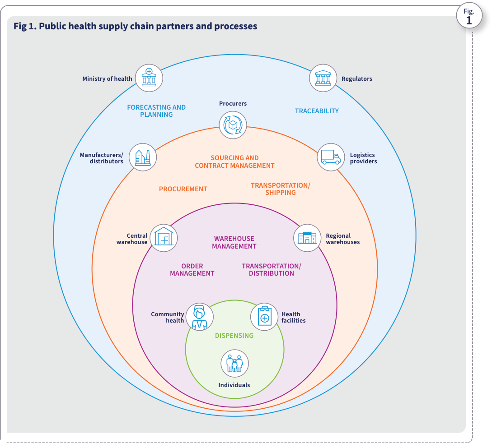</p>
<p><em>Source: WHO, Digital transformation handbook for health supply chain architecture, 2024, PDF page 11; rendered from the PDF's vector layer in the L1 entry.</em></p>
<p><em>Public health supply chain partners and processes</em></p>
<p><a id="pers:ministry-of-health"></a><span class="block-actions" data-block="pers:ministry-of-health"><a class="ba-edit" href="https://github.com/litlfred/dth-sc/edit/main/folio/dth-sc/introduction/pers-ministry-of-health.md" title="Edit this block's source on GitHub (folio/dth-sc/introduction/pers-ministry-of-health.md)">✎ edit</a><a class="ba-feedback" href="https://github.com/litlfred/dth-sc/issues/new?title=Feedback+%5Bdth-sc%5D%3A+Introduction+%E2%80%94+pers%3Aministry-of-health&amp;body=**Content%3A**+%60dth-sc%60%0A**Block%3A**+%60pers%3Aministry-of-health%60%0A**Section%3A**+Introduction%0A**Source%3A**+https%3A%2F%2Fgithub.com%2Flitlfred%2Fdth-sc%2Fblob%2Fmain%2Ffolio%2Fdth-sc%2Fintroduction%2Fpers-ministry-of-health.md%0A%0A**Type%3A**+general+%7C+technical+%7C+editorial%0A%0A**Comment%3A**%0A%0A%0A**Proposed+change%3A**%0A" title="Give feedback on this block (opens a GitHub issue)">📣 feedback</a></span>
<strong>Persona.</strong> <em>Ministry of health (MOH)</em></p>
<p><em>Organization / leadership role.</em> National health authority responsible for health supply chain stewardship, policy, product selection, national forecasting and supply planning, and chairing the DHSC steering committee.</p>
<div class="table-wrapper"><table>
<thead>
<tr>
<th>Attribute</th>
<th>Description</th>
<th>Handbook basis</th>
</tr>
</thead>
<tbody>
<tr>
<td><strong>Role ID</strong></td>
<td><code>SC-R-01</code> (<code>pers:ministry-of-health</code>, <code>person</code>)</td>
<td>Introduction Figs. 1 &#x26; 3 (PDF pp. 11–12), Table 1 (PDF p. 18), Ch 1 Step 1 (PDF p. 22), Annex 2 (PDF p. 67), Annex 5 (PDF p. 70)</td>
</tr>
<tr>
<td><strong>Goals</strong></td>
<td>Ensure equitable, timely availability of quality-assured health products across all levels of care; align the DHSC strategy and architecture with national health and digital health strategies (Fig. 8).</td>
<td>Introduction Figs. 1 &#x26; 3 (PDF pp. 11–12), Table 1 (PDF p. 18), Ch 1 Step 1 (PDF p. 22), Annex 2 (PDF p. 67), Annex 5 (PDF p. 70)</td>
</tr>
<tr>
<td><strong>Tasks and responsibilities</strong></td>
<td>Chair the DHSC steering committee (Annex 2); select essential medicines; lead national forecasting and supply planning (Annex 5); endorse the DHSC vision, target architecture, and investment roadmap (Table 1).</td>
<td>Introduction Figs. 1 &#x26; 3 (PDF pp. 11–12), Table 1 (PDF p. 18), Ch 1 Step 1 (PDF p. 22), Annex 2 (PDF p. 67), Annex 5 (PDF p. 70)</td>
</tr>
<tr>
<td><strong>Challenges and bottlenecks</strong></td>
<td>Fragmented, siloed <a href="../folio-assistant-core/glossary/instance/dth-sc/#dth-sc--dth-sc--health-supply-chain-information-system" title="A paper-based or software tool that supports the management and/or operations of the health supply chain." class="fa-term">HSCISs</a> across donor programmes; limited end-to-end visibility of stock and consumption; competing budget priorities and lack of a mandated digital department (Table 2).</td>
<td>Introduction Figs. 1 &#x26; 3 (PDF pp. 11–12), Table 1 (PDF p. 18), Ch 1 Step 1 (PDF p. 22), Annex 2 (PDF p. 67), Annex 5 (PDF p. 70)</td>
</tr>
<tr>
<td><strong>BPMN lane(s)</strong></td>
<td><code>Lane_BP01_MOH</code> (<code>bp:sc-bp-01-stepwise-dhsc-transformation</code>), <code>Lane_BP02_MOH</code> (<code>bp:sc-bp-02-end-to-end-supply-chain-processes</code>)</td>
<td>Introduction Figs. 1 &#x26; 3 (PDF pp. 11–12), Table 1 (PDF p. 18), Ch 1 Step 1 (PDF p. 22), Annex 2 (PDF p. 67), Annex 5 (PDF p. 70)</td>
</tr>
<tr>
<td><strong>ArchiMate alignment (<code>dpi-h-ra</code> <code>0.3.0-draft.1</code>)</strong></td>
<td><code>Ministry of Health</code> (<code>id-1c5c0bc9234e4282b654dbc71b9da706</code>), <code>Forecasting &#x26; Planning</code> (<code>id-e53b31972646454384c78f3380f5c40e</code>), <code>Forecasting &#x26; Supply Planning System</code> (<code>id-4f7d1037d878435aa3a0fbdcee0c685b</code>), <code>Governance, Policy, and Legislation</code> (<code>id-88a90dfa38904fba930a49add401e660</code>)</td>
<td><code>smart-ra#147</code></td>
</tr>
</tbody>
</table></div>
<p><a id="pers:procurer"></a><span class="block-actions" data-block="pers:procurer"><a class="ba-edit" href="https://github.com/litlfred/dth-sc/edit/main/folio/dth-sc/introduction/pers-procurer.md" title="Edit this block's source on GitHub (folio/dth-sc/introduction/pers-procurer.md)">✎ edit</a><a class="ba-feedback" href="https://github.com/litlfred/dth-sc/issues/new?title=Feedback+%5Bdth-sc%5D%3A+Introduction+%E2%80%94+pers%3Aprocurer&amp;body=**Content%3A**+%60dth-sc%60%0A**Block%3A**+%60pers%3Aprocurer%60%0A**Section%3A**+Introduction%0A**Source%3A**+https%3A%2F%2Fgithub.com%2Flitlfred%2Fdth-sc%2Fblob%2Fmain%2Ffolio%2Fdth-sc%2Fintroduction%2Fpers-procurer.md%0A%0A**Type%3A**+general+%7C+technical+%7C+editorial%0A%0A**Comment%3A**%0A%0A%0A**Proposed+change%3A**%0A" title="Give feedback on this block (opens a GitHub issue)">📣 feedback</a></span>
<strong>Persona.</strong> <em>Procurer (national or partner procurement agency)</em></p>
<p><em>Supply chain partner role.</em> Public or partner procurement agency responsible for sourcing health products, managing tenders (RFP/RFQ), awarding supplier contracts, and issuing purchase orders.</p>
<div class="table-wrapper"><table>
<thead>
<tr>
<th>Attribute</th>
<th>Description</th>
<th>Handbook basis</th>
</tr>
</thead>
<tbody>
<tr>
<td><strong>Role ID</strong></td>
<td><code>SC-R-02</code> (<code>pers:procurer</code>, <code>person</code>)</td>
<td>Introduction Figs. 1 &#x26; 3 (PDF pp. 11–12), Ch 2 Fig. 14 (PDF p. 34), Annex 4 (PDF p. 69)</td>
</tr>
<tr>
<td><strong>Goals</strong></td>
<td>Procure quality-assured medicines and health products at competitive total cost and short lead times to meet national supply plans.</td>
<td>Introduction Figs. 1 &#x26; 3 (PDF pp. 11–12), Ch 2 Fig. 14 (PDF p. 34), Annex 4 (PDF p. 69)</td>
</tr>
<tr>
<td><strong>Tasks and responsibilities</strong></td>
<td>Translate national supply plans into procurement requisitions; manage supplier prequalification and contracts (<code>Supplier &#x26; Contract Management System</code>); execute tenders and purchase orders (<code>Procurement Management System</code>).</td>
<td>Introduction Figs. 1 &#x26; 3 (PDF pp. 11–12), Ch 2 Fig. 14 (PDF p. 34), Annex 4 (PDF p. 69)</td>
</tr>
<tr>
<td><strong>Challenges and bottlenecks</strong></td>
<td>Long manual procurement processing lead times (Annex 4); mismatched product and supplier master identifiers across procurement and warehouse systems (Ch 1 Fig. 9).</td>
<td>Introduction Figs. 1 &#x26; 3 (PDF pp. 11–12), Ch 2 Fig. 14 (PDF p. 34), Annex 4 (PDF p. 69)</td>
</tr>
<tr>
<td><strong>BPMN lane(s)</strong></td>
<td><code>Lane_BP02_Procurer</code> (<code>bp:sc-bp-02-end-to-end-supply-chain-processes</code>)</td>
<td>Introduction Figs. 1 &#x26; 3 (PDF pp. 11–12), Ch 2 Fig. 14 (PDF p. 34), Annex 4 (PDF p. 69)</td>
</tr>
<tr>
<td><strong>ArchiMate alignment (<code>dpi-h-ra</code> <code>0.3.0-draft.1</code>)</strong></td>
<td><code>Procurer</code> (<code>id-2bfebc1bb917583cbc21e7d1bfac3164</code>), <code>Procurement Management</code> (<code>id-9825f8c281d74fa5a9ec0171e246fb27</code>), <code>Supplier &#x26; Contracts Management</code> (<code>id-f3331a72444d4cc49391c25e0f7745fd</code>), <code>Procurement Management System</code> (<code>id-58832f74225140c38ddc4ebaa5fef90c</code>), <code>Supplier &#x26; Contract Management System</code> (<code>id-566242a824b24ede92c7b6593b827b94</code>)</td>
<td><code>smart-ra#147</code></td>
</tr>
</tbody>
</table></div>
<p><a id="pers:manufacturer-distributor"></a><span class="block-actions" data-block="pers:manufacturer-distributor"><a class="ba-edit" href="https://github.com/litlfred/dth-sc/edit/main/folio/dth-sc/introduction/pers-manufacturer-distributor.md" title="Edit this block's source on GitHub (folio/dth-sc/introduction/pers-manufacturer-distributor.md)">✎ edit</a><a class="ba-feedback" href="https://github.com/litlfred/dth-sc/issues/new?title=Feedback+%5Bdth-sc%5D%3A+Introduction+%E2%80%94+pers%3Amanufacturer-distributor&amp;body=**Content%3A**+%60dth-sc%60%0A**Block%3A**+%60pers%3Amanufacturer-distributor%60%0A**Section%3A**+Introduction%0A**Source%3A**+https%3A%2F%2Fgithub.com%2Flitlfred%2Fdth-sc%2Fblob%2Fmain%2Ffolio%2Fdth-sc%2Fintroduction%2Fpers-manufacturer-distributor.md%0A%0A**Type%3A**+general+%7C+technical+%7C+editorial%0A%0A**Comment%3A**%0A%0A%0A**Proposed+change%3A**%0A" title="Give feedback on this block (opens a GitHub issue)">📣 feedback</a></span>
<strong>Persona.</strong> <em>Manufacturer and distributor</em></p>
<p><em>Supply chain partner role.</em> Pharmaceutical or health product manufacturer and wholesale distributor that produces, labels, serializes, and ships health products into the national supply chain.</p>
<div class="table-wrapper"><table>
<thead>
<tr>
<th>Attribute</th>
<th>Description</th>
<th>Handbook basis</th>
</tr>
</thead>
<tbody>
<tr>
<td><strong>Role ID</strong></td>
<td><code>SC-R-03</code> (<code>pers:manufacturer-distributor</code>, <code>person</code>)</td>
<td>Introduction Figs. 1 &#x26; 3 (PDF pp. 11–12), Ch 2 Fig. 14 (PDF p. 34), Ch 4 Figs. 24–25 (PDF pp. 55–56)</td>
</tr>
<tr>
<td><strong>Goals</strong></td>
<td>Supply contracted health products meeting regulatory standards and provide standardized product master data and batch/serial traceability data before physical delivery.</td>
<td>Introduction Figs. 1 &#x26; 3 (PDF pp. 11–12), Ch 2 Fig. 14 (PDF p. 34), Ch 4 Figs. 24–25 (PDF pp. 55–56)</td>
</tr>
<tr>
<td><strong>Tasks and responsibilities</strong></td>
<td>Assign global product identifiers, batch/lot numbers, expiry dates, and serial numbers on packaging; transmit master data and commissioning/shipping traceability events from manufacturer systems to the recipient country (Ch 4 Figs. 24–25).</td>
<td>Introduction Figs. 1 &#x26; 3 (PDF pp. 11–12), Ch 2 Fig. 14 (PDF p. 34), Ch 4 Figs. 24–25 (PDF pp. 55–56)</td>
</tr>
<tr>
<td><strong>Challenges and bottlenecks</strong></td>
<td>Divergent national labelling and serialization mandates; lack of phased compliance guidelines or standardized data-exchange endpoints (Table 2, Ch 4).</td>
<td>Introduction Figs. 1 &#x26; 3 (PDF pp. 11–12), Ch 2 Fig. 14 (PDF p. 34), Ch 4 Figs. 24–25 (PDF pp. 55–56)</td>
</tr>
<tr>
<td><strong>BPMN lane(s)</strong></td>
<td><code>Lane_BP02_Manufacturer</code> (<code>bp:sc-bp-02-end-to-end-supply-chain-processes</code>), <code>Lane_BP03_Manufacturer</code> (<code>bp:sc-bp-03-centralized-track-and-trace</code>)</td>
<td>Introduction Figs. 1 &#x26; 3 (PDF pp. 11–12), Ch 2 Fig. 14 (PDF p. 34), Ch 4 Figs. 24–25 (PDF pp. 55–56)</td>
</tr>
<tr>
<td><strong>ArchiMate alignment (<code>dpi-h-ra</code> <code>0.3.0-draft.1</code>)</strong></td>
<td><code>Manufacturer / Distributor</code> (<code>id-66d0f91175c154b48413d57e9f952a34</code>), <code>Manufacturer Systems</code> (<code>id-f8c43d85b20e5671b613d723483217a8</code>), <code>Product Master Data</code> (<code>id-815bef20a55f5f59b409a76a9a6545f8</code>), <code>Traceability Event</code> (<code>id-5dc77dae1bce5d11b288830795b31bdf</code>)</td>
<td><code>smart-ra#147</code></td>
</tr>
</tbody>
</table></div>
<p><a id="pers:regulatory-authority"></a><span class="block-actions" data-block="pers:regulatory-authority"><a class="ba-edit" href="https://github.com/litlfred/dth-sc/edit/main/folio/dth-sc/introduction/pers-regulatory-authority.md" title="Edit this block's source on GitHub (folio/dth-sc/introduction/pers-regulatory-authority.md)">✎ edit</a><a class="ba-feedback" href="https://github.com/litlfred/dth-sc/issues/new?title=Feedback+%5Bdth-sc%5D%3A+Introduction+%E2%80%94+pers%3Aregulatory-authority&amp;body=**Content%3A**+%60dth-sc%60%0A**Block%3A**+%60pers%3Aregulatory-authority%60%0A**Section%3A**+Introduction%0A**Source%3A**+https%3A%2F%2Fgithub.com%2Flitlfred%2Fdth-sc%2Fblob%2Fmain%2Ffolio%2Fdth-sc%2Fintroduction%2Fpers-regulatory-authority.md%0A%0A**Type%3A**+general+%7C+technical+%7C+editorial%0A%0A**Comment%3A**%0A%0A%0A**Proposed+change%3A**%0A" title="Give feedback on this block (opens a GitHub issue)">📣 feedback</a></span>
<strong>Persona.</strong> <em>National regulatory authority</em></p>
<p><em>Supply chain partner role.</em> National medicines regulatory authority responsible for product registration, licensing, market surveillance, pharmacovigilance, and medical product verification and recall.</p>
<div class="table-wrapper"><table>
<thead>
<tr>
<th>Attribute</th>
<th>Description</th>
<th>Handbook basis</th>
</tr>
</thead>
<tbody>
<tr>
<td><strong>Role ID</strong></td>
<td><code>SC-R-04</code> (<code>pers:regulatory-authority</code>, <code>person</code>)</td>
<td>Introduction Figs. 1 &#x26; 3 (PDF pp. 11–12), Table 1 (PDF p. 18), Ch 4 Fig. 24 (PDF p. 55), Annex 5 (PDF p. 70)</td>
</tr>
<tr>
<td><strong>Goals</strong></td>
<td>Protect public health by ensuring only registered, genuine, quality-assured medical products circulate in the supply chain and rapidly detecting and recalling substandard or falsified products.</td>
<td>Introduction Figs. 1 &#x26; 3 (PDF pp. 11–12), Table 1 (PDF p. 18), Ch 4 Fig. 24 (PDF p. 55), Annex 5 (PDF p. 70)</td>
</tr>
<tr>
<td><strong>Tasks and responsibilities</strong></td>
<td>Register medical products and publish authoritative product master data (<code>Regulatory Systems</code>, <code>Product Registry</code> / NPC); enforce serialization and traceability compliance (Table 2); query chain-of-custody anomalies and issue recalls (Ch 4 Fig. 24).</td>
<td>Introduction Figs. 1 &#x26; 3 (PDF pp. 11–12), Table 1 (PDF p. 18), Ch 4 Fig. 24 (PDF p. 55), Annex 5 (PDF p. 70)</td>
</tr>
<tr>
<td><strong>Challenges and bottlenecks</strong></td>
<td>Disconnected regulatory registration systems (eRIS) and supply chain systems causing product code mismatches (Ch 1 Fig. 9); inability to trace affected batches during recalls without aggregated event data.</td>
<td>Introduction Figs. 1 &#x26; 3 (PDF pp. 11–12), Table 1 (PDF p. 18), Ch 4 Fig. 24 (PDF p. 55), Annex 5 (PDF p. 70)</td>
</tr>
<tr>
<td><strong>BPMN lane(s)</strong></td>
<td><code>Lane_BP02_Regulatory</code> (<code>bp:sc-bp-02-end-to-end-supply-chain-processes</code>), <code>Lane_BP03_Regulatory</code> (<code>bp:sc-bp-03-centralized-track-and-trace</code>)</td>
<td>Introduction Figs. 1 &#x26; 3 (PDF pp. 11–12), Table 1 (PDF p. 18), Ch 4 Fig. 24 (PDF p. 55), Annex 5 (PDF p. 70)</td>
</tr>
<tr>
<td><strong>ArchiMate alignment (<code>dpi-h-ra</code> <code>0.3.0-draft.1</code>)</strong></td>
<td><code>National Regulatory Authority</code> (<code>id-8e67c8e9e1195cdc857b03a2c640e7fe</code>), <code>Regulatory Systems</code> (<code>id-22eff58eae365a4f8d0e0368d8c3497e</code>), <code>Product Registry</code> (<code>id-59c26d672a4248e0bb83cf4d26cba10c</code>), <code>Product Verification</code> (<code>id-975c5567001151299672c0341a733111</code>), <code>Recall</code> (<code>id-a9c92f8fa2924d4180e8f5512b0d0097</code>)</td>
<td><code>smart-ra#147</code></td>
</tr>
</tbody>
</table></div>
<p><a id="pers:central-warehouse"></a><span class="block-actions" data-block="pers:central-warehouse"><a class="ba-edit" href="https://github.com/litlfred/dth-sc/edit/main/folio/dth-sc/introduction/pers-central-warehouse.md" title="Edit this block's source on GitHub (folio/dth-sc/introduction/pers-central-warehouse.md)">✎ edit</a><a class="ba-feedback" href="https://github.com/litlfred/dth-sc/issues/new?title=Feedback+%5Bdth-sc%5D%3A+Introduction+%E2%80%94+pers%3Acentral-warehouse&amp;body=**Content%3A**+%60dth-sc%60%0A**Block%3A**+%60pers%3Acentral-warehouse%60%0A**Section%3A**+Introduction%0A**Source%3A**+https%3A%2F%2Fgithub.com%2Flitlfred%2Fdth-sc%2Fblob%2Fmain%2Ffolio%2Fdth-sc%2Fintroduction%2Fpers-central-warehouse.md%0A%0A**Type%3A**+general+%7C+technical+%7C+editorial%0A%0A**Comment%3A**%0A%0A%0A**Proposed+change%3A**%0A" title="Give feedback on this block (opens a GitHub issue)">📣 feedback</a></span>
<strong>Persona.</strong> <em>Central warehouse (central medical store)</em></p>
<p><em>Supply chain partner role.</em> National central medical store responsible for receiving procured health products, managing national inventory and cold chain storage, fulfilling orders, and capturing warehouse traceability events.</p>
<div class="table-wrapper"><table>
<thead>
<tr>
<th>Attribute</th>
<th>Description</th>
<th>Handbook basis</th>
</tr>
</thead>
<tbody>
<tr>
<td><strong>Role ID</strong></td>
<td><code>SC-R-05</code> (<code>pers:central-warehouse</code>, <code>person</code>)</td>
<td>Introduction Figs. 1 &#x26; 3 (PDF pp. 11–12), Table 1 (PDF p. 18), Ch 2 Figs. 14–19 (PDF pp. 34–40), Ch 4 Figs. 24–25 (PDF pp. 55–56), Annexes 4–5 (PDF pp. 69–70)</td>
</tr>
<tr>
<td><strong>Goals</strong></td>
<td>Maintain optimal national buffer stock, prevent stock expiries and wastages (Annex 4), and ensure accurate, timely order fulfilment to regional/district warehouses and health facilities.</td>
<td>Introduction Figs. 1 &#x26; 3 (PDF pp. 11–12), Table 1 (PDF p. 18), Ch 2 Figs. 14–19 (PDF pp. 34–40), Ch 4 Figs. 24–25 (PDF pp. 55–56), Annexes 4–5 (PDF pp. 69–70)</td>
</tr>
<tr>
<td><strong>Tasks and responsibilities</strong></td>
<td>Receive and verify shipments from manufacturers; manage storage, put-away, pick/pack, and inventory allocation in the <a href="../folio-assistant-core/glossary/instance/dth-sc/#dth-sc--dth-sc--warehouse-management-system" title="A computer application that manages and optimizes workflows and the storage of goods within a warehouse." class="fa-term">WMS</a>/ERP; process requisitions in the OMS; capture receiving and shipping traceability events (Ch 4 Figs. 24–25).</td>
<td>Introduction Figs. 1 &#x26; 3 (PDF pp. 11–12), Table 1 (PDF p. 18), Ch 2 Figs. 14–19 (PDF pp. 34–40), Ch 4 Figs. 24–25 (PDF pp. 55–56), Annexes 4–5 (PDF pp. 69–70)</td>
</tr>
<tr>
<td><strong>Challenges and bottlenecks</strong></td>
<td>Stock expiries and wastages when warehouse and downstream order/consumption systems do not exchange real-time inventory data (Annex 4).</td>
<td>Introduction Figs. 1 &#x26; 3 (PDF pp. 11–12), Table 1 (PDF p. 18), Ch 2 Figs. 14–19 (PDF pp. 34–40), Ch 4 Figs. 24–25 (PDF pp. 55–56), Annexes 4–5 (PDF pp. 69–70)</td>
</tr>
<tr>
<td><strong>BPMN lane(s)</strong></td>
<td><code>Lane_BP02_CentralWarehouse</code> (<code>bp:sc-bp-02-end-to-end-supply-chain-processes</code>), <code>Lane_BP03_CentralWarehouse</code> (<code>bp:sc-bp-03-centralized-track-and-trace</code>)</td>
<td>Introduction Figs. 1 &#x26; 3 (PDF pp. 11–12), Table 1 (PDF p. 18), Ch 2 Figs. 14–19 (PDF pp. 34–40), Ch 4 Figs. 24–25 (PDF pp. 55–56), Annexes 4–5 (PDF pp. 69–70)</td>
</tr>
<tr>
<td><strong>ArchiMate alignment (<code>dpi-h-ra</code> <code>0.3.0-draft.1</code>)</strong></td>
<td><code>Central Warehouse</code> (<code>id-ca8d3a5f0b3b50999c9f51cb0d652700</code>), <code>Warehouse / Inventory Management</code> (<code>id-2d603034c4194b058762690fd6415ff0</code>), <code>Warehouse Management System</code> (<code>id-35d0806bcb5c46fab5102d75de09558f</code>), <code>Order Management System</code> (<code>id-f6022dce920d4f828581dd2f7e15280f</code>)</td>
<td><code>smart-ra#147</code></td>
</tr>
</tbody>
</table></div>
<p><a id="pers:regional-district-warehouse"></a><span class="block-actions" data-block="pers:regional-district-warehouse"><a class="ba-edit" href="https://github.com/litlfred/dth-sc/edit/main/folio/dth-sc/introduction/pers-regional-district-warehouse.md" title="Edit this block's source on GitHub (folio/dth-sc/introduction/pers-regional-district-warehouse.md)">✎ edit</a><a class="ba-feedback" href="https://github.com/litlfred/dth-sc/issues/new?title=Feedback+%5Bdth-sc%5D%3A+Introduction+%E2%80%94+pers%3Aregional-district-warehouse&amp;body=**Content%3A**+%60dth-sc%60%0A**Block%3A**+%60pers%3Aregional-district-warehouse%60%0A**Section%3A**+Introduction%0A**Source%3A**+https%3A%2F%2Fgithub.com%2Flitlfred%2Fdth-sc%2Fblob%2Fmain%2Ffolio%2Fdth-sc%2Fintroduction%2Fpers-regional-district-warehouse.md%0A%0A**Type%3A**+general+%7C+technical+%7C+editorial%0A%0A**Comment%3A**%0A%0A%0A**Proposed+change%3A**%0A" title="Give feedback on this block (opens a GitHub issue)">📣 feedback</a></span>
<strong>Persona.</strong> <em>Regional and district warehouse (branch warehouse)</em></p>
<p><em>Supply chain partner role.</em> Subnational (regional, provincial, or district/branch) warehouse that holds intermediate stock, aggregates or fulfils facility requisitions, and under decentralized option B (Fig. 19) may procure locally.</p>
<div class="table-wrapper"><table>
<thead>
<tr>
<th>Attribute</th>
<th>Description</th>
<th>Handbook basis</th>
</tr>
</thead>
<tbody>
<tr>
<td><strong>Role ID</strong></td>
<td><code>SC-R-06</code> (<code>pers:regional-district-warehouse</code>, <code>person</code>)</td>
<td>Introduction Figs. 1 &#x26; 3 (PDF pp. 11–12), Ch 2 Figs. 17–19 (PDF pp. 38–40), Ch 4 Fig. 24 (PDF p. 55), Annexes 4–5 (PDF pp. 69–70)</td>
</tr>
<tr>
<td><strong>Goals</strong></td>
<td>Bridge national supply and service delivery points by maintaining subnational stock availability, cold chain integrity, and timely last-mile distribution.</td>
<td>Introduction Figs. 1 &#x26; 3 (PDF pp. 11–12), Ch 2 Figs. 17–19 (PDF pp. 38–40), Ch 4 Fig. 24 (PDF p. 55), Annexes 4–5 (PDF pp. 69–70)</td>
</tr>
<tr>
<td><strong>Tasks and responsibilities</strong></td>
<td>Receive stock from central warehouse or local suppliers; manage branch inventory and cold chain (<code>WMS</code>, <code>Cold Chain Management System</code>); process facility orders (<code>OMS</code>); record receiving and shipping traceability events (Fig. 24).</td>
<td>Introduction Figs. 1 &#x26; 3 (PDF pp. 11–12), Ch 2 Figs. 17–19 (PDF pp. 38–40), Ch 4 Fig. 24 (PDF p. 55), Annexes 4–5 (PDF pp. 69–70)</td>
</tr>
<tr>
<td><strong>Challenges and bottlenecks</strong></td>
<td>Frequent stockouts of lifesaving medicines when subnational inventory and order systems lack real-time visibility across central and facility tiers (Annex 4).</td>
<td>Introduction Figs. 1 &#x26; 3 (PDF pp. 11–12), Ch 2 Figs. 17–19 (PDF pp. 38–40), Ch 4 Fig. 24 (PDF p. 55), Annexes 4–5 (PDF pp. 69–70)</td>
</tr>
<tr>
<td><strong>BPMN lane(s)</strong></td>
<td><code>Lane_BP02_RegionalWarehouse</code> (<code>bp:sc-bp-02-end-to-end-supply-chain-processes</code>), <code>Lane_BP03_RegionalWarehouse</code> (<code>bp:sc-bp-03-centralized-track-and-trace</code>)</td>
<td>Introduction Figs. 1 &#x26; 3 (PDF pp. 11–12), Ch 2 Figs. 17–19 (PDF pp. 38–40), Ch 4 Fig. 24 (PDF p. 55), Annexes 4–5 (PDF pp. 69–70)</td>
</tr>
<tr>
<td><strong>ArchiMate alignment (<code>dpi-h-ra</code> <code>0.3.0-draft.1</code>)</strong></td>
<td><code>Regional Warehouse</code> (<code>id-d5c5639801335abeb3485ebd944f378b</code>), <code>District Warehouse</code> (<code>id-5973db45fb985f0abd6ba840fa5855e3</code>), <code>Warehouse Management System</code> (<code>id-35d0806bcb5c46fab5102d75de09558f</code>), <code>Order Management System</code> (<code>id-f6022dce920d4f828581dd2f7e15280f</code>)</td>
<td><code>smart-ra#147</code></td>
</tr>
</tbody>
</table></div>
<p><a id="pers:logistics-provider"></a><span class="block-actions" data-block="pers:logistics-provider"><a class="ba-edit" href="https://github.com/litlfred/dth-sc/edit/main/folio/dth-sc/introduction/pers-logistics-provider.md" title="Edit this block's source on GitHub (folio/dth-sc/introduction/pers-logistics-provider.md)">✎ edit</a><a class="ba-feedback" href="https://github.com/litlfred/dth-sc/issues/new?title=Feedback+%5Bdth-sc%5D%3A+Introduction+%E2%80%94+pers%3Alogistics-provider&amp;body=**Content%3A**+%60dth-sc%60%0A**Block%3A**+%60pers%3Alogistics-provider%60%0A**Section%3A**+Introduction%0A**Source%3A**+https%3A%2F%2Fgithub.com%2Flitlfred%2Fdth-sc%2Fblob%2Fmain%2Ffolio%2Fdth-sc%2Fintroduction%2Fpers-logistics-provider.md%0A%0A**Type%3A**+general+%7C+technical+%7C+editorial%0A%0A**Comment%3A**%0A%0A%0A**Proposed+change%3A**%0A" title="Give feedback on this block (opens a GitHub issue)">📣 feedback</a></span>
<strong>Persona.</strong> <em>Logistics provider (transportation and cold chain)</em></p>
<p><em>Supply chain partner role.</em> Public fleet or third-party logistics (3PL) operator responsible for freight forwarding, customs clearance, route optimization, cold chain monitoring in transit, and shipment delivery between supply chain nodes.</p>
<div class="table-wrapper"><table>
<thead>
<tr>
<th>Attribute</th>
<th>Description</th>
<th>Handbook basis</th>
</tr>
</thead>
<tbody>
<tr>
<td><strong>Role ID</strong></td>
<td><code>SC-R-07</code> (<code>pers:logistics-provider</code>, <code>person</code>)</td>
<td>Introduction Figs. 1 &#x26; 3 (PDF pp. 11–12), Ch 2 Fig. 14 (PDF p. 34), Ch 4 Fig. 24 (PDF p. 55)</td>
</tr>
<tr>
<td><strong>Goals</strong></td>
<td>Deliver health commodities safely, on schedule, and within required temperature ranges across national, regional, district, and facility tiers.</td>
<td>Introduction Figs. 1 &#x26; 3 (PDF pp. 11–12), Ch 2 Fig. 14 (PDF p. 34), Ch 4 Fig. 24 (PDF p. 55)</td>
</tr>
<tr>
<td><strong>Tasks and responsibilities</strong></td>
<td>Plan and execute shipments in the <code>Transportation Management System</code> (TMS); monitor in-transit temperature via <code>Cold Chain Management System</code>; record shipment dispatch, custody transfer, and proof-of-delivery events.</td>
<td>Introduction Figs. 1 &#x26; 3 (PDF pp. 11–12), Ch 2 Fig. 14 (PDF p. 34), Ch 4 Fig. 24 (PDF p. 55)</td>
</tr>
<tr>
<td><strong>Challenges and bottlenecks</strong></td>
<td>Gaps in custody and temperature visibility during transit between central/regional warehouses and remote service delivery points.</td>
<td>Introduction Figs. 1 &#x26; 3 (PDF pp. 11–12), Ch 2 Fig. 14 (PDF p. 34), Ch 4 Fig. 24 (PDF p. 55)</td>
</tr>
<tr>
<td><strong>BPMN lane(s)</strong></td>
<td><code>Lane_BP02_LogisticsProvider</code> (<code>bp:sc-bp-02-end-to-end-supply-chain-processes</code>)</td>
<td>Introduction Figs. 1 &#x26; 3 (PDF pp. 11–12), Ch 2 Fig. 14 (PDF p. 34), Ch 4 Fig. 24 (PDF p. 55)</td>
</tr>
<tr>
<td><strong>ArchiMate alignment (<code>dpi-h-ra</code> <code>0.3.0-draft.1</code>)</strong></td>
<td><code>Logistics Provider</code> (<code>id-158e2821549e588ca4fe4bb2a839547a</code>), <code>Transportation Management</code> (<code>id-b37bf4947ec9430197f9056d283eb5b0</code>), <code>Transportation Management System</code> (<code>id-ba1ec21bae4641378c56f714f72042d7</code>), <code>Cold Chain Management System</code> (<code>id-57be342b728e5ac08fa2143faba83984</code>)</td>
<td><code>smart-ra#147</code></td>
</tr>
</tbody>
</table></div>
<p><a id="pers:health-facility"></a><span class="block-actions" data-block="pers:health-facility"><a class="ba-edit" href="https://github.com/litlfred/dth-sc/edit/main/folio/dth-sc/introduction/pers-health-facility.md" title="Edit this block's source on GitHub (folio/dth-sc/introduction/pers-health-facility.md)">✎ edit</a><a class="ba-feedback" href="https://github.com/litlfred/dth-sc/issues/new?title=Feedback+%5Bdth-sc%5D%3A+Introduction+%E2%80%94+pers%3Ahealth-facility&amp;body=**Content%3A**+%60dth-sc%60%0A**Block%3A**+%60pers%3Ahealth-facility%60%0A**Section%3A**+Introduction%0A**Source%3A**+https%3A%2F%2Fgithub.com%2Flitlfred%2Fdth-sc%2Fblob%2Fmain%2Ffolio%2Fdth-sc%2Fintroduction%2Fpers-health-facility.md%0A%0A**Type%3A**+general+%7C+technical+%7C+editorial%0A%0A**Comment%3A**%0A%0A%0A**Proposed+change%3A**%0A" title="Give feedback on this block (opens a GitHub issue)">📣 feedback</a></span>
<strong>Persona.</strong> <em>Health facility (service delivery point)</em></p>
<p><em>Supply chain partner role.</em> Hospital, clinic, health centre, or pharmacy (service delivery point) that stores facility stock, submits replenishment requisitions, verifies and dispenses health products to patients, and reports consumption.</p>
<div class="table-wrapper"><table>
<thead>
<tr>
<th>Attribute</th>
<th>Description</th>
<th>Handbook basis</th>
</tr>
</thead>
<tbody>
<tr>
<td><strong>Role ID</strong></td>
<td><code>SC-R-08</code> (<code>pers:health-facility</code>, <code>person</code>)</td>
<td>Introduction Figs. 1 &#x26; 3 (PDF pp. 11–12), Ch 2 Figs. 17–19 (PDF pp. 38–40), Ch 4 Figs. 24–25 (PDF pp. 55–56), Annexes 4–5 (PDF pp. 69–70)</td>
</tr>
<tr>
<td><strong>Goals</strong></td>
<td>Maintain continuous point-of-care availability of essential medicines and vaccines without overburdening health workers with duplicative paper and electronic data entry (Annex 4).</td>
<td>Introduction Figs. 1 &#x26; 3 (PDF pp. 11–12), Ch 2 Figs. 17–19 (PDF pp. 38–40), Ch 4 Figs. 24–25 (PDF pp. 55–56), Annexes 4–5 (PDF pp. 69–70)</td>
</tr>
<tr>
<td><strong>Tasks and responsibilities</strong></td>
<td>Receive and verify stock deliveries; manage facility inventory (<code>Health Facility Logistics Management System</code>); submit replenishment orders (<code>Order Management System</code>); scan and dispense products to patients (<code>Dispensing System</code>) and report consumption data.</td>
<td>Introduction Figs. 1 &#x26; 3 (PDF pp. 11–12), Ch 2 Figs. 17–19 (PDF pp. 38–40), Ch 4 Figs. 24–25 (PDF pp. 55–56), Annexes 4–5 (PDF pp. 69–70)</td>
</tr>
<tr>
<td><strong>Challenges and bottlenecks</strong></td>
<td>Health care workers burdened with 30–50 hours of manual and duplicative data entry across disconnected health and supply chain systems; unreliable power and internet connectivity at peripheral facilities (Table 2, Annex 4).</td>
<td>Introduction Figs. 1 &#x26; 3 (PDF pp. 11–12), Ch 2 Figs. 17–19 (PDF pp. 38–40), Ch 4 Figs. 24–25 (PDF pp. 55–56), Annexes 4–5 (PDF pp. 69–70)</td>
</tr>
<tr>
<td><strong>BPMN lane(s)</strong></td>
<td><code>Lane_BP02_HealthFacility</code> (<code>bp:sc-bp-02-end-to-end-supply-chain-processes</code>), <code>Lane_BP03_HealthFacility</code> (<code>bp:sc-bp-03-centralized-track-and-trace</code>)</td>
<td>Introduction Figs. 1 &#x26; 3 (PDF pp. 11–12), Ch 2 Figs. 17–19 (PDF pp. 38–40), Ch 4 Figs. 24–25 (PDF pp. 55–56), Annexes 4–5 (PDF pp. 69–70)</td>
</tr>
<tr>
<td><strong>ArchiMate alignment (<code>dpi-h-ra</code> <code>0.3.0-draft.1</code>)</strong></td>
<td><code>Health Facility</code> (<code>id-9cecae7a982548e1960a36ed41713a7c</code>), <code>Health Facility Logistics Management System</code> (<code>id-67637a829ea744cb930ac67459bc9894</code>), <code>Dispensing System</code> (<code>id-370b6bdcb29449c9be74644ffacc94aa</code>), <code>Dispensing</code> (<code>id-f9f30d3e83e24a8daa3393eebb0838eb</code>), <code>Facility registry</code> (<code>id-5f6d9b9678824b37b95952735420ae8d</code>)</td>
<td><code>smart-ra#147</code></td>
</tr>
</tbody>
</table></div>
<p><a id="pers:community-health-worker"></a><span class="block-actions" data-block="pers:community-health-worker"><a class="ba-edit" href="https://github.com/litlfred/dth-sc/edit/main/folio/dth-sc/introduction/pers-community-health-worker.md" title="Edit this block's source on GitHub (folio/dth-sc/introduction/pers-community-health-worker.md)">✎ edit</a><a class="ba-feedback" href="https://github.com/litlfred/dth-sc/issues/new?title=Feedback+%5Bdth-sc%5D%3A+Introduction+%E2%80%94+pers%3Acommunity-health-worker&amp;body=**Content%3A**+%60dth-sc%60%0A**Block%3A**+%60pers%3Acommunity-health-worker%60%0A**Section%3A**+Introduction%0A**Source%3A**+https%3A%2F%2Fgithub.com%2Flitlfred%2Fdth-sc%2Fblob%2Fmain%2Ffolio%2Fdth-sc%2Fintroduction%2Fpers-community-health-worker.md%0A%0A**Type%3A**+general+%7C+technical+%7C+editorial%0A%0A**Comment%3A**%0A%0A%0A**Proposed+change%3A**%0A" title="Give feedback on this block (opens a GitHub issue)">📣 feedback</a></span>
<strong>Persona.</strong> <em>Community health worker</em></p>
<p><em>Supply chain partner role.</em> Frontline community health provider delivering last-mile health products and services outside fixed facilities and reporting community stock and consumption using mobile tools (such as RapidSMS in Annex 5).</p>
<div class="table-wrapper"><table>
<thead>
<tr>
<th>Attribute</th>
<th>Description</th>
<th>Handbook basis</th>
</tr>
</thead>
<tbody>
<tr>
<td><strong>Role ID</strong></td>
<td><code>SC-R-09</code> (<code>pers:community-health-worker</code>, <code>person</code>)</td>
<td>Introduction Figs. 1 &#x26; 3 (PDF pp. 11–12), Annex 5 (PDF p. 70)</td>
</tr>
<tr>
<td><strong>Goals</strong></td>
<td>Maintain stock of essential community health commodities and report consumption and resupply needs rapidly with lightweight mobile tools.</td>
<td>Introduction Figs. 1 &#x26; 3 (PDF pp. 11–12), Annex 5 (PDF p. 70)</td>
</tr>
<tr>
<td><strong>Tasks and responsibilities</strong></td>
<td>Receive resupply kits from linked health facilities or branch warehouses; dispense essential medicines to individuals in the community; report stock-on-hand and consumption via mobile/SMS logistics tools (Annex 5).</td>
<td>Introduction Figs. 1 &#x26; 3 (PDF pp. 11–12), Annex 5 (PDF p. 70)</td>
</tr>
<tr>
<td><strong>Challenges and bottlenecks</strong></td>
<td>Intermittent connectivity, battery/device constraints, and delayed resupply when community reporting is not integrated with facility and district order management systems.</td>
<td>Introduction Figs. 1 &#x26; 3 (PDF pp. 11–12), Annex 5 (PDF p. 70)</td>
</tr>
<tr>
<td><strong>BPMN lane(s)</strong></td>
<td><code>Lane_BP02_CHW</code> (<code>bp:sc-bp-02-end-to-end-supply-chain-processes</code>)</td>
<td>Introduction Figs. 1 &#x26; 3 (PDF pp. 11–12), Annex 5 (PDF p. 70)</td>
</tr>
<tr>
<td><strong>ArchiMate alignment (<code>dpi-h-ra</code> <code>0.3.0-draft.1</code>)</strong></td>
<td><code>Community Health</code> (<code>id-2bdc635e575f5ec59bb5d6cbff12de78</code>), <code>Dispensing</code> (<code>id-f9f30d3e83e24a8daa3393eebb0838eb</code>), <code>Health Facility Logistics Management System</code> (<code>id-67637a829ea744cb930ac67459bc9894</code>)</td>
<td><code>smart-ra#147</code></td>
</tr>
</tbody>
</table></div>
<p><a id="pers:health-service-user"></a><span class="block-actions" data-block="pers:health-service-user"><a class="ba-edit" href="https://github.com/litlfred/dth-sc/edit/main/folio/dth-sc/introduction/pers-health-service-user.md" title="Edit this block's source on GitHub (folio/dth-sc/introduction/pers-health-service-user.md)">✎ edit</a><a class="ba-feedback" href="https://github.com/litlfred/dth-sc/issues/new?title=Feedback+%5Bdth-sc%5D%3A+Introduction+%E2%80%94+pers%3Ahealth-service-user&amp;body=**Content%3A**+%60dth-sc%60%0A**Block%3A**+%60pers%3Ahealth-service-user%60%0A**Section%3A**+Introduction%0A**Source%3A**+https%3A%2F%2Fgithub.com%2Flitlfred%2Fdth-sc%2Fblob%2Fmain%2Ffolio%2Fdth-sc%2Fintroduction%2Fpers-health-service-user.md%0A%0A**Type%3A**+general+%7C+technical+%7C+editorial%0A%0A**Comment%3A**%0A%0A%0A**Proposed+change%3A**%0A" title="Give feedback on this block (opens a GitHub issue)">📣 feedback</a></span>
<strong>Persona.</strong> <em>Individual (health service user / patient)</em></p>
<p><em>Supply chain beneficiary / end-user role.</em> Patient or member of the public who receives dispensed medicines or vaccines and can verify product authenticity at the point of use via mobile or web verification tools (Fig. 25, Annex 5).</p>
<div class="table-wrapper"><table>
<thead>
<tr>
<th>Attribute</th>
<th>Description</th>
<th>Handbook basis</th>
</tr>
</thead>
<tbody>
<tr>
<td><strong>Role ID</strong></td>
<td><code>SC-R-10</code> (<code>pers:health-service-user</code>, <code>person</code>)</td>
<td>Introduction Figs. 1 &#x26; 3 (PDF pp. 11–12), Ch 4 Figs. 24–25 (PDF pp. 55–56), Annexes 4–5 (PDF pp. 69–70)</td>
</tr>
<tr>
<td><strong>Goals</strong></td>
<td>Timely access to safe, genuine, and effective medicines and vaccines at the point of care, with confidence in product authenticity (Annex 4, Ch 4).</td>
<td>Introduction Figs. 1 &#x26; 3 (PDF pp. 11–12), Ch 4 Figs. 24–25 (PDF pp. 55–56), Annexes 4–5 (PDF pp. 69–70)</td>
</tr>
<tr>
<td><strong>Tasks and responsibilities</strong></td>
<td>Receive dispensed health products from a health facility or community health worker; optionally scan or query the product serial number via a mobile or web verification application (such as the NPC mobile app in Annex 5 and Fig. 25).</td>
<td>Introduction Figs. 1 &#x26; 3 (PDF pp. 11–12), Ch 4 Figs. 24–25 (PDF pp. 55–56), Annexes 4–5 (PDF pp. 69–70)</td>
</tr>
<tr>
<td><strong>Challenges and bottlenecks</strong></td>
<td>Stockouts of essential medicines at point of care; exposure to substandard or falsified medical products and lack of trust when verification tools are unavailable (Annex 4, Ch 4).</td>
<td>Introduction Figs. 1 &#x26; 3 (PDF pp. 11–12), Ch 4 Figs. 24–25 (PDF pp. 55–56), Annexes 4–5 (PDF pp. 69–70)</td>
</tr>
<tr>
<td><strong>BPMN lane(s)</strong></td>
<td><code>Lane_BP02_Individual</code> (<code>bp:sc-bp-02-end-to-end-supply-chain-processes</code>), <code>Lane_BP03_Individual</code> (<code>bp:sc-bp-03-centralized-track-and-trace</code>)</td>
<td>Introduction Figs. 1 &#x26; 3 (PDF pp. 11–12), Ch 4 Figs. 24–25 (PDF pp. 55–56), Annexes 4–5 (PDF pp. 69–70)</td>
</tr>
<tr>
<td><strong>ArchiMate alignment (<code>dpi-h-ra</code> <code>0.3.0-draft.1</code>)</strong></td>
<td><code>Individual</code> (<code>id-03e28af10b8f5b099e271461c8a99f21</code>), <code>Product Verification</code> (<code>id-975c5567001151299672c0341a733111</code>), <code>Track and Trace</code> (<code>id-bc68171ed2615dad80e6f7d8199f4057</code>)</td>
<td><code>smart-ra#147</code></td>
</tr>
</tbody>
</table></div>
<p><a id="bp:sc-bp-02-end-to-end-supply-chain-processes"></a><span class="block-actions" data-block="bp:sc-bp-02-end-to-end-supply-chain-processes"><a class="ba-edit" href="https://github.com/litlfred/dth-sc/edit/main/folio/dth-sc/introduction/bp-sc-bp-02-end-to-end-supply-chain-processes.md" title="Edit this block's source on GitHub (folio/dth-sc/introduction/bp-sc-bp-02-end-to-end-supply-chain-processes.md)">✎ edit</a><a class="ba-feedback" href="https://github.com/litlfred/dth-sc/issues/new?title=Feedback+%5Bdth-sc%5D%3A+Introduction+%E2%80%94+bp%3Asc-bp-02-end-to-end-supply-chain-processes&amp;body=**Content%3A**+%60dth-sc%60%0A**Block%3A**+%60bp%3Asc-bp-02-end-to-end-supply-chain-processes%60%0A**Section%3A**+Introduction%0A**Source%3A**+https%3A%2F%2Fgithub.com%2Flitlfred%2Fdth-sc%2Fblob%2Fmain%2Ffolio%2Fdth-sc%2Fintroduction%2Fbp-sc-bp-02-end-to-end-supply-chain-processes.md%0A%0A**Type%3A**+general+%7C+technical+%7C+editorial%0A%0A**Comment%3A**%0A%0A%0A**Proposed+change%3A**%0A" title="Give feedback on this block (opens a GitHub issue)">📣 feedback</a></span>
<strong>Business-process.</strong> <em>End-to-end health supply chain core processes and information flow (SC-BP-02)</em></p>
<p>Models the nine core health supply chain processes (product selection, forecasting and supply planning, procurement, port/customs clearance, warehousing and inventory management, transportation and cold chain management, requisition and order management, dispensing to patients, and return/recall &#x26; consumption feedback) and bidirectional information flow across the ten supply chain partner roles in Introduction Figures 1–3.</p>
<p>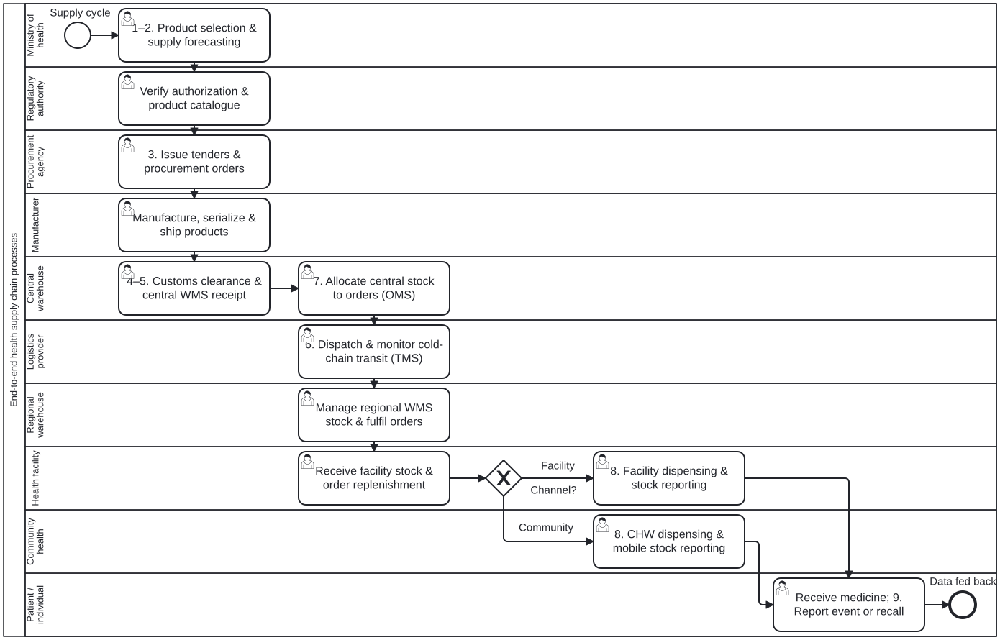</p>
<p><strong>Swimlanes (one lane per role):</strong></p>
<ul>
<li><code>Lane_BP02_MOH</code> — <strong>Ministry of health (MOH)</strong> (<code>pers:ministry-of-health</code>)</li>
<li><code>Lane_BP02_Regulatory</code> — <strong>National regulatory authority</strong> (<code>pers:regulatory-authority</code>)</li>
<li><code>Lane_BP02_Procurer</code> — <strong>Procurer (national or partner procurement agency)</strong> (<code>pers:procurer</code>)</li>
<li><code>Lane_BP02_Manufacturer</code> — <strong>Manufacturer and distributor</strong> (<code>pers:manufacturer-distributor</code>)</li>
<li><code>Lane_BP02_CentralWarehouse</code> — <strong>Central warehouse (central medical store)</strong> (<code>pers:central-warehouse</code>)</li>
<li><code>Lane_BP02_LogisticsProvider</code> — <strong>Logistics provider (transportation and cold chain)</strong> (<code>pers:logistics-provider</code>)</li>
<li><code>Lane_BP02_RegionalWarehouse</code> — <strong>Regional and district warehouse (branch warehouse)</strong> (<code>pers:regional-district-warehouse</code>)</li>
<li><code>Lane_BP02_HealthFacility</code> — <strong>Health facility (service delivery point)</strong> (<code>pers:health-facility</code>)</li>
<li><code>Lane_BP02_CHW</code> — <strong>Community health worker</strong> (<code>pers:community-health-worker</code>)</li>
<li><code>Lane_BP02_Individual</code> — <strong>Individual (health service user / patient)</strong> (<code>pers:health-service-user</code>)</li>
</ul>
<div class="table-wrapper"><table>
<thead>
<tr>
<th>Step ID</th>
<th>Lane (persona)</th>
<th>Activity</th>
<th>Linked blocks / decision table</th>
<th>Handbook basis</th>
</tr>
</thead>
<tbody>
<tr>
<td><code>Task_BP02_01</code></td>
<td><code>pers:ministry-of-health</code></td>
<td>1. Product selection &#x26; 2. Forecasting and supply planning (Forecasting &#x26; Supply Planning System)</td>
<td><code>prose:introduction-page-011</code>, <code>fig:ch02-fig-14</code>, <code>tbl:annex-5</code></td>
<td>Introduction Figs. 1–3 (PDF pp. 11–12), Ch 2 Fig. 14 (PDF p. 34), Ch 2 Fig. 20 (PDF p. 41), Annex 5 (PDF p. 70)</td>
</tr>
<tr>
<td><code>Task_BP02_02</code></td>
<td><code>pers:regulatory-authority</code></td>
<td>Verify marketing authorization and publish product master data in National Product Catalogue (Product Registry)</td>
<td><code>prose:introduction-page-012</code>, <code>fig:ch02-fig-14</code>, <code>tbl:annex-5</code></td>
<td>Introduction Figs. 1–3 (PDF pp. 11–12), Ch 2 Fig. 14 (PDF p. 34), Ch 2 Fig. 20 (PDF p. 41), Annex 5 (PDF p. 70)</td>
</tr>
<tr>
<td><code>Task_BP02_03</code></td>
<td><code>pers:procurer</code></td>
<td>3. Procurement &#x26; supplier/contract management: issue tenders and purchase orders (Procurement &#x26; Supplier Systems)</td>
<td><code>prose:introduction-page-011</code>, <code>fig:ch02-fig-14</code>, <code>tbl:annex-4</code></td>
<td>Introduction Figs. 1–3 (PDF pp. 11–12), Ch 2 Fig. 14 (PDF p. 34), Ch 2 Fig. 20 (PDF p. 41), Annex 5 (PDF p. 70)</td>
</tr>
<tr>
<td><code>Task_BP02_04</code></td>
<td><code>pers:manufacturer-distributor</code></td>
<td>Manufacture, label/serialize products and transmit advance shipping notice (Manufacturer Systems)</td>
<td><code>prose:introduction-page-011</code>, <code>prose:ch04-page-056</code></td>
<td>Introduction Figs. 1–3 (PDF pp. 11–12), Ch 2 Fig. 14 (PDF p. 34), Ch 2 Fig. 20 (PDF p. 41), Annex 5 (PDF p. 70)</td>
</tr>
<tr>
<td><code>Task_BP02_05</code></td>
<td><code>pers:central-warehouse</code></td>
<td>4. Port/customs clearance &#x26; 5. Warehousing and inventory receipt at central store (WMS / ERP)</td>
<td><code>prose:introduction-page-011</code>, <code>fig:ch02-fig-14</code>, <code>tbl:annex-5</code></td>
<td>Introduction Figs. 1–3 (PDF pp. 11–12), Ch 2 Fig. 14 (PDF p. 34), Ch 2 Fig. 20 (PDF p. 41), Annex 5 (PDF p. 70)</td>
</tr>
<tr>
<td><code>Task_BP02_06</code></td>
<td><code>pers:central-warehouse</code></td>
<td>7. Requisition &#x26; order management: allocate national stock against subnational/facility orders (OMS)</td>
<td><code>prose:introduction-page-011</code>, <code>fig:ch02-fig-14</code>, <code>tbl:annex-5</code></td>
<td>Introduction Figs. 1–3 (PDF pp. 11–12), Ch 2 Fig. 14 (PDF p. 34), Ch 2 Fig. 20 (PDF p. 41), Annex 5 (PDF p. 70)</td>
</tr>
<tr>
<td><code>Task_BP02_07</code></td>
<td><code>pers:logistics-provider</code></td>
<td>6. Transportation &#x26; cold chain management: dispatch and monitor shipment in transit (TMS / Cold Chain System)</td>
<td><code>prose:introduction-page-011</code>, <code>fig:ch02-fig-14</code></td>
<td>Introduction Figs. 1–3 (PDF pp. 11–12), Ch 2 Fig. 14 (PDF p. 34), Ch 2 Fig. 20 (PDF p. 41), Annex 5 (PDF p. 70)</td>
</tr>
<tr>
<td><code>Task_BP02_08</code></td>
<td><code>pers:regional-district-warehouse</code></td>
<td>Receive consignment, manage branch warehouse inventory &#x26; fulfil facility requisitions (WMS / OMS)</td>
<td><code>prose:introduction-page-011</code>, <code>fig:ch02-fig-18</code>, <code>fig:ch02-fig-19</code>, <code>tbl:annex-5</code></td>
<td>Introduction Figs. 1–3 (PDF pp. 11–12), Ch 2 Fig. 14 (PDF p. 34), Ch 2 Fig. 20 (PDF p. 41), Annex 5 (PDF p. 70)</td>
</tr>
<tr>
<td><code>Task_BP02_09</code></td>
<td><code>pers:health-facility</code></td>
<td>Receive stock at service delivery point, manage inventory &#x26; submit replenishment orders (HFLMS / OMS)</td>
<td><code>prose:introduction-page-011</code>, <code>fig:ch02-fig-18</code>, <code>tbl:annex-4</code>, <code>tbl:annex-5</code></td>
<td>Introduction Figs. 1–3 (PDF pp. 11–12), Ch 2 Fig. 14 (PDF p. 34), Ch 2 Fig. 20 (PDF p. 41), Annex 5 (PDF p. 70)</td>
</tr>
<tr>
<td><code>Task_BP02_10</code></td>
<td><code>pers:health-facility</code></td>
<td>8. Dispensing at facility and recording consumption &#x26; stock-on-hand data (Dispensing System)</td>
<td><code>prose:introduction-page-011</code>, <code>fig:ch02-fig-14</code>, <code>tbl:annex-5</code></td>
<td>Introduction Figs. 1–3 (PDF pp. 11–12), Ch 2 Fig. 14 (PDF p. 34), Ch 2 Fig. 20 (PDF p. 41), Annex 5 (PDF p. 70)</td>
</tr>
<tr>
<td><code>Task_BP02_11</code></td>
<td><code>pers:community-health-worker</code></td>
<td>8. Last-mile community dispensing &#x26; mobile stock/consumption reporting (CHW mobile tool)</td>
<td><code>prose:introduction-page-011</code>, <code>tbl:annex-5</code></td>
<td>Introduction Figs. 1–3 (PDF pp. 11–12), Ch 2 Fig. 14 (PDF p. 34), Ch 2 Fig. 20 (PDF p. 41), Annex 5 (PDF p. 70)</td>
</tr>
<tr>
<td><code>Task_BP02_12</code></td>
<td><code>pers:health-service-user</code></td>
<td>Receive dispensed medicine/vaccine; 9. Report adverse event or return/recall product if alerted</td>
<td><code>prose:introduction-page-011</code>, <code>prose:ch04-page-055</code>, <code>tbl:annex-5</code></td>
<td>Introduction Figs. 1–3 (PDF pp. 11–12), Ch 2 Fig. 14 (PDF p. 34), Ch 2 Fig. 20 (PDF p. 41), Annex 5 (PDF p. 70)</td>
</tr>
</tbody>
</table></div>
<p><a id="sec:introduction-digital-health-and-the-dhsc"></a></p>
<h3 id="h-sec:introduction-digital-health-and-the-dhsc">
  
  
    <a href="#h-sec:introduction-digital-health-and-the-dhsc" class="anchor-heading" aria-labelledby="h-sec:introduction-digital-health-and-the-dhsc"><svg viewBox="0 0 16 16" aria-hidden="true"><use xlink:href="#svg-link"></use></svg></a> Digital health and the DHSC
  
  
</h3>
    
<p><a id="prose:introduction-page-012"></a><span class="block-actions" data-block="prose:introduction-page-012"><a class="ba-edit" href="https://github.com/litlfred/dth-sc/edit/main/folio/dth-sc/introduction/p-introduction-page-012.md" title="Edit this block's source on GitHub (folio/dth-sc/introduction/p-introduction-page-012.md)">✎ edit</a><a class="ba-feedback" href="https://github.com/litlfred/dth-sc/issues/new?title=Feedback+%5Bdth-sc%5D%3A+Digital+health+and+the+DHSC+%E2%80%94+prose%3Aintroduction-page-012&amp;body=**Content%3A**+%60dth-sc%60%0A**Block%3A**+%60prose%3Aintroduction-page-012%60%0A**Section%3A**+Digital+health+and+the+DHSC%0A**Source%3A**+https%3A%2F%2Fgithub.com%2Flitlfred%2Fdth-sc%2Fblob%2Fmain%2Ffolio%2Fdth-sc%2Fintroduction%2Fp-introduction-page-012.md%0A%0A**Type%3A**+general+%7C+technical+%7C+editorial%0A%0A**Comment%3A**%0A%0A%0A**Proposed+change%3A**%0A" title="Give feedback on this block (opens a GitHub issue)">📣 feedback</a></span>
Vital information such as order details, shipping details and inventory data must be exchanged among partners in the supply chain to enable seamless movement of health products. Fig. 2 depicts the flow of information across supply chain processes to support the streamlined delivery of health products. As supply chains become increasingly complex, involving diverse global and local partners overseeing distinct processes, comprehensive digital transformation becomes essential. Supply chain processes that rely on manual data entry and siloed systems pose numerous challenges that hinder efficiency and effectiveness.</p>
<ul>
<li>Manual processes for inventory management, ordering and distribution are prone to errors, leading to stockouts and/or overstocking of essential medical supplies. Stockouts, in turn, affect individuals’ access to health services.</li>
<li>Lack of real-time visibility into inventory levels and demand patterns makes it difficult to anticipate and respond promptly to changing health care needs, particularly during emergencies or outbreaks.</li>
<li>Manual recordkeeping increases administrative burdens and can result in delays in tracking product recalls or expiration dates, risking patient safety.</li>
<li>Collaboration among stakeholders such as health care providers, purchasers, manufacturers and distributors is limited, hindering coordination and exacerbating supply chain inefficiencies. Overall, the absence of a holistic digital ecosystem to manage the health supply chain undermines resilience, agility and the ability to deliver critical health care services to communities. Fig 2. Information flow across supply chain processes Fig. Digital health and the <a href="../folio-assistant-core/glossary/instance/dth-sc/#dth-sc--dth-sc--digital-health-supply-chain" title="The knowledge and practice of adopting digital technologies to improve health supply chains and enable the delivery of quality-assured health products to individuals when and where they need them." class="fa-term">DHSC</a> Within WHO’s Global Strategy on <a href="../folio-assistant-core/glossary/instance/dpi-h-ra/#dpi-h-ra--dpi-h-ra--digital-health" title="The systematic application of information and communications technologies, computer science, and data to support informed decision-making by individuals, the health workforce, and health systems, to strengthen resilience to disease and improve health and wellness." class="fa-term">Digital Health</a> 2020–2025 (15), digital health refers to “the field of knowledge and practice associated with the development and use of digital technologies to improve health.” Digital health supply chain refers to the knowledge and practice of adopting digital technologies to improve health supply chains and enable the delivery of quality-assured health products to individuals when and where they need them (Fig. 3).1 Digital technologies improve supply chain efficiency by automating otherwise manual tasks in areas such as planning, procurement, order processing and management, warehouse management, inventory allocation and route optimization. This automation reduces errors, streamlines processes and frees up staff time for more strategic tasks. It empowers individuals and health care organizations by providing timely data and the ability to swiftly adapt to evolving changes in the supply chain. It facilitates collaborative processes and interoperability across systems – including supply chain, health management and regulatory processes. It also provides real-time visibility into inventory levels, shipment statuses and actual consumption, enabling improved decision-making and responsiveness to changes in demand or supply. FORECASTING AND PLANNING SOURCING AND CONTRACT MANAGEMENT ORDER MANAGEMENT PROCUREMENT DISPENSING TRANSPORTATION WAREHOUSE MANAGEMENT 1 DHSC interventions for health management and support personnel are described in WHO’s corresponding document Classification of Digital Interventions, Services and Applications in Health at <a href="https://www.who.int/publications/i/item/9789240081949">https://www.who.int/publications/i/item/9789240081949</a>, specifically “3.2: Supply chain management.”</li>
</ul>
<p><a id="fig:2"></a><span class="block-actions" data-block="fig:2"><a class="ba-edit" href="https://github.com/litlfred/dth-sc/edit/main/folio/dth-sc/introduction/f-introduction-fig-2.md" title="Edit this block's source on GitHub (folio/dth-sc/introduction/f-introduction-fig-2.md)">✎ edit</a><a class="ba-feedback" href="https://github.com/litlfred/dth-sc/issues/new?title=Feedback+%5Bdth-sc%5D%3A+Digital+health+and+the+DHSC+%E2%80%94+fig%3A2&amp;body=**Content%3A**+%60dth-sc%60%0A**Block%3A**+%60fig%3A2%60%0A**Section%3A**+Digital+health+and+the+DHSC%0A**Source%3A**+https%3A%2F%2Fgithub.com%2Flitlfred%2Fdth-sc%2Fblob%2Fmain%2Ffolio%2Fdth-sc%2Fintroduction%2Ff-introduction-fig-2.md%0A%0A**Type%3A**+general+%7C+technical+%7C+editorial%0A%0A**Comment%3A**%0A%0A%0A**Proposed+change%3A**%0A" title="Give feedback on this block (opens a GitHub issue)">📣 feedback</a></span>
<strong>Figure 2.</strong> <a href="#fig:2" class="block-anchor" aria-label="Link to Figure 2" title="Link to Figure 2"><svg viewBox="0 0 16 16" width="14" height="14" fill="currentColor" aria-hidden="true"><use xlink:href="#svg-link"></use></svg></a></p>
<p>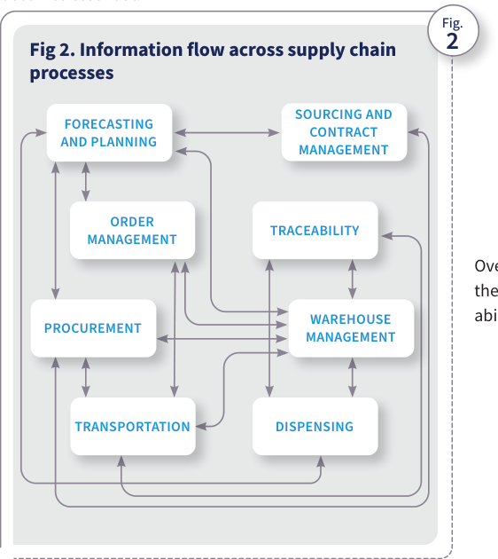</p>
<p><em>Source: WHO, Digital transformation handbook for health supply chain architecture, 2024, PDF page 12; rendered from the PDF's vector layer in the L1 entry.</em></p>
<p><em>Information flow across supply chain processes</em></p>
<p><a id="sec:introduction-what-this-handbook-covers"></a></p>
<h3 id="h-sec:introduction-what-this-handbook-covers">
  
  
    <a href="#h-sec:introduction-what-this-handbook-covers" class="anchor-heading" aria-labelledby="h-sec:introduction-what-this-handbook-covers"><svg viewBox="0 0 16 16" aria-hidden="true"><use xlink:href="#svg-link"></use></svg></a> What this handbook covers
  
  
</h3>
    
<p><a id="prose:introduction-page-013"></a><span class="block-actions" data-block="prose:introduction-page-013"><a class="ba-edit" href="https://github.com/litlfred/dth-sc/edit/main/folio/dth-sc/introduction/p-introduction-page-013.md" title="Edit this block's source on GitHub (folio/dth-sc/introduction/p-introduction-page-013.md)">✎ edit</a><a class="ba-feedback" href="https://github.com/litlfred/dth-sc/issues/new?title=Feedback+%5Bdth-sc%5D%3A+What+this+handbook+covers+%E2%80%94+prose%3Aintroduction-page-013&amp;body=**Content%3A**+%60dth-sc%60%0A**Block%3A**+%60prose%3Aintroduction-page-013%60%0A**Section%3A**+What+this+handbook+covers%0A**Source%3A**+https%3A%2F%2Fgithub.com%2Flitlfred%2Fdth-sc%2Fblob%2Fmain%2Ffolio%2Fdth-sc%2Fintroduction%2Fp-introduction-page-013.md%0A%0A**Type%3A**+general+%7C+technical+%7C+editorial%0A%0A**Comment%3A**%0A%0A%0A**Proposed+change%3A**%0A" title="Give feedback on this block (opens a GitHub issue)">📣 feedback</a></span>
What this handbook covers Several low- and middle-income countries have undertaken initiatives to digitalize their health supply chain, but until now, no comprehensive and holistic approach has been available to guide them in implementing this transformation. This handbook offers that guidance to countries and helps them formulate a strategy and plan a multistep, holistic implementation of scalable and sustainable components of a <a href="../folio-assistant-core/glossary/instance/dth-sc/#dth-sc--dth-sc--digital-health-supply-chain" title="The knowledge and practice of adopting digital technologies to improve health supply chains and enable the delivery of quality-assured health products to individuals when and where they need them." class="fa-term">DHSC</a> architecture, including approaches they can adapt to their specific context. It does not delve into the intricacies of supply chain processes or the specific functional specifications of various health supply chain information systems (<a href="../folio-assistant-core/glossary/instance/dth-sc/#dth-sc--dth-sc--health-supply-chain-information-system" title="A paper-based or software tool that supports the management and/or operations of the health supply chain." class="fa-term">HSCISs</a>), but it points to some helpful resources on those topics. This handbook assumes that the country has conducted supply chain process and maturity assessments and has adopted an appropriate supply chain design. Improvements to supply chain performance or design are prerequisites to proceeding with the steps delineated in this handbook. This handbook can be a useful resource in the following scenarios:</p>
<ul>
<li>when defining and implementing a digital transformation strategy and architecture for the health supply chain that aligns with the national health supply chain strategy and other relevant strategies;</li>
<li>when seeking to upgrade or make interoperable existing DHSC solutions in a holistic manner;</li>
<li>when seeking to enhance health supply chain data availability to support timely monitoring of supply chain exceptions such as inventory shortages and product expiries or diversions;</li>
<li>when seeking to coordinate health supply chain digital transformation initiatives that are duplicative and burdensome to operational staff and health care workers (for example, when different implementation teams or organizations deploy supply chain systems such as logistics management information systems and facility inventory management systems that have overlapping functions, requiring staff to enter the same data in multiple systems); and</li>
<li>when paper-based systems are being replaced with enhanced technology, including subnational systems that were not included in a previous digital system implementation. Fig 3. Digital health supply chain Fig. Ministry of health DIGITAL ECOSYSTEM TRANSACTIONAL SYSTEMS ADVANCED DIGITIZATION COLLABORATIVE PROCESSES DATA AND ANALYTICS END-TO-END VISIBILITY Central warehouse Private sector Regional warehouses Manufacturers/ distributors Community health Procurers Health facilities Logistics providers Regulators Individuals Introduction</li>
</ul>
<p><a id="fig:3"></a><span class="block-actions" data-block="fig:3"><a class="ba-edit" href="https://github.com/litlfred/dth-sc/edit/main/folio/dth-sc/introduction/f-introduction-fig-3.md" title="Edit this block's source on GitHub (folio/dth-sc/introduction/f-introduction-fig-3.md)">✎ edit</a><a class="ba-feedback" href="https://github.com/litlfred/dth-sc/issues/new?title=Feedback+%5Bdth-sc%5D%3A+What+this+handbook+covers+%E2%80%94+fig%3A3&amp;body=**Content%3A**+%60dth-sc%60%0A**Block%3A**+%60fig%3A3%60%0A**Section%3A**+What+this+handbook+covers%0A**Source%3A**+https%3A%2F%2Fgithub.com%2Flitlfred%2Fdth-sc%2Fblob%2Fmain%2Ffolio%2Fdth-sc%2Fintroduction%2Ff-introduction-fig-3.md%0A%0A**Type%3A**+general+%7C+technical+%7C+editorial%0A%0A**Comment%3A**%0A%0A%0A**Proposed+change%3A**%0A" title="Give feedback on this block (opens a GitHub issue)">📣 feedback</a></span>
<strong>Figure 3.</strong> <a href="#fig:3" class="block-anchor" aria-label="Link to Figure 3" title="Link to Figure 3"><svg viewBox="0 0 16 16" width="14" height="14" fill="currentColor" aria-hidden="true"><use xlink:href="#svg-link"></use></svg></a></p>
<p>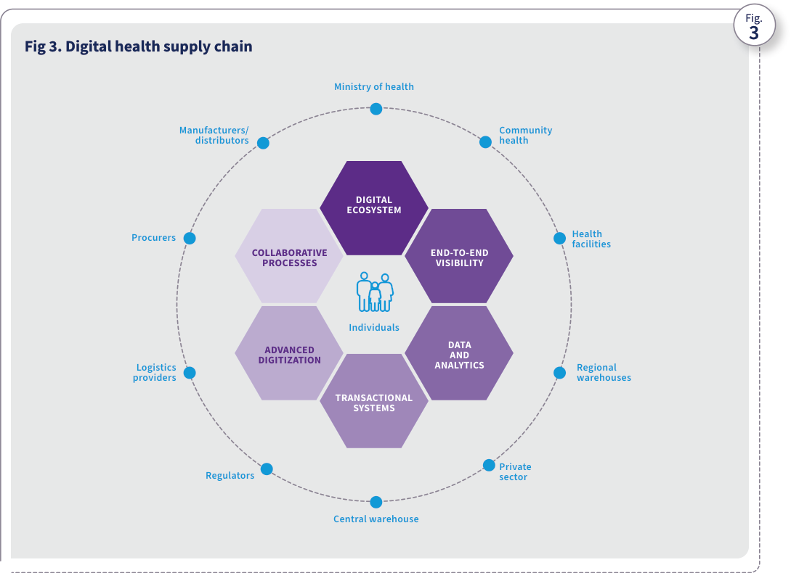</p>
<p><em>Source: WHO, Digital transformation handbook for health supply chain architecture, 2024, PDF page 13; rendered from the PDF's vector layer in the L1 entry.</em></p>
<p><em>Digital health supply chain</em></p>
<p><a id="sec:introduction-how-to-use-this-handbook"></a></p>
<h3 id="h-sec:introduction-how-to-use-this-handbook">
  
  
    <a href="#h-sec:introduction-how-to-use-this-handbook" class="anchor-heading" aria-labelledby="h-sec:introduction-how-to-use-this-handbook"><svg viewBox="0 0 16 16" aria-hidden="true"><use xlink:href="#svg-link"></use></svg></a> How to use this handbook
  
  
</h3>
    
<p><a id="prose:introduction-page-014"></a><span class="block-actions" data-block="prose:introduction-page-014"><a class="ba-edit" href="https://github.com/litlfred/dth-sc/edit/main/folio/dth-sc/introduction/p-introduction-page-014.md" title="Edit this block's source on GitHub (folio/dth-sc/introduction/p-introduction-page-014.md)">✎ edit</a><a class="ba-feedback" href="https://github.com/litlfred/dth-sc/issues/new?title=Feedback+%5Bdth-sc%5D%3A+How+to+use+this+handbook+%E2%80%94+prose%3Aintroduction-page-014&amp;body=**Content%3A**+%60dth-sc%60%0A**Block%3A**+%60prose%3Aintroduction-page-014%60%0A**Section%3A**+How+to+use+this+handbook%0A**Source%3A**+https%3A%2F%2Fgithub.com%2Flitlfred%2Fdth-sc%2Fblob%2Fmain%2Ffolio%2Fdth-sc%2Fintroduction%2Fp-introduction-page-014.md%0A%0A**Type%3A**+general+%7C+technical+%7C+editorial%0A%0A**Comment%3A**%0A%0A%0A**Proposed+change%3A**%0A" title="Give feedback on this block (opens a GitHub issue)">📣 feedback</a></span>
How to use this handbook This handbook provides a stepwise approach to digitalizing the health supply chain, as depicted in Fig. 4.</p>
<ul>
<li>Chapter 1 provides guidance on defining a holistic vision, strategic goals and objectives for a <a href="../folio-assistant-core/glossary/instance/dth-sc/#dth-sc--dth-sc--digital-health-supply-chain" title="The knowledge and practice of adopting digital technologies to improve health supply chains and enable the delivery of quality-assured health products to individuals when and where they need them." class="fa-term">DHSC</a> that aligns with the country’s strategic priorities for information technology (IT) and digital health.</li>
<li>Chapter 2 outlines approaches to defining the DHSC architecture, which will serve as the blueprint for the various supply chain system interventions.</li>
<li>Chapter 3 offers guidance on implementing the DHSC in a sustainable and scalable manner, taking into account human resource and financial factors.</li>
<li>Chapter 4 explores how the DHSC can support pharmaceutical traceability to enhance patient safety.</li>
<li>Chapter 5 presents examples from countries at various stages of implementing a DHSC, to illustrate some of the concepts presented in the preceding chapters. BEFORE USING THIS HANDBOOK Familiarity with resources such as the Digital Implementation Investment Guide (DIIG) (1), the Supply Chain Information System Maturity Model (SCISMM) (16), the OpenHIE framework (17) and The Open Group Architecture Framework (TOGAF®) (18) is highly recommended before using this handbook. 1. Defining a holistic DHSC strategy 2. Defining the DHSC architecture 3. Planning for scalable implementation and sustainable operations 4. Using the DHSC to implement traceability Identify and engage stakeholders Analyse the current state of <a href="../folio-assistant-core/glossary/instance/dth-sc/#dth-sc--dth-sc--health-supply-chain-information-system" title="A paper-based or software tool that supports the management and/or operations of the health supply chain." class="fa-term">HSCISs</a> Define the vision and strategic goals Define a strategic roadmap and performance indicators Plan the implementation of each intervention Develop an operational plan for each intervention Develop a budget for each intervention Implement each intervention Assess the current state of HSCISs Define a target architecture Identify implementation activities and map them to strategic goals steps steps steps Fig 4. The stepwise approach used in this handbook Fig.</li>
</ul>
<p><a id="fig:4"></a><span class="block-actions" data-block="fig:4"><a class="ba-edit" href="https://github.com/litlfred/dth-sc/edit/main/folio/dth-sc/introduction/f-introduction-fig-4.md" title="Edit this block's source on GitHub (folio/dth-sc/introduction/f-introduction-fig-4.md)">✎ edit</a><a class="ba-feedback" href="https://github.com/litlfred/dth-sc/issues/new?title=Feedback+%5Bdth-sc%5D%3A+How+to+use+this+handbook+%E2%80%94+fig%3A4&amp;body=**Content%3A**+%60dth-sc%60%0A**Block%3A**+%60fig%3A4%60%0A**Section%3A**+How+to+use+this+handbook%0A**Source%3A**+https%3A%2F%2Fgithub.com%2Flitlfred%2Fdth-sc%2Fblob%2Fmain%2Ffolio%2Fdth-sc%2Fintroduction%2Ff-introduction-fig-4.md%0A%0A**Type%3A**+general+%7C+technical+%7C+editorial%0A%0A**Comment%3A**%0A%0A%0A**Proposed+change%3A**%0A" title="Give feedback on this block (opens a GitHub issue)">📣 feedback</a></span>
<strong>Figure 4.</strong> <a href="#fig:4" class="block-anchor" aria-label="Link to Figure 4" title="Link to Figure 4"><svg viewBox="0 0 16 16" width="14" height="14" fill="currentColor" aria-hidden="true"><use xlink:href="#svg-link"></use></svg></a></p>
<p>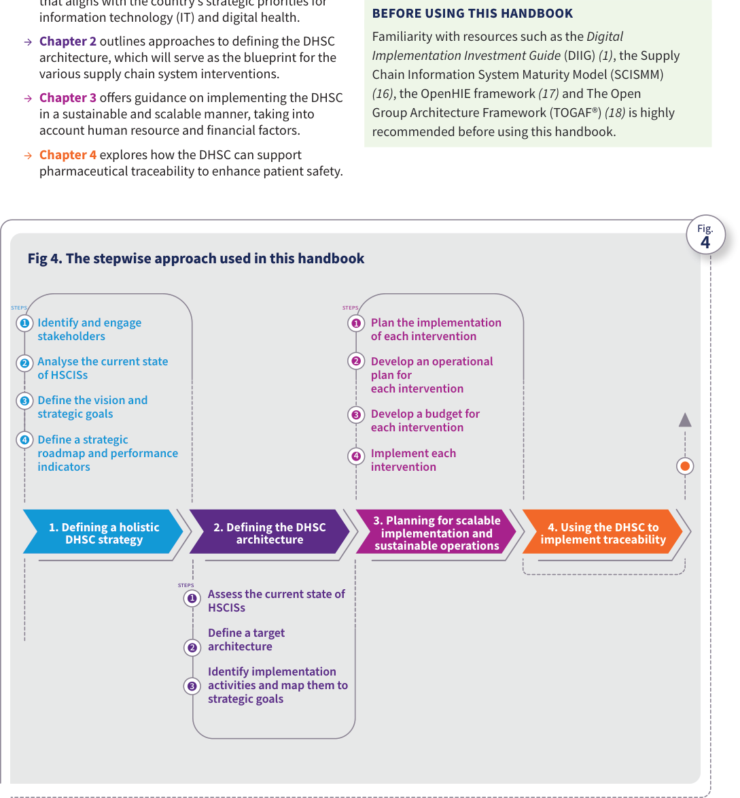</p>
<p><em>Source: WHO, Digital transformation handbook for health supply chain architecture, 2024, PDF page 14; rendered from the PDF's vector layer in the L1 entry.</em></p>
<p><em>The stepwise approach used in this handbook</em></p>
<p><a id="bp:sc-bp-01-stepwise-dhsc-transformation"></a><span class="block-actions" data-block="bp:sc-bp-01-stepwise-dhsc-transformation"><a class="ba-edit" href="https://github.com/litlfred/dth-sc/edit/main/folio/dth-sc/introduction/bp-sc-bp-01-stepwise-dhsc-transformation.md" title="Edit this block's source on GitHub (folio/dth-sc/introduction/bp-sc-bp-01-stepwise-dhsc-transformation.md)">✎ edit</a><a class="ba-feedback" href="https://github.com/litlfred/dth-sc/issues/new?title=Feedback+%5Bdth-sc%5D%3A+How+to+use+this+handbook+%E2%80%94+bp%3Asc-bp-01-stepwise-dhsc-transformation&amp;body=**Content%3A**+%60dth-sc%60%0A**Block%3A**+%60bp%3Asc-bp-01-stepwise-dhsc-transformation%60%0A**Section%3A**+How+to+use+this+handbook%0A**Source%3A**+https%3A%2F%2Fgithub.com%2Flitlfred%2Fdth-sc%2Fblob%2Fmain%2Ffolio%2Fdth-sc%2Fintroduction%2Fbp-sc-bp-01-stepwise-dhsc-transformation.md%0A%0A**Type%3A**+general+%7C+technical+%7C+editorial%0A%0A**Comment%3A**%0A%0A%0A**Proposed+change%3A**%0A" title="Give feedback on this block (opens a GitHub issue)">📣 feedback</a></span>
<strong>Business-process.</strong> <em>Stepwise DHSC strategy, architecture and implementation transformation method (SC-BP-01)</em></p>
<p>Formalizes the handbook's stepwise method (Introduction Fig. 4 and Table 1) across Chapter 1 (Defining a holistic DHSC strategy, Steps 1–4), Chapter 2 (Defining the DHSC architecture, Steps 1–3), and Chapter 3 (Planning for scalable implementation and sustainable operations, Steps 1–4), binding each step to the governance and implementation roles defined in Table 1, Annex 2, and Annex 7.</p>
<p>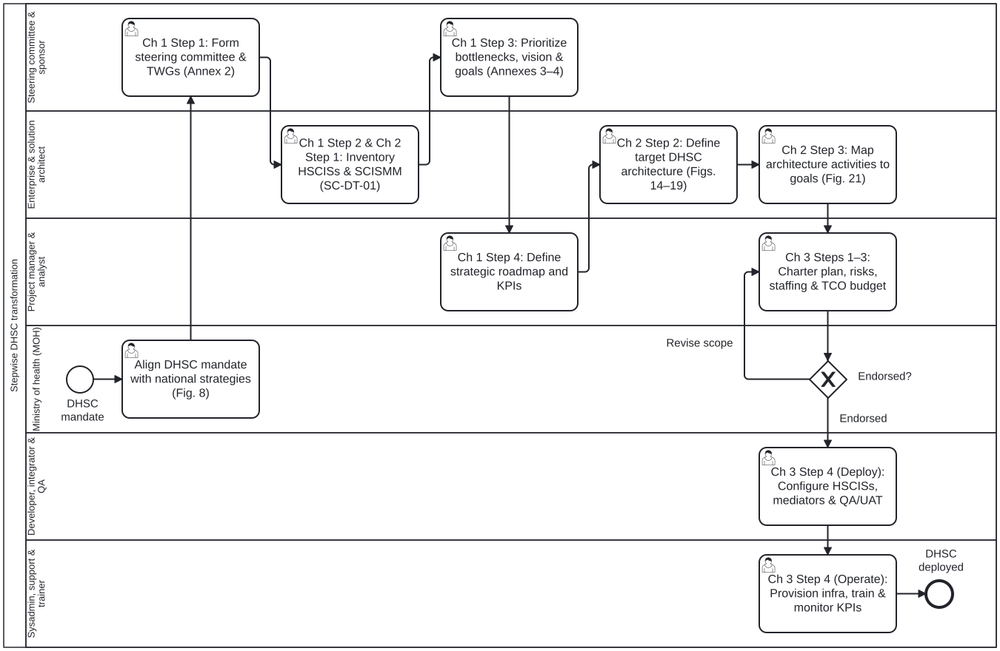</p>
<p><strong>Swimlanes (one lane per role):</strong></p>
<ul>
<li><code>Lane_BP01_MOH</code> — <strong>Ministry of health (MOH)</strong> (<code>pers:ministry-of-health</code>)</li>
<li><code>Lane_BP01_SteeringSponsor</code> — <strong>DHSC steering committee, chief digital officer and project sponsor</strong> (<code>pers:steering-committee-sponsor</code>)</li>
<li><code>Lane_BP01_Architect</code> — <strong>Enterprise and solution architect</strong> (<code>pers:solution-architect</code>)</li>
<li><code>Lane_BP01_ProjectManagerBA</code> — <strong>Project manager, IT manager and business analyst</strong> (<code>pers:project-manager-ba</code>)</li>
<li><code>Lane_BP01_DevIntegrator</code> — <strong>Developer, integration specialist and QA/test team</strong> (<code>pers:developer-integrator</code>)</li>
<li><code>Lane_BP01_SysAdminSupport</code> — <strong>System administrator, database/infrastructure specialist, support engineer and trainer</strong> (<code>pers:system-administrator-support</code>)</li>
</ul>
<div class="table-wrapper"><table>
<thead>
<tr>
<th>Step ID</th>
<th>Lane (persona)</th>
<th>Activity</th>
<th>Linked blocks / decision table</th>
<th>Handbook basis</th>
</tr>
</thead>
<tbody>
<tr>
<td><code>Task_BP01_01</code></td>
<td><code>pers:ministry-of-health</code></td>
<td>Align DHSC mandate with national health and digital health strategies (Fig. 8)</td>
<td><code>prose:ch01-page-019</code>, <code>prose:ch01-page-020</code></td>
<td>Introduction Fig. 4 (PDF p. 14), Table 1 (PDF p. 18), Ch 1 Steps 1–4 (PDF pp. 22–26), Ch 2 Steps 1–3 (PDF pp. 30–43), Ch 3 Steps 1–4 (PDF pp. 47–52), Annexes 2–7 (PDF pp. 67–76)</td>
</tr>
<tr>
<td><code>Task_BP01_02</code></td>
<td><code>pers:steering-committee-sponsor</code></td>
<td>Ch 1 Step 1: Engage stakeholders and form DHSC steering committee &#x26; TWGs (Annex 2)</td>
<td><code>prose:ch01-page-022</code>, <code>tbl:annex-2</code></td>
<td>Introduction Fig. 4 (PDF p. 14), Table 1 (PDF p. 18), Ch 1 Steps 1–4 (PDF pp. 22–26), Ch 2 Steps 1–3 (PDF pp. 30–43), Ch 3 Steps 1–4 (PDF pp. 47–52), Annexes 2–7 (PDF pp. 67–76)</td>
</tr>
<tr>
<td><code>Task_BP01_03</code></td>
<td><code>pers:solution-architect</code></td>
<td>Ch 1 Step 2 &#x26; Ch 2 Step 1: Inventory HSCISs (Annex 5) and assess SCISMM maturity (SC-DT-01)</td>
<td><code>prose:ch01-page-023</code>, <code>prose:ch02-page-030</code>, <code>tbl:annex-5</code>, <code>dt:sc-dt-01-scismm-architecture-selection</code></td>
<td>Introduction Fig. 4 (PDF p. 14), Table 1 (PDF p. 18), Ch 1 Steps 1–4 (PDF pp. 22–26), Ch 2 Steps 1–3 (PDF pp. 30–43), Ch 3 Steps 1–4 (PDF pp. 47–52), Annexes 2–7 (PDF pp. 67–76)</td>
</tr>
<tr>
<td><code>Task_BP01_04</code></td>
<td><code>pers:steering-committee-sponsor</code></td>
<td>Ch 1 Step 3: Prioritize bottlenecks (Annex 3) and define DHSC vision, goals &#x26; outcomes (Annex 4)</td>
<td><code>prose:ch01-page-024</code>, <code>tbl:annex-3</code>, <code>tbl:annex-4</code></td>
<td>Introduction Fig. 4 (PDF p. 14), Table 1 (PDF p. 18), Ch 1 Steps 1–4 (PDF pp. 22–26), Ch 2 Steps 1–3 (PDF pp. 30–43), Ch 3 Steps 1–4 (PDF pp. 47–52), Annexes 2–7 (PDF pp. 67–76)</td>
</tr>
<tr>
<td><code>Task_BP01_05</code></td>
<td><code>pers:project-manager-ba</code></td>
<td>Ch 1 Step 4: Define strategic roadmap and key performance indicators (KPIs)</td>
<td><code>prose:ch01-page-025</code>, <code>fig:ch01-fig-10</code></td>
<td>Introduction Fig. 4 (PDF p. 14), Table 1 (PDF p. 18), Ch 1 Steps 1–4 (PDF pp. 22–26), Ch 2 Steps 1–3 (PDF pp. 30–43), Ch 3 Steps 1–4 (PDF pp. 47–52), Annexes 2–7 (PDF pp. 67–76)</td>
</tr>
<tr>
<td><code>Task_BP01_06</code></td>
<td><code>pers:solution-architect</code></td>
<td>Ch 2 Step 2: Define target DHSC architecture and interoperability framework (Figs. 14–19, SC-DT-01)</td>
<td><code>prose:ch02-page-032</code>, <code>fig:ch02-fig-14</code>, <code>dt:sc-dt-01-scismm-architecture-selection</code></td>
<td>Introduction Fig. 4 (PDF p. 14), Table 1 (PDF p. 18), Ch 1 Steps 1–4 (PDF pp. 22–26), Ch 2 Steps 1–3 (PDF pp. 30–43), Ch 3 Steps 1–4 (PDF pp. 47–52), Annexes 2–7 (PDF pp. 67–76)</td>
</tr>
<tr>
<td><code>Task_BP01_07</code></td>
<td><code>pers:solution-architect</code></td>
<td>Ch 2 Step 3: Map architecture implementation activities to strategic goals (Fig. 21)</td>
<td><code>prose:ch02-page-042</code>, <code>fig:ch02-fig-21</code></td>
<td>Introduction Fig. 4 (PDF p. 14), Table 1 (PDF p. 18), Ch 1 Steps 1–4 (PDF pp. 22–26), Ch 2 Steps 1–3 (PDF pp. 30–43), Ch 3 Steps 1–4 (PDF pp. 47–52), Annexes 2–7 (PDF pp. 67–76)</td>
</tr>
<tr>
<td><code>Task_BP01_08</code></td>
<td><code>pers:project-manager-ba</code></td>
<td>Ch 3 Steps 1–3: Charter intervention, operational plan, risk register (Annex 6), staffing (Annex 7) &#x26; TCO budget (Table 3)</td>
<td><code>prose:ch03-page-047</code>, <code>prose:ch03-page-048</code>, <code>prose:ch03-page-049</code>, <code>tbl:2</code>, <code>tbl:3</code>, <code>tbl:annex-6</code>, <code>tbl:annex-7</code></td>
<td>Introduction Fig. 4 (PDF p. 14), Table 1 (PDF p. 18), Ch 1 Steps 1–4 (PDF pp. 22–26), Ch 2 Steps 1–3 (PDF pp. 30–43), Ch 3 Steps 1–4 (PDF pp. 47–52), Annexes 2–7 (PDF pp. 67–76)</td>
</tr>
<tr>
<td><code>Task_BP01_09</code></td>
<td><code>pers:developer-integrator</code></td>
<td>Ch 3 Step 4 (Deploy): Configure HSCISs, build interoperability mediators &#x26; execute QA/UAT testing</td>
<td><code>prose:ch03-page-051</code>, <code>tbl:annex-7</code></td>
<td>Introduction Fig. 4 (PDF p. 14), Table 1 (PDF p. 18), Ch 1 Steps 1–4 (PDF pp. 22–26), Ch 2 Steps 1–3 (PDF pp. 30–43), Ch 3 Steps 1–4 (PDF pp. 47–52), Annexes 2–7 (PDF pp. 67–76)</td>
</tr>
<tr>
<td><code>Task_BP01_10</code></td>
<td><code>pers:system-administrator-support</code></td>
<td>Ch 3 Step 4 (Operate): Provision infrastructure, train users, operate helpdesk &#x26; monitor KPIs</td>
<td><code>prose:ch03-page-052</code>, <code>tbl:annex-7</code></td>
<td>Introduction Fig. 4 (PDF p. 14), Table 1 (PDF p. 18), Ch 1 Steps 1–4 (PDF pp. 22–26), Ch 2 Steps 1–3 (PDF pp. 30–43), Ch 3 Steps 1–4 (PDF pp. 47–52), Annexes 2–7 (PDF pp. 67–76)</td>
</tr>
</tbody>
</table></div>
<p><a id="sec:introduction-alignment-with-the-diig"></a></p>
<h3 id="h-sec:introduction-alignment-with-the-diig">
  
  
    <a href="#h-sec:introduction-alignment-with-the-diig" class="anchor-heading" aria-labelledby="h-sec:introduction-alignment-with-the-diig"><svg viewBox="0 0 16 16" aria-hidden="true"><use xlink:href="#svg-link"></use></svg></a> Alignment with the DIIG
  
  
</h3>
    
<p><a id="prose:introduction-page-015"></a><span class="block-actions" data-block="prose:introduction-page-015"><a class="ba-edit" href="https://github.com/litlfred/dth-sc/edit/main/folio/dth-sc/introduction/p-introduction-page-015.md" title="Edit this block's source on GitHub (folio/dth-sc/introduction/p-introduction-page-015.md)">✎ edit</a><a class="ba-feedback" href="https://github.com/litlfred/dth-sc/issues/new?title=Feedback+%5Bdth-sc%5D%3A+Alignment+with+the+DIIG+%E2%80%94+prose%3Aintroduction-page-015&amp;body=**Content%3A**+%60dth-sc%60%0A**Block%3A**+%60prose%3Aintroduction-page-015%60%0A**Section%3A**+Alignment+with+the+DIIG%0A**Source%3A**+https%3A%2F%2Fgithub.com%2Flitlfred%2Fdth-sc%2Fblob%2Fmain%2Ffolio%2Fdth-sc%2Fintroduction%2Fp-introduction-page-015.md%0A%0A**Type%3A**+general+%7C+technical+%7C+editorial%0A%0A**Comment%3A**%0A%0A%0A**Proposed+change%3A**%0A" title="Give feedback on this block (opens a GitHub issue)">📣 feedback</a></span>
Fig 5. DIIG process for planning and implementing a digital health enterprise Fig. Alignment with the DIIG This handbook uses the framework and approaches set forth in the DIIG, which helps governments and technical partners plan a digital health implementation that focuses on one or more health programmes to support national health system goals. This handbook complements the DIIG by providing guidance on implementing a <a href="../folio-assistant-core/glossary/instance/dth-sc/#dth-sc--dth-sc--digital-health-supply-chain" title="The knowledge and practice of adopting digital technologies to improve health supply chains and enable the delivery of quality-assured health products to individuals when and where they need them." class="fa-term">DHSC</a> to ensure timely availability of quality-assured health products. Fig. 5 outlines the phases and steps involved in implementing a digital health enterprise and shows how this handbook complements other resources. ICT = information and communications technology ITU = International Telecommunication Union M&#x26;E = monitoring and evaluation SMART = Standards-based, Machine-readable, Adaptive, Requirements-based and Testable WHO core indicator sets Global digital health index WHO digital health atlas Digital health investment review tool HIS stages of continuous improvement + Conduct an inventory of existing or previously used software applications, ICT systems and other tools to better understand the requirements for reuse and interoperability + Develop a national digital health strategy outlining overarching needs, desired activities and outcomes + Define a vision for how the health system will be strengthened through the use of digital technology + Formulate a digital health investment roadmap to support the national digital health strategy + Plan and identify appropriate digital interventions, alongside the health and data content, to improve health system processes and address programmatic needs + Monitor implementation to ensure digital implementations are functioning as intended and having the desired effect + Foster data-driven adaptive change management within the overall health system + Identify validated health content appropriate for the implementation context + Ensure use of content aligned with identified standards for the future state + Maintain and sustain digital health implementations + Identify risks and appropriate mitigations ASSESSING THE CURRENT STATE AND ENABLING ENVIRONMENT PHASE DEFINING THE FUTURE STATE PHASE M&#x26;E OF DIGITAL HEALTH IMPLEMENTATIONS AND FOSTERING DATA USE PHASE DETERMINING HEALTH CONTENT REQUIREMENTS PHASE ESTABLISHING A SHARED UNDERSTANDING AND STRATEGIC PLANNING PHASE IMPLEMENTING, MAINTAINING AND SCALING PHASE PLANNING THE ENTERPRISE PHASE WHO–ITU national eHealth strategy toolkit WHO handbook for health supply chain archi- tecture (this document) WHO classification of digital health interventions WHO guideline: recommendations on digital interventions for health system strengthening ITU digital health platform handbook UNICEF human- centred design toolkit World Bank digital identity toolkit WHO digital clearing- house Digital implementation investment guide Asian Development Bank total cost of ownership tool WHO handbook for health supply chain architecture (this document) WHO MAPS toolkit: mHealth assessment and planning for scale WHO hand- book for digitalizing primary health care Be He@lthy, Be Mobile handbooks for non- communicable diseases PATH Defining and building a data use culture MEASURE data demand and use of resources WHO SCORE WHO M&#x26;E digital health interventions ITU SDG digital investment framework (eGov) Open <a href="../folio-assistant-core/glossary/instance/dpi-h-ra/#dpi-h-ra--dpi-h-ra--health-information-exchange" class="fa-term">Health Information Exchange</a> (OpenHIE) PDF for print Online environment The Open Group Architecture Framework (TOGAF) Guidance for investing in digital health Digital Square global goods guidebook Principles for donor alignment Principles for digital development Machine- readable recommen- dations Digital adaptation kits WHO SMART guidelines STEPS Source: adapted from the 2020 WHO Digital Implementation Investment Guide (1). + Review the current state and develop an architecture blueprint for the design of the digital health implementations + Identify validated open standards to ensure data exchange, systems integration and future-proofing of digital health implementations Introduction</p>
<p><a id="fig:5"></a><span class="block-actions" data-block="fig:5"><a class="ba-edit" href="https://github.com/litlfred/dth-sc/edit/main/folio/dth-sc/introduction/f-introduction-fig-5.md" title="Edit this block's source on GitHub (folio/dth-sc/introduction/f-introduction-fig-5.md)">✎ edit</a><a class="ba-feedback" href="https://github.com/litlfred/dth-sc/issues/new?title=Feedback+%5Bdth-sc%5D%3A+Alignment+with+the+DIIG+%E2%80%94+fig%3A5&amp;body=**Content%3A**+%60dth-sc%60%0A**Block%3A**+%60fig%3A5%60%0A**Section%3A**+Alignment+with+the+DIIG%0A**Source%3A**+https%3A%2F%2Fgithub.com%2Flitlfred%2Fdth-sc%2Fblob%2Fmain%2Ffolio%2Fdth-sc%2Fintroduction%2Ff-introduction-fig-5.md%0A%0A**Type%3A**+general+%7C+technical+%7C+editorial%0A%0A**Comment%3A**%0A%0A%0A**Proposed+change%3A**%0A" title="Give feedback on this block (opens a GitHub issue)">📣 feedback</a></span>
<strong>Figure 5.</strong> <a href="#fig:5" class="block-anchor" aria-label="Link to Figure 5" title="Link to Figure 5"><svg viewBox="0 0 16 16" width="14" height="14" fill="currentColor" aria-hidden="true"><use xlink:href="#svg-link"></use></svg></a></p>
<p>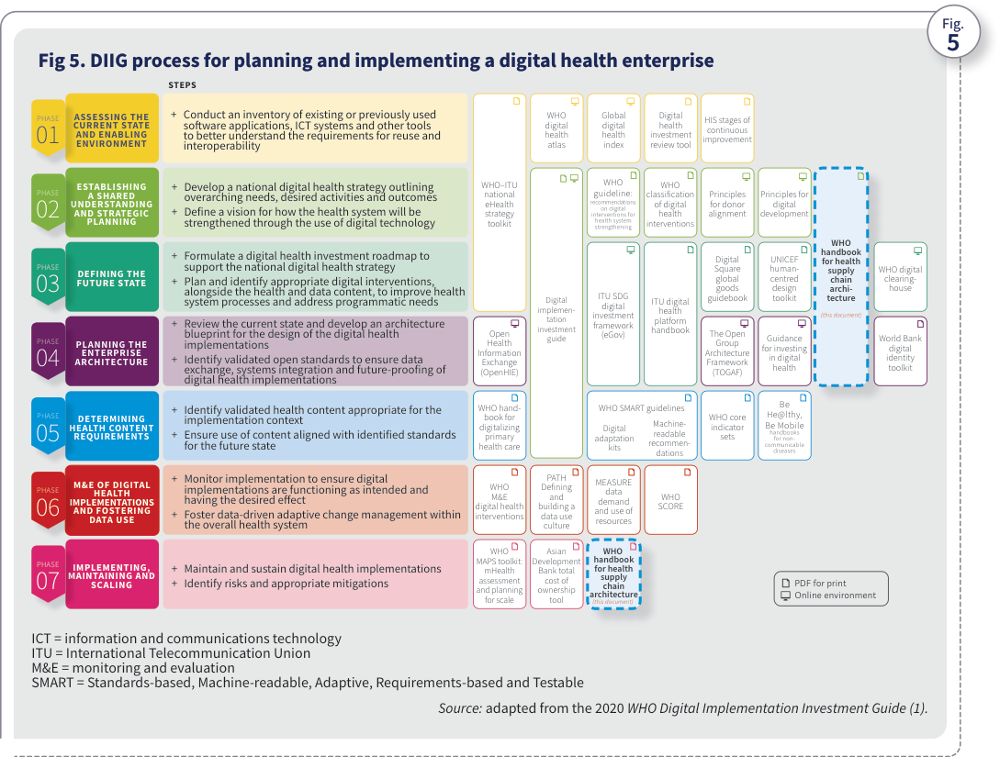</p>
<p><em>Source: WHO, Digital transformation handbook for health supply chain architecture, 2024, PDF page 15; rendered from the PDF's vector layer in the L1 entry.</em></p>
<p><em>DIIG process for planning and implementing a digital health enterprise</em></p>
<p><a id="sec:introduction-alignment-with-whos-smart-guidelines"></a></p>
<h3 id="h-sec:introduction-alignment-with-whos-smart-guidelines">
  
  
    <a href="#h-sec:introduction-alignment-with-whos-smart-guidelines" class="anchor-heading" aria-labelledby="h-sec:introduction-alignment-with-whos-smart-guidelines"><svg viewBox="0 0 16 16" aria-hidden="true"><use xlink:href="#svg-link"></use></svg></a> Alignment with WHO's SMART Guidelines
  
  
</h3>
    
<p><a id="prose:introduction-page-016"></a><span class="block-actions" data-block="prose:introduction-page-016"><a class="ba-edit" href="https://github.com/litlfred/dth-sc/edit/main/folio/dth-sc/introduction/p-introduction-page-016.md" title="Edit this block's source on GitHub (folio/dth-sc/introduction/p-introduction-page-016.md)">✎ edit</a><a class="ba-feedback" href="https://github.com/litlfred/dth-sc/issues/new?title=Feedback+%5Bdth-sc%5D%3A+Alignment+with+WHO%27s+SMART+Guidelines+%E2%80%94+prose%3Aintroduction-page-016&amp;body=**Content%3A**+%60dth-sc%60%0A**Block%3A**+%60prose%3Aintroduction-page-016%60%0A**Section%3A**+Alignment+with+WHO%27s+SMART+Guidelines%0A**Source%3A**+https%3A%2F%2Fgithub.com%2Flitlfred%2Fdth-sc%2Fblob%2Fmain%2Ffolio%2Fdth-sc%2Fintroduction%2Fp-introduction-page-016.md%0A%0A**Type%3A**+general+%7C+technical+%7C+editorial%0A%0A**Comment%3A**%0A%0A%0A**Proposed+change%3A**%0A" title="Give feedback on this block (opens a GitHub issue)">📣 feedback</a></span>
Alignment with WHO’s <a href="../folio-assistant-core/glossary/instance/dpi-h-ra/#dpi-h-ra--dpi-h-ra--smart-guidelines" title="Standards-based, Machine-readable, Adaptive, Requirements-based, Testable Guidelines are a comprehensive set of reusable digital health components (e.g., interoperability standards, code libraries, algorithms, technical and operational specifications) that transform the guideline adaptation and implementation process to preserve fidelity and accelerate uptake." class="fa-term">SMART Guidelines</a> This handbook aligns with WHO’s SMART Guidelines initiative by offering guidance on <a href="../folio-assistant-core/glossary/instance/dth-sc/#dth-sc--dth-sc--digital-health-supply-chain" title="The knowledge and practice of adopting digital technologies to improve health supply chains and enable the delivery of quality-assured health products to individuals when and where they need them." class="fa-term">DHSC</a> implementations that synchronize with digital health initiatives. The SMART Guidelines call for Standards-based, Machine- readable, Adaptive, Requirements-based and Testable components that help systematize digital health capabilities and accelerate the consistent delivery of lifesaving interventions. The SMART Guidelines offer a step-by-step pathway that builds five progressive knowledge layers and associated products, to advance the adoption of best clinical and data practices:</p>
<ul>
<li>L1 Narrative: enhanced guidelines and data recommendations</li>
<li>L2 Operational: digital adaptation kits</li>
<li>L3 Machine-readable: machine-readable recommendations</li>
<li>L4 Executable: reference applications and services</li>
<li>L5 Dynamic: precision health models. These steps help developers translate recommendations into specifications and standards, help technologists integrate recommendations into updatable digital systems and help countries localize, make interoperable, institutionalize and update digital systems consistent with evidence-based recommendations (13). Each layer can be adapted and localized within the country context (Fig. 6). L1 Narrative Guideline and data recommendations: L2 Operational Semi-structured documentation of operational and functional requirments: L3 Machine - readable Structured, software-neutral specifications, code, terminology and interoperability standards: L4 Executable Software that is able to execute static algorithms and interoperable digital components and deliver operational and functional requirements: L5 Dynamic Executable dynamic algorithms that are trained and optimi zed with advance analytics to achieve prioriti ze outcomes: Data, evidence, and impact Research and evidence base Enhanced guidelines Digital adaptation kits Machine-readable recommendations Reference software Precision health models Localisation Evidence from digital implementations Knowledge layers and associated products Country implementation Fig 6. WHO SMART Guidelines approach Fig. L1 L1 Adaptation National policies, guidelines, data, and operational procedures L1 Adaptation Locali zed requirements L1 Adaptation Locali zed machine - readable code and standards L1 Adaptation Locali zed static digital services and applications within a digital health enterprise L1 Adaptation Dynamic digital applications and services trained and optimi zed for prioriti zed local outcomes L2 L2 L3 L3 L4 L4 L5 L5 Source: adapted from WHO SMART Guidelines (12). L1</li>
</ul>
<p><a id="fig:6"></a><span class="block-actions" data-block="fig:6"><a class="ba-edit" href="https://github.com/litlfred/dth-sc/edit/main/folio/dth-sc/introduction/f-introduction-fig-6.md" title="Edit this block's source on GitHub (folio/dth-sc/introduction/f-introduction-fig-6.md)">✎ edit</a><a class="ba-feedback" href="https://github.com/litlfred/dth-sc/issues/new?title=Feedback+%5Bdth-sc%5D%3A+Alignment+with+WHO%27s+SMART+Guidelines+%E2%80%94+fig%3A6&amp;body=**Content%3A**+%60dth-sc%60%0A**Block%3A**+%60fig%3A6%60%0A**Section%3A**+Alignment+with+WHO%27s+SMART+Guidelines%0A**Source%3A**+https%3A%2F%2Fgithub.com%2Flitlfred%2Fdth-sc%2Fblob%2Fmain%2Ffolio%2Fdth-sc%2Fintroduction%2Ff-introduction-fig-6.md%0A%0A**Type%3A**+general+%7C+technical+%7C+editorial%0A%0A**Comment%3A**%0A%0A%0A**Proposed+change%3A**%0A" title="Give feedback on this block (opens a GitHub issue)">📣 feedback</a></span>
<strong>Figure 6.</strong> <a href="#fig:6" class="block-anchor" aria-label="Link to Figure 6" title="Link to Figure 6"><svg viewBox="0 0 16 16" width="14" height="14" fill="currentColor" aria-hidden="true"><use xlink:href="#svg-link"></use></svg></a></p>
<p>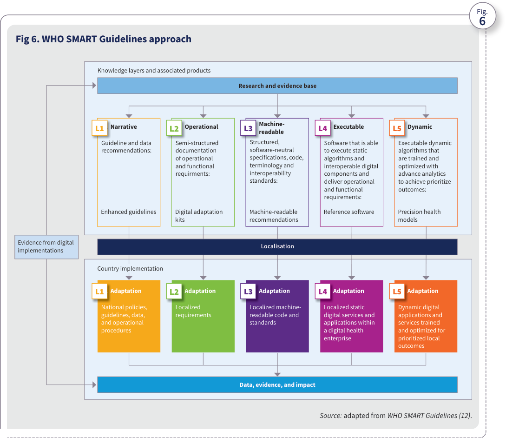</p>
<p><em>Source: WHO, Digital transformation handbook for health supply chain architecture, 2024, PDF page 16; rendered from the PDF's vector layer in the L1 entry.</em></p>
<p><em>WHO SMART Guidelines approach</em></p>
<p><a id="prose:introduction-page-017"></a><span class="block-actions" data-block="prose:introduction-page-017"><a class="ba-edit" href="https://github.com/litlfred/dth-sc/edit/main/folio/dth-sc/introduction/p-introduction-page-017.md" title="Edit this block's source on GitHub (folio/dth-sc/introduction/p-introduction-page-017.md)">✎ edit</a><a class="ba-feedback" href="https://github.com/litlfred/dth-sc/issues/new?title=Feedback+%5Bdth-sc%5D%3A+Alignment+with+WHO%27s+SMART+Guidelines+%E2%80%94+prose%3Aintroduction-page-017&amp;body=**Content%3A**+%60dth-sc%60%0A**Block%3A**+%60prose%3Aintroduction-page-017%60%0A**Section%3A**+Alignment+with+WHO%27s+SMART+Guidelines%0A**Source%3A**+https%3A%2F%2Fgithub.com%2Flitlfred%2Fdth-sc%2Fblob%2Fmain%2Ffolio%2Fdth-sc%2Fintroduction%2Fp-introduction-page-017.md%0A%0A**Type%3A**+general+%7C+technical+%7C+editorial%0A%0A**Comment%3A**%0A%0A%0A**Proposed+change%3A**%0A" title="Give feedback on this block (opens a GitHub issue)">📣 feedback</a></span>
This handbook aligns with the L1 Narrative layer by providing guidelines for digital transformation of health supply chains. The SMART Guidelines focus primarily on digital capabilities for health care, but they acknowledge the importance of digital transformation of the health supply chain. In particular, they define recommended public health and clinical business processes that use structured, task-based workflows. Many of the clinical health information needs within these tasks intersect with the information managed within the supply chain (Fig. 7). Fig 7. Sample workflow for an antenatal care business, with connections to the supply chain highlighted Fig. Source: adapted from the 2021 WHO Digital Adaptation Kit for Antenatal Care (20). Health facility Client Health worker ANC assessment 10. Counselling, in-facility management and treatment Start Arrive at facility A. Registration 1. Rapid assessment and management (RAM) 2. Danger signs needing referral? 3. Confirm pregnancy C. Antenatal care (ANC) referral Yes No Refer to other sexual and reproductive health services Not pregnant 4. First contact? Pregnant 6. Collect woman’s profile and history 7. Check symptoms and follow-up 8. Conduct physical exam 9. Conduct laboratory tests and imaging 11. Referral needed? C. ANC referral Yes 12. Scheduling 13. Self-care in the home or community No 14. Woman returns? End No Yes 5. Quick check First contact Not first contact 10.1 Behaviour counselling 10.2 Physiological symptoms counselling 10.3 Diet counselling 10.4 Diagnosis and treatment 10.5 Nutrition supplementation 10.8 Intimate partner violence counselling 10.6 Risk reduction and general counselling 10.7 Immunizations 10.9 Deworming and malaria counselling and prophylaxis ANC assessment 10. Counselling, in-facility management and treatment 6. Collect woman’s profile and history 7. Check symptoms and follow-up 8. Conduct physical exam 9. Conduct laboratory tests and imaging ct 10.1 Behaviour counselling 10.2 Physiological symptoms counselling 10.3 Diet counselling 10.4 Diagnosis and treatment 10.5 Nutrition supplementation 10.8 Intimate partner violence counselling 10.6 Risk reduction and general counselling 10.7 Immunizations 10.9 Deworming and malaria counselling and prophylaxis How this handbook was developed This handbook reflects experiences shared by and feedback from a variety of experts compiled through the following:</p>
<ul>
<li>A series of in-country and virtual consultations and feedback sessions with stakeholders who have supported DHSC implementations in countries including Ethiopia, Malawi and Rwanda. These consultations and sessions gathered insights on the role of leadership and governance in the successful digital transformation of the health supply chain, approaches adopted in developing holistic DHSC strategies and architectures and lessons learned from ongoing transformation efforts. Introduction</li>
</ul>
<p><a id="fig:7"></a><span class="block-actions" data-block="fig:7"><a class="ba-edit" href="https://github.com/litlfred/dth-sc/edit/main/folio/dth-sc/introduction/f-introduction-fig-7.md" title="Edit this block's source on GitHub (folio/dth-sc/introduction/f-introduction-fig-7.md)">✎ edit</a><a class="ba-feedback" href="https://github.com/litlfred/dth-sc/issues/new?title=Feedback+%5Bdth-sc%5D%3A+Alignment+with+WHO%27s+SMART+Guidelines+%E2%80%94+fig%3A7&amp;body=**Content%3A**+%60dth-sc%60%0A**Block%3A**+%60fig%3A7%60%0A**Section%3A**+Alignment+with+WHO%27s+SMART+Guidelines%0A**Source%3A**+https%3A%2F%2Fgithub.com%2Flitlfred%2Fdth-sc%2Fblob%2Fmain%2Ffolio%2Fdth-sc%2Fintroduction%2Ff-introduction-fig-7.md%0A%0A**Type%3A**+general+%7C+technical+%7C+editorial%0A%0A**Comment%3A**%0A%0A%0A**Proposed+change%3A**%0A" title="Give feedback on this block (opens a GitHub issue)">📣 feedback</a></span>
<strong>Figure 7.</strong> <a href="#fig:7" class="block-anchor" aria-label="Link to Figure 7" title="Link to Figure 7"><svg viewBox="0 0 16 16" width="14" height="14" fill="currentColor" aria-hidden="true"><use xlink:href="#svg-link"></use></svg></a></p>
<p>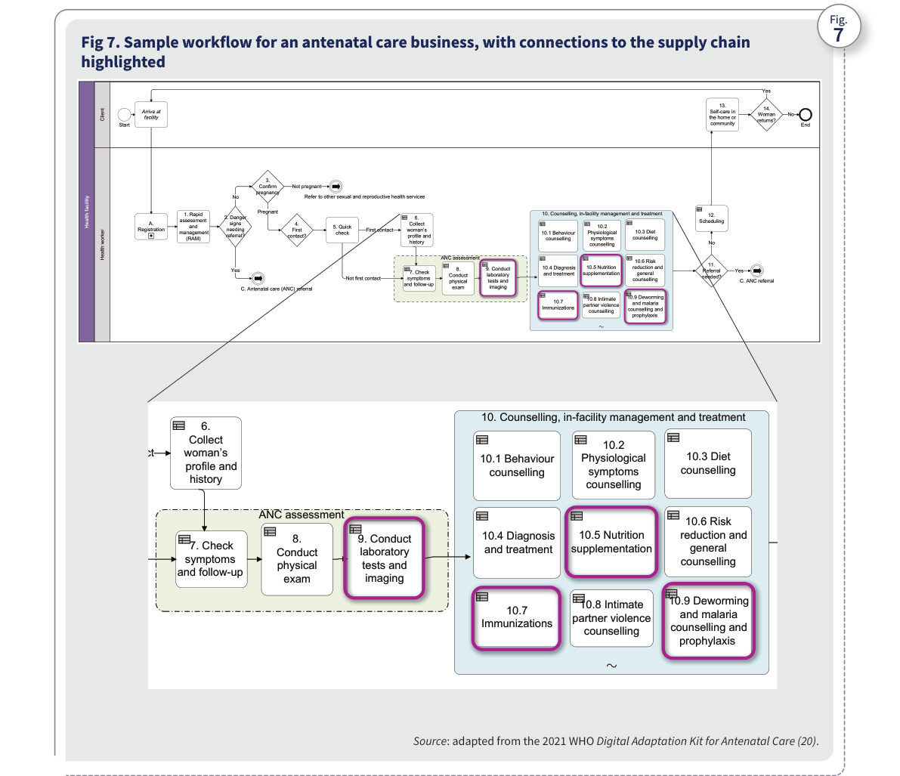</p>
<p><em>Source: WHO, Digital transformation handbook for health supply chain architecture, 2024, PDF page 17; rendered from the PDF's vector layer in the L1 entry.</em></p>
<p><em>Sample workflow for an antenatal care business, with connections to the supply chain</em></p>
<p><a id="prose:introduction-page-018"></a><span class="block-actions" data-block="prose:introduction-page-018"><a class="ba-edit" href="https://github.com/litlfred/dth-sc/edit/main/folio/dth-sc/introduction/p-introduction-page-018.md" title="Edit this block's source on GitHub (folio/dth-sc/introduction/p-introduction-page-018.md)">✎ edit</a><a class="ba-feedback" href="https://github.com/litlfred/dth-sc/issues/new?title=Feedback+%5Bdth-sc%5D%3A+Alignment+with+WHO%27s+SMART+Guidelines+%E2%80%94+prose%3Aintroduction-page-018&amp;body=**Content%3A**+%60dth-sc%60%0A**Block%3A**+%60prose%3Aintroduction-page-018%60%0A**Section%3A**+Alignment+with+WHO%27s+SMART+Guidelines%0A**Source%3A**+https%3A%2F%2Fgithub.com%2Flitlfred%2Fdth-sc%2Fblob%2Fmain%2Ffolio%2Fdth-sc%2Fintroduction%2Fp-introduction-page-018.md%0A%0A**Type%3A**+general+%7C+technical+%7C+editorial%0A%0A**Comment%3A**%0A%0A%0A**Proposed+change%3A**%0A" title="Give feedback on this block (opens a GitHub issue)">📣 feedback</a></span></p>
<ul>
<li>Meetings of a DHSC small working group created under the <a href="../folio-assistant-core/glossary/instance/dpi-h-ra/#dpi-h-ra--dpi-h-ra--digital-health" title="The systematic application of information and communications technologies, computer science, and data to support informed decision-making by individuals, the health workforce, and health systems, to strengthen resilience to disease and improve health and wellness." class="fa-term">Digital Health</a> and Interoperability Working Group (DH&#x26;I WG) (2), a volunteer community of practice dedicated to strengthening country health systems and outcomes through the appropriate and responsible use of digital information technologies. DH&#x26;I WG has more than 250 members representing governments, donors, multilateral organizations, academia, the private sector and nongovernmental organizations. The small working group met monthly to review the handbook and provide input as individual experts on its structure and content. Desk reviews of documents relevant to country health supply chain digitalization also contributed context for this handbook. These documents included digital health strategy, DHSC strategy and architecture documents from countries such as Australia, Malawi and Rwanda; guidance documents on supply chain software standards; and information system resources such as SCISMM (16) and the Target Software Standards (TSS) (19). The desk reviews aimed to identify resources that offered insights into defining architectural approaches for the public health and supply chain sectors. The documents were selected based on their relevance, Who this handbook is for This handbook is for countries, organizations and teams that want to plan and implement digital transformation of the public health supply chain. The first four chapters Table 1. Summary of chapters 1–4 credibility, and potential to contribute valuable perspectives on best practices and innovative strategies. The outcomes of the desk reviews were evaluated by the DHSC small working group to ensure alignment with the public health sector and the context of low- and middle-income countries and to assess the applicability of the identified approaches. Insights and templates were also drawn from practical experiences in different countries, including Ethiopia, Rwanda and Malawi. Examples from these three countries are included in this handbook because they have implemented a comprehensive architectural approach to health supply chain digitalization, including the development of a strategic framework. The steps outlined in this handbook are informed by the Principles for Digital Development (Annex 1). Some methodologies and templates have been adapted from prominent sources such as the DIIG, the National eHealth Strategy Toolkit (19) from WHO and the International Telecommunication Union (ITU), SCISMM and the OpenHIE framework (17). provide guidance on the different phases and areas of digital transformation, as summarized in Table 1.</li>
</ul>
<p><a id="tbl:1"></a><span class="block-actions" data-block="tbl:1"><a class="ba-edit" href="https://github.com/litlfred/dth-sc/edit/main/folio/dth-sc/introduction/t-introduction-table-1.md" title="Edit this block's source on GitHub (folio/dth-sc/introduction/t-introduction-table-1.md)">✎ edit</a><a class="ba-feedback" href="https://github.com/litlfred/dth-sc/issues/new?title=Feedback+%5Bdth-sc%5D%3A+Alignment+with+WHO%27s+SMART+Guidelines+%E2%80%94+tbl%3A1&amp;body=**Content%3A**+%60dth-sc%60%0A**Block%3A**+%60tbl%3A1%60%0A**Section%3A**+Alignment+with+WHO%27s+SMART+Guidelines%0A**Source%3A**+https%3A%2F%2Fgithub.com%2Flitlfred%2Fdth-sc%2Fblob%2Fmain%2Ffolio%2Fdth-sc%2Fintroduction%2Ft-introduction-table-1.md%0A%0A**Type%3A**+general+%7C+technical+%7C+editorial%0A%0A**Comment%3A**%0A%0A%0A**Proposed+change%3A**%0A" title="Give feedback on this block (opens a GitHub issue)">📣 feedback</a></span>
<strong>Table 1.</strong> <a href="#tbl:1" class="block-anchor" aria-label="Link to Table 1" title="Link to Table 1"><svg viewBox="0 0 16 16" width="14" height="14" fill="currentColor" aria-hidden="true"><use xlink:href="#svg-link"></use></svg></a></p>
<p><em>Table 1. Summary of chapters 1–4</em></p>
<div class="table-wrapper"><table>
<thead>
<tr>
<th><strong>Chapter</strong></th>
<th><strong>Illustrative target organizations</strong></th>
<th><strong>Illustrative target user teams and roles</strong></th>
<th><strong>Purpose of the chapter</strong></th>
</tr>
</thead>
<tbody>
<tr>
<td>Chapter 1. Defining a holistic DHSC strategy</td>
<td>• Ministry of health (MOH)<br>• Central warehouse</td>
<td>• Senior management/leaders<br>• Chief digital officers<br>• Supply chain leaders</td>
<td>To help define a vision and strategic goals to guide DHSC implementation</td>
</tr>
<tr>
<td>Chapter 2. Defining the DHSC architecture</td>
<td>• MOH<br>• Central warehouse</td>
<td>• Chief digital officers<br>• Technical/system/enterprise architects</td>
<td>To help define a DHSC architecture that can guide and help coordinate all digital transformation activities</td>
</tr>
<tr>
<td>Chapter 3. Planning for scalable implementation and sustainable operations</td>
<td>• MOH<br>• Central warehouse<br>• Donors and funding partners<br>• Implementing partners</td>
<td>• Chief digital officers<br>• Project sponsors<br>• Project managers<br>• Technical/system/enterprise architects and team<br>• Supply chain/operational leaders and team</td>
<td>To provide guidance on factors such as governance, human resource capacity and infrastructure in developing a viable implementation plan for each DHSC intervention</td>
</tr>
<tr>
<td>Chapter 4. Using the DHSC to implement traceability</td>
<td>• MOH<br>• Central warehouse<br>• Donors and funding partners<br>• Regulatory authority<br>• Implementing partners</td>
<td>• Chief digital officers<br>• Technical/system/enterprise architects and team<br>• Supply chain/operational leaders and team<br>• Regulatory/market surveillance and control/vigilance teams</td>
<td>To help implement medical product traceability and verification features using DHSC components</td>
</tr>
</tbody>
</table></div>
<p><em>Summary of chapters 1–4</em></p>
<p><a id="chap:ch01-dhsc-strategy"></a></p>
<h2 id="h-chap:ch01-dhsc-strategy">
  
  
    <a href="#h-chap:ch01-dhsc-strategy" class="anchor-heading" aria-labelledby="h-chap:ch01-dhsc-strategy"><svg viewBox="0 0 16 16" aria-hidden="true"><use xlink:href="#svg-link"></use></svg></a> Chapter 1. Defining a holistic DHSC strategy
  
  
</h2>
    
<p><a id="sec:ch01-guiding-principles"></a></p>
<h3 id="h-sec:ch01-guiding-principles">
  
  
    <a href="#h-sec:ch01-guiding-principles" class="anchor-heading" aria-labelledby="h-sec:ch01-guiding-principles"><svg viewBox="0 0 16 16" aria-hidden="true"><use xlink:href="#svg-link"></use></svg></a> Guiding principles
  
  
</h3>
    
<p><a id="prose:ch01-page-019"></a><span class="block-actions" data-block="prose:ch01-page-019"><a class="ba-edit" href="https://github.com/litlfred/dth-sc/edit/main/folio/dth-sc/ch01-dhsc-strategy/p-ch01-page-019.md" title="Edit this block's source on GitHub (folio/dth-sc/ch01-dhsc-strategy/p-ch01-page-019.md)">✎ edit</a><a class="ba-feedback" href="https://github.com/litlfred/dth-sc/issues/new?title=Feedback+%5Bdth-sc%5D%3A+Guiding+principles+%E2%80%94+prose%3Ach01-page-019&amp;body=**Content%3A**+%60dth-sc%60%0A**Block%3A**+%60prose%3Ach01-page-019%60%0A**Section%3A**+Guiding+principles%0A**Source%3A**+https%3A%2F%2Fgithub.com%2Flitlfred%2Fdth-sc%2Fblob%2Fmain%2Ffolio%2Fdth-sc%2Fch01-dhsc-strategy%2Fp-ch01-page-019.md%0A%0A**Type%3A**+general+%7C+technical+%7C+editorial%0A%0A**Comment%3A**%0A%0A%0A**Proposed+change%3A**%0A" title="Give feedback on this block (opens a GitHub issue)">📣 feedback</a></span>
Guiding principles 1. Defining a holistic <a href="../folio-assistant-core/glossary/instance/dth-sc/#dth-sc--dth-sc--digital-health-supply-chain" title="The knowledge and practice of adopting digital technologies to improve health supply chains and enable the delivery of quality-assured health products to individuals when and where they need them." class="fa-term">DHSC</a> strategy 2. Defining the DHSC architecture Chapter Defining a holistic DHSC strategy 3. Planning for scalable implementation and sustainable operations 4. Using the DHSC to implement traceability Identify and engage stakeholders Analyse the current state of <a href="../folio-assistant-core/glossary/instance/dth-sc/#dth-sc--dth-sc--health-supply-chain-information-system" title="A paper-based or software tool that supports the management and/or operations of the health supply chain." class="fa-term">HSCISs</a> Define the vision and strategic goals and objectives Define a strategic roadmap and performance indicators Step Step Step Step The following principles, informed by the Principles for Digital Development (Annex 1), can guide the development of the DHSC vision and strategic goals.</p>
<ul>
<li>Align with a relevant national priority (such as patient safety, universal health care, or access to medicines and health products).</li>
<li>Take a user-centred approach.</li>
<li>Strive for an ecosystem of interoperability and collaboration.</li>
<li>Continuously engage all stakeholders.</li>
<li>Use, reuse and enhance existing resources, assets and capabilities.</li>
<li>Aim for scalability and sustainability. The steps outlined in this chapter will result in the following outputs:</li>
<li>DHSC vision;</li>
<li>DHSC strategic goals;</li>
<li>DHSC strategic objectives; and</li>
<li>DHSC strategic roadmap. Outputs</li>
</ul>
<p><a id="sec:ch01-why-is-a-strategy-necessary"></a></p>
<h3 id="h-sec:ch01-why-is-a-strategy-necessary">
  
  
    <a href="#h-sec:ch01-why-is-a-strategy-necessary" class="anchor-heading" aria-labelledby="h-sec:ch01-why-is-a-strategy-necessary"><svg viewBox="0 0 16 16" aria-hidden="true"><use xlink:href="#svg-link"></use></svg></a> Why is a strategy necessary?
  
  
</h3>
    
<p><a id="prose:ch01-page-020"></a><span class="block-actions" data-block="prose:ch01-page-020"><a class="ba-edit" href="https://github.com/litlfred/dth-sc/edit/main/folio/dth-sc/ch01-dhsc-strategy/p-ch01-page-020.md" title="Edit this block's source on GitHub (folio/dth-sc/ch01-dhsc-strategy/p-ch01-page-020.md)">✎ edit</a><a class="ba-feedback" href="https://github.com/litlfred/dth-sc/issues/new?title=Feedback+%5Bdth-sc%5D%3A+Why+is+a+strategy+necessary%3F+%E2%80%94+prose%3Ach01-page-020&amp;body=**Content%3A**+%60dth-sc%60%0A**Block%3A**+%60prose%3Ach01-page-020%60%0A**Section%3A**+Why+is+a+strategy+necessary%3F%0A**Source%3A**+https%3A%2F%2Fgithub.com%2Flitlfred%2Fdth-sc%2Fblob%2Fmain%2Ffolio%2Fdth-sc%2Fch01-dhsc-strategy%2Fp-ch01-page-020.md%0A%0A**Type%3A**+general+%7C+technical+%7C+editorial%0A%0A**Comment%3A**%0A%0A%0A**Proposed+change%3A**%0A" title="Give feedback on this block (opens a GitHub issue)">📣 feedback</a></span>
Defining a holistic <a href="../folio-assistant-core/glossary/instance/dth-sc/#dth-sc--dth-sc--digital-health-supply-chain" title="The knowledge and practice of adopting digital technologies to improve health supply chains and enable the delivery of quality-assured health products to individuals when and where they need them." class="fa-term">DHSC</a> strategy Implementation of tools and technologies to digitally transform the health supply chain cannot happen in isolation. The DHSC strategy should align closely with the country’s IT strategy, health strategy, medicines and health product strategies, supply chain strategy and digital health strategy. National priorities should be the driving force behind DHSC implementation initiatives. Why is a strategy necessary? A holistic DHSC strategy is essential to achieving comprehensive digital transformation of the health supply chain. It can offer a clear vision and direction and ensure alignment across all national digital transformation initiatives (Fig. 8) (21). Such initiatives may include the following:</p>
<ul>
<li>national health strategy, which establishes a vision and priorities to address the most pressing health care challenges and improve health care for the population;</li>
<li>national medicines and health product policies, which aim to increase access to and use of high-quality, affordable medicines and health products;</li>
<li>national health supply chain strategy, which supplements the health strategy to specifically address the supply chain management of products that support the country’s health care system;</li>
<li>national digital or IT strategy, which defines the vision for the country’s IT adoption and offers guidance for progress in IT infrastructure and software deployments and standards;</li>
<li>national digital health (eHealth) strategy, which complements the health strategy by establishing a vision to digitize health data and digitalize health care processes, aiming to empower health workers through digital tools and technologies, improve data availability and promote interoperability;</li>
<li>national DHSC strategy, which complements both the health supply chain strategy and the digital health strategy establishing the vision and priorities to digitalize the supply chain aspects of the health care system and complementing the digital health and health supply chain strategies, or becoming an integral component of either strategy; and</li>
<li>other overlapping strategies such as a national pharmaceutical traceability strategy, which could rely on the DHSC strategy for digital infrastructure and data to enable tracking and tracing of commodities. A strategy sets out measurable objectives and timelines for achieving them. A well defined DHSC strategy that thoroughly accounts for future growth requirements can ensure scalable and sustainable digital transformation of the health supply chain. Clear and quantifiable strategic objectives are instrumental in identifying and allocating the necessary resources, as well as monitoring progress towards the established vision. Fig 8. Alignment of national strategies Fig. Health strategy Digital/IT strategy Health supply chain strategy Digital health strategy Medicines and health product strategy Digital health supply chain strategy VISION VISION VISION VISION VISION VISION</li>
</ul>
<p><a id="fig:8"></a><span class="block-actions" data-block="fig:8"><a class="ba-edit" href="https://github.com/litlfred/dth-sc/edit/main/folio/dth-sc/ch01-dhsc-strategy/f-ch01-fig-8.md" title="Edit this block's source on GitHub (folio/dth-sc/ch01-dhsc-strategy/f-ch01-fig-8.md)">✎ edit</a><a class="ba-feedback" href="https://github.com/litlfred/dth-sc/issues/new?title=Feedback+%5Bdth-sc%5D%3A+Why+is+a+strategy+necessary%3F+%E2%80%94+fig%3A8&amp;body=**Content%3A**+%60dth-sc%60%0A**Block%3A**+%60fig%3A8%60%0A**Section%3A**+Why+is+a+strategy+necessary%3F%0A**Source%3A**+https%3A%2F%2Fgithub.com%2Flitlfred%2Fdth-sc%2Fblob%2Fmain%2Ffolio%2Fdth-sc%2Fch01-dhsc-strategy%2Ff-ch01-fig-8.md%0A%0A**Type%3A**+general+%7C+technical+%7C+editorial%0A%0A**Comment%3A**%0A%0A%0A**Proposed+change%3A**%0A" title="Give feedback on this block (opens a GitHub issue)">📣 feedback</a></span>
<strong>Figure 8.</strong> <a href="#fig:8" class="block-anchor" aria-label="Link to Figure 8" title="Link to Figure 8"><svg viewBox="0 0 16 16" width="14" height="14" fill="currentColor" aria-hidden="true"><use xlink:href="#svg-link"></use></svg></a></p>
<p>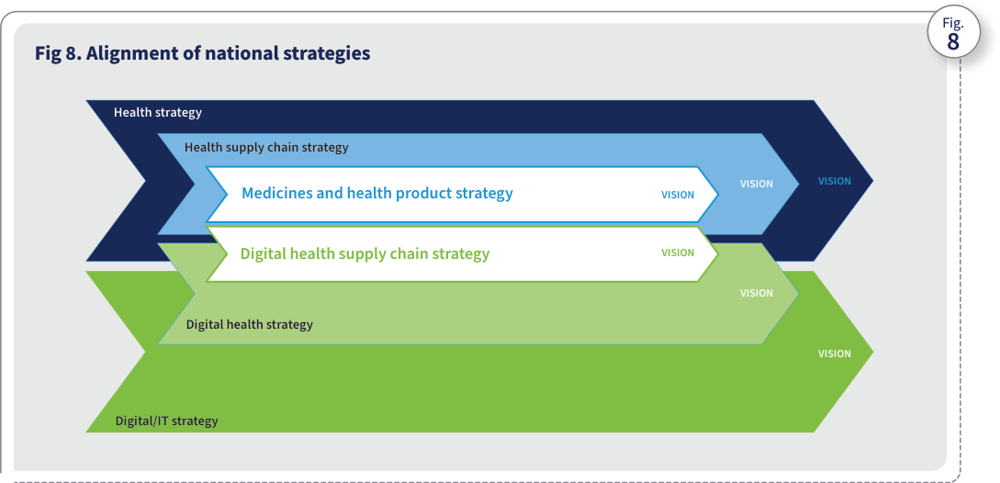</p>
<p><em>Source: WHO, Digital transformation handbook for health supply chain architecture, 2024, PDF page 20; rendered from the PDF's vector layer in the L1 entry.</em></p>
<p><em>Alignment of national strategies</em></p>
<p><a id="prose:ch01-page-021"></a><span class="block-actions" data-block="prose:ch01-page-021"><a class="ba-edit" href="https://github.com/litlfred/dth-sc/edit/main/folio/dth-sc/ch01-dhsc-strategy/p-ch01-page-021.md" title="Edit this block's source on GitHub (folio/dth-sc/ch01-dhsc-strategy/p-ch01-page-021.md)">✎ edit</a><a class="ba-feedback" href="https://github.com/litlfred/dth-sc/issues/new?title=Feedback+%5Bdth-sc%5D%3A+Why+is+a+strategy+necessary%3F+%E2%80%94+prose%3Ach01-page-021&amp;body=**Content%3A**+%60dth-sc%60%0A**Block%3A**+%60prose%3Ach01-page-021%60%0A**Section%3A**+Why+is+a+strategy+necessary%3F%0A**Source%3A**+https%3A%2F%2Fgithub.com%2Flitlfred%2Fdth-sc%2Fblob%2Fmain%2Ffolio%2Fdth-sc%2Fch01-dhsc-strategy%2Fp-ch01-page-021.md%0A%0A**Type%3A**+general+%7C+technical+%7C+editorial%0A%0A**Comment%3A**%0A%0A%0A**Proposed+change%3A**%0A" title="Give feedback on this block (opens a GitHub issue)">📣 feedback</a></span>
The risks of forgoing a guiding DHSC vision and strategy are significant and include the following:</p>
<ul>
<li>fragmented or disconnected implementation of digital tools and technologies for the supply chain, resulting in noninteroperable processes and systems;</li>
<li>Example: The central warehouse’s warehouse management system (<a href="../folio-assistant-core/glossary/instance/dth-sc/#dth-sc--dth-sc--warehouse-management-system" title="A computer application that manages and optimizes workflows and the storage of goods within a warehouse." class="fa-term">WMS</a>) is implemented without considering the electronic logistics management information system used by downstream facilities. This affects the ability of downstream facilities to send stock replenishment requests or orders to the central warehouse electronically, which ultimately affects process and product traceability.</li>
<li>lack of interoperable supply chain systems, resulting in time-consuming manual collection of data for supply chain analysis, forecasting and supply planning;</li>
<li>Example: The central warehouse’s WMS uses formats for data elements (such as orders and inventory) that differ from those used by the downstream facilities’ electronic logistics management information system. This means manual effort will be needed to collect and combine data for analysis.</li>
<li>inconsistent application of product nomenclature;</li>
<li>Example: Different systems across different supply chain levels do not follow national or global standards to identify, represent and process health products or aggregate and analyse data, making it difficult to identify potential stockouts or products that are about to expire (Fig. 9).</li>
<li>fragmented systems that affect the visibility of the supply chain and the ability to address exceptions such as stockouts, product expiries and product recalls in a timely manner;</li>
<li>future effort and cost if systems need to be redesigned, modified or repurposed to align with health and other systems;</li>
<li>nonscalable supply chain systems, which require additional cost to enhance or replace to provide needed processes, functionalities and data;</li>
<li>digital investments that do not provide tangible benefits to organizations or, more importantly, to individuals; and</li>
<li>multiple overlapping technology implementations that result in burdensome duplicate processes for supply chain staff and health workers and redundant maintenance costs. mSupply eLMIS Paper forms Fig 9. Inconsistent use of standardized product nomenclature across the supply chain Fig. Product code: 123123 Manufacturers Patients Product code: A1232 Central warehouse Product code: P44545 Health facilities Product code: AM545 Community health workers Physical flow of health products The following sections describe five steps to developing a DHSC vision, strategic goals and measurable objectives, including key activities and outputs, potential risks and mitigation strategies, and best practices.</li>
<li>Step 1. Identify and engage all relevant stakeholders.</li>
<li>Step 2. Analyse the current state of <a href="../folio-assistant-core/glossary/instance/dth-sc/#dth-sc--dth-sc--health-supply-chain-information-system" title="A paper-based or software tool that supports the management and/or operations of the health supply chain." class="fa-term">HSCISs</a>.</li>
<li>Step 3. Define the DHSC vision and strategic goals.</li>
<li>Step 4. Define a strategic roadmap and performance indicators. Defining a holistic DHSC strategy</li>
</ul>
<p><a id="fig:9"></a><span class="block-actions" data-block="fig:9"><a class="ba-edit" href="https://github.com/litlfred/dth-sc/edit/main/folio/dth-sc/ch01-dhsc-strategy/f-ch01-fig-9.md" title="Edit this block's source on GitHub (folio/dth-sc/ch01-dhsc-strategy/f-ch01-fig-9.md)">✎ edit</a><a class="ba-feedback" href="https://github.com/litlfred/dth-sc/issues/new?title=Feedback+%5Bdth-sc%5D%3A+Why+is+a+strategy+necessary%3F+%E2%80%94+fig%3A9&amp;body=**Content%3A**+%60dth-sc%60%0A**Block%3A**+%60fig%3A9%60%0A**Section%3A**+Why+is+a+strategy+necessary%3F%0A**Source%3A**+https%3A%2F%2Fgithub.com%2Flitlfred%2Fdth-sc%2Fblob%2Fmain%2Ffolio%2Fdth-sc%2Fch01-dhsc-strategy%2Ff-ch01-fig-9.md%0A%0A**Type%3A**+general+%7C+technical+%7C+editorial%0A%0A**Comment%3A**%0A%0A%0A**Proposed+change%3A**%0A" title="Give feedback on this block (opens a GitHub issue)">📣 feedback</a></span>
<strong>Figure 9.</strong> <a href="#fig:9" class="block-anchor" aria-label="Link to Figure 9" title="Link to Figure 9"><svg viewBox="0 0 16 16" width="14" height="14" fill="currentColor" aria-hidden="true"><use xlink:href="#svg-link"></use></svg></a></p>
<p>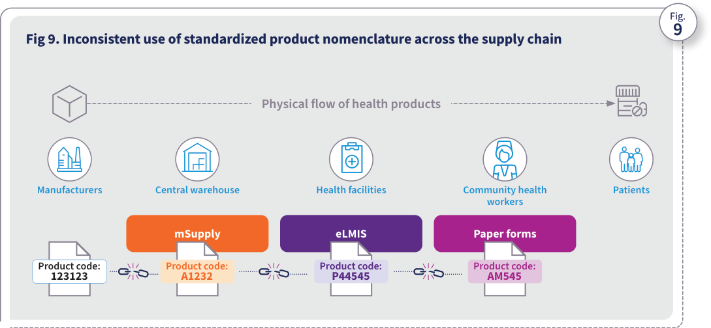</p>
<p><em>Source: WHO, Digital transformation handbook for health supply chain architecture, 2024, PDF page 21; rendered from the PDF's vector layer in the L1 entry.</em></p>
<p><em>Inconsistent use of standardized product nomenclature across the supply chain</em></p>
<p><a id="sec:ch01-step-1-identify-and-engage-all-relevant"></a></p>
<h3 id="h-sec:ch01-step-1-identify-and-engage-all-relevant">
  
  
    <a href="#h-sec:ch01-step-1-identify-and-engage-all-relevant" class="anchor-heading" aria-labelledby="h-sec:ch01-step-1-identify-and-engage-all-relevant"><svg viewBox="0 0 16 16" aria-hidden="true"><use xlink:href="#svg-link"></use></svg></a> Step 1. Identify and engage all relevant stakeholders
  
  
</h3>
    
<p><a id="prose:ch01-page-022"></a><span class="block-actions" data-block="prose:ch01-page-022"><a class="ba-edit" href="https://github.com/litlfred/dth-sc/edit/main/folio/dth-sc/ch01-dhsc-strategy/p-ch01-page-022.md" title="Edit this block's source on GitHub (folio/dth-sc/ch01-dhsc-strategy/p-ch01-page-022.md)">✎ edit</a><a class="ba-feedback" href="https://github.com/litlfred/dth-sc/issues/new?title=Feedback+%5Bdth-sc%5D%3A+Step+1.+Identify+and+engage+all+relevant+stakeholders+%E2%80%94+prose%3Ach01-page-022&amp;body=**Content%3A**+%60dth-sc%60%0A**Block%3A**+%60prose%3Ach01-page-022%60%0A**Section%3A**+Step+1.+Identify+and+engage+all+relevant+stakeholders%0A**Source%3A**+https%3A%2F%2Fgithub.com%2Flitlfred%2Fdth-sc%2Fblob%2Fmain%2Ffolio%2Fdth-sc%2Fch01-dhsc-strategy%2Fp-ch01-page-022.md%0A%0A**Type%3A**+general+%7C+technical+%7C+editorial%0A%0A**Comment%3A**%0A%0A%0A**Proposed+change%3A**%0A" title="Give feedback on this block (opens a GitHub issue)">📣 feedback</a></span>
INPUTS TASKS OUTPUTS</p>
<ul>
<li>National health strategy and priorities (e.g., patient safety, universal health access, availability of medicines and health products)</li>
<li>Organograms of organizations such as the MOH, regulatory authority and central warehouse (to engage necessary teams and staff) 1. Identify focal points from all stakeholder organizations (including the MOH, regulatory authority, IT authority, central and regional warehouses, health facilities, implementation partners and funders) whose input will be vital in defining the vision and strategic goals. 2. Identify relevant managerial and technical staff from stakeholder organizations who can provide inputs. 3. Define a stakeholder matrix to clearly establish roles and responsibilities. 4. Establish a technical working group (TWG) and a steering committee to help facilitate analysis and development of the vision, strategic goals and architecture. The TWG should support the overall governance and planning of <a href="../folio-assistant-core/glossary/instance/dth-sc/#dth-sc--dth-sc--digital-health-supply-chain" title="The knowledge and practice of adopting digital technologies to improve health supply chains and enable the delivery of quality-assured health products to individuals when and where they need them." class="fa-term">DHSC</a> implementation activities, and the steering committee should provide leadership and oversight for all implementation activities.</li>
<li>DHSC stakeholder matrix</li>
<li>DHSC steering committee terms of reference</li>
<li>DHSC TWG terms of reference BEST PRACTICES</li>
<li>Secure upfront buy-in and support from key senior leaders within the MOH who will champion the cause. This will ensure continuity of ownership over digital transformation initiatives. Key donors could support the process of onboarding champions.</li>
<li>If a TWG already exists for digital health, create a task force for DHSC within that TWG rather than creating a new TWG. This task force can focus on digital and supply chain aspects of public health. Potential risks Mitigation strategies Lack of engagement and participation from identified stakeholders</li>
<li>Under the leadership of the MOH, establish a steering committee and a TWG and schedule regular meetings.</li>
<li>Identify and enlist a DHSC sponsor (such as a senior MOH leader).</li>
<li>Use the steering committee structure shown in Annex 2. Unclear approval and decision-making process Have the TWG establish a governance process to review and approve DHSC initiatives. Relevant stakeholders and/or decision- makers excluded from the TWG or steering committee Determine appropriate participation in the TWG or steering committee not only by using organograms but also including all relevant public health and health supply chain partners (e.g., donor organizations, implementing partners and MOH health programme teams) in the initial meetings. Also, develop an agreed-upon list of stakeholders to be excluded from the initial meetings. Identify and engage all relevant stakeholders Step Identifying and engaging all relevant stakeholders involves recognizing everyone who has an interest or role in the DHSC implementation and actively involving them in the process. This ensures that diverse perspectives are considered, fosters collaboration and gains support for successful DHSC outcomes.</li>
</ul>
<p><a id="sec:ch01-step-2-analyse-the-current-state-of-hsci"></a></p>
<h3 id="h-sec:ch01-step-2-analyse-the-current-state-of-hsci">
  
  
    <a href="#h-sec:ch01-step-2-analyse-the-current-state-of-hsci" class="anchor-heading" aria-labelledby="h-sec:ch01-step-2-analyse-the-current-state-of-hsci"><svg viewBox="0 0 16 16" aria-hidden="true"><use xlink:href="#svg-link"></use></svg></a> Step 2. Analyse the current state of HSCISs
  
  
</h3>
    
<p><a id="prose:ch01-page-023"></a><span class="block-actions" data-block="prose:ch01-page-023"><a class="ba-edit" href="https://github.com/litlfred/dth-sc/edit/main/folio/dth-sc/ch01-dhsc-strategy/p-ch01-page-023.md" title="Edit this block's source on GitHub (folio/dth-sc/ch01-dhsc-strategy/p-ch01-page-023.md)">✎ edit</a><a class="ba-feedback" href="https://github.com/litlfred/dth-sc/issues/new?title=Feedback+%5Bdth-sc%5D%3A+Step+2.+Analyse+the+current+state+of+HSCISs+%E2%80%94+prose%3Ach01-page-023&amp;body=**Content%3A**+%60dth-sc%60%0A**Block%3A**+%60prose%3Ach01-page-023%60%0A**Section%3A**+Step+2.+Analyse+the+current+state+of+HSCISs%0A**Source%3A**+https%3A%2F%2Fgithub.com%2Flitlfred%2Fdth-sc%2Fblob%2Fmain%2Ffolio%2Fdth-sc%2Fch01-dhsc-strategy%2Fp-ch01-page-023.md%0A%0A**Type%3A**+general+%7C+technical+%7C+editorial%0A%0A**Comment%3A**%0A%0A%0A**Proposed+change%3A**%0A" title="Give feedback on this block (opens a GitHub issue)">📣 feedback</a></span>
Analyse the current state of <a href="../folio-assistant-core/glossary/instance/dth-sc/#dth-sc--dth-sc--health-supply-chain-information-system" title="A paper-based or software tool that supports the management and/or operations of the health supply chain." class="fa-term">HSCISs</a> Step BEST PRACTICE</p>
<ul>
<li>To ensure a comprehensive assessment of the current health supply chain, consider all factors that affect the health supply chain, such as stakeholders, human resource capacity, infrastructure, political priorities, technology maturity and maturity of processes (including regulatory and insurance). Potential risks Mitigation strategies Misalignment of technical and political priorities</li>
<li>Establish connections between political and technical priorities by identifying the mutual benefits of pursuing technical priorities.</li>
<li>Promote engagement and dialogue between technical experts and political leaders and communicate critical health supply chain challenges and their effects on the country.</li>
<li>Have technical experts and leaders convey the advantages of digital transformation to senior political leaders in advocacy sessions, emphasizing the alignment of technical priorities with their political goals. Lack of relevant inputs (e.g., NSCA Toolkit, national supply chain strategy or national digital health strategy) to inform data- driven decisions, leading to arbitrary priority setting</li>
<li>Conduct detailed assessments of the health supply chain and its systems using tools such as the NSCA Toolkit (22) and SCISMM (16).</li>
<li>Use outputs from such assessments as key inputs for the <a href="../folio-assistant-core/glossary/instance/dth-sc/#dth-sc--dth-sc--digital-health-supply-chain" title="The knowledge and practice of adopting digital technologies to improve health supply chains and enable the delivery of quality-assured health products to individuals when and where they need them." class="fa-term">DHSC</a> initiative. Analysing the current state to identify digital transformation priorities involves evaluating existing processes, capabilities, supply chain challenges and identified priorities to pinpoint areas where DHSC can have the most significant impact. This step helps prioritize investments and initiatives that will drive efficiency, enhance service delivery, and support long-term strategic goals. INPUTS TASKS OUTPUTS</li>
<li>National health strategy and priorities (e.g., patient safety, universal health care, availability of medicines and health products)</li>
<li>National health supply chain assessments</li>
<li>Identified improvements based on supply chain assessments</li>
<li>Details on the national supply chain and digital health and health product traceability systems, if available</li>
<li>Supply chain improvements and any associated digital achievements 1. Identify health supply chain challenges and problems and digitalization needs that align with digital health, the national supply chain strategy/vision and the medicines and health product traceability strategy needs and priorities. Include challenges from the perspective of end users such as supply chain leaders, operational staff, health care workers and pharmacists who support dispensing and patients. 2. Prioritize challenges, problems and needs that should be addressed within a defined time frame (e.g., one year, three years or five years).</li>
<li>Health supply chain digital transformation priorities RESOURCES National Supply Chain Assessment (NSCA) Toolkit (22) Template for prioritizing DHSC challenges (Annex 3) Illustrative template that maps today’s challenges to future outcomes (Annex 4) Defining a holistic DHSC strategy</li>
</ul>
<p><a id="sec:ch01-step-3-define-the-dhsc-vision-and-strate"></a></p>
<h3 id="h-sec:ch01-step-3-define-the-dhsc-vision-and-strate">
  
  
    <a href="#h-sec:ch01-step-3-define-the-dhsc-vision-and-strate" class="anchor-heading" aria-labelledby="h-sec:ch01-step-3-define-the-dhsc-vision-and-strate"><svg viewBox="0 0 16 16" aria-hidden="true"><use xlink:href="#svg-link"></use></svg></a> Step 3. Define the DHSC vision and strategic goals and objectives
  
  
</h3>
    
<p><a id="prose:ch01-page-024"></a><span class="block-actions" data-block="prose:ch01-page-024"><a class="ba-edit" href="https://github.com/litlfred/dth-sc/edit/main/folio/dth-sc/ch01-dhsc-strategy/p-ch01-page-024.md" title="Edit this block's source on GitHub (folio/dth-sc/ch01-dhsc-strategy/p-ch01-page-024.md)">✎ edit</a><a class="ba-feedback" href="https://github.com/litlfred/dth-sc/issues/new?title=Feedback+%5Bdth-sc%5D%3A+Step+3.+Define+the+DHSC+vision+and+strategic+goals+and+objectives+%E2%80%94+prose%3Ach01-page-024&amp;body=**Content%3A**+%60dth-sc%60%0A**Block%3A**+%60prose%3Ach01-page-024%60%0A**Section%3A**+Step+3.+Define+the+DHSC+vision+and+strategic+goals+and+objectives%0A**Source%3A**+https%3A%2F%2Fgithub.com%2Flitlfred%2Fdth-sc%2Fblob%2Fmain%2Ffolio%2Fdth-sc%2Fch01-dhsc-strategy%2Fp-ch01-page-024.md%0A%0A**Type%3A**+general+%7C+technical+%7C+editorial%0A%0A**Comment%3A**%0A%0A%0A**Proposed+change%3A**%0A" title="Give feedback on this block (opens a GitHub issue)">📣 feedback</a></span>
INPUTS TASKS OUTPUTS</p>
<ul>
<li>National supply chain strategy</li>
<li>National health strategy</li>
<li>National digital health strategy</li>
<li>National medicines and health product policies</li>
<li>National IT strategy</li>
<li>Health supply chain digital transformation priorities 1. Identify solutions that will address the identified challenges. Include the end-user perspectives by considering factors such as feasibility and ease of use. 2. Define realistic strategic goals that will help achieve the identified solutions within a reasonable timeframe. Each strategic goal may have its own timeline, depending on its priority. 3. Define strategic objectives for each goal. These will inform the <a href="../folio-assistant-core/glossary/instance/dth-sc/#dth-sc--dth-sc--digital-health-supply-chain" title="The knowledge and practice of adopting digital technologies to improve health supply chains and enable the delivery of quality-assured health products to individuals when and where they need them." class="fa-term">DHSC</a> architecture and link to implementation activities. (See Fig. 10 for examples of strategic objectives.) 4. Define an overarching DHSC vision that aligns with existing national strategies and provides a sustainable path to comprehensively addressing the identified strategic priorities within a reasonable timeframe. (Consider a timeline for the strategy, perhaps five years, based on the breadth and depth of implementation efforts.)</li>
<li>DHSC transformation vision</li>
<li>DHSC strategic goals</li>
<li>DHSC strategic objectives BEST PRACTICES</li>
<li>Identify and engage key stakeholders, including management and technical personnel, who can help define the DHSC vision and goals.</li>
<li>Conduct a visioning workshop to engage stakeholders and better manage their involvement. Apply the “Design with people” principle in the workshop, using methodologies such as human-centred design (as described at <a href="https://www.hcd4health.org/resources">https://www.hcd4health.org/resources</a>). Potential risks Mitigation strategies Dependence on senior leaders for key decisions could delay the process of approving and endorsing the strategy.</li>
<li>Keep the stakeholder matrix updated and implement appropriate delegation plans for decision- making if primary decision-makers are not available.</li>
<li>Identify the alternate focal points or decision-makers. Define the DHSC vision and strategic goals and objectives Step The DHSC vision provides a guiding beacon by summarizing the ideal future state of health supply chain digitalization and how to achieve it. Strategic goals guide the country’s actions and decisions to achieve the vision. They translate to strategic objectives that are specific, measurable, achievable, relevant and time-bound. The goals should link to the DHSC implementation activities.</li>
</ul>
<p><a id="sec:ch01-step-4-define-a-strategic-roadmap-and-pe"></a></p>
<h3 id="h-sec:ch01-step-4-define-a-strategic-roadmap-and-pe">
  
  
    <a href="#h-sec:ch01-step-4-define-a-strategic-roadmap-and-pe" class="anchor-heading" aria-labelledby="h-sec:ch01-step-4-define-a-strategic-roadmap-and-pe"><svg viewBox="0 0 16 16" aria-hidden="true"><use xlink:href="#svg-link"></use></svg></a> Step 4. Define a strategic roadmap and performance indicators
  
  
</h3>
    
<p><a id="prose:ch01-page-025"></a><span class="block-actions" data-block="prose:ch01-page-025"><a class="ba-edit" href="https://github.com/litlfred/dth-sc/edit/main/folio/dth-sc/ch01-dhsc-strategy/p-ch01-page-025.md" title="Edit this block's source on GitHub (folio/dth-sc/ch01-dhsc-strategy/p-ch01-page-025.md)">✎ edit</a><a class="ba-feedback" href="https://github.com/litlfred/dth-sc/issues/new?title=Feedback+%5Bdth-sc%5D%3A+Step+4.+Define+a+strategic+roadmap+and+performance+indicators+%E2%80%94+prose%3Ach01-page-025&amp;body=**Content%3A**+%60dth-sc%60%0A**Block%3A**+%60prose%3Ach01-page-025%60%0A**Section%3A**+Step+4.+Define+a+strategic+roadmap+and+performance+indicators%0A**Source%3A**+https%3A%2F%2Fgithub.com%2Flitlfred%2Fdth-sc%2Fblob%2Fmain%2Ffolio%2Fdth-sc%2Fch01-dhsc-strategy%2Fp-ch01-page-025.md%0A%0A**Type%3A**+general+%7C+technical+%7C+editorial%0A%0A**Comment%3A**%0A%0A%0A**Proposed+change%3A**%0A" title="Give feedback on this block (opens a GitHub issue)">📣 feedback</a></span>
BEST PRACTICE</p>
<ul>
<li>Capture baseline performance for comparison with improvements after implementation and to help assess return on investment, value and impact. Potential risks Mitigation strategies No dedicated staff to develop and monitor performance indicators</li>
<li>Use existing operational staff to define indicators using existing resources such as the NSCA key performance indicators (KPIs) (22).</li>
<li>Incorporate the identified KPIs into ongoing operational processes and workflows (where feasible) to minimize manual data collection and analysis. Funding gaps to advance strategic goals</li>
<li>Adopt a phased approach to achieving the goals. Define phases that are manageable from a funding and capacity perspective.</li>
<li>Engage and collaborate with partners and donors to identify funding opportunities.</li>
<li>Temporarily reduce the scope of specific lower-priority initiatives until additional funds are available. Available funding does not align with the established timeline</li>
<li>Develop the roadmap iteratively in close collaboration with funding partners to incorporate their feedback and ensure alignment. Define a strategic roadmap and performance indicators Step A strategic roadmap for <a href="../folio-assistant-core/glossary/instance/dth-sc/#dth-sc--dth-sc--digital-health-supply-chain" title="The knowledge and practice of adopting digital technologies to improve health supply chains and enable the delivery of quality-assured health products to individuals when and where they need them." class="fa-term">DHSC</a> sets out timelines and milestones for achieving goals related to digitalizing the health supply chain. It serves as a guiding framework for the country, helping it stay focused on strategic objectives, allocate resources efficiently and track progress effectively. INPUTS TASKS OUTPUTS</li>
<li>DHSC strategic goals</li>
<li>DHSC strategic objectives</li>
<li>Timelines of other initiatives and priorities (e.g., digital strategy, IT strategy, supply chain strategy) 1. Define a strategic roadmap that outlines the high-level timeline for achieving the strategic goals and objectives. 2. Define performance indicators for all strategic objectives, to measure progress and effectiveness.</li>
<li>DHSC strategic roadmap</li>
<li>Performance indicators Defining a holistic DHSC strategy</li>
</ul>
<p><a id="prose:ch01-page-026"></a><span class="block-actions" data-block="prose:ch01-page-026"><a class="ba-edit" href="https://github.com/litlfred/dth-sc/edit/main/folio/dth-sc/ch01-dhsc-strategy/p-ch01-page-026.md" title="Edit this block's source on GitHub (folio/dth-sc/ch01-dhsc-strategy/p-ch01-page-026.md)">✎ edit</a><a class="ba-feedback" href="https://github.com/litlfred/dth-sc/issues/new?title=Feedback+%5Bdth-sc%5D%3A+Step+4.+Define+a+strategic+roadmap+and+performance+indicators+%E2%80%94+prose%3Ach01-page-026&amp;body=**Content%3A**+%60dth-sc%60%0A**Block%3A**+%60prose%3Ach01-page-026%60%0A**Section%3A**+Step+4.+Define+a+strategic+roadmap+and+performance+indicators%0A**Source%3A**+https%3A%2F%2Fgithub.com%2Flitlfred%2Fdth-sc%2Fblob%2Fmain%2Ffolio%2Fdth-sc%2Fch01-dhsc-strategy%2Fp-ch01-page-026.md%0A%0A**Type%3A**+general+%7C+technical+%7C+editorial%0A%0A**Comment%3A**%0A%0A%0A**Proposed+change%3A**%0A" title="Give feedback on this block (opens a GitHub issue)">📣 feedback</a></span>
The steps outlined in this chapter will result in the following outputs (Fig. 10):</p>
<ul>
<li>DHSC vision</li>
<li>DHSC strategic goals</li>
<li>DHSC strategic objectives</li>
<li>DHSC strategic roadmap. Progress check Vision Consistent and timely access to quality medicines and medical products for the population, through seamless supply chain enabled by technologies that provide efficient tools for providers Strategic goals 1. Implement system-driven processes to provide timely access to quality data 2. Achieve interoperability of systems to enable effortless exchange of data 3. Enable traceability of all health products to ensure patient safety Strategic objectives Automate 80% of central warehouse operations Automate receiving and dispensing in 75% of health facilities Standardize product, facility, and other master data Deploy interop layer and integrate central and regional <a href="../folio-assistant-core/glossary/instance/dth-sc/#dth-sc--dth-sc--health-supply-chain-information-system" title="A paper-based or software tool that supports the management and/or operations of the health supply chain." class="fa-term">HSCISs</a> Deploy a data warehouse to aggregate supply chain data Enable national- level batch traceability Strategic roadmap Fig. Fig 10. Example of outputs from this chapter Year 1 Digitalization of central warehouse Year 2 Digitalization of health facilities Year 2 Data stan- dardization Year 3 System integrations Year 3 Data aggregation Year 4 Batch traceability</li>
</ul>
<p><a id="fig:10"></a><span class="block-actions" data-block="fig:10"><a class="ba-edit" href="https://github.com/litlfred/dth-sc/edit/main/folio/dth-sc/ch01-dhsc-strategy/f-ch01-fig-10.md" title="Edit this block's source on GitHub (folio/dth-sc/ch01-dhsc-strategy/f-ch01-fig-10.md)">✎ edit</a><a class="ba-feedback" href="https://github.com/litlfred/dth-sc/issues/new?title=Feedback+%5Bdth-sc%5D%3A+Step+4.+Define+a+strategic+roadmap+and+performance+indicators+%E2%80%94+fig%3A10&amp;body=**Content%3A**+%60dth-sc%60%0A**Block%3A**+%60fig%3A10%60%0A**Section%3A**+Step+4.+Define+a+strategic+roadmap+and+performance+indicators%0A**Source%3A**+https%3A%2F%2Fgithub.com%2Flitlfred%2Fdth-sc%2Fblob%2Fmain%2Ffolio%2Fdth-sc%2Fch01-dhsc-strategy%2Ff-ch01-fig-10.md%0A%0A**Type%3A**+general+%7C+technical+%7C+editorial%0A%0A**Comment%3A**%0A%0A%0A**Proposed+change%3A**%0A" title="Give feedback on this block (opens a GitHub issue)">📣 feedback</a></span>
<strong>Figure 10.</strong> <a href="#fig:10" class="block-anchor" aria-label="Link to Figure 10" title="Link to Figure 10"><svg viewBox="0 0 16 16" width="14" height="14" fill="currentColor" aria-hidden="true"><use xlink:href="#svg-link"></use></svg></a></p>
<p>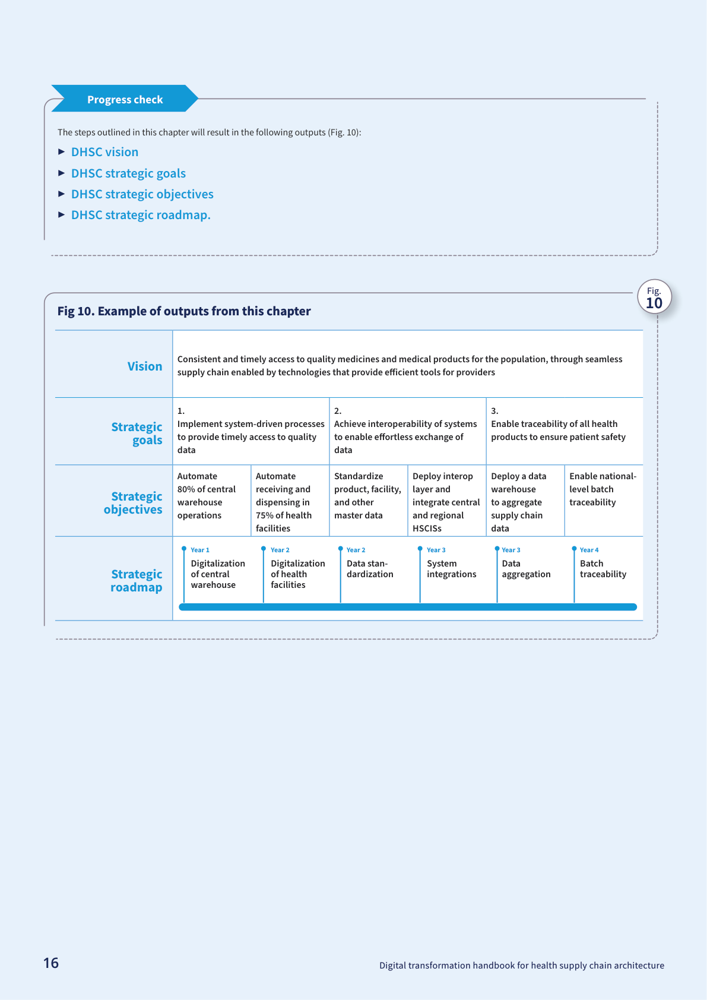</p>
<p><em>Source: WHO, Digital transformation handbook for health supply chain architecture, 2024, PDF page 26; rendered from the PDF's vector layer in the L1 entry.</em></p>
<p><em>Example of outputs from this chapter</em></p>
<p><a id="chap:ch02-dhsc-architecture"></a></p>
<h2 id="h-chap:ch02-dhsc-architecture">
  
  
    <a href="#h-chap:ch02-dhsc-architecture" class="anchor-heading" aria-labelledby="h-chap:ch02-dhsc-architecture"><svg viewBox="0 0 16 16" aria-hidden="true"><use xlink:href="#svg-link"></use></svg></a> Chapter 2. Defining the DHSC architecture
  
  
</h2>
    
<p><a id="sec:ch02-chapter-overview"></a></p>
<h3 id="h-sec:ch02-chapter-overview">
  
  
    <a href="#h-sec:ch02-chapter-overview" class="anchor-heading" aria-labelledby="h-sec:ch02-chapter-overview"><svg viewBox="0 0 16 16" aria-hidden="true"><use xlink:href="#svg-link"></use></svg></a> Chapter overview
  
  
</h3>
    
<p><a id="prose:ch02-page-027"></a><span class="block-actions" data-block="prose:ch02-page-027"><a class="ba-edit" href="https://github.com/litlfred/dth-sc/edit/main/folio/dth-sc/ch02-dhsc-architecture/p-ch02-page-027.md" title="Edit this block's source on GitHub (folio/dth-sc/ch02-dhsc-architecture/p-ch02-page-027.md)">✎ edit</a><a class="ba-feedback" href="https://github.com/litlfred/dth-sc/issues/new?title=Feedback+%5Bdth-sc%5D%3A+Chapter+overview+%E2%80%94+prose%3Ach02-page-027&amp;body=**Content%3A**+%60dth-sc%60%0A**Block%3A**+%60prose%3Ach02-page-027%60%0A**Section%3A**+Chapter+overview%0A**Source%3A**+https%3A%2F%2Fgithub.com%2Flitlfred%2Fdth-sc%2Fblob%2Fmain%2Ffolio%2Fdth-sc%2Fch02-dhsc-architecture%2Fp-ch02-page-027.md%0A%0A**Type%3A**+general+%7C+technical+%7C+editorial%0A%0A**Comment%3A**%0A%0A%0A**Proposed+change%3A**%0A" title="Give feedback on this block (opens a GitHub issue)">📣 feedback</a></span></p>
<ol>
<li>Defining a holistic <a href="../folio-assistant-core/glossary/instance/dth-sc/#dth-sc--dth-sc--digital-health-supply-chain" title="The knowledge and practice of adopting digital technologies to improve health supply chains and enable the delivery of quality-assured health products to individuals when and where they need them." class="fa-term">DHSC</a> strategy 2. Defining the DHSC architecture Defining the DHSC architecture 3. Planning for scalable implementation and sustainable operations 4. Using the DHSC to implement traceability Assess the current state of <a href="../folio-assistant-core/glossary/instance/dth-sc/#dth-sc--dth-sc--health-supply-chain-information-system" title="A paper-based or software tool that supports the management and/or operations of the health supply chain." class="fa-term">HSCISs</a> Define a target architecture Identify implementation activities and map them to strategic goals Step Step Step Chapter2 The following principles, informed by the Principles for Digital Development (Annex 1), can guide the development of the DHSC architecture.</li>
</ol>
<ul>
<li>Engage key stakeholders throughout the process to gain buy-in, understand diverse perspectives and ensure that activities meet the needs of all parts of the health supply chain.</li>
<li>Align with other architectures such as the country’s digital health architecture and IT architecture.</li>
<li>Define an architecture with system components aimed at improving the end-user experience, ensuring operational efficiency, and delivering high- quality services to individuals.</li>
<li>Strive for an ecosystem of cross-functional collaboration and interoperability.</li>
<li>Use, reuse and enhance existing resources, assets and capabilities.</li>
<li>Ensure that the architecture can scale to accommodate future adaptations and adjustments in response to evolving needs and emerging technology trends.</li>
<li>Incorporate inclusive architecture and technology approaches that consider infrastructure challenges such as unreliable network connectivity in remote supply chain locations.</li>
<li>Adopt open standards and open-source tools wherever feasible. The steps outlined in this chapter will result in the following outputs:</li>
<li>current state of HSCISs;</li>
<li>future-state DHSC architecture;</li>
<li>list of DHSC implementation activities mapped to strategic goals; and</li>
<li>high-level roadmap of DHSC implementations. Guiding principles Outputs</li>
</ul>
<p><a id="sec:ch02-is-a-dhsc-architecture-necessary-what-ar"></a></p>
<h3 id="h-sec:ch02-is-a-dhsc-architecture-necessary-what-ar">
  
  
    <a href="#h-sec:ch02-is-a-dhsc-architecture-necessary-what-ar" class="anchor-heading" aria-labelledby="h-sec:ch02-is-a-dhsc-architecture-necessary-what-ar"><svg viewBox="0 0 16 16" aria-hidden="true"><use xlink:href="#svg-link"></use></svg></a> Is a DHSC architecture necessary? What are the risks of forgoing one?
  
  
</h3>
    
<p><a id="prose:ch02-page-028"></a><span class="block-actions" data-block="prose:ch02-page-028"><a class="ba-edit" href="https://github.com/litlfred/dth-sc/edit/main/folio/dth-sc/ch02-dhsc-architecture/p-ch02-page-028.md" title="Edit this block's source on GitHub (folio/dth-sc/ch02-dhsc-architecture/p-ch02-page-028.md)">✎ edit</a><a class="ba-feedback" href="https://github.com/litlfred/dth-sc/issues/new?title=Feedback+%5Bdth-sc%5D%3A+Is+a+DHSC+architecture+necessary%3F+What+are+the+risks+of+forgoing+one%3F+%E2%80%94+prose%3Ach02-page-028&amp;body=**Content%3A**+%60dth-sc%60%0A**Block%3A**+%60prose%3Ach02-page-028%60%0A**Section%3A**+Is+a+DHSC+architecture+necessary%3F+What+are+the+risks+of+forgoing+one%3F%0A**Source%3A**+https%3A%2F%2Fgithub.com%2Flitlfred%2Fdth-sc%2Fblob%2Fmain%2Ffolio%2Fdth-sc%2Fch02-dhsc-architecture%2Fp-ch02-page-028.md%0A%0A**Type%3A**+general+%7C+technical+%7C+editorial%0A%0A**Comment%3A**%0A%0A%0A**Proposed+change%3A**%0A" title="Give feedback on this block (opens a GitHub issue)">📣 feedback</a></span>
Defining the <a href="../folio-assistant-core/glossary/instance/dth-sc/#dth-sc--dth-sc--digital-health-supply-chain" title="The knowledge and practice of adopting digital technologies to improve health supply chains and enable the delivery of quality-assured health products to individuals when and where they need them." class="fa-term">DHSC</a> architecture The application architecture, which is a component of the broader enterprise architecture, serves as a blueprint for the core systems and applications that are the building blocks of a DHSC. The architecture should comprehensively support all the supply chain functions, their data requirements and the need for interoperability between not only various supply chain functions but also between the entire ecosystem and other digital health systems (including health financing and insurance systems and regulatory systems). The DHSC architecture should align with the priorities of the country’s information and communications technology (ICT) architecture and the digital health architecture. Is a DHSC architecture necessary? The health supply chain comprises several business processes that ensure the availability of health products to individuals. Forecasting and supply planning processes ensure adequate supply to meet demand. Procurement and distribution processes ensure that medicines and health products are sourced and delivered to the right locations and are available to individuals when needed. Warehouse management processes support receiving, storage and management of inventory. Health supply chains should be able to quickly respond to exceptions such as stockouts and quality issues like product recalls. More importantly, they should support patient safety by ensuring that the products dispensed to and consumed by individuals are quality assured and are not falsified. Processes and supporting systems need to operate together by exchanging data to ensure efficient and effective delivery of health products to individuals. At the national level, the DHSC architecture will define the required functional and technical capabilities in supply chain systems to support forecasting and supply planning, procurement, order management, warehouse management and all other supply chain functions. At the subnational level, the architectural components will provide capabilities for requisitioning, inventory management, dispensing and other last-mile supply chain functions. These system capabilities will facilitate system-driven transactions, reducing manual data entry and delivering high-quality, real-time data. The DHSC architecture thus provides a holistic blueprint of all required systems and capabilities across all supply chain levels. The DHSC architecture outlines how the systems will interoperate and exchange data. It provides the necessary foundation, standards and digital components for the country to achieve the following (Fig. 11):</p>
<ul>
<li>timely visibility of the end-to-end health supply chain, enabling supply chain leaders to make informed decisions to deliver health products to individuals when and where they need them; and</li>
<li>the ability to track, trace and verify health products, enabling supply chain leaders to ensure that quality- assured products are delivered to individuals and to mitigate quality issues swiftly. What are the risks of forgoing a DHSC architecture? The lack of an overarching DHSC architecture leads to risks such as those listed below:</li>
<li>siloed and duplicative systems that lack the ability to adapt and scale, requiring more effort and money to maintain and sustain;</li>
<li>lack of compliance with global and open standards, resulting in a lack of interoperability among processes, systems and data, which in turn, affects the timely availability of aggregated data for visibility, analysis, exception management, reporting and decision- making;</li>
<li>laborious manual processes for aggregating, reconciling and triangulating data for accurate forecasting and planning, potentially resulting in an insufficient supply of products;</li>
<li>limited ability to track and trace commodities and verify the authenticity of products;</li>
<li>risk of having numerous software applications geared towards specific functions, without a comprehensive solutions perspective, which can result in isolated data that are difficult for other applications to access and thus less accessible for effective decision-making, service enhancement and achieving positive health outcomes; and</li>
<li>inability to achieve the desired level of digital transformation and systems maturity.</li>
</ul>
<p><a id="prose:ch02-page-029"></a><span class="block-actions" data-block="prose:ch02-page-029"><a class="ba-edit" href="https://github.com/litlfred/dth-sc/edit/main/folio/dth-sc/ch02-dhsc-architecture/p-ch02-page-029.md" title="Edit this block's source on GitHub (folio/dth-sc/ch02-dhsc-architecture/p-ch02-page-029.md)">✎ edit</a><a class="ba-feedback" href="https://github.com/litlfred/dth-sc/issues/new?title=Feedback+%5Bdth-sc%5D%3A+Is+a+DHSC+architecture+necessary%3F+What+are+the+risks+of+forgoing+one%3F+%E2%80%94+prose%3Ach02-page-029&amp;body=**Content%3A**+%60dth-sc%60%0A**Block%3A**+%60prose%3Ach02-page-029%60%0A**Section%3A**+Is+a+DHSC+architecture+necessary%3F+What+are+the+risks+of+forgoing+one%3F%0A**Source%3A**+https%3A%2F%2Fgithub.com%2Flitlfred%2Fdth-sc%2Fblob%2Fmain%2Ffolio%2Fdth-sc%2Fch02-dhsc-architecture%2Fp-ch02-page-029.md%0A%0A**Type%3A**+general+%7C+technical+%7C+editorial%0A%0A**Comment%3A**%0A%0A%0A**Proposed+change%3A**%0A" title="Give feedback on this block (opens a GitHub issue)">📣 feedback</a></span>
The following sections detail the steps to defining an overarching DHSC architecture. They also illustrate various architectural approaches that countries can adopt based on their health supply chain context and design.</p>
<ul>
<li>Step 1. Assess the current state of <a href="../folio-assistant-core/glossary/instance/dth-sc/#dth-sc--dth-sc--health-supply-chain-information-system" title="A paper-based or software tool that supports the management and/or operations of the health supply chain." class="fa-term">HSCISs</a>.</li>
<li>Step 2. Define a DHSC target architecture.</li>
<li>Step 3. Identify implementation activities and map them to strategic goals. Fig 11. Health supply chain end-to-end visibility and traceability Fig. End-to-end visibility GLOBAL LEVEL End-to-end visibility COUNTRY LEVEL Track and trace GLOBAL LEVEL Track and trace NATIONAL LEVEL Manufacturing Forecasting and planning Procurement Supplier and contract management Order management Shipping REGULATORY Customs Distribution Individuals CENTRAL WAREHOUSE Receiving CENTRAL WAREHOUSE Inventory management HEALTH FACILITY Dispensing REGIONAL WAREHOUSE Replenishment Defining the DHSC architecture</li>
</ul>
<p><a id="fig:11"></a><span class="block-actions" data-block="fig:11"><a class="ba-edit" href="https://github.com/litlfred/dth-sc/edit/main/folio/dth-sc/ch02-dhsc-architecture/f-ch02-fig-11.md" title="Edit this block's source on GitHub (folio/dth-sc/ch02-dhsc-architecture/f-ch02-fig-11.md)">✎ edit</a><a class="ba-feedback" href="https://github.com/litlfred/dth-sc/issues/new?title=Feedback+%5Bdth-sc%5D%3A+Is+a+DHSC+architecture+necessary%3F+What+are+the+risks+of+forgoing+one%3F+%E2%80%94+fig%3A11&amp;body=**Content%3A**+%60dth-sc%60%0A**Block%3A**+%60fig%3A11%60%0A**Section%3A**+Is+a+DHSC+architecture+necessary%3F+What+are+the+risks+of+forgoing+one%3F%0A**Source%3A**+https%3A%2F%2Fgithub.com%2Flitlfred%2Fdth-sc%2Fblob%2Fmain%2Ffolio%2Fdth-sc%2Fch02-dhsc-architecture%2Ff-ch02-fig-11.md%0A%0A**Type%3A**+general+%7C+technical+%7C+editorial%0A%0A**Comment%3A**%0A%0A%0A**Proposed+change%3A**%0A" title="Give feedback on this block (opens a GitHub issue)">📣 feedback</a></span>
<strong>Figure 11.</strong> <a href="#fig:11" class="block-anchor" aria-label="Link to Figure 11" title="Link to Figure 11"><svg viewBox="0 0 16 16" width="14" height="14" fill="currentColor" aria-hidden="true"><use xlink:href="#svg-link"></use></svg></a></p>
<p>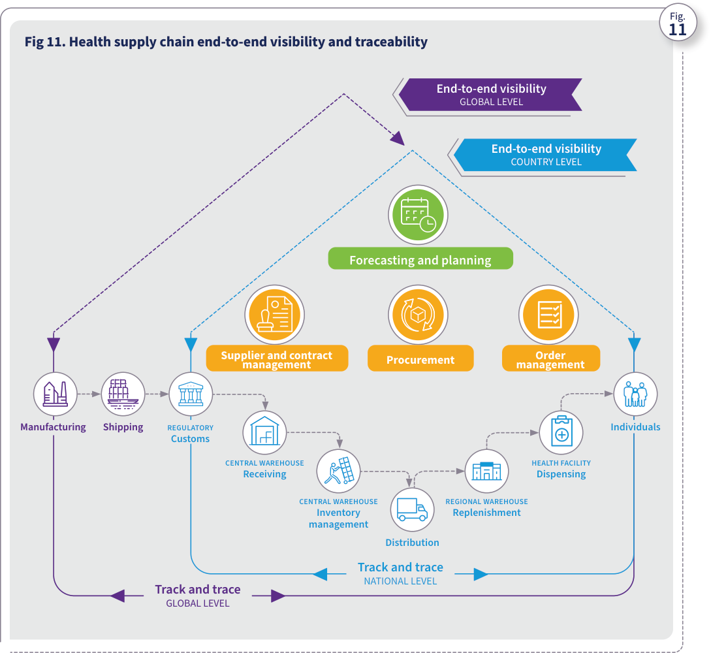</p>
<p><em>Source: WHO, Digital transformation handbook for health supply chain architecture, 2024, PDF page 29; rendered from the PDF's vector layer in the L1 entry.</em></p>
<p><em>Health supply chain end-to-end visibility and traceability</em></p>
<p><a id="sec:ch02-step-1-assess-the-current-state-of-hscis"></a></p>
<h3 id="h-sec:ch02-step-1-assess-the-current-state-of-hscis">
  
  
    <a href="#h-sec:ch02-step-1-assess-the-current-state-of-hscis" class="anchor-heading" aria-labelledby="h-sec:ch02-step-1-assess-the-current-state-of-hscis"><svg viewBox="0 0 16 16" aria-hidden="true"><use xlink:href="#svg-link"></use></svg></a> Step 1. Assess the current state of HSCISs
  
  
</h3>
    
<p><a id="prose:ch02-page-030"></a><span class="block-actions" data-block="prose:ch02-page-030"><a class="ba-edit" href="https://github.com/litlfred/dth-sc/edit/main/folio/dth-sc/ch02-dhsc-architecture/p-ch02-page-030.md" title="Edit this block's source on GitHub (folio/dth-sc/ch02-dhsc-architecture/p-ch02-page-030.md)">✎ edit</a><a class="ba-feedback" href="https://github.com/litlfred/dth-sc/issues/new?title=Feedback+%5Bdth-sc%5D%3A+Step+1.+Assess+the+current+state+of+HSCISs+%E2%80%94+prose%3Ach02-page-030&amp;body=**Content%3A**+%60dth-sc%60%0A**Block%3A**+%60prose%3Ach02-page-030%60%0A**Section%3A**+Step+1.+Assess+the+current+state+of+HSCISs%0A**Source%3A**+https%3A%2F%2Fgithub.com%2Flitlfred%2Fdth-sc%2Fblob%2Fmain%2Ffolio%2Fdth-sc%2Fch02-dhsc-architecture%2Fp-ch02-page-030.md%0A%0A**Type%3A**+general+%7C+technical+%7C+editorial%0A%0A**Comment%3A**%0A%0A%0A**Proposed+change%3A**%0A" title="Give feedback on this block (opens a GitHub issue)">📣 feedback</a></span>
Assess the current state of <a href="../folio-assistant-core/glossary/instance/dth-sc/#dth-sc--dth-sc--health-supply-chain-information-system" title="A paper-based or software tool that supports the management and/or operations of the health supply chain." class="fa-term">HSCISs</a> Step Assessing the current state of HSCISs involves a thorough evaluation of their capabilities, utilization, technical challenges and overall system maturity. This step helps identify strengths, gaps, inefficiencies and areas for improvement in existing systems that can be duly considered while defining the architecture. INPUTS TASKS OUTPUTS</p>
<ul>
<li>NSCA outcomes (if available)</li>
<li>SCISMM assessment outcomes (if available)</li>
<li><a href="../folio-assistant-core/glossary/instance/dth-sc/#dth-sc--dth-sc--digital-health-supply-chain" title="The knowledge and practice of adopting digital technologies to improve health supply chains and enable the delivery of quality-assured health products to individuals when and where they need them." class="fa-term">DHSC</a> strategic goals and objectives</li>
<li>National digital health strategy</li>
<li>Landscape analysis of existing hardware, current state of infrastructure (electricity, internet, etc.), existing software technologies and current state of master data (e.g., product and facility data) management 1. Gather the list and details of existing HSCISs and map them to appropriate services (such as supply chain functions, master data management and analytics). 2. Conduct SCISMM assessment (if not already done). 3. Analyse SCISMM assessment outputs to identify HSCIS gaps that need to be addressed to achieve the DHSC strategic goals.</li>
<li>List of existing HSCISs</li>
<li>SCISMM assessment report (if conducted as part of this step)</li>
<li>HSCIS gaps that need to be addressed to achieve the DHSC strategic goals RESOURCES Template for listing HSCISs (Annex 5) SCISMM (16) Potential risks Mitigation strategies No partner or funding to conduct SCISMM assessments Identify needed assessment activities during the annual work planning process in order to budget for, identify and request funding from partners. Master data are not identified as an essential building block in the current state assessment Conduct holistic assessments of the current HSCISs using SCISMM (16) to identify gaps in tools and governance and highlight impacts on interoperability, data quality, supply chain visibility and the ability to track and trace. Some HSCISs are assigned too much priority for inclusion in the architecture while user adoption and efficacy are low Plan and perform assessments such as SCISMM (16) on an annual basis to analyse utilization gaps and identify ways to mitigate gaps through continuous user training and making utilization of systems the only way to perform processes.</li>
</ul>
<p><a id="prose:ch02-page-031"></a><span class="block-actions" data-block="prose:ch02-page-031"><a class="ba-edit" href="https://github.com/litlfred/dth-sc/edit/main/folio/dth-sc/ch02-dhsc-architecture/p-ch02-page-031.md" title="Edit this block's source on GitHub (folio/dth-sc/ch02-dhsc-architecture/p-ch02-page-031.md)">✎ edit</a><a class="ba-feedback" href="https://github.com/litlfred/dth-sc/issues/new?title=Feedback+%5Bdth-sc%5D%3A+Step+1.+Assess+the+current+state+of+HSCISs+%E2%80%94+prose%3Ach02-page-031&amp;body=**Content%3A**+%60dth-sc%60%0A**Block%3A**+%60prose%3Ach02-page-031%60%0A**Section%3A**+Step+1.+Assess+the+current+state+of+HSCISs%0A**Source%3A**+https%3A%2F%2Fgithub.com%2Flitlfred%2Fdth-sc%2Fblob%2Fmain%2Ffolio%2Fdth-sc%2Fch02-dhsc-architecture%2Fp-ch02-page-031.md%0A%0A**Type%3A**+general+%7C+technical+%7C+editorial%0A%0A**Comment%3A**%0A%0A%0A**Proposed+change%3A**%0A" title="Give feedback on this block (opens a GitHub issue)">📣 feedback</a></span></p>
<ul>
<li>Manually driven processes using paper based or stand- alone reporting based tools ➢ E.g. - Manual order data entry into spreadsheets or basic systems on monthly basis</li>
<li>Basic automation of processes through transactional systems</li>
<li>System driven processes ➢ E.g. - Real time capture of requisitions in an order management system</li>
<li>Advanced digitalization of majority of processes</li>
<li>Integrated workflows across critical supply chain functions</li>
<li>Automated processes leveraging data shared across systems ➢ E.g. - Automated inventory allocation</li>
<li>Visibility across all supply chain functions enabled by automated data exchange across all supply chain systems</li>
<li>Integration of all supply chain functions ➢ E.g. - Planning based on real- time visibility of end-to-end supply chain operations</li>
<li>Collaborative processes across various Ecosystems</li>
<li>All supply chain systems integrated with other ecosystems such as HIS and regulatory systems</li>
<li>Systems integrated for automated data exchange with Global systems ➢ E.g. - Country systems integrated with global platforms such as GFPVAN Level 1 2 Level Level 3 Level 4 Level 5 Reporting Based (Manual) Transactional (Siloed) Advanced Digitalization (Integrated) End to End Visibility (Exchanged) Digital Ecosystem (Collaborated) SCISMM - Maturity Levels Fig 12. SCISMM maturity levels for HSCISs Fig. Source: reproduced by permission of the publisher from Digital Square; found via its web page on SCISMM (16). The appropriate DHSC architecture will depend on the current maturity and state of the supply chain information systems that support various supply chain functions. Tools such as SCISMM (16) can help with assessing the current maturity level and the level to advance to, depending on the country’s priorities and readiness. SCISMM provides a continuum of maturity for systems that support health supply chain functions (Fig. 12), including the level of automation and digitalization of processes that are supported by HSCISs. Defining the DHSC architecture</li>
</ul>
<p><a id="prose:ch02-fig-12-third-party"></a><span class="block-actions" data-block="prose:ch02-fig-12-third-party"><a class="ba-edit" href="https://github.com/litlfred/dth-sc/edit/main/folio/dth-sc/ch02-dhsc-architecture/p-ch02-fig-12-third-party.md" title="Edit this block's source on GitHub (folio/dth-sc/ch02-dhsc-architecture/p-ch02-fig-12-third-party.md)">✎ edit</a><a class="ba-feedback" href="https://github.com/litlfred/dth-sc/issues/new?title=Feedback+%5Bdth-sc%5D%3A+Step+1.+Assess+the+current+state+of+HSCISs+%E2%80%94+prose%3Ach02-fig-12-third-party&amp;body=**Content%3A**+%60dth-sc%60%0A**Block%3A**+%60prose%3Ach02-fig-12-third-party%60%0A**Section%3A**+Step+1.+Assess+the+current+state+of+HSCISs%0A**Source%3A**+https%3A%2F%2Fgithub.com%2Flitlfred%2Fdth-sc%2Fblob%2Fmain%2Ffolio%2Fdth-sc%2Fch02-dhsc-architecture%2Fp-ch02-fig-12-third-party.md%0A%0A**Type%3A**+general+%7C+technical+%7C+editorial%0A%0A**Comment%3A**%0A%0A%0A**Proposed+change%3A**%0A" title="Give feedback on this block (opens a GitHub issue)">📣 feedback</a></span>
Fig. 12. SCISMM maturity levels for HSCISs: reproduced in the handbook by permission of the publisher, Digital Square (SCISMM, reference 16). It is third-party material outside the handbook's CC BY-NC-SA 3.0 IGO licence, so it is not copied here; see the handbook, PDF page 31.</p>
<p><a id="sec:ch02-step-2-define-a-target-dhsc-architecture"></a></p>
<h3 id="h-sec:ch02-step-2-define-a-target-dhsc-architecture">
  
  
    <a href="#h-sec:ch02-step-2-define-a-target-dhsc-architecture" class="anchor-heading" aria-labelledby="h-sec:ch02-step-2-define-a-target-dhsc-architecture"><svg viewBox="0 0 16 16" aria-hidden="true"><use xlink:href="#svg-link"></use></svg></a> Step 2. Define a target DHSC architecture; DHSC architecture framework
  
  
</h3>
    
<p><a id="prose:ch02-page-032"></a><span class="block-actions" data-block="prose:ch02-page-032"><a class="ba-edit" href="https://github.com/litlfred/dth-sc/edit/main/folio/dth-sc/ch02-dhsc-architecture/p-ch02-page-032.md" title="Edit this block's source on GitHub (folio/dth-sc/ch02-dhsc-architecture/p-ch02-page-032.md)">✎ edit</a><a class="ba-feedback" href="https://github.com/litlfred/dth-sc/issues/new?title=Feedback+%5Bdth-sc%5D%3A+Step+2.+Define+a+target+DHSC+architecture%3B+DHSC+architecture+framework+%E2%80%94+prose%3Ach02-page-032&amp;body=**Content%3A**+%60dth-sc%60%0A**Block%3A**+%60prose%3Ach02-page-032%60%0A**Section%3A**+Step+2.+Define+a+target+DHSC+architecture%3B+DHSC+architecture+framework%0A**Source%3A**+https%3A%2F%2Fgithub.com%2Flitlfred%2Fdth-sc%2Fblob%2Fmain%2Ffolio%2Fdth-sc%2Fch02-dhsc-architecture%2Fp-ch02-page-032.md%0A%0A**Type%3A**+general+%7C+technical+%7C+editorial%0A%0A**Comment%3A**%0A%0A%0A**Proposed+change%3A**%0A" title="Give feedback on this block (opens a GitHub issue)">📣 feedback</a></span>
<a href="../folio-assistant-core/glossary/instance/dth-sc/#dth-sc--dth-sc--digital-health-supply-chain" title="The knowledge and practice of adopting digital technologies to improve health supply chains and enable the delivery of quality-assured health products to individuals when and where they need them." class="fa-term">DHSC</a> architecture framework The DIIG outlines the components of a digital health enterprise architecture (Fig. 13). DHSC architectural components relate to the business domain services within this architecture. Fig. 14 shows a DHSC architecture framework with components that support services such as foundational services, supply chain functional services, analytics, interoperability and traceability. This framework is based on the guiding principles of TOGAF and the OpenHIE framework. Define a target DHSC architecture Step This step involves defining a target DHSC architecture to ensure that all of the <a href="../folio-assistant-core/glossary/instance/dth-sc/#dth-sc--dth-sc--health-supply-chain-information-system" title="A paper-based or software tool that supports the management and/or operations of the health supply chain." class="fa-term">HSCISs</a> are optimally structured and aligned with strategic goals. INPUTS TASKS OUTPUTS</p>
<ul>
<li>Assessment of the supply chain to identify opportunities for digital transformation</li>
<li>List of existing HSCISs</li>
<li>SCISMM assessment report</li>
<li>HSCIS gaps that need to be addressed to achieve the DHSC strategic goals 1. Draw the current-state architecture of the HSCISs by mapping existing systems against the DHSC architecture framework. 2. Identify gaps and necessary digital interventions based on the current state. 3. Define a future state of the DHSC architecture that considers core supply chain functions and foundational components while using existing digital assets where appropriate.</li>
<li>Current-state architecture of health supply chain systems</li>
<li>Future state of the DHSC architecture RESOURCES DHSC architecture framework (described later in this section) SCISMM (16) TSS v2 (20) Country examples (Chapter 5) Potential risks Mitigation strategies Design of the DHSC architecture not aligning with best practices</li>
<li>Consult resources such as this handbook, SCISMM (16) and TSS v2 (20), along with principles such as the Principles for Digital Development (Annex 1), TOGAF (18) and the OpenHIE (17) framework, to help ensure alignment with best practices.</li>
<li>Engage with the practitioner community through groups such as the DHSC small working group to seek feedback on design. Risk of choosing technology solutions prematurely, without considering innovation trends and potential future changes, resulting in those solutions quickly becoming outdated or challenging to adapt In addition to following the outlined DHSC architecture framework, consider scalability and sustainability when selecting digital solutions for the health supply chain. A key mandate of the TWG should be oversight in this area. BEST PRACTICE</li>
<li>While upstream health supply chain levels such as the central warehouse use advanced systems to manage inventory and distribution, it is important to have sufficient system coverage at the lowest supply chain level to capture actual consumption. Health supply chains typically rely on inventory distribution data from warehouses or data on inventory issues from pharmacies to determine consumption. However, actual consumption should include what is dispensed to individuals, product expiries, wastages and inventory shrinkage. Systems, especially at the last mile of the supply chain, should have the ability to track and capture batch details and serial numbers, where available, as part of product expiries, wastages, inventory shrinkage and dispensation.</li>
</ul>
<p><a id="prose:ch02-page-033"></a><span class="block-actions" data-block="prose:ch02-page-033"><a class="ba-edit" href="https://github.com/litlfred/dth-sc/edit/main/folio/dth-sc/ch02-dhsc-architecture/p-ch02-page-033.md" title="Edit this block's source on GitHub (folio/dth-sc/ch02-dhsc-architecture/p-ch02-page-033.md)">✎ edit</a><a class="ba-feedback" href="https://github.com/litlfred/dth-sc/issues/new?title=Feedback+%5Bdth-sc%5D%3A+Step+2.+Define+a+target+DHSC+architecture%3B+DHSC+architecture+framework+%E2%80%94+prose%3Ach02-page-033&amp;body=**Content%3A**+%60dth-sc%60%0A**Block%3A**+%60prose%3Ach02-page-033%60%0A**Section%3A**+Step+2.+Define+a+target+DHSC+architecture%3B+DHSC+architecture+framework%0A**Source%3A**+https%3A%2F%2Fgithub.com%2Flitlfred%2Fdth-sc%2Fblob%2Fmain%2Ffolio%2Fdth-sc%2Fch02-dhsc-architecture%2Fp-ch02-page-033.md%0A%0A**Type%3A**+general+%7C+technical+%7C+editorial%0A%0A**Comment%3A**%0A%0A%0A**Proposed+change%3A**%0A" title="Give feedback on this block (opens a GitHub issue)">📣 feedback</a></span>
Fig 13. DIIG digital health enterprise architecture framework Fig. SHARED SERVICES DATA SERVICES DATA SOURCES Institution-based health info. system and data sources Population-based health info system and data sources Analytics, dashboards, aids, repositories Digital health platform Shared services Business domain services Registry services Terminology services Health worker registry Client registry Product registry Facility registry Logistics mgmt info system Shared health record Health mgmt info system Digital and nondigital data sets sourced from processes that systematically record information within health institutions and facilities (e.g., Service Availability and Readiness Assessment) Provides software capabilities, or “services,” that are specific to health care and may be used by other applications across the digital health enterprise Provides software capabilities, or “services,” that are canonical/ master “lists” and are enforced by specified governance mechanisms Digital and nondigital data sets sourced from processes that systematically record information about members of a population (e.g., census, Demographic and Health Surveys) Data tools that are used to facilitate decision- making (e.g., GIS) INTER- OPERABILITY LAYER Enabling components Provides software capabilities to support managed data exchange and interoperability between applications and services across the digital health enterprise APPLICATIONS WITH INTERVENTIONS FOR: Health programme Use case Health programme Use case A B C D <a href="../folio-assistant-core/glossary/instance/dpi-h-ra/#dpi-h-ra--dpi-h-ra--point-of-service-applications" title="Point-of-service applications are end-user application components (IT systems or software tools) used by individuals directly engaged in healthcare—such as clinicians, community health workers, and patients—that enable interaction with the broader healthcare ecosystem." class="fa-term">Point-of-service applications</a> Applications that are reused within more than one use case or health programme area Applications that are uniquely used for only one use case or health programme area Investment in new software Funded software under development Investment in strengthening software Software for decommissioning Funded fully functional software Investment in scaling functional software LEGEND Reused point-of- service application Unique point-of- service application ENTERPRISE EXTERNAL SYSTEMS Nonhealth digital applications, services, interoperability- enabling components and data sources with capabilities that can be used by the digital health enterprise (e.g., national unique identification system, national procurement system, national weather service data sources) Source: adapted from the 2020 WHO Digital Implementation Investment Guide (1). Defining the DHSC architecture</p>
<p><a id="fig:13"></a><span class="block-actions" data-block="fig:13"><a class="ba-edit" href="https://github.com/litlfred/dth-sc/edit/main/folio/dth-sc/ch02-dhsc-architecture/f-ch02-fig-13.md" title="Edit this block's source on GitHub (folio/dth-sc/ch02-dhsc-architecture/f-ch02-fig-13.md)">✎ edit</a><a class="ba-feedback" href="https://github.com/litlfred/dth-sc/issues/new?title=Feedback+%5Bdth-sc%5D%3A+Step+2.+Define+a+target+DHSC+architecture%3B+DHSC+architecture+framework+%E2%80%94+fig%3A13&amp;body=**Content%3A**+%60dth-sc%60%0A**Block%3A**+%60fig%3A13%60%0A**Section%3A**+Step+2.+Define+a+target+DHSC+architecture%3B+DHSC+architecture+framework%0A**Source%3A**+https%3A%2F%2Fgithub.com%2Flitlfred%2Fdth-sc%2Fblob%2Fmain%2Ffolio%2Fdth-sc%2Fch02-dhsc-architecture%2Ff-ch02-fig-13.md%0A%0A**Type%3A**+general+%7C+technical+%7C+editorial%0A%0A**Comment%3A**%0A%0A%0A**Proposed+change%3A**%0A" title="Give feedback on this block (opens a GitHub issue)">📣 feedback</a></span>
<strong>Figure 13.</strong> <a href="#fig:13" class="block-anchor" aria-label="Link to Figure 13" title="Link to Figure 13"><svg viewBox="0 0 16 16" width="14" height="14" fill="currentColor" aria-hidden="true"><use xlink:href="#svg-link"></use></svg></a></p>
<p>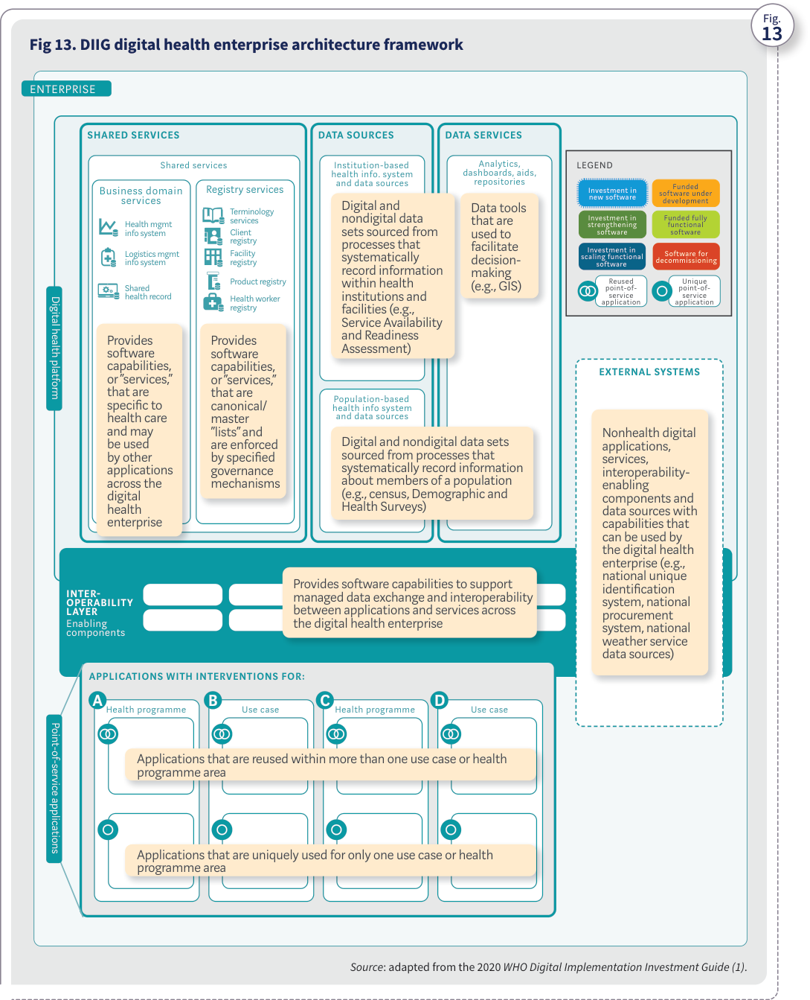</p>
<p><em>Source: WHO, Digital transformation handbook for health supply chain architecture, 2024, PDF page 33; rendered from the PDF's vector layer in the L1 entry.</em></p>
<p><em>DIIG digital health enterprise architecture framework</em></p>
<p><a id="prose:ch02-page-034"></a><span class="block-actions" data-block="prose:ch02-page-034"><a class="ba-edit" href="https://github.com/litlfred/dth-sc/edit/main/folio/dth-sc/ch02-dhsc-architecture/p-ch02-page-034.md" title="Edit this block's source on GitHub (folio/dth-sc/ch02-dhsc-architecture/p-ch02-page-034.md)">✎ edit</a><a class="ba-feedback" href="https://github.com/litlfred/dth-sc/issues/new?title=Feedback+%5Bdth-sc%5D%3A+Step+2.+Define+a+target+DHSC+architecture%3B+DHSC+architecture+framework+%E2%80%94+prose%3Ach02-page-034&amp;body=**Content%3A**+%60dth-sc%60%0A**Block%3A**+%60prose%3Ach02-page-034%60%0A**Section%3A**+Step+2.+Define+a+target+DHSC+architecture%3B+DHSC+architecture+framework%0A**Source%3A**+https%3A%2F%2Fgithub.com%2Flitlfred%2Fdth-sc%2Fblob%2Fmain%2Ffolio%2Fdth-sc%2Fch02-dhsc-architecture%2Fp-ch02-page-034.md%0A%0A**Type%3A**+general+%7C+technical+%7C+editorial%0A%0A**Comment%3A**%0A%0A%0A**Proposed+change%3A**%0A" title="Give feedback on this block (opens a GitHub issue)">📣 feedback</a></span>
Fig 14. DHSC architecture framework Fig. INTER- OPERABILITY LAYER Enabling components Authentication Orchestration Encryption Validation Transformation Translation Components that support data exchange and interoperability across the DHSC enterprise. OpenHIM is a useful open-source reference when planning for these capabilities. HEALTH SUPPLY CHAIN INFORMATION SYSTEMS Forecasting &#x26; planning Procurement Order management Supplier and contract management Warehouse management Transportation management Cold chain management Dispensing Software capabilities that support various health supply chain services. SCISMM and TSS v2 can be useful resources in planning and implementing these capabilities. EXTERNAL SYSTEMS Systems and data repositories (e.g., product master data and serialization data) that may be used by the DHSC enterprise. DIGITAL HEALTH SUPPLY CHAIN ENTERPRISE SHARED SERVICES Foundational components Product registry Supplier registry Facility registry Digital ecosystems DATA SERVICES Analytics <a href="../folio-assistant-core/glossary/instance/dth-sc/#dth-sc--dth-sc--traceability" title="The ability to trace something." class="fa-term">Traceability</a> Data tools that help aggregate and analyse data to support decision- making and traceability. Other digital systems that may interoperate with DHSC to enable a collaborative ecosystem. Data warehouse Product verification Supply chain reports Track and trace Manufacturer systems Regulatory systems Data repositories Finance and insurance systems Global platforms Health mgmt. info systems Quality systems Services that organize and manage standardized master lists that will be referred to by systems across the DHSC enterprise.</p>
<p><a id="fig:14"></a><span class="block-actions" data-block="fig:14"><a class="ba-edit" href="https://github.com/litlfred/dth-sc/edit/main/folio/dth-sc/ch02-dhsc-architecture/f-ch02-fig-14.md" title="Edit this block's source on GitHub (folio/dth-sc/ch02-dhsc-architecture/f-ch02-fig-14.md)">✎ edit</a><a class="ba-feedback" href="https://github.com/litlfred/dth-sc/issues/new?title=Feedback+%5Bdth-sc%5D%3A+Step+2.+Define+a+target+DHSC+architecture%3B+DHSC+architecture+framework+%E2%80%94+fig%3A14&amp;body=**Content%3A**+%60dth-sc%60%0A**Block%3A**+%60fig%3A14%60%0A**Section%3A**+Step+2.+Define+a+target+DHSC+architecture%3B+DHSC+architecture+framework%0A**Source%3A**+https%3A%2F%2Fgithub.com%2Flitlfred%2Fdth-sc%2Fblob%2Fmain%2Ffolio%2Fdth-sc%2Fch02-dhsc-architecture%2Ff-ch02-fig-14.md%0A%0A**Type%3A**+general+%7C+technical+%7C+editorial%0A%0A**Comment%3A**%0A%0A%0A**Proposed+change%3A**%0A" title="Give feedback on this block (opens a GitHub issue)">📣 feedback</a></span>
<strong>Figure 14.</strong> <a href="#fig:14" class="block-anchor" aria-label="Link to Figure 14" title="Link to Figure 14"><svg viewBox="0 0 16 16" width="14" height="14" fill="currentColor" aria-hidden="true"><use xlink:href="#svg-link"></use></svg></a></p>
<p>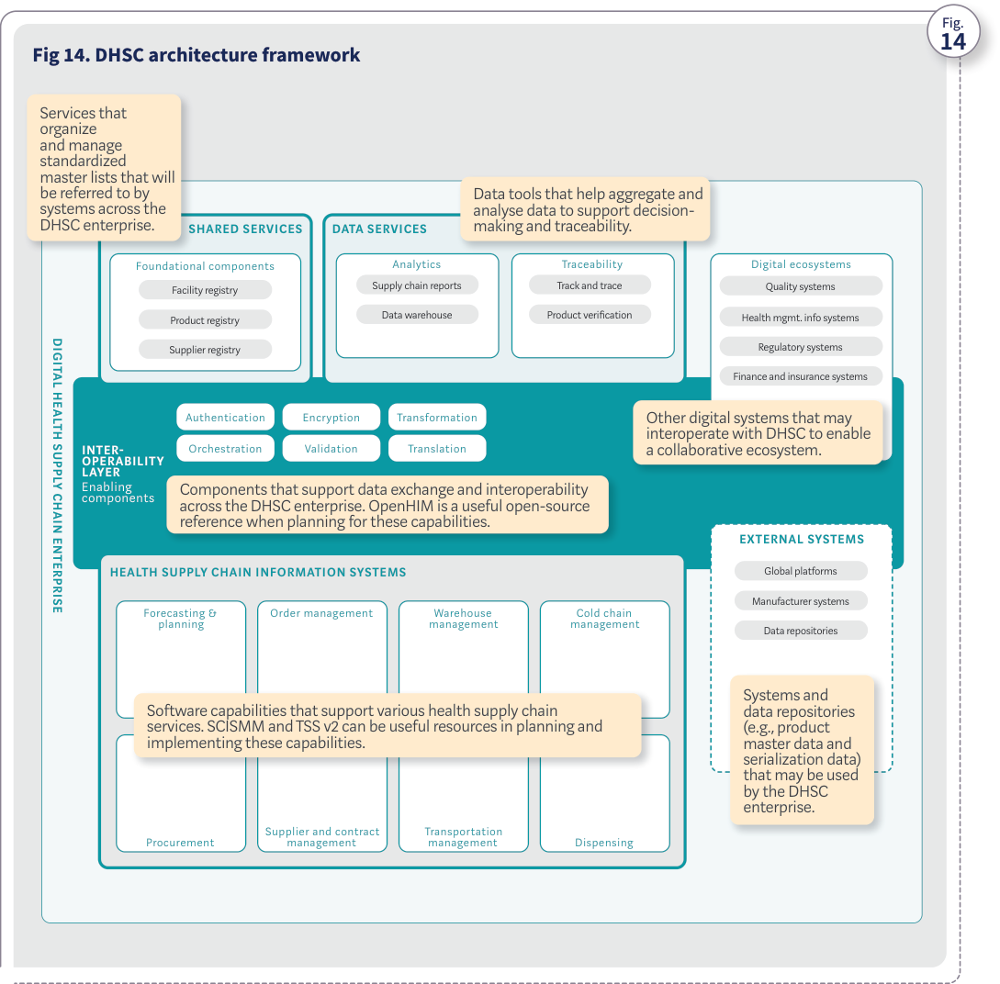</p>
<p><em>Source: WHO, Digital transformation handbook for health supply chain architecture, 2024, PDF page 34; rendered from the PDF's vector layer in the L1 entry.</em></p>
<p><em>DHSC architecture framework</em></p>
<p><a id="prose:ch02-page-035"></a><span class="block-actions" data-block="prose:ch02-page-035"><a class="ba-edit" href="https://github.com/litlfred/dth-sc/edit/main/folio/dth-sc/ch02-dhsc-architecture/p-ch02-page-035.md" title="Edit this block's source on GitHub (folio/dth-sc/ch02-dhsc-architecture/p-ch02-page-035.md)">✎ edit</a><a class="ba-feedback" href="https://github.com/litlfred/dth-sc/issues/new?title=Feedback+%5Bdth-sc%5D%3A+Step+2.+Define+a+target+DHSC+architecture%3B+DHSC+architecture+framework+%E2%80%94+prose%3Ach02-page-035&amp;body=**Content%3A**+%60dth-sc%60%0A**Block%3A**+%60prose%3Ach02-page-035%60%0A**Section%3A**+Step+2.+Define+a+target+DHSC+architecture%3B+DHSC+architecture+framework%0A**Source%3A**+https%3A%2F%2Fgithub.com%2Flitlfred%2Fdth-sc%2Fblob%2Fmain%2Ffolio%2Fdth-sc%2Fch02-dhsc-architecture%2Fp-ch02-page-035.md%0A%0A**Type%3A**+general+%7C+technical+%7C+editorial%0A%0A**Comment%3A**%0A%0A%0A**Proposed+change%3A**%0A" title="Give feedback on this block (opens a GitHub issue)">📣 feedback</a></span>
The key components are as follows.</p>
<ul>
<li>Foundational components. These components provide system capabilities for organizing and managing master data such as product, facility and supplier data. They complement other registries, such as the client registry and terminology services, in the digital health enterprise architecture. These components are foundational in that they enable interoperability of transactional data across health supply chain information systems and processes. They ensure a uniform and standardized referencing of products, facilities and suppliers across processes, including those for planning, order management and warehouse management.</li>
<li>Interoperability layer. This component facilitates the exchange of data across various systems as well as across levels of the health system. Interoperability of DSHC systems and DHSC with other digital ecosystems is essential to ensure seamless data exchange that facilitates efficient supply chain operations and supports patient safety by enabling commodity traceability. The use of an interoperability layer eliminates the need for point-to-point integrations of systems, which over time are not sustainable and are expensive to maintain. With the interoperability layer, systems that share data with other systems need to publish data only once. The interoperability layer can transform the data as needed and route them to multiple consuming systems. Any future integrations can be accomplished by integrating with the interoperability layer without disrupting existing systems and their integrations.</li>
<li>HSCISs. These systems support the various supply chain processes. Note that one system or digital platform might support one or more supply chain processes. For example, an enterprise resource planning (ERP) system could support procurement, order management and warehouse management processes. Resources such as SCISMM, TSS v2 and the IHE white paper on the supply of products for health care (23) provide details on the functional and nonfunctional requirements of various HSCISs as well as foundational and data management capabilities such as product master data management and interoperability. These resources specify what capabilities should be supported by each of the components within the “health supply chain information systems” layer.</li>
<li>Data services. These include components that support data aggregation and analysis. Digital infrastructure such as the data warehouse and reporting and analytics tools would be part of the analytical components of these services. These components also include traceability services that use the aggregated supply chain data to enable health product tracking, tracing and verification. (See Chapter 4 for more details on how the DHSC can enable traceability capabilities.)</li>
<li>External systems. These include systems that are outside the public health ecosystem but may integrate with it to exchange data, including manufacturers’ systems, global platforms developed by funders or procurement agencies, and global or regional data repositories that aggregate master or transactional data.</li>
<li>Digital ecosystems. These are other digital ecosystems that benefit from health supply chain data. Examples include the following:</li>
<li>regulatory systems that combine supply chain data from the dispensing system with health information and individuals’ data to conduct post-market surveillance and pharmacovigilance;</li>
<li>regulatory systems that use supply chain data such as data on inventory or products dispensed from various facilities to perform product recalls in the event of quality issues;</li>
<li>finance and insurance systems that combine data from the dispensing system with individuals’ information to verify and process insurance claims; and</li>
<li>laboratory or quality monitoring systems that integrate with HSCISs to trigger alerts on quality issues or trigger swift product quarantines or recalls. Illustrative architectural approaches and governance options Countries often have a mixture of needs and capabilities that should be reflected in their DHSC architecture. They can adopt an architecture framework using an approach that aligns with their supply chain design and level of digital maturity. This section provides examples of architectures that are based on digital maturity and examples based on supply chain design (with different governance options). In practice, however, both factors will help determine the appropriate architecture framework. The examples based on digital maturity use the SCISMM maturity levels. Levels 1 and 2 involve manual data entry and siloed systems, so this section focuses on the higher maturity levels. Defining the DHSC architecture</li>
</ul>
<p><a id="sec:ch02-illustrative-architectural-approaches-an"></a></p>
<h3 id="h-sec:ch02-illustrative-architectural-approaches-an">
  
  
    <a href="#h-sec:ch02-illustrative-architectural-approaches-an" class="anchor-heading" aria-labelledby="h-sec:ch02-illustrative-architectural-approaches-an"><svg viewBox="0 0 16 16" aria-hidden="true"><use xlink:href="#svg-link"></use></svg></a> Illustrative architectural approaches and governance options
  
  
</h3>
    
<p><a id="prose:ch02-page-036"></a><span class="block-actions" data-block="prose:ch02-page-036"><a class="ba-edit" href="https://github.com/litlfred/dth-sc/edit/main/folio/dth-sc/ch02-dhsc-architecture/p-ch02-page-036.md" title="Edit this block's source on GitHub (folio/dth-sc/ch02-dhsc-architecture/p-ch02-page-036.md)">✎ edit</a><a class="ba-feedback" href="https://github.com/litlfred/dth-sc/issues/new?title=Feedback+%5Bdth-sc%5D%3A+Illustrative+architectural+approaches+and+governance+options+%E2%80%94+prose%3Ach02-page-036&amp;body=**Content%3A**+%60dth-sc%60%0A**Block%3A**+%60prose%3Ach02-page-036%60%0A**Section%3A**+Illustrative+architectural+approaches+and+governance+options%0A**Source%3A**+https%3A%2F%2Fgithub.com%2Flitlfred%2Fdth-sc%2Fblob%2Fmain%2Ffolio%2Fdth-sc%2Fch02-dhsc-architecture%2Fp-ch02-page-036.md%0A%0A**Type%3A**+general+%7C+technical+%7C+editorial%0A%0A**Comment%3A**%0A%0A%0A**Proposed+change%3A**%0A" title="Give feedback on this block (opens a GitHub issue)">📣 feedback</a></span></p>
<ul>
<li>Maturity-based architecture: moving from SCISMM Level 3 to Level 4. This architectural approach helps countries advance their supply chain systems from advanced digitalization and point-to-point integration (Level 3) to end-to-end integration and visibility by digitalizing key health supply chain processes and implementing standards-based information exchange using intermediaries like an interoperability layer (Level 4) (Fig. 15). Fig 15. Maturity-based architecture: moving from SCISMM Level 3 to Level 4 Fig. INTEROPERABILITY LAYER Enabling components HEALTH SUPPLY CHAIN INFORMATION SYSTEMS Forecasting and planning Procurement Order management Supplier and contract management Warehouse management Transportation management Cold chain management Dispensing DIGITAL HEALTH SUPPLY CHAIN ENTERPRISE DATA SERVICES SHARED SERVICES Authentication Orchestration Encryption Validation Transformation Translation Foundational components Foundational components Foundational components Data warehouse Supply chain reports Product verification Track and trace Product registry Supplier registry Facility registry</li>
</ul>
<p><a id="fig:15"></a><span class="block-actions" data-block="fig:15"><a class="ba-edit" href="https://github.com/litlfred/dth-sc/edit/main/folio/dth-sc/ch02-dhsc-architecture/f-ch02-fig-15.md" title="Edit this block's source on GitHub (folio/dth-sc/ch02-dhsc-architecture/f-ch02-fig-15.md)">✎ edit</a><a class="ba-feedback" href="https://github.com/litlfred/dth-sc/issues/new?title=Feedback+%5Bdth-sc%5D%3A+Illustrative+architectural+approaches+and+governance+options+%E2%80%94+fig%3A15&amp;body=**Content%3A**+%60dth-sc%60%0A**Block%3A**+%60fig%3A15%60%0A**Section%3A**+Illustrative+architectural+approaches+and+governance+options%0A**Source%3A**+https%3A%2F%2Fgithub.com%2Flitlfred%2Fdth-sc%2Fblob%2Fmain%2Ffolio%2Fdth-sc%2Fch02-dhsc-architecture%2Ff-ch02-fig-15.md%0A%0A**Type%3A**+general+%7C+technical+%7C+editorial%0A%0A**Comment%3A**%0A%0A%0A**Proposed+change%3A**%0A" title="Give feedback on this block (opens a GitHub issue)">📣 feedback</a></span>
<strong>Figure 15.</strong> <a href="#fig:15" class="block-anchor" aria-label="Link to Figure 15" title="Link to Figure 15"><svg viewBox="0 0 16 16" width="14" height="14" fill="currentColor" aria-hidden="true"><use xlink:href="#svg-link"></use></svg></a></p>
<p>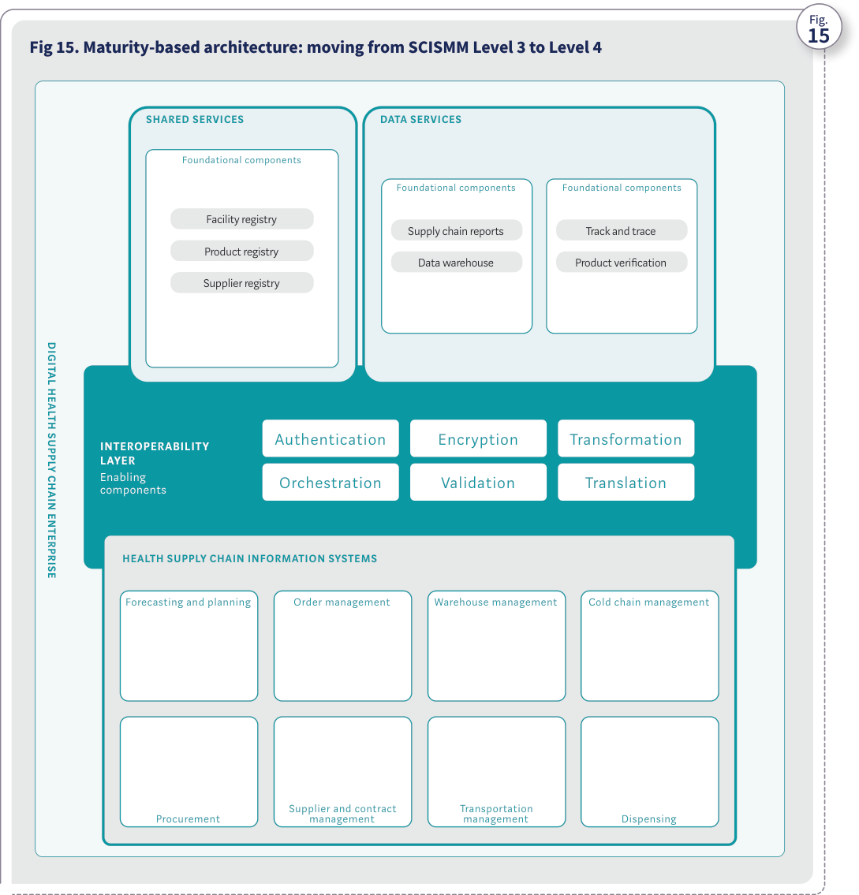</p>
<p><em>Source: WHO, Digital transformation handbook for health supply chain architecture, 2024, PDF page 36; rendered from the PDF's vector layer in the L1 entry.</em></p>
<p><em>Maturity-based architecture: moving from SCISMM Level 3 to Level 4</em></p>
<p><a id="prose:ch02-page-037"></a><span class="block-actions" data-block="prose:ch02-page-037"><a class="ba-edit" href="https://github.com/litlfred/dth-sc/edit/main/folio/dth-sc/ch02-dhsc-architecture/p-ch02-page-037.md" title="Edit this block's source on GitHub (folio/dth-sc/ch02-dhsc-architecture/p-ch02-page-037.md)">✎ edit</a><a class="ba-feedback" href="https://github.com/litlfred/dth-sc/issues/new?title=Feedback+%5Bdth-sc%5D%3A+Illustrative+architectural+approaches+and+governance+options+%E2%80%94+prose%3Ach02-page-037&amp;body=**Content%3A**+%60dth-sc%60%0A**Block%3A**+%60prose%3Ach02-page-037%60%0A**Section%3A**+Illustrative+architectural+approaches+and+governance+options%0A**Source%3A**+https%3A%2F%2Fgithub.com%2Flitlfred%2Fdth-sc%2Fblob%2Fmain%2Ffolio%2Fdth-sc%2Fch02-dhsc-architecture%2Fp-ch02-page-037.md%0A%0A**Type%3A**+general+%7C+technical+%7C+editorial%0A%0A**Comment%3A**%0A%0A%0A**Proposed+change%3A**%0A" title="Give feedback on this block (opens a GitHub issue)">📣 feedback</a></span>
INTER- OPERABILITY LAYER Enabling components HEALTH SUPPLY CHAIN INFORMATION SYSTEMS Forecasting and planning Procurement Order management Supplier and contract management Warehouse management Transportation management Cold chain management Dispensing External Systems DIGITAL HEALTH SUPPLY CHAIN ENTERPRISE SHARED SERVICES Foundational components Product registry Supplier registry Facility registry Digital ecosystems DATA SERVICES Analytics <a href="../folio-assistant-core/glossary/instance/dth-sc/#dth-sc--dth-sc--traceability" title="The ability to trace something." class="fa-term">Traceability</a> Data warehouse Supply chain reports Product verification Track and trace Regulatory systems Finance and systems Manufacturer systems Data repositories Global platforms Health mgmt. info systems Quality systems Authentication Orchestration Encryption Validation Transformation Translation</p>
<ul>
<li>Maturity-based architecture: moving from SCISMM Level 4 to Level 5. Countries planning to advance their <a href="../folio-assistant-core/glossary/instance/dth-sc/#dth-sc--dth-sc--digital-health-supply-chain" title="The knowledge and practice of adopting digital technologies to improve health supply chains and enable the delivery of quality-assured health products to individuals when and where they need them." class="fa-term">DHSC</a> from an exchanged architecture to a collaborative ecosystem can adopt this architectural approach (Fig. 16). A critical step is defining and prioritizing the use cases that are expected to be supported within the health system and supply chain. With this approach, DHSC systems interoperate not only with each other but also with other digital ecosystems such as health information systems, finance and insurance systems and regulatory systems, enabling maturation to Level 5. This approach also promotes integration with external systems such as manufacturer systems and global platforms of donors (such as the Global Family Planning Visibility and Analytics Network, or GFPVAN). Fig 16. Maturity-based architecture: moving from SCISMM Level 4 to Level 5 Fig. Defining the DHSC architecture</li>
</ul>
<p><a id="fig:16"></a><span class="block-actions" data-block="fig:16"><a class="ba-edit" href="https://github.com/litlfred/dth-sc/edit/main/folio/dth-sc/ch02-dhsc-architecture/f-ch02-fig-16.md" title="Edit this block's source on GitHub (folio/dth-sc/ch02-dhsc-architecture/f-ch02-fig-16.md)">✎ edit</a><a class="ba-feedback" href="https://github.com/litlfred/dth-sc/issues/new?title=Feedback+%5Bdth-sc%5D%3A+Illustrative+architectural+approaches+and+governance+options+%E2%80%94+fig%3A16&amp;body=**Content%3A**+%60dth-sc%60%0A**Block%3A**+%60fig%3A16%60%0A**Section%3A**+Illustrative+architectural+approaches+and+governance+options%0A**Source%3A**+https%3A%2F%2Fgithub.com%2Flitlfred%2Fdth-sc%2Fblob%2Fmain%2Ffolio%2Fdth-sc%2Fch02-dhsc-architecture%2Ff-ch02-fig-16.md%0A%0A**Type%3A**+general+%7C+technical+%7C+editorial%0A%0A**Comment%3A**%0A%0A%0A**Proposed+change%3A**%0A" title="Give feedback on this block (opens a GitHub issue)">📣 feedback</a></span>
<strong>Figure 16.</strong> <a href="#fig:16" class="block-anchor" aria-label="Link to Figure 16" title="Link to Figure 16"><svg viewBox="0 0 16 16" width="14" height="14" fill="currentColor" aria-hidden="true"><use xlink:href="#svg-link"></use></svg></a></p>
<p>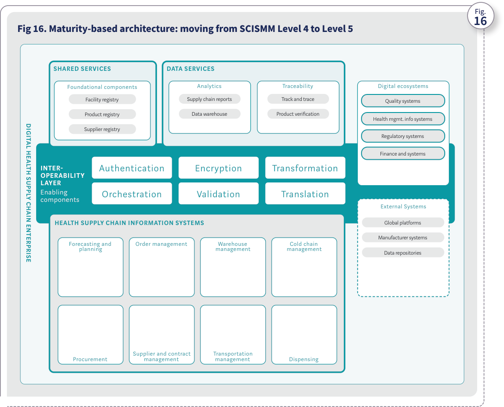</p>
<p><em>Source: WHO, Digital transformation handbook for health supply chain architecture, 2024, PDF page 37; rendered from the PDF's vector layer in the L1 entry.</em></p>
<p><em>Maturity-based architecture: moving from SCISMM Level 4 to Level 5</em></p>
<p><a id="prose:ch02-page-038"></a><span class="block-actions" data-block="prose:ch02-page-038"><a class="ba-edit" href="https://github.com/litlfred/dth-sc/edit/main/folio/dth-sc/ch02-dhsc-architecture/p-ch02-page-038.md" title="Edit this block's source on GitHub (folio/dth-sc/ch02-dhsc-architecture/p-ch02-page-038.md)">✎ edit</a><a class="ba-feedback" href="https://github.com/litlfred/dth-sc/issues/new?title=Feedback+%5Bdth-sc%5D%3A+Illustrative+architectural+approaches+and+governance+options+%E2%80%94+prose%3Ach02-page-038&amp;body=**Content%3A**+%60dth-sc%60%0A**Block%3A**+%60prose%3Ach02-page-038%60%0A**Section%3A**+Illustrative+architectural+approaches+and+governance+options%0A**Source%3A**+https%3A%2F%2Fgithub.com%2Flitlfred%2Fdth-sc%2Fblob%2Fmain%2Ffolio%2Fdth-sc%2Fch02-dhsc-architecture%2Fp-ch02-page-038.md%0A%0A**Type%3A**+general+%7C+technical+%7C+editorial%0A%0A**Comment%3A**%0A%0A%0A**Proposed+change%3A**%0A" title="Give feedback on this block (opens a GitHub issue)">📣 feedback</a></span>
INTER- OPERABILITY LAYER Enabling components HEALTH SUPPLY CHAIN INFORMATION SYSTEMS Forecasting and planning Procurement Order management Supplier and contract management Warehouse management Transportation management Cold chain management Dispensing External Systems DIGITAL HEALTH SUPPLY CHAIN ENTERPRISE SHARED SERVICES Foundational components Product registry Supplier registry Facility registry Digital ecosystems DATA SERVICES Analytics Traceability Data warehouse Supply chain reports Product verification Track and trace Regulatory systems Finance and systems Manufacturer systems Data repositories Global platforms Health mgmt. info systems Quality systems Authentication Orchestration Encryption Validation Transformation Translation The following governance options for an architecture that is based on supply chain design assume SCISMM Level 5 maturity.</p>
<ul>
<li>Architecture based on supply chain design: centralized management. Countries that manage their health supply chain centrally can adopt this approach, which resembles the general framework depicted earlier in Fig. 14. All health supply chain services, including those used by district and service delivery point facilities, are centrally managed using this approach (Fig. 17). This approach is suitable if central warehouses manage when and how much inventory to push to downstream facilities. Fig 17. Architecture based on supply chain design: centralized management Fig.</li>
</ul>
<p><a id="fig:17"></a><span class="block-actions" data-block="fig:17"><a class="ba-edit" href="https://github.com/litlfred/dth-sc/edit/main/folio/dth-sc/ch02-dhsc-architecture/f-ch02-fig-17.md" title="Edit this block's source on GitHub (folio/dth-sc/ch02-dhsc-architecture/f-ch02-fig-17.md)">✎ edit</a><a class="ba-feedback" href="https://github.com/litlfred/dth-sc/issues/new?title=Feedback+%5Bdth-sc%5D%3A+Illustrative+architectural+approaches+and+governance+options+%E2%80%94+fig%3A17&amp;body=**Content%3A**+%60dth-sc%60%0A**Block%3A**+%60fig%3A17%60%0A**Section%3A**+Illustrative+architectural+approaches+and+governance+options%0A**Source%3A**+https%3A%2F%2Fgithub.com%2Flitlfred%2Fdth-sc%2Fblob%2Fmain%2Ffolio%2Fdth-sc%2Fch02-dhsc-architecture%2Ff-ch02-fig-17.md%0A%0A**Type%3A**+general+%7C+technical+%7C+editorial%0A%0A**Comment%3A**%0A%0A%0A**Proposed+change%3A**%0A" title="Give feedback on this block (opens a GitHub issue)">📣 feedback</a></span>
<strong>Figure 17.</strong> <a href="#fig:17" class="block-anchor" aria-label="Link to Figure 17" title="Link to Figure 17"><svg viewBox="0 0 16 16" width="14" height="14" fill="currentColor" aria-hidden="true"><use xlink:href="#svg-link"></use></svg></a></p>
<p></p>
<p><em>Source: WHO, Digital transformation handbook for health supply chain architecture, 2024, PDF page 38; rendered from the PDF's vector layer in the L1 entry.</em></p>
<p><em>Architecture based on supply chain design: centralized management</em></p>
<p><a id="prose:ch02-page-039"></a><span class="block-actions" data-block="prose:ch02-page-039"><a class="ba-edit" href="https://github.com/litlfred/dth-sc/edit/main/folio/dth-sc/ch02-dhsc-architecture/p-ch02-page-039.md" title="Edit this block's source on GitHub (folio/dth-sc/ch02-dhsc-architecture/p-ch02-page-039.md)">✎ edit</a><a class="ba-feedback" href="https://github.com/litlfred/dth-sc/issues/new?title=Feedback+%5Bdth-sc%5D%3A+Illustrative+architectural+approaches+and+governance+options+%E2%80%94+prose%3Ach02-page-039&amp;body=**Content%3A**+%60dth-sc%60%0A**Block%3A**+%60prose%3Ach02-page-039%60%0A**Section%3A**+Illustrative+architectural+approaches+and+governance+options%0A**Source%3A**+https%3A%2F%2Fgithub.com%2Flitlfred%2Fdth-sc%2Fblob%2Fmain%2Ffolio%2Fdth-sc%2Fch02-dhsc-architecture%2Fp-ch02-page-039.md%0A%0A**Type%3A**+general+%7C+technical+%7C+editorial%0A%0A**Comment%3A**%0A%0A%0A**Proposed+change%3A**%0A" title="Give feedback on this block (opens a GitHub issue)">📣 feedback</a></span>
INTER- OPERABILITY LAYER Enabling components <a href="../folio-assistant-core/glossary/instance/dth-sc/#dth-sc--dth-sc--health-supply-chain-information-system" title="A paper-based or software tool that supports the management and/or operations of the health supply chain." class="fa-term">HSCISs</a> National level HSCISs Facility level Forecasting and planning Procurement Order management Supplier and contract management Warehouse management Inventory management Transportation management Cold chain management Cold chain management Dispensing External Systems DIGITAL HEALTH SUPPLY CHAIN ENTERPRISE SHARED SERVICES Foundational components Product registry Supplier registry Facility registry DATA SERVICES Analytics Traceability Data warehouse Product verification Supply chain reports Track and trace Manufacturer systems Data repositories Global platforms Authentication Orchestration Encryption Validation Transformation Translation Digital ecosystems Regulatory systems Finance and systems Health mgmt. info systems Quality systems</p>
<ul>
<li>Architecture based on supply chain design: decentralized management (option A). Countries with health supply chain management divided between the central level and the facility level can adopt this architecture (Fig. 18). Health supply chain functions such as forecasting and planning, procurement and supplier and contract management are managed at the central level. Downstream facilities are managed by an organization different from the one that manages central warehouses. That means the health supply chain services used by facilities are managed separately from those used at the central level. This approach caters to supply chain design where downstream facilities order pharmaceutical products from central levels through a pull mechanism for replenishment. Fig 18. Architecture based on supply chain design: decentralized management (option A) Fig. Defining the DHSC architecture</li>
</ul>
<p><a id="fig:18"></a><span class="block-actions" data-block="fig:18"><a class="ba-edit" href="https://github.com/litlfred/dth-sc/edit/main/folio/dth-sc/ch02-dhsc-architecture/f-ch02-fig-18.md" title="Edit this block's source on GitHub (folio/dth-sc/ch02-dhsc-architecture/f-ch02-fig-18.md)">✎ edit</a><a class="ba-feedback" href="https://github.com/litlfred/dth-sc/issues/new?title=Feedback+%5Bdth-sc%5D%3A+Illustrative+architectural+approaches+and+governance+options+%E2%80%94+fig%3A18&amp;body=**Content%3A**+%60dth-sc%60%0A**Block%3A**+%60fig%3A18%60%0A**Section%3A**+Illustrative+architectural+approaches+and+governance+options%0A**Source%3A**+https%3A%2F%2Fgithub.com%2Flitlfred%2Fdth-sc%2Fblob%2Fmain%2Ffolio%2Fdth-sc%2Fch02-dhsc-architecture%2Ff-ch02-fig-18.md%0A%0A**Type%3A**+general+%7C+technical+%7C+editorial%0A%0A**Comment%3A**%0A%0A%0A**Proposed+change%3A**%0A" title="Give feedback on this block (opens a GitHub issue)">📣 feedback</a></span>
<strong>Figure 18.</strong> <a href="#fig:18" class="block-anchor" aria-label="Link to Figure 18" title="Link to Figure 18"><svg viewBox="0 0 16 16" width="14" height="14" fill="currentColor" aria-hidden="true"><use xlink:href="#svg-link"></use></svg></a></p>
<p>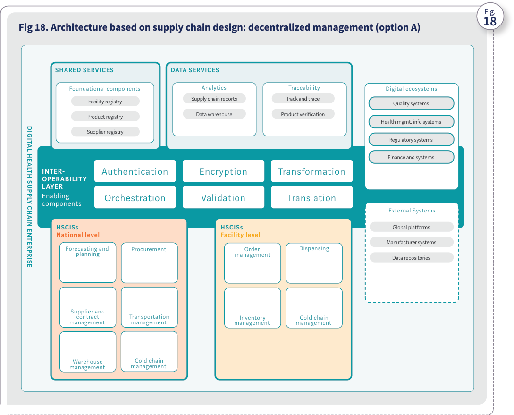</p>
<p><em>Source: WHO, Digital transformation handbook for health supply chain architecture, 2024, PDF page 39; rendered from the PDF's vector layer in the L1 entry.</em></p>
<p><em>Architecture based on supply chain design: decentralized management (option A)</em></p>
<p><a id="prose:ch02-page-040"></a><span class="block-actions" data-block="prose:ch02-page-040"><a class="ba-edit" href="https://github.com/litlfred/dth-sc/edit/main/folio/dth-sc/ch02-dhsc-architecture/p-ch02-page-040.md" title="Edit this block's source on GitHub (folio/dth-sc/ch02-dhsc-architecture/p-ch02-page-040.md)">✎ edit</a><a class="ba-feedback" href="https://github.com/litlfred/dth-sc/issues/new?title=Feedback+%5Bdth-sc%5D%3A+Illustrative+architectural+approaches+and+governance+options+%E2%80%94+prose%3Ach02-page-040&amp;body=**Content%3A**+%60dth-sc%60%0A**Block%3A**+%60prose%3Ach02-page-040%60%0A**Section%3A**+Illustrative+architectural+approaches+and+governance+options%0A**Source%3A**+https%3A%2F%2Fgithub.com%2Flitlfred%2Fdth-sc%2Fblob%2Fmain%2Ffolio%2Fdth-sc%2Fch02-dhsc-architecture%2Fp-ch02-page-040.md%0A%0A**Type%3A**+general+%7C+technical+%7C+editorial%0A%0A**Comment%3A**%0A%0A%0A**Proposed+change%3A**%0A" title="Give feedback on this block (opens a GitHub issue)">📣 feedback</a></span>
INTER- OPERABILITY LAYER Enabling components HSCISs National level HSCISs Forecasting and planning Procurement District level Facility level Procurement Supplier and contract management Warehouse management Transportation management Order management Inventory management Cold chain management Cold chain management Dispensing External Systems DIGITAL HEALTH SUPPLY CHAIN ENTERPRISE SHARED SERVICES Foundational components Product registry Supplier registry Facility registry DATA SERVICES Analytics Traceability Data warehouse Product verification Supply chain reports Track and trace Manufacturer systems Data repositories Global platforms Authentication Orchestration Encryption Validation Transformation Translation Digital ecosystems Regulatory systems Finance and systems Health mgmt. info systems Quality systems</p>
<ul>
<li>Architecture based on supply chain design: decentralized management (option B). This is a variation of the previous approach (Fig. 19). It allows district-level supply chain organizations to procure from sources other than central warehouses and therefore maintain a procurement system separate from the one used at the national level. Fig 19. Architecture based on supply chain design: decentralized management (option B) Fig. In addition to the architectural approaches detailed above, SCISMM, TSS v2 and the IHE white paper (23) can provide guidance on the health supply chain functions that information systems should support to minimize manual tasks and improve data quality and availability. These resources can help countries choose the level of advancement for their HSCISs depending on their readiness. As noted earlier, one benefit that the DHSC architecture should deliver is timely visibility of the end-to-end health supply chain so leaders can make informed decisions to deliver health products to individuals when and where they need them. Fig. 20 depicts how DHSC systems can support various supply chain processes. The real-time data from these systems help enable comprehensive supply chain management (including, for example, end-to-end visibility), thus helping supply chain leaders make effective supply decisions; take corrective actions to address exceptions such as stockouts, product recalls and expiries; and ensure availability of medicines when and where they are needed.</li>
</ul>
<p><a id="fig:19"></a><span class="block-actions" data-block="fig:19"><a class="ba-edit" href="https://github.com/litlfred/dth-sc/edit/main/folio/dth-sc/ch02-dhsc-architecture/f-ch02-fig-19.md" title="Edit this block's source on GitHub (folio/dth-sc/ch02-dhsc-architecture/f-ch02-fig-19.md)">✎ edit</a><a class="ba-feedback" href="https://github.com/litlfred/dth-sc/issues/new?title=Feedback+%5Bdth-sc%5D%3A+Illustrative+architectural+approaches+and+governance+options+%E2%80%94+fig%3A19&amp;body=**Content%3A**+%60dth-sc%60%0A**Block%3A**+%60fig%3A19%60%0A**Section%3A**+Illustrative+architectural+approaches+and+governance+options%0A**Source%3A**+https%3A%2F%2Fgithub.com%2Flitlfred%2Fdth-sc%2Fblob%2Fmain%2Ffolio%2Fdth-sc%2Fch02-dhsc-architecture%2Ff-ch02-fig-19.md%0A%0A**Type%3A**+general+%7C+technical+%7C+editorial%0A%0A**Comment%3A**%0A%0A%0A**Proposed+change%3A**%0A" title="Give feedback on this block (opens a GitHub issue)">📣 feedback</a></span>
<strong>Figure 19.</strong> <a href="#fig:19" class="block-anchor" aria-label="Link to Figure 19" title="Link to Figure 19"><svg viewBox="0 0 16 16" width="14" height="14" fill="currentColor" aria-hidden="true"><use xlink:href="#svg-link"></use></svg></a></p>
<p>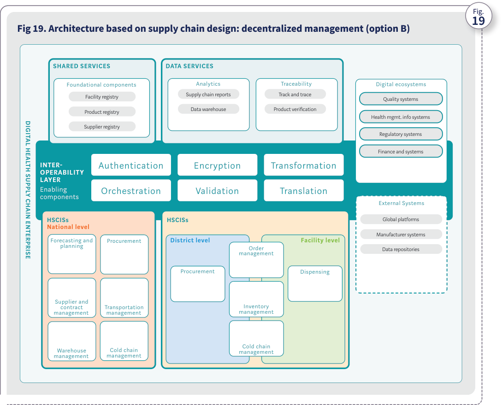</p>
<p><em>Source: WHO, Digital transformation handbook for health supply chain architecture, 2024, PDF page 40; rendered from the PDF's vector layer in the L1 entry.</em></p>
<p><em>Architecture based on supply chain design: decentralized management (option B)</em></p>
<p><a id="dt:sc-dt-01-scismm-architecture-selection"></a><span class="block-actions" data-block="dt:sc-dt-01-scismm-architecture-selection"><a class="ba-edit" href="https://github.com/litlfred/dth-sc/edit/main/folio/dth-sc/ch02-dhsc-architecture/dt-sc-dt-01-scismm-architecture-selection.md" title="Edit this block's source on GitHub (folio/dth-sc/ch02-dhsc-architecture/dt-sc-dt-01-scismm-architecture-selection.md)">✎ edit</a><a class="ba-feedback" href="https://github.com/litlfred/dth-sc/issues/new?title=Feedback+%5Bdth-sc%5D%3A+Illustrative+architectural+approaches+and+governance+options+%E2%80%94+dt%3Asc-dt-01-scismm-architecture-selection&amp;body=**Content%3A**+%60dth-sc%60%0A**Block%3A**+%60dt%3Asc-dt-01-scismm-architecture-selection%60%0A**Section%3A**+Illustrative+architectural+approaches+and+governance+options%0A**Source%3A**+https%3A%2F%2Fgithub.com%2Flitlfred%2Fdth-sc%2Fblob%2Fmain%2Ffolio%2Fdth-sc%2Fch02-dhsc-architecture%2Fdt-sc-dt-01-scismm-architecture-selection.md%0A%0A**Type%3A**+general+%7C+technical+%7C+editorial%0A%0A**Comment%3A**%0A%0A%0A**Proposed+change%3A**%0A" title="Give feedback on this block (opens a GitHub issue)">📣 feedback</a></span>
<strong>Decision-table.</strong> <em>Target SCISMM maturity level and DHSC architectural approach (SC-DT-01)</em></p>
<p>Decision table <strong>SC-DT-01</strong> (<code>Decision_SC_DT_01</code>, hit policy <code>FIRST</code>) formalizes the conditional selection of a country's target <strong>Supply Chain Information System Maturity Model (SCISMM)</strong> level and <strong>DHSC architectural approach</strong> in <strong>Chapter 2 (Step 1 Fig. 12 and Step 2 'Illustrative architectural approaches and governance options', Figs. 15–19, PDF pp. 31, 36–40)</strong>.</p>
<p><em>Source passages cited:</em> <code>prose:ch02-page-031</code>, <code>prose:ch02-page-036</code> (<code>fig:ch02-fig-15</code>), <code>prose:ch02-page-037</code> (<code>fig:ch02-fig-16</code>), <code>prose:ch02-page-038</code> (<code>fig:ch02-fig-17</code>), <code>prose:ch02-page-039</code> (<code>fig:ch02-fig-18</code>), and <code>prose:ch02-page-040</code> (<code>fig:ch02-fig-19</code>). All input and output states are qualitative categories stated directly in the handbook.</p>
<div class="table-wrapper"><table>
<thead>
<tr>
<th>Rule</th>
<th><code>currentScismmLevel</code> (Fig. 12)</th>
<th><code>supplyChainGovernance</code> (Figs. 17–19)</th>
<th><code>crossEcosystemIntegration</code> (Figs. 15–16)</th>
<th><code>targetScismmLevel</code></th>
<th><code>targetArchitectureApproach</code></th>
<th><code>illustrativeFigure</code></th>
<th>Handbook rationale</th>
</tr>
</thead>
<tbody>
<tr>
<td><code>Rule_DT01_01</code></td>
<td><code>"level-1-reporting-based", "level-2-transactional"</code></td>
<td><code>-</code></td>
<td><code>-</code></td>
<td><code>"level-3-advanced-digitalization"</code></td>
<td><code>"foundational-hscis-digitalization-and-registries"</code></td>
<td><code>"Fig. 12"</code></td>
<td>Countries at SCISMM Level 1 (manual/reporting-based) or Level 2 (siloed transactional systems) first digitalize core HSCIS functions and establish foundational product, facility, and supplier registries to reach Level 3 (Ch 2 Step 1, Fig. 12, PDF p. 31).</td>
</tr>
<tr>
<td><code>Rule_DT01_02</code></td>
<td><code>"level-3-advanced-digitalization"</code></td>
<td><code>-</code></td>
<td><code>"within-supply-chain-only"</code></td>
<td><code>"level-4-end-to-end-visibility"</code></td>
<td><code>"maturity-level-3-to-4-interoperability-layer"</code></td>
<td><code>"Fig. 15"</code></td>
<td>Maturity-based architecture moving from SCISMM Level 3 to Level 4: replace point-to-point integrations with standards-based information exchange via an interoperability layer and foundational registries across HSCISs (Ch 2 Fig. 15, PDF p. 36).</td>
</tr>
<tr>
<td><code>Rule_DT01_03</code></td>
<td><code>"level-3-advanced-digitalization", "level-4-end-to-end-visibility"</code></td>
<td><code>"centralized-push"</code></td>
<td><code>"multi-ecosystem-and-global-platforms"</code></td>
<td><code>"level-5-digital-ecosystem"</code></td>
<td><code>"supply-chain-design-centralized-management"</code></td>
<td><code>"Fig. 17"</code></td>
<td>Countries advancing to SCISMM Level 5 with centrally managed supply chain services (central warehouse push replenishment across all tiers) and integration with external systems and digital ecosystems adopt the centralized management architecture (Ch 2 Figs. 16–17, PDF pp. 37–38).</td>
</tr>
<tr>
<td><code>Rule_DT01_04</code></td>
<td><code>"level-4-end-to-end-visibility", "level-5-digital-ecosystem"</code></td>
<td><code>"decentralized-central-procurement-facility-pull"</code></td>
<td><code>"multi-ecosystem-and-global-platforms"</code></td>
<td><code>"level-5-digital-ecosystem"</code></td>
<td><code>"supply-chain-design-decentralized-option-a"</code></td>
<td><code>"Fig. 18"</code></td>
<td>Architecture based on supply chain design — decentralized management (option A): forecasting, procurement, and supplier management are central, while downstream facilities manage their own inventory/dispensing services and pull replenishments (Ch 2 Fig. 18, PDF p. 39).</td>
</tr>
<tr>
<td><code>Rule_DT01_05</code></td>
<td><code>"level-4-end-to-end-visibility", "level-5-digital-ecosystem"</code></td>
<td><code>"decentralized-district-autonomous-procurement"</code></td>
<td><code>"multi-ecosystem-and-global-platforms"</code></td>
<td><code>"level-5-digital-ecosystem"</code></td>
<td><code>"supply-chain-design-decentralized-option-b"</code></td>
<td><code>"Fig. 19"</code></td>
<td>Architecture based on supply chain design — decentralized management (option B): district-level supply chain organizations can procure from sources other than central warehouses and maintain a district procurement system separate from the national level (Ch 2 Fig. 19, PDF p. 40).</td>
</tr>
<tr>
<td><code>Rule_DT01_06</code></td>
<td><code>"level-4-end-to-end-visibility", "level-5-digital-ecosystem"</code></td>
<td><code>-</code></td>
<td><code>-</code></td>
<td><code>"level-5-digital-ecosystem"</code></td>
<td><code>"maturity-level-4-to-5-collaborative-ecosystem"</code></td>
<td><code>"Fig. 16"</code></td>
<td>General maturity-based progression from SCISMM Level 4 (exchanged architecture) to Level 5 (collaborative digital ecosystem interoperating with HIS, finance/insurance, regulatory, manufacturer, and global donor platforms) (Ch 2 Fig. 16, PDF p. 37).</td>
</tr>
</tbody>
</table></div>
<p><a id="prose:ch02-page-041"></a><span class="block-actions" data-block="prose:ch02-page-041"><a class="ba-edit" href="https://github.com/litlfred/dth-sc/edit/main/folio/dth-sc/ch02-dhsc-architecture/p-ch02-page-041.md" title="Edit this block's source on GitHub (folio/dth-sc/ch02-dhsc-architecture/p-ch02-page-041.md)">✎ edit</a><a class="ba-feedback" href="https://github.com/litlfred/dth-sc/issues/new?title=Feedback+%5Bdth-sc%5D%3A+Illustrative+architectural+approaches+and+governance+options+%E2%80%94+prose%3Ach02-page-041&amp;body=**Content%3A**+%60dth-sc%60%0A**Block%3A**+%60prose%3Ach02-page-041%60%0A**Section%3A**+Illustrative+architectural+approaches+and+governance+options%0A**Source%3A**+https%3A%2F%2Fgithub.com%2Flitlfred%2Fdth-sc%2Fblob%2Fmain%2Ffolio%2Fdth-sc%2Fch02-dhsc-architecture%2Fp-ch02-page-041.md%0A%0A**Type%3A**+general+%7C+technical+%7C+editorial%0A%0A**Comment%3A**%0A%0A%0A**Proposed+change%3A**%0A" title="Give feedback on this block (opens a GitHub issue)">📣 feedback</a></span>
INTEROPERABILITY LAYER DATA SERVICES Analytics Data warehouse Supply chain reports Transactional data from systems relevant to the supply chain Analytics services synthesize the aggregated supply chain data to answer questions such as:</p>
<ul>
<li>Based on consumption patterns, how can we optimize inventory to minimize stockouts?</li>
<li>Are the planned supplies sufficient, and will they arrive in time to meet the projected demand?</li>
<li>How accurate are the forecasts compared with actual demand/ consumption?</li>
<li>Are products being delivered on time and in full quantities to the right locations?</li>
<li>Is there any inventory wastage or leakage, and if so, what are the reasons?</li>
<li>Are any items at risk of expiry, and where could that stock be moved to?</li>
<li>How often and at which facilities are stockouts occurring?</li>
<li>How are the suppliers performing in terms of quality and on-time delivery? Fig 20. Benefits of cross-enterprise analytics services Fig. Manufacturing Forecasting and planning Procurement Supplier and contract management Order management Shipping REGULATORY Customs Distribution Patients CENTRAL WAREHOUSE Receiving CENTRAL WAREHOUSE Inventory management HEALTH FACILITY Dispensing REGIONAL WAREHOUSE Replenishment Defining the DHSC architecture</li>
</ul>
<p><a id="fig:20"></a><span class="block-actions" data-block="fig:20"><a class="ba-edit" href="https://github.com/litlfred/dth-sc/edit/main/folio/dth-sc/ch02-dhsc-architecture/f-ch02-fig-20.md" title="Edit this block's source on GitHub (folio/dth-sc/ch02-dhsc-architecture/f-ch02-fig-20.md)">✎ edit</a><a class="ba-feedback" href="https://github.com/litlfred/dth-sc/issues/new?title=Feedback+%5Bdth-sc%5D%3A+Illustrative+architectural+approaches+and+governance+options+%E2%80%94+fig%3A20&amp;body=**Content%3A**+%60dth-sc%60%0A**Block%3A**+%60fig%3A20%60%0A**Section%3A**+Illustrative+architectural+approaches+and+governance+options%0A**Source%3A**+https%3A%2F%2Fgithub.com%2Flitlfred%2Fdth-sc%2Fblob%2Fmain%2Ffolio%2Fdth-sc%2Fch02-dhsc-architecture%2Ff-ch02-fig-20.md%0A%0A**Type%3A**+general+%7C+technical+%7C+editorial%0A%0A**Comment%3A**%0A%0A%0A**Proposed+change%3A**%0A" title="Give feedback on this block (opens a GitHub issue)">📣 feedback</a></span>
<strong>Figure 20.</strong> <a href="#fig:20" class="block-anchor" aria-label="Link to Figure 20" title="Link to Figure 20"><svg viewBox="0 0 16 16" width="14" height="14" fill="currentColor" aria-hidden="true"><use xlink:href="#svg-link"></use></svg></a></p>
<p>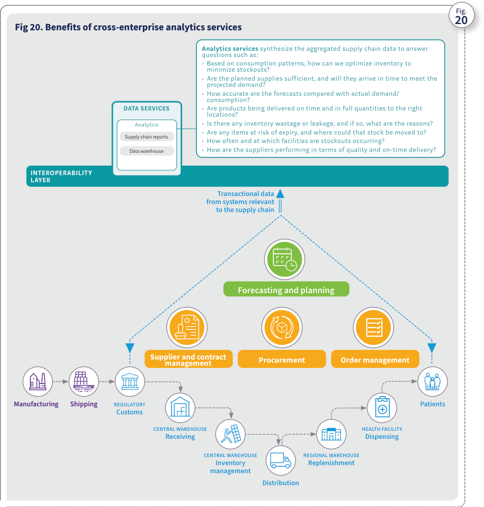</p>
<p><em>Source: WHO, Digital transformation handbook for health supply chain architecture, 2024, PDF page 41; rendered from the PDF's vector layer in the L1 entry.</em></p>
<p><em>Benefits of cross-enterprise analytics services</em></p>
<p><a id="sec:ch02-step-3-identify-implementation-activitie"></a></p>
<h3 id="h-sec:ch02-step-3-identify-implementation-activitie">
  
  
    <a href="#h-sec:ch02-step-3-identify-implementation-activitie" class="anchor-heading" aria-labelledby="h-sec:ch02-step-3-identify-implementation-activitie"><svg viewBox="0 0 16 16" aria-hidden="true"><use xlink:href="#svg-link"></use></svg></a> Step 3. Identify implementation activities and map them to strategic goals
  
  
</h3>
    
<p><a id="prose:ch02-page-042"></a><span class="block-actions" data-block="prose:ch02-page-042"><a class="ba-edit" href="https://github.com/litlfred/dth-sc/edit/main/folio/dth-sc/ch02-dhsc-architecture/p-ch02-page-042.md" title="Edit this block's source on GitHub (folio/dth-sc/ch02-dhsc-architecture/p-ch02-page-042.md)">✎ edit</a><a class="ba-feedback" href="https://github.com/litlfred/dth-sc/issues/new?title=Feedback+%5Bdth-sc%5D%3A+Step+3.+Identify+implementation+activities+and+map+them+to+strategic+goals+%E2%80%94+prose%3Ach02-page-042&amp;body=**Content%3A**+%60dth-sc%60%0A**Block%3A**+%60prose%3Ach02-page-042%60%0A**Section%3A**+Step+3.+Identify+implementation+activities+and+map+them+to+strategic+goals%0A**Source%3A**+https%3A%2F%2Fgithub.com%2Flitlfred%2Fdth-sc%2Fblob%2Fmain%2Ffolio%2Fdth-sc%2Fch02-dhsc-architecture%2Fp-ch02-page-042.md%0A%0A**Type%3A**+general+%7C+technical+%7C+editorial%0A%0A**Comment%3A**%0A%0A%0A**Proposed+change%3A**%0A" title="Give feedback on this block (opens a GitHub issue)">📣 feedback</a></span>
Identify implementation activities and map them to strategic goals Step This step focuses on translating the identified <a href="../folio-assistant-core/glossary/instance/dth-sc/#dth-sc--dth-sc--digital-health-supply-chain" title="The knowledge and practice of adopting digital technologies to improve health supply chains and enable the delivery of quality-assured health products to individuals when and where they need them." class="fa-term">DHSC</a> architectural interventions into implementation activities. The activities will be mapped out on a timeline to prepare a roadmap for overall implementation. Potential risks Mitigation strategies Activities are not aligned with DHSC strategic goals Identify and plan implementation activities after the vision, strategy and architecture have been developed and approved. Review any ongoing activities and adjust them to ensure alignment with DHSC goals and priorities. INPUTS TASKS OUTPUTS</p>
<ul>
<li>Current state of <a href="../folio-assistant-core/glossary/instance/dth-sc/#dth-sc--dth-sc--health-supply-chain-information-system" title="A paper-based or software tool that supports the management and/or operations of the health supply chain." class="fa-term">HSCISs</a></li>
<li>Future-state DHSC architecture</li>
<li>DHSC strategic goals 1. Prioritize DHSC interventions based on strategic goals. 2. Define the implementation activities for the prioritized DHSC interventions. 3. Develop a high-level roadmap of the implementation activities.</li>
<li>List of DHSC implementation activities mapped to strategic goals</li>
<li>High-level roadmap of DHSC implementations</li>
</ul>
<p><a id="prose:ch02-page-043"></a><span class="block-actions" data-block="prose:ch02-page-043"><a class="ba-edit" href="https://github.com/litlfred/dth-sc/edit/main/folio/dth-sc/ch02-dhsc-architecture/p-ch02-page-043.md" title="Edit this block's source on GitHub (folio/dth-sc/ch02-dhsc-architecture/p-ch02-page-043.md)">✎ edit</a><a class="ba-feedback" href="https://github.com/litlfred/dth-sc/issues/new?title=Feedback+%5Bdth-sc%5D%3A+Step+3.+Identify+implementation+activities+and+map+them+to+strategic+goals+%E2%80%94+prose%3Ach02-page-043&amp;body=**Content%3A**+%60dth-sc%60%0A**Block%3A**+%60prose%3Ach02-page-043%60%0A**Section%3A**+Step+3.+Identify+implementation+activities+and+map+them+to+strategic+goals%0A**Source%3A**+https%3A%2F%2Fgithub.com%2Flitlfred%2Fdth-sc%2Fblob%2Fmain%2Ffolio%2Fdth-sc%2Fch02-dhsc-architecture%2Fp-ch02-page-043.md%0A%0A**Type%3A**+general+%7C+technical+%7C+editorial%0A%0A**Comment%3A**%0A%0A%0A**Proposed+change%3A**%0A" title="Give feedback on this block (opens a GitHub issue)">📣 feedback</a></span>
The steps outlined in this chapter will result in the following outputs (Fig. 21):</p>
<ul>
<li>current state of HSCISs</li>
<li>future-state DHSC architecture</li>
<li>list of DHSC implementation activities mapped to strategic goals</li>
<li>high-level roadmap of DHSC implementations. Progress check Vision Consistent and timely access to quality medicines and medical products for the population, through seamless supply chain enabled by technologies that provide efficient tools for providers Strategic goals 1. Implement system-driven processes to provide timely access to quality data 2. Achieve interoperability of systems to enable effortless exchange of data 3. Enable traceability of all health products to ensure patient safety Strategic objectives Automate 80% of central warehouse operations Automate receiving and dispensing in 75% of health facilities Standardize product, facility, and other master data Deploy interop layer and integrate central and regional HSCISs Deploy a data warehouse to aggregate supply chain data Enable national- level batch traceability Strategic roadmap DSHC architecture Year 1 and 2 Target architecture DIGITAL HEALTH SUPPLY CHAIN ENTERPRISE INTEROPERABILITY LAYER Enabling Components SHARED SERVICES Authentication Orchestration Encryption Transformation Translation Validation HEALTH SUPPLY CHAIN SYSTEMS Foundational Components Facility Registry Product Registry Supplier Registry DATA SERVICES Analytics SC Reports Data Warehouse Forecasting &#x26; Planning Procurement Supplier &#x26; Contract Management <a href="../folio-assistant-core/glossary/instance/dth-sc/#dth-sc--dth-sc--order-management" title="The planning, directing, monitoring and controlling of the processes related to customer or requisition orders." class="fa-term">Order Management</a> Warehouse Management Transportation Management Dispensing <a href="../folio-assistant-core/glossary/instance/dth-sc/#dth-sc--dth-sc--traceability" title="The ability to trace something." class="fa-term">Traceability</a> Track &#x26; Trace Product Verification Cold Chain Management Year 3 and 4 Target architecture maturity to next level Implementation roadmap Enhance <a href="../folio-assistant-core/glossary/instance/dth-sc/#dth-sc--dth-sc--warehouse-management-system" title="A computer application that manages and optimizes workflows and the storage of goods within a warehouse." class="fa-term">WMS</a> Integrate WMS and National Product Catalog (NPC) Implement barcode- scanning capabilities Develop and implement the interop mediator Integrate HSCISs through the mediator Design data models and implement data warehouse Aggregate data from all HSCISs and enable analytics DHSC outcomes WMS deployed and rolled out across 40% of supply chain facilities WMS-NPC integration: 100% Barcode-scanning feature: 60% Interop mediator deployed and 30% of integrations completed Implementation pending Fig. Fig 21. Example of outputs from this chapter Year 1 Digitalization of central warehouse Year 2 Digitalization of health facilities Year 2 Data stan- dardization Year 3 System integrations Year 3 Data aggregation Year 4 Batch traceability Defining the DHSC architecture</li>
</ul>
<p><a id="fig:21"></a><span class="block-actions" data-block="fig:21"><a class="ba-edit" href="https://github.com/litlfred/dth-sc/edit/main/folio/dth-sc/ch02-dhsc-architecture/f-ch02-fig-21.md" title="Edit this block's source on GitHub (folio/dth-sc/ch02-dhsc-architecture/f-ch02-fig-21.md)">✎ edit</a><a class="ba-feedback" href="https://github.com/litlfred/dth-sc/issues/new?title=Feedback+%5Bdth-sc%5D%3A+Step+3.+Identify+implementation+activities+and+map+them+to+strategic+goals+%E2%80%94+fig%3A21&amp;body=**Content%3A**+%60dth-sc%60%0A**Block%3A**+%60fig%3A21%60%0A**Section%3A**+Step+3.+Identify+implementation+activities+and+map+them+to+strategic+goals%0A**Source%3A**+https%3A%2F%2Fgithub.com%2Flitlfred%2Fdth-sc%2Fblob%2Fmain%2Ffolio%2Fdth-sc%2Fch02-dhsc-architecture%2Ff-ch02-fig-21.md%0A%0A**Type%3A**+general+%7C+technical+%7C+editorial%0A%0A**Comment%3A**%0A%0A%0A**Proposed+change%3A**%0A" title="Give feedback on this block (opens a GitHub issue)">📣 feedback</a></span>
<strong>Figure 21.</strong> <a href="#fig:21" class="block-anchor" aria-label="Link to Figure 21" title="Link to Figure 21"><svg viewBox="0 0 16 16" width="14" height="14" fill="currentColor" aria-hidden="true"><use xlink:href="#svg-link"></use></svg></a></p>
<p>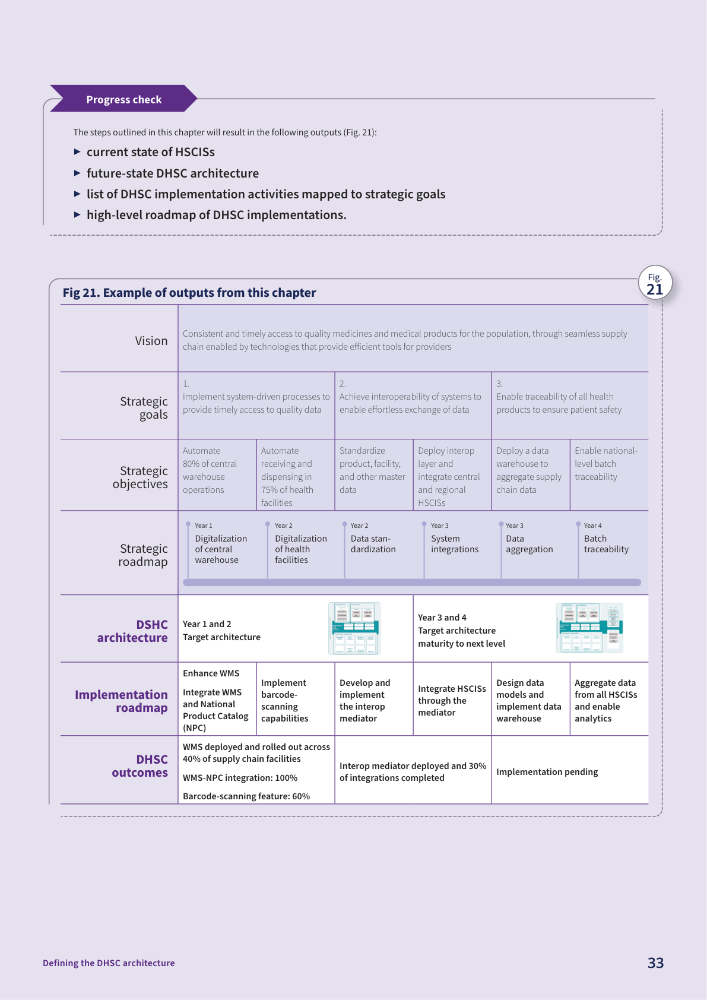</p>
<p><em>Source: WHO, Digital transformation handbook for health supply chain architecture, 2024, PDF page 43; rendered from the PDF's vector layer in the L1 entry.</em></p>
<p><em>Example of outputs from this chapter</em></p>
<p><a id="chap:ch03-implementation-and-operations"></a></p>
<h2 id="h-chap:ch03-implementation-and-operations">
  
  
    <a href="#h-chap:ch03-implementation-and-operations" class="anchor-heading" aria-labelledby="h-chap:ch03-implementation-and-operations"><svg viewBox="0 0 16 16" aria-hidden="true"><use xlink:href="#svg-link"></use></svg></a> Chapter 3. Planning for scalable implementation and sustainable operations
  
  
</h2>
    
<p><a id="sec:ch03-guiding-principles"></a></p>
<h3 id="h-sec:ch03-guiding-principles">
  
  
    <a href="#h-sec:ch03-guiding-principles" class="anchor-heading" aria-labelledby="h-sec:ch03-guiding-principles"><svg viewBox="0 0 16 16" aria-hidden="true"><use xlink:href="#svg-link"></use></svg></a> Guiding principles
  
  
</h3>
    
<p><a id="prose:ch03-page-044"></a><span class="block-actions" data-block="prose:ch03-page-044"><a class="ba-edit" href="https://github.com/litlfred/dth-sc/edit/main/folio/dth-sc/ch03-implementation-and-operations/p-ch03-page-044.md" title="Edit this block's source on GitHub (folio/dth-sc/ch03-implementation-and-operations/p-ch03-page-044.md)">✎ edit</a><a class="ba-feedback" href="https://github.com/litlfred/dth-sc/issues/new?title=Feedback+%5Bdth-sc%5D%3A+Guiding+principles+%E2%80%94+prose%3Ach03-page-044&amp;body=**Content%3A**+%60dth-sc%60%0A**Block%3A**+%60prose%3Ach03-page-044%60%0A**Section%3A**+Guiding+principles%0A**Source%3A**+https%3A%2F%2Fgithub.com%2Flitlfred%2Fdth-sc%2Fblob%2Fmain%2Ffolio%2Fdth-sc%2Fch03-implementation-and-operations%2Fp-ch03-page-044.md%0A%0A**Type%3A**+general+%7C+technical+%7C+editorial%0A%0A**Comment%3A**%0A%0A%0A**Proposed+change%3A**%0A" title="Give feedback on this block (opens a GitHub issue)">📣 feedback</a></span>
Chapter Planning for scalable implementation and sustainable operations Plan the implementation of each intervention Develop an operational plan for each intervention Develop a budget for each intervention Implement each intervention Step Step Step Step The following principles, informed by the Principles for Digital Development (Annex 1), can guide the implementation of the <a href="../folio-assistant-core/glossary/instance/dth-sc/#dth-sc--dth-sc--digital-health-supply-chain" title="The knowledge and practice of adopting digital technologies to improve health supply chains and enable the delivery of quality-assured health products to individuals when and where they need them." class="fa-term">DHSC</a> interventions.</p>
<ul>
<li>Plan for sustainability from the start.</li>
<li>Engage local resources to build capacity.</li>
<li>Promote collaboration across implementation partners to align and complement efforts.</li>
<li>Develop plans grounded in the local context to set realistic expectations and milestones. The steps outlined in this chapter will result in the following outputs:</li>
<li>detailed project management plans for each implementation activity;</li>
<li>stakeholder matrix to manage operations;</li>
<li>operations sustainability plan;</li>
<li>implementation and operations performance monitoring and evaluation framework;</li>
<li>DHSC implementation materials such as requirements, specifications, test scripts and job aids; and</li>
<li>developed DHSC applications. 1. Defining a holistic DHSC strategy 2. Defining the DHSC architecture 3. Planning for scalable implementation and sustainable operations 4. Using the DHSC to implement traceability Guiding principles Outputs</li>
</ul>
<p><a id="sec:ch03-building-blocks-and-implementation-consi"></a></p>
<h3 id="h-sec:ch03-building-blocks-and-implementation-consi">
  
  
    <a href="#h-sec:ch03-building-blocks-and-implementation-consi" class="anchor-heading" aria-labelledby="h-sec:ch03-building-blocks-and-implementation-consi"><svg viewBox="0 0 16 16" aria-hidden="true"><use xlink:href="#svg-link"></use></svg></a> Building blocks and implementation considerations
  
  
</h3>
    
<p><a id="prose:ch03-page-045"></a><span class="block-actions" data-block="prose:ch03-page-045"><a class="ba-edit" href="https://github.com/litlfred/dth-sc/edit/main/folio/dth-sc/ch03-implementation-and-operations/p-ch03-page-045.md" title="Edit this block's source on GitHub (folio/dth-sc/ch03-implementation-and-operations/p-ch03-page-045.md)">✎ edit</a><a class="ba-feedback" href="https://github.com/litlfred/dth-sc/issues/new?title=Feedback+%5Bdth-sc%5D%3A+Building+blocks+and+implementation+considerations+%E2%80%94+prose%3Ach03-page-045&amp;body=**Content%3A**+%60dth-sc%60%0A**Block%3A**+%60prose%3Ach03-page-045%60%0A**Section%3A**+Building+blocks+and+implementation+considerations%0A**Source%3A**+https%3A%2F%2Fgithub.com%2Flitlfred%2Fdth-sc%2Fblob%2Fmain%2Ffolio%2Fdth-sc%2Fch03-implementation-and-operations%2Fp-ch03-page-045.md%0A%0A**Type%3A**+general+%7C+technical+%7C+editorial%0A%0A**Comment%3A**%0A%0A%0A**Proposed+change%3A**%0A" title="Give feedback on this block (opens a GitHub issue)">📣 feedback</a></span>
Fig 22. Building blocks of digital health and <a href="../folio-assistant-core/glossary/instance/dth-sc/#dth-sc--dth-sc--digital-health-supply-chain" title="The knowledge and practice of adopting digital technologies to improve health supply chains and enable the delivery of quality-assured health products to individuals when and where they need them." class="fa-term">DHSC</a> implementation Fig. Planning for scalable implementation and sustainable operations The previous chapters helped define the vision, strategic goals and architecture for the DHSC. This chapter outlines key considerations for realizing the DHSC vision, strategic goals and objectives. They are derived from the seven foundational building blocks of digital health as outlined in the WHO-ITU National eHealth Strategy Toolkit (Fig. 22). LEADERSHIP AND GOVERNANCE STRATEGY AND INVESTMENT SERVICES AND APPLICATIONS LEGISLATION, POLICY, AND COMPLIANCE WORKFORCE STANDARDS AND INTEROPERABILITY INFRASTRUCTURE Table 2 provides illustrative considerations for each building block to help ensure successful DHSC implementation. Source: adapted from the 2012 WHO-ITU National eHealth Strategy Toolkit (19). WHAT IS GOVERNANCE? In the context of the health supply chain, governance is the process of establishing and implementing policies, procedures and mechanisms to ensure that the supply chain processes and the systems to manage those processes are managed effectively, ethically and in alignment with established objectives and stakeholders’ interests. It involves decision-making, defining roles and responsibilities, setting goals and objectives, and monitoring performance to ensure accountability and compliance with regulations and standards. Planning for scalable implementation and sustainable operations</p>
<p><a id="fig:22"></a><span class="block-actions" data-block="fig:22"><a class="ba-edit" href="https://github.com/litlfred/dth-sc/edit/main/folio/dth-sc/ch03-implementation-and-operations/f-ch03-fig-22.md" title="Edit this block's source on GitHub (folio/dth-sc/ch03-implementation-and-operations/f-ch03-fig-22.md)">✎ edit</a><a class="ba-feedback" href="https://github.com/litlfred/dth-sc/issues/new?title=Feedback+%5Bdth-sc%5D%3A+Building+blocks+and+implementation+considerations+%E2%80%94+fig%3A22&amp;body=**Content%3A**+%60dth-sc%60%0A**Block%3A**+%60fig%3A22%60%0A**Section%3A**+Building+blocks+and+implementation+considerations%0A**Source%3A**+https%3A%2F%2Fgithub.com%2Flitlfred%2Fdth-sc%2Fblob%2Fmain%2Ffolio%2Fdth-sc%2Fch03-implementation-and-operations%2Ff-ch03-fig-22.md%0A%0A**Type%3A**+general+%7C+technical+%7C+editorial%0A%0A**Comment%3A**%0A%0A%0A**Proposed+change%3A**%0A" title="Give feedback on this block (opens a GitHub issue)">📣 feedback</a></span>
<strong>Figure 22.</strong> <a href="#fig:22" class="block-anchor" aria-label="Link to Figure 22" title="Link to Figure 22"><svg viewBox="0 0 16 16" width="14" height="14" fill="currentColor" aria-hidden="true"><use xlink:href="#svg-link"></use></svg></a></p>
<p>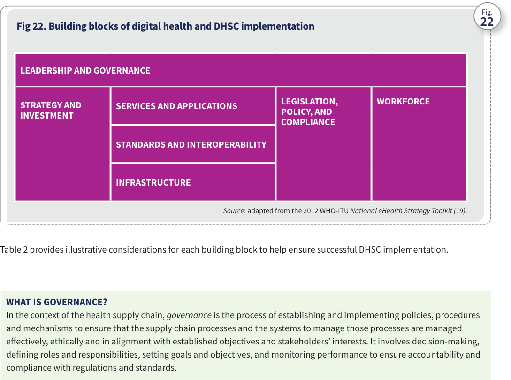</p>
<p><em>Source: WHO, Digital transformation handbook for health supply chain architecture, 2024, PDF page 45; rendered from the PDF's vector layer in the L1 entry.</em></p>
<p><em>Building blocks of digital health and DHSC implementation</em></p>
<p><a id="prose:ch03-page-046"></a><span class="block-actions" data-block="prose:ch03-page-046"><a class="ba-edit" href="https://github.com/litlfred/dth-sc/edit/main/folio/dth-sc/ch03-implementation-and-operations/p-ch03-page-046.md" title="Edit this block's source on GitHub (folio/dth-sc/ch03-implementation-and-operations/p-ch03-page-046.md)">✎ edit</a><a class="ba-feedback" href="https://github.com/litlfred/dth-sc/issues/new?title=Feedback+%5Bdth-sc%5D%3A+Building+blocks+and+implementation+considerations+%E2%80%94+prose%3Ach03-page-046&amp;body=**Content%3A**+%60dth-sc%60%0A**Block%3A**+%60prose%3Ach03-page-046%60%0A**Section%3A**+Building+blocks+and+implementation+considerations%0A**Source%3A**+https%3A%2F%2Fgithub.com%2Flitlfred%2Fdth-sc%2Fblob%2Fmain%2Ffolio%2Fdth-sc%2Fch03-implementation-and-operations%2Fp-ch03-page-046.md%0A%0A**Type%3A**+general+%7C+technical+%7C+editorial%0A%0A**Comment%3A**%0A%0A%0A**Proposed+change%3A**%0A" title="Give feedback on this block (opens a GitHub issue)">📣 feedback</a></span>
Table 2. Illustrative implementation considerations for the DHSC Sources: adapted from the 2012 WHO-ITU National eHealth Strategy Toolkit (19) and the 2015 WHO MAPS Toolkit (24). Detailed plans are also needed for each DHSC initiative or intervention. As outlined in the upcoming steps, each intervention should include a project implementation plan, an operational plan and a budget that considers the total cost of ownership.</p>
<p><a id="tbl:2"></a><span class="block-actions" data-block="tbl:2"><a class="ba-edit" href="https://github.com/litlfred/dth-sc/edit/main/folio/dth-sc/ch03-implementation-and-operations/t-ch03-table-2.md" title="Edit this block's source on GitHub (folio/dth-sc/ch03-implementation-and-operations/t-ch03-table-2.md)">✎ edit</a><a class="ba-feedback" href="https://github.com/litlfred/dth-sc/issues/new?title=Feedback+%5Bdth-sc%5D%3A+Building+blocks+and+implementation+considerations+%E2%80%94+tbl%3A2&amp;body=**Content%3A**+%60dth-sc%60%0A**Block%3A**+%60tbl%3A2%60%0A**Section%3A**+Building+blocks+and+implementation+considerations%0A**Source%3A**+https%3A%2F%2Fgithub.com%2Flitlfred%2Fdth-sc%2Fblob%2Fmain%2Ffolio%2Fdth-sc%2Fch03-implementation-and-operations%2Ft-ch03-table-2.md%0A%0A**Type%3A**+general+%7C+technical+%7C+editorial%0A%0A**Comment%3A**%0A%0A%0A**Proposed+change%3A**%0A" title="Give feedback on this block (opens a GitHub issue)">📣 feedback</a></span>
<strong>Table 2.</strong> <a href="#tbl:2" class="block-anchor" aria-label="Link to Table 2" title="Link to Table 2"><svg viewBox="0 0 16 16" width="14" height="14" fill="currentColor" aria-hidden="true"><use xlink:href="#svg-link"></use></svg></a></p>
<p><em>Table 2. Illustrative implementation considerations for the DHSC</em></p>
<div class="table-wrapper"><table>
<thead>
<tr>
<th><strong>Area</strong></th>
<th><strong>Factor</strong></th>
<th><strong>What is the current state?</strong></th>
<th><strong>What is needed?</strong></th>
</tr>
</thead>
<tbody>
<tr>
<td>Enabling environment</td>
<td>Leadership and governance</td>
<td>• Can any national priorities be cited that align with DHSC goals to secure support from senior leadership?<br>• Does a dedicated department oversee health ICT, digital health and the health supply chain?<br>• Does the country have a national digital governance framework, such as TWGs?</td>
<td>• DHSC that is strongly connected to a national priority to guarantee senior leadership support and momentum<br>• Digital department that has a mandate to advance DHSC implementations<br>• Governance of DHSC implementations by either a dedicated TWG or a subcommittee within the digital health working group, if one exists</td>
</tr>
<tr>
<td>Enabling environment</td>
<td>Strategy and investment</td>
<td>• Is the DHSC strategy endorsed and agreed upon by all stakeholders?<br>• What investments in DHSC are currently ongoing? What additional investments are planned?</td>
<td>• Consensus among senior leadership and all stakeholders regarding the DHSC vision and strategic roadmap, to ensure alignment of all stakeholder investments with the DHSC architecture<br>• DHSC investment roadmap to help identify funding needs and potential funding sources</td>
</tr>
<tr>
<td>Enabling environment</td>
<td>Legislation, policy and compliance</td>
<td>• Does any existing legislation support data sharing, data standardization and traceability of pharmaceutical products?<br>• Are policies in place regarding data storage, usage, retention and security?<br>• Do mechanisms exist to ensure compliance with legislation and policies?</td>
<td>• Legislation that provides guidelines to manufacturers and other supply chain partners on product data standardization, labelling, data sharing and pharmaceutical traceability<br>• Guidelines for manufacturers and supply chain partners to achieve compliance in phases<br>• Procedures to monitor and promote compliance with legislation and policies</td>
</tr>
<tr>
<td>Enabling environment</td>
<td>Workforce</td>
<td>• Are there individuals in supply chain operational and technical roles who have the necessary skill sets?<br>• Are knowledge management mechanisms in place, such as ongoing training and information-sharing programmes?<br>• Is a strategy in place for incremental capacity development and talent retention?</td>
<td>• List of roles across areas such as management, technology and operations with job descriptions and necessary skill sets<br>• Knowledge management procedures that include targeted training programmes, visual job aids, advocacy material and video tutorials<br>• Capacity-building strategy that includes technical cooperation with the private sector and fostering its development to acquire the required skill sets</td>
</tr>
<tr>
<td>Enabling environment</td>
<td>Standards and interoperability</td>
<td>• Are standardized reusable components in use, such as facility registries, product registries and supplier registries?<br>• Is an interoperability framework in use to guide how systems integrate and exchange data?<br>• Is an interoperability mediator in place to support data orchestration, translation and integrations?<br>• Are standardized protocols in use for data exchange between systems?<br>• Have global and open standards been adopted for data management and exchange?</td>
<td>• List of essential reusable components that are needed as part of the DHSC implementation and that are part of the DHSC architecture<br>• Interoperability framework that includes guidelines for data exchange, standardization and adoption of open standards as well as a plan for an interoperability mediator, if one is not in place<br>• Harmonized master data registries<br>• Adoption of global and open standards (e.g., the Health Level Seven International <a href="../folio-assistant-core/glossary/instance/dpi-h-ra/#dpi-h-ra--dpi-h-ra--fast-healthcare-interoperability-resources" title="FHIR is a standard for healthcare data exchange, published by HL7®" class="fa-term">Fast Healthcare Interoperability Resources</a>) to promote interoperability among systems, processes and data</td>
</tr>
<tr>
<td>ICT environment</td>
<td>Services and applications</td>
<td>• What supply chain applications in use can be enhanced and reused?<br>• Are processes in place to maintain and update software applications? Is a framework in place to engage the private sector in software application maintenance and upgrades?</td>
<td>• DHSC strategy and architecture to indicate existing reusable applications along with new applications, including the necessary changes required for existing applications<br>• Procedures governing application maintenance, including the organization responsible for hardware and software maintenance, criteria for upgrades or replacements and a framework for involving the private sector in maintenance and improvements</td>
</tr>
<tr>
<td>ICT environment</td>
<td>Infrastructure</td>
<td>• What are the electricity conditions across all supply chain facilities and at data centres where servers will be located?<br>• How is the network connectivity and bandwidth across supply chain facilities such as central warehouses, district pharmacies and service delivery points?<br>• Do potential users of DHSC applications have the necessary devices? If not, what additional devices (e.g., computers, tablets or smartphones) are needed?</td>
<td>• Budgeted plan to establish the required infrastructure for electricity and network connectivity at the designated sites and facilities<br>• Budgeted plan to acquire the required devices for supply chain users<br>• Infrastructure requirements included within government budgets, highlighting potential funding requirements</td>
</tr>
</tbody>
</table></div>
<p><em>Illustrative implementation considerations for the DHSC</em></p>
<p><a id="sec:ch03-step-1-plan-the-implementation-of-each-d"></a></p>
<h3 id="h-sec:ch03-step-1-plan-the-implementation-of-each-d">
  
  
    <a href="#h-sec:ch03-step-1-plan-the-implementation-of-each-d" class="anchor-heading" aria-labelledby="h-sec:ch03-step-1-plan-the-implementation-of-each-d"><svg viewBox="0 0 16 16" aria-hidden="true"><use xlink:href="#svg-link"></use></svg></a> Step 1. Plan the implementation of each DHSC intervention
  
  
</h3>
    
<p><a id="prose:ch03-page-047"></a><span class="block-actions" data-block="prose:ch03-page-047"><a class="ba-edit" href="https://github.com/litlfred/dth-sc/edit/main/folio/dth-sc/ch03-implementation-and-operations/p-ch03-page-047.md" title="Edit this block's source on GitHub (folio/dth-sc/ch03-implementation-and-operations/p-ch03-page-047.md)">✎ edit</a><a class="ba-feedback" href="https://github.com/litlfred/dth-sc/issues/new?title=Feedback+%5Bdth-sc%5D%3A+Step+1.+Plan+the+implementation+of+each+DHSC+intervention+%E2%80%94+prose%3Ach03-page-047&amp;body=**Content%3A**+%60dth-sc%60%0A**Block%3A**+%60prose%3Ach03-page-047%60%0A**Section%3A**+Step+1.+Plan+the+implementation+of+each+DHSC+intervention%0A**Source%3A**+https%3A%2F%2Fgithub.com%2Flitlfred%2Fdth-sc%2Fblob%2Fmain%2Ffolio%2Fdth-sc%2Fch03-implementation-and-operations%2Fp-ch03-page-047.md%0A%0A**Type%3A**+general+%7C+technical+%7C+editorial%0A%0A**Comment%3A**%0A%0A%0A**Proposed+change%3A**%0A" title="Give feedback on this block (opens a GitHub issue)">📣 feedback</a></span>
The project charter should include details about the following:</p>
<ul>
<li>scope</li>
<li>stakeholders</li>
<li>timeline</li>
<li>budget</li>
<li>risks</li>
<li>deliverables</li>
<li>quality criteria</li>
<li>governance mechanism. The project management plan should include the following:</li>
<li>detailed project implementation plan with activities, timelines and milestones for each phase (such as design, development, testing and deployment);</li>
<li>stakeholder matrix with responsibilities and accountabilities (such as a RACI matrix – responsible, accountable, consulted, informed);</li>
<li>resource details, including people, hardware and software;</li>
<li>budget details for phases;</li>
<li>communication plan, including frequency of project management and technical meetings, issue management and escalation process;</li>
<li>risk register with mitigations;</li>
<li>change control process;</li>
<li>change management plan (including training and rollout plan); and</li>
<li>quality management and closure plan. The project performance monitoring and analysis framework should include the following:</li>
<li>project baseline (such as initial schedule, budget and indicators related to the supply chain process that is being digitalized); and</li>
<li>reporting schedule, mechanism and template that includes various aspects such as schedule, quality, budget and risks. Plan the implementation of each <a href="../folio-assistant-core/glossary/instance/dth-sc/#dth-sc--dth-sc--digital-health-supply-chain" title="The knowledge and practice of adopting digital technologies to improve health supply chains and enable the delivery of quality-assured health products to individuals when and where they need them." class="fa-term">DHSC</a> intervention Step This step focuses on developing a comprehensive plan, which is essential for guiding various DHSC implementation activities. INPUTS TASKS OUTPUTS</li>
<li>Prioritized DHSC interventions</li>
<li>List of DHSC implementation activities 1. Develop a project charter. 2. Develop a project management plan. 3. Establish a project governance and reporting mechanism through the steering committee and/or TWG. 4. Define the project performance monitoring and analysis framework.</li>
<li>Project charter</li>
<li>Project management plan</li>
<li>Steering committee and TWG terms of reference</li>
<li>Project performance monitoring and analysis framework RESOURCES Risk register template (Annex 6) Planning for scalable implementation and sustainable operations</li>
</ul>
<p><a id="sec:ch03-step-2-develop-an-operational-plan-for-e"></a></p>
<h3 id="h-sec:ch03-step-2-develop-an-operational-plan-for-e">
  
  
    <a href="#h-sec:ch03-step-2-develop-an-operational-plan-for-e" class="anchor-heading" aria-labelledby="h-sec:ch03-step-2-develop-an-operational-plan-for-e"><svg viewBox="0 0 16 16" aria-hidden="true"><use xlink:href="#svg-link"></use></svg></a> Step 2. Develop an operational plan for each DHSC intervention
  
  
</h3>
    
<p><a id="prose:ch03-page-048"></a><span class="block-actions" data-block="prose:ch03-page-048"><a class="ba-edit" href="https://github.com/litlfred/dth-sc/edit/main/folio/dth-sc/ch03-implementation-and-operations/p-ch03-page-048.md" title="Edit this block's source on GitHub (folio/dth-sc/ch03-implementation-and-operations/p-ch03-page-048.md)">✎ edit</a><a class="ba-feedback" href="https://github.com/litlfred/dth-sc/issues/new?title=Feedback+%5Bdth-sc%5D%3A+Step+2.+Develop+an+operational+plan+for+each+DHSC+intervention+%E2%80%94+prose%3Ach03-page-048&amp;body=**Content%3A**+%60dth-sc%60%0A**Block%3A**+%60prose%3Ach03-page-048%60%0A**Section%3A**+Step+2.+Develop+an+operational+plan+for+each+DHSC+intervention%0A**Source%3A**+https%3A%2F%2Fgithub.com%2Flitlfred%2Fdth-sc%2Fblob%2Fmain%2Ffolio%2Fdth-sc%2Fch03-implementation-and-operations%2Fp-ch03-page-048.md%0A%0A**Type%3A**+general+%7C+technical+%7C+editorial%0A%0A**Comment%3A**%0A%0A%0A**Proposed+change%3A**%0A" title="Give feedback on this block (opens a GitHub issue)">📣 feedback</a></span>
The operations and sustainability plan should include the following:</p>
<ul>
<li>details of stakeholders who will own and maintain the <a href="../folio-assistant-core/glossary/instance/dth-sc/#dth-sc--dth-sc--digital-health-supply-chain" title="The knowledge and practice of adopting digital technologies to improve health supply chains and enable the delivery of quality-assured health products to individuals when and where they need them." class="fa-term">DHSC</a> system/application;</li>
<li>required resources (such as maintenance personnel, hardware, network infrastructure and backup power);</li>
<li>recurring knowledge management needs (including training, job aid updates, recruitments and job rotations);</li>
<li>recurring costs for the required resources, system subscriptions, knowledge management, monitoring and evaluation, and efforts to maintain and operate the application;</li>
<li>plan for data backups and system redundancy to mitigate the impact of system failures;</li>
<li>change management and governance process for new requirements arising from evolving needs; and</li>
<li>financial strategy to cover all recurring operational costs. The operational performance monitoring and analysis framework should include the following:</li>
<li>baseline KPIs related to the supply chain process being digitalized; and</li>
<li>reporting schedule, mechanism and template that includes various aspects such as operational costs, risks, KPIs, and any constraints and issues. Develop an operational plan for each DHSC intervention Step The operational plan should determine the necessary resources and the effort needed to effectively maintain and run the DHSC systems. INPUTS TASKS OUTPUTS</li>
<li>List of DHSC implementation activities</li>
<li>DHSC stakeholder matrix 1. Update the stakeholder matrix, if required, to establish the system owner/custodian and system users. 2. Identify required operational resources (such as maintenance personnel, hardware, network infrastructure and backup power). 3. Develop an operations and sustainability plan. 4. Develop an operational performance monitoring and evaluation framework.</li>
<li>Updated DHSC stakeholder matrix that includes operations management</li>
<li>Operations and sustainability plan</li>
<li>Operational performance monitoring and evaluation framework</li>
</ul>
<p><a id="sec:ch03-step-3-develop-a-budget-for-each-dhsc-in"></a></p>
<h3 id="h-sec:ch03-step-3-develop-a-budget-for-each-dhsc-in">
  
  
    <a href="#h-sec:ch03-step-3-develop-a-budget-for-each-dhsc-in" class="anchor-heading" aria-labelledby="h-sec:ch03-step-3-develop-a-budget-for-each-dhsc-in"><svg viewBox="0 0 16 16" aria-hidden="true"><use xlink:href="#svg-link"></use></svg></a> Step 3. Develop a budget for each DHSC intervention
  
  
</h3>
    
<p><a id="prose:ch03-page-049"></a><span class="block-actions" data-block="prose:ch03-page-049"><a class="ba-edit" href="https://github.com/litlfred/dth-sc/edit/main/folio/dth-sc/ch03-implementation-and-operations/p-ch03-page-049.md" title="Edit this block's source on GitHub (folio/dth-sc/ch03-implementation-and-operations/p-ch03-page-049.md)">✎ edit</a><a class="ba-feedback" href="https://github.com/litlfred/dth-sc/issues/new?title=Feedback+%5Bdth-sc%5D%3A+Step+3.+Develop+a+budget+for+each+DHSC+intervention+%E2%80%94+prose%3Ach03-page-049&amp;body=**Content%3A**+%60dth-sc%60%0A**Block%3A**+%60prose%3Ach03-page-049%60%0A**Section%3A**+Step+3.+Develop+a+budget+for+each+DHSC+intervention%0A**Source%3A**+https%3A%2F%2Fgithub.com%2Flitlfred%2Fdth-sc%2Fblob%2Fmain%2Ffolio%2Fdth-sc%2Fch03-implementation-and-operations%2Fp-ch03-page-049.md%0A%0A**Type%3A**+general+%7C+technical+%7C+editorial%0A%0A**Comment%3A**%0A%0A%0A**Proposed+change%3A**%0A" title="Give feedback on this block (opens a GitHub issue)">📣 feedback</a></span>
Fig 23. Cost components to determine the total cost of ownership Source: adapted from the 2020 WHO Digital Implementation Investment Guide (1). RFP = request for proposal RFI = request for information RFQ = request for quotation Develop a budget for each <a href="../folio-assistant-core/glossary/instance/dth-sc/#dth-sc--dth-sc--digital-health-supply-chain" title="The knowledge and practice of adopting digital technologies to improve health supply chains and enable the delivery of quality-assured health products to individuals when and where they need them." class="fa-term">DHSC</a> intervention Step This step helps prepare the budget based on costs to implement as well as costs to scale and operate DHSC systems. ONGOING Management Governance Overhead IMPLEMENT SCALE OPERATE Sourcing (RFP, RFI, RFQ) Hardware and infrastructure Software Design and development Integration and interoperability Testing and training Deployment Expansion of deployment Training Hardware and infrastructure Software (subscriptions) Maintenance (personnel, software, hardware) Ongoing training Monitoring and evaluation Total cost of ownership Fig. Fig. 23 illustrates the costs to consider as part of the total cost of ownership. Table 3 lists illustrative cost drivers of DHSC implementation. INPUTS TASKS OUTPUTS</p>
<ul>
<li>Project management plan for the implementation</li>
<li>Operations and sustainability plan</li>
<li>Historical budgets and costs, if available 1. Identify all cost drivers. (See Table 3.) 2. Determine all implementation costs. 3. Determine all operational costs for the life of the DHSC intervention, which could typically be five to 10 years. 4. Develop a budget matrix for the life of the DHSC intervention. 5. Identify funding sources and potential funding needs.</li>
<li>Total cost of ownership</li>
<li>Budget matrix</li>
<li>Funding needs RESOURCES Budget matrix template (from the DIIG) Planning for scalable implementation and sustainable operations</li>
</ul>
<p><a id="fig:23"></a><span class="block-actions" data-block="fig:23"><a class="ba-edit" href="https://github.com/litlfred/dth-sc/edit/main/folio/dth-sc/ch03-implementation-and-operations/f-ch03-fig-23.md" title="Edit this block's source on GitHub (folio/dth-sc/ch03-implementation-and-operations/f-ch03-fig-23.md)">✎ edit</a><a class="ba-feedback" href="https://github.com/litlfred/dth-sc/issues/new?title=Feedback+%5Bdth-sc%5D%3A+Step+3.+Develop+a+budget+for+each+DHSC+intervention+%E2%80%94+fig%3A23&amp;body=**Content%3A**+%60dth-sc%60%0A**Block%3A**+%60fig%3A23%60%0A**Section%3A**+Step+3.+Develop+a+budget+for+each+DHSC+intervention%0A**Source%3A**+https%3A%2F%2Fgithub.com%2Flitlfred%2Fdth-sc%2Fblob%2Fmain%2Ffolio%2Fdth-sc%2Fch03-implementation-and-operations%2Ff-ch03-fig-23.md%0A%0A**Type%3A**+general+%7C+technical+%7C+editorial%0A%0A**Comment%3A**%0A%0A%0A**Proposed+change%3A**%0A" title="Give feedback on this block (opens a GitHub issue)">📣 feedback</a></span>
<strong>Figure 23.</strong> <a href="#fig:23" class="block-anchor" aria-label="Link to Figure 23" title="Link to Figure 23"><svg viewBox="0 0 16 16" width="14" height="14" fill="currentColor" aria-hidden="true"><use xlink:href="#svg-link"></use></svg></a></p>
<p>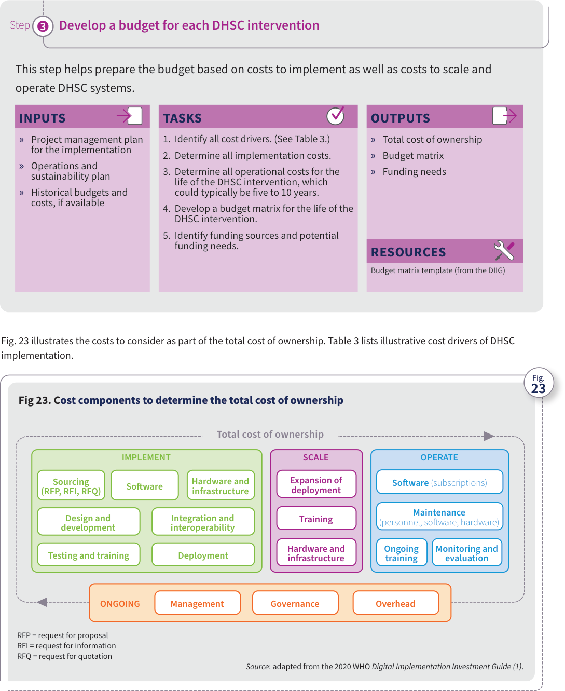</p>
<p><em>Source: WHO, Digital transformation handbook for health supply chain architecture, 2024, PDF page 49; rendered from the PDF's vector layer in the L1 entry.</em></p>
<p><em>Cost components to determine the total cost of ownership</em></p>
<p><a id="prose:ch03-page-050"></a><span class="block-actions" data-block="prose:ch03-page-050"><a class="ba-edit" href="https://github.com/litlfred/dth-sc/edit/main/folio/dth-sc/ch03-implementation-and-operations/p-ch03-page-050.md" title="Edit this block's source on GitHub (folio/dth-sc/ch03-implementation-and-operations/p-ch03-page-050.md)">✎ edit</a><a class="ba-feedback" href="https://github.com/litlfred/dth-sc/issues/new?title=Feedback+%5Bdth-sc%5D%3A+Step+3.+Develop+a+budget+for+each+DHSC+intervention+%E2%80%94+prose%3Ach03-page-050&amp;body=**Content%3A**+%60dth-sc%60%0A**Block%3A**+%60prose%3Ach03-page-050%60%0A**Section%3A**+Step+3.+Develop+a+budget+for+each+DHSC+intervention%0A**Source%3A**+https%3A%2F%2Fgithub.com%2Flitlfred%2Fdth-sc%2Fblob%2Fmain%2Ffolio%2Fdth-sc%2Fch03-implementation-and-operations%2Fp-ch03-page-050.md%0A%0A**Type%3A**+general+%7C+technical+%7C+editorial%0A%0A**Comment%3A**%0A%0A%0A**Proposed+change%3A**%0A" title="Give feedback on this block (opens a GitHub issue)">📣 feedback</a></span>
Table 3. Illustrative cost drivers of DHSC implementation Source: adapted from Digital Impact Alliance’s Principles for Digital Development (<a href="https://digitalprinciples.org">https://digitalprinciples.org</a>).</p>
<p><a id="tbl:3"></a><span class="block-actions" data-block="tbl:3"><a class="ba-edit" href="https://github.com/litlfred/dth-sc/edit/main/folio/dth-sc/ch03-implementation-and-operations/t-ch03-table-3.md" title="Edit this block's source on GitHub (folio/dth-sc/ch03-implementation-and-operations/t-ch03-table-3.md)">✎ edit</a><a class="ba-feedback" href="https://github.com/litlfred/dth-sc/issues/new?title=Feedback+%5Bdth-sc%5D%3A+Step+3.+Develop+a+budget+for+each+DHSC+intervention+%E2%80%94+tbl%3A3&amp;body=**Content%3A**+%60dth-sc%60%0A**Block%3A**+%60tbl%3A3%60%0A**Section%3A**+Step+3.+Develop+a+budget+for+each+DHSC+intervention%0A**Source%3A**+https%3A%2F%2Fgithub.com%2Flitlfred%2Fdth-sc%2Fblob%2Fmain%2Ffolio%2Fdth-sc%2Fch03-implementation-and-operations%2Ft-ch03-table-3.md%0A%0A**Type%3A**+general+%7C+technical+%7C+editorial%0A%0A**Comment%3A**%0A%0A%0A**Proposed+change%3A**%0A" title="Give feedback on this block (opens a GitHub issue)">📣 feedback</a></span>
<strong>Table 3.</strong> <a href="#tbl:3" class="block-anchor" aria-label="Link to Table 3" title="Link to Table 3"><svg viewBox="0 0 16 16" width="14" height="14" fill="currentColor" aria-hidden="true"><use xlink:href="#svg-link"></use></svg></a></p>
<p><em>Table 3. Illustrative cost drivers of DHSC implementation</em></p>
<div class="table-wrapper"><table>
<thead>
<tr>
<th><strong>Cost type</strong></th>
<th><strong>Cost category</strong></th>
<th><strong>Cost drivers</strong></th>
</tr>
</thead>
<tbody>
<tr>
<td>Ongoing costs</td>
<td>Management</td>
<td>• Complexity of intervention<br>• Full-time equivalents (FTEs) needed<br>• Turnover<br>• Staff capacity</td>
</tr>
<tr>
<td>Ongoing costs</td>
<td>Governance</td>
<td>• Number of stakeholders needed for coordination<br>• Time needed for approvals<br>• Amount of travel and meetings required for buy-in, coordination and approvals</td>
</tr>
<tr>
<td>Ongoing costs</td>
<td>Overhead</td>
<td>• Logistical costs such as per diems, meeting rooms and stationery<br>• Administrative costs</td>
</tr>
<tr>
<td>Upfront implementation costs</td>
<td>Sourcing</td>
<td>• Complexity of required features and functionality<br>• Local capacity and whether international sources need to be explored<br>• Procedural requirements around governmental approvals and competitive evaluations</td>
</tr>
<tr>
<td>Upfront implementation costs</td>
<td>Software</td>
<td>• Licensing model and associated cost<br>• Scale of implementation (number of end users, number of devices, etc.)</td>
</tr>
<tr>
<td>Upfront implementation costs</td>
<td>Hardware and infrastructure</td>
<td>• Devices, servers and other infrastructure needed<br>• Sophistication of devices needed (depending on system availability needs, data retention policies, etc.)<br>• Reliability of electricity in country and alternatives needed<br>• Infrastructure to support reliable internet connectivity</td>
</tr>
<tr>
<td>Upfront implementation costs</td>
<td>Design and development</td>
<td>• Customizations and localizations (e.g., language translations) needed<br>• Local capacity with required skill sets<br>• Technical trainings needed</td>
</tr>
<tr>
<td>Upfront implementation costs</td>
<td>Integration and interoperability</td>
<td>• Maturity of interoperability standards<br>• Use of standards or lack thereof<br>• Existing data-sharing policies<br>• Licensing fees associated with standard use<br>• Availability of interoperability mediator and related requirements</td>
</tr>
<tr>
<td>Upfront implementation costs</td>
<td>Testing and training</td>
<td>• Amount of travel and meetings required<br>• Number of end users, testing users and trainers<br>• Scale and frequency of training<br>• Existing capacity gaps</td>
</tr>
<tr>
<td>Upfront implementation costs</td>
<td>Deployment</td>
<td>• Number of end users<br>• Number of facilities</td>
</tr>
<tr>
<td>Upfront scaling costs</td>
<td>Expansion of deployment</td>
<td>• Number of end users<br>• Number of facilities</td>
</tr>
<tr>
<td>Upfront scaling costs</td>
<td>Training</td>
<td>• Amount of travel and meetings required<br>• Number of end users, testing users and trainers<br>• Scale and frequency of training</td>
</tr>
<tr>
<td>Upfront scaling costs</td>
<td>Hardware and infrastructure</td>
<td>• Devices, servers and other infrastructure needed<br>• Sophistication of devices needed depending on system availability needs, data retention policies, etc.<br>• Reliability of electricity in country and alternatives needed<br>• Infrastructure to support reliable internet connectivity</td>
</tr>
<tr>
<td>Operations costs</td>
<td>Software</td>
<td>• Annual or per user subscription/licence fees</td>
</tr>
<tr>
<td>Operations costs</td>
<td>Maintenance</td>
<td>• Amount of bug fixes needed<br>• Anticipated updates released per year<br>• Amount of travel needed for onsite maintenance support<br>• Number of end users and devices managed<br>• Utility costs related to hardware</td>
</tr>
<tr>
<td>Operations costs</td>
<td>Ongoing training</td>
<td>• On-the-job training vs. formal training mechanism<br>• Turnover</td>
</tr>
<tr>
<td>Operations costs</td>
<td>Monitoring and evaluation</td>
<td>• Complexity and scope of intervention<br>• FTEs needed to support monitoring and evaluation activities<br>• Amount of data needed to be collected manually vs. data available electronically through automated processes<br>• Size and complexity of data collected; number of systems that data are collected from<br>• Amount of information needed to disseminate</td>
</tr>
</tbody>
</table></div>
<p><em>Illustrative cost drivers of DHSC implementation</em></p>
<p><a id="sec:ch03-step-4-implement-each-dhsc-intervention"></a></p>
<h3 id="h-sec:ch03-step-4-implement-each-dhsc-intervention">
  
  
    <a href="#h-sec:ch03-step-4-implement-each-dhsc-intervention" class="anchor-heading" aria-labelledby="h-sec:ch03-step-4-implement-each-dhsc-intervention"><svg viewBox="0 0 16 16" aria-hidden="true"><use xlink:href="#svg-link"></use></svg></a> Step 4. Implement each DHSC intervention
  
  
</h3>
    
<p><a id="prose:ch03-page-051"></a><span class="block-actions" data-block="prose:ch03-page-051"><a class="ba-edit" href="https://github.com/litlfred/dth-sc/edit/main/folio/dth-sc/ch03-implementation-and-operations/p-ch03-page-051.md" title="Edit this block's source on GitHub (folio/dth-sc/ch03-implementation-and-operations/p-ch03-page-051.md)">✎ edit</a><a class="ba-feedback" href="https://github.com/litlfred/dth-sc/issues/new?title=Feedback+%5Bdth-sc%5D%3A+Step+4.+Implement+each+DHSC+intervention+%E2%80%94+prose%3Ach03-page-051&amp;body=**Content%3A**+%60dth-sc%60%0A**Block%3A**+%60prose%3Ach03-page-051%60%0A**Section%3A**+Step+4.+Implement+each+DHSC+intervention%0A**Source%3A**+https%3A%2F%2Fgithub.com%2Flitlfred%2Fdth-sc%2Fblob%2Fmain%2Ffolio%2Fdth-sc%2Fch03-implementation-and-operations%2Fp-ch03-page-051.md%0A%0A**Type%3A**+general+%7C+technical+%7C+editorial%0A%0A**Comment%3A**%0A%0A%0A**Proposed+change%3A**%0A" title="Give feedback on this block (opens a GitHub issue)">📣 feedback</a></span>
Implement each <a href="../folio-assistant-core/glossary/instance/dth-sc/#dth-sc--dth-sc--digital-health-supply-chain" title="The knowledge and practice of adopting digital technologies to improve health supply chains and enable the delivery of quality-assured health products to individuals when and where they need them." class="fa-term">DHSC</a> intervention Step This step encompasses several tasks needed to implement the identified DHSC interventions, including vendor selection, system design, development, validation and training. INPUTS TASKS OUTPUTS</p>
<ul>
<li>Prioritized DHSC interventions</li>
<li>List of DHSC implementation activities 1. Define functional and nonfunctional requirements for the DHSC intervention being implemented. 2. Identify the implementation partner/ vendor through appropriate sourcing mechanisms, such as requests for proposal (RFPs) and requests for quotation (RFQs). 3. Develop the intervention’s solution design and integration specifications to meet functional and nonfunctional requirements. 4. Develop and/or configure the intervention. 5. Integrate the intervention with other interventions through an appropriate interoperability platform, if available. 6. Validate the intervention through system, integration and user acceptance testing. 7. Train the users. 8. Roll out the intervention.</li>
<li>DHSC intervention functional and nonfunctional requirements</li>
<li>Sourcing documents such as RFPs and RFQs</li>
<li>Contracts for software and implementation</li>
<li>Solution design and integration specifications</li>
<li>DHSC application components</li>
<li>System, integration and user acceptance test scripts</li>
<li>User training materials</li>
<li>DHSC application issues log RESOURCES SCISMM (16) TSS v2 (19) Potential risks Mitigation strategies</li>
<li>Underestimating the costs and/or overlooking hidden costs</li>
<li>Use the guidance provided in this section to estimate all cost elements, including operational costs, to help budget for and identify funding sources to ensure successful implementation and continuous operations.</li>
<li>Human resource capacity constraints</li>
<li>Not having people with the appropriate skill sets</li>
<li>Lack of awareness of the required skill sets</li>
<li>Identify the necessary roles and skill sets early on. Use multiple strategies to add capacity, such as outsourcing, recruiting and engaging part-time consultants. Budget for additional staffing needs and identify funding sources to bridge capacity gaps. Plan for a phased rollout of systems to align with the availability of funding and staffing capacity.</li>
<li>Use a resource matrix, such as the one in Annex 7, to plan out necessary roles and responsibilities across phases of implementation and operations.</li>
<li>Poor adoption and use of systems if training does not contain appropriate content for the level of skill sets</li>
<li>Perform a skills assessment for each user before completing the training plan.</li>
<li>Complete a training needs assessment before conducting training.</li>
<li>Target and adapt training to meet the needs of the training audience.</li>
<li>Lack of reliable infrastructure (such as electricity, internet connectivity and computers) as <a href="../folio-assistant-core/glossary/instance/dth-sc/#dth-sc--dth-sc--health-supply-chain-information-system" title="A paper-based or software tool that supports the management and/or operations of the health supply chain." class="fa-term">HSCISs</a> are rolled out to downstream facilities</li>
<li>Determine needs across all supply chain facilities and develop a detailed budget that includes operational costs.</li>
<li>Adopt a phased approach to roll out systems across supply chain facilities.</li>
<li>Align funding and other financial resources with the planned rollout phases.</li>
<li>Inconsistent use of supply chain processes across supply levels and facilities, leading to poor data quality, interoperability, aggregation and data availability</li>
<li>Conduct a supply chain system and process maturity assessment (using tools such as SCISMM) to identify process gaps and inconsistencies.</li>
<li>Address gaps during the system design phase and ensure consistent training of staff at all supply chain levels for uniform adoption and use of the system. Planning for scalable implementation and sustainable operations</li>
</ul>
<p><a id="prose:ch03-page-052"></a><span class="block-actions" data-block="prose:ch03-page-052"><a class="ba-edit" href="https://github.com/litlfred/dth-sc/edit/main/folio/dth-sc/ch03-implementation-and-operations/p-ch03-page-052.md" title="Edit this block's source on GitHub (folio/dth-sc/ch03-implementation-and-operations/p-ch03-page-052.md)">✎ edit</a><a class="ba-feedback" href="https://github.com/litlfred/dth-sc/issues/new?title=Feedback+%5Bdth-sc%5D%3A+Step+4.+Implement+each+DHSC+intervention+%E2%80%94+prose%3Ach03-page-052&amp;body=**Content%3A**+%60dth-sc%60%0A**Block%3A**+%60prose%3Ach03-page-052%60%0A**Section%3A**+Step+4.+Implement+each+DHSC+intervention%0A**Source%3A**+https%3A%2F%2Fgithub.com%2Flitlfred%2Fdth-sc%2Fblob%2Fmain%2Ffolio%2Fdth-sc%2Fch03-implementation-and-operations%2Fp-ch03-page-052.md%0A%0A**Type%3A**+general+%7C+technical+%7C+editorial%0A%0A**Comment%3A**%0A%0A%0A**Proposed+change%3A**%0A" title="Give feedback on this block (opens a GitHub issue)">📣 feedback</a></span>
Potential risks Mitigation strategies</p>
<ul>
<li>Saturation of existing digital tools and HSCISs due to lack of acceptance of emerging technology and enhancements</li>
<li>Conduct regular assessments using tools such as SCISMM to identify any new or potential gaps and improvement opportunities.</li>
<li>Plan to enhance or upgrade existing tools in a phased manner to meet changing supply chain needs.</li>
<li>Budget dependence on political factors such as election timelines and outcomes</li>
<li>Budget for DHSC initiatives at the start of a government’s term.</li>
<li>If initiatives require time beyond political events that might affect the budget, consider options for scaling back or phasing, depending on the context.</li>
<li>Budget rigidity that creates an obstacle to accommodating unforeseen but necessary changes (due to factors related to technological advances, regulatory changes, staffing, etc.)</li>
<li>Ensure that budgets account for potential changes and include a buffer.</li>
<li>If the buffer is exceeded, seek additional funding sources before scaling back the initiative. The steps outlined in this chapter will result in the following outputs:</li>
<li>detailed project management plans for each implementation activity</li>
<li>stakeholder matrix to manage operations</li>
<li>operations sustainability plan</li>
<li>implementation and operations performance monitoring and evaluation framework</li>
<li>DHSC implementation materials such as requirements, specifications, test scripts and job aids</li>
<li>developed DHSC applications. Progress check</li>
</ul>
<p><a id="chap:ch04-traceability"></a></p>
<h2 id="h-chap:ch04-traceability">
  
  
    <a href="#h-chap:ch04-traceability" class="anchor-heading" aria-labelledby="h-chap:ch04-traceability"><svg viewBox="0 0 16 16" aria-hidden="true"><use xlink:href="#svg-link"></use></svg></a> Chapter 4. Using the DHSC to implement traceability
  
  
</h2>
    
<p><a id="sec:ch04-chapter-overview"></a></p>
<h3 id="h-sec:ch04-chapter-overview">
  
  
    <a href="#h-sec:ch04-chapter-overview" class="anchor-heading" aria-labelledby="h-sec:ch04-chapter-overview"><svg viewBox="0 0 16 16" aria-hidden="true"><use xlink:href="#svg-link"></use></svg></a> Chapter overview
  
  
</h3>
    
<p><a id="prose:ch04-page-053"></a><span class="block-actions" data-block="prose:ch04-page-053"><a class="ba-edit" href="https://github.com/litlfred/dth-sc/edit/main/folio/dth-sc/ch04-traceability/p-ch04-page-053.md" title="Edit this block's source on GitHub (folio/dth-sc/ch04-traceability/p-ch04-page-053.md)">✎ edit</a><a class="ba-feedback" href="https://github.com/litlfred/dth-sc/issues/new?title=Feedback+%5Bdth-sc%5D%3A+Chapter+overview+%E2%80%94+prose%3Ach04-page-053&amp;body=**Content%3A**+%60dth-sc%60%0A**Block%3A**+%60prose%3Ach04-page-053%60%0A**Section%3A**+Chapter+overview%0A**Source%3A**+https%3A%2F%2Fgithub.com%2Flitlfred%2Fdth-sc%2Fblob%2Fmain%2Ffolio%2Fdth-sc%2Fch04-traceability%2Fp-ch04-page-053.md%0A%0A**Type%3A**+general+%7C+technical+%7C+editorial%0A%0A**Comment%3A**%0A%0A%0A**Proposed+change%3A**%0A" title="Give feedback on this block (opens a GitHub issue)">📣 feedback</a></span>
Chapter Using the <a href="../folio-assistant-core/glossary/instance/dth-sc/#dth-sc--dth-sc--digital-health-supply-chain" title="The knowledge and practice of adopting digital technologies to improve health supply chains and enable the delivery of quality-assured health products to individuals when and where they need them." class="fa-term">DHSC</a> to implement traceability 1. Defining a holistic DHSC strategy 2. Defining the DHSC architecture 3. Planning for scalable implementation and sustainable operations 4. Using the DHSC to implement traceability Using the DHSC to implement traceability</p>
<p><a id="sec:ch04-what-is-traceability-why-is-it-important"></a></p>
<h3 id="h-sec:ch04-what-is-traceability-why-is-it-important">
  
  
    <a href="#h-sec:ch04-what-is-traceability-why-is-it-important" class="anchor-heading" aria-labelledby="h-sec:ch04-what-is-traceability-why-is-it-important"><svg viewBox="0 0 16 16" aria-hidden="true"><use xlink:href="#svg-link"></use></svg></a> What is traceability? Why is it important? Traceability models
  
  
</h3>
    
<p><a id="prose:ch04-page-054"></a><span class="block-actions" data-block="prose:ch04-page-054"><a class="ba-edit" href="https://github.com/litlfred/dth-sc/edit/main/folio/dth-sc/ch04-traceability/p-ch04-page-054.md" title="Edit this block's source on GitHub (folio/dth-sc/ch04-traceability/p-ch04-page-054.md)">✎ edit</a><a class="ba-feedback" href="https://github.com/litlfred/dth-sc/issues/new?title=Feedback+%5Bdth-sc%5D%3A+What+is+traceability%3F+Why+is+it+important%3F+Traceability+models+%E2%80%94+prose%3Ach04-page-054&amp;body=**Content%3A**+%60dth-sc%60%0A**Block%3A**+%60prose%3Ach04-page-054%60%0A**Section%3A**+What+is+traceability%3F+Why+is+it+important%3F+Traceability+models%0A**Source%3A**+https%3A%2F%2Fgithub.com%2Flitlfred%2Fdth-sc%2Fblob%2Fmain%2Ffolio%2Fdth-sc%2Fch04-traceability%2Fp-ch04-page-054.md%0A%0A**Type%3A**+general+%7C+technical+%7C+editorial%0A%0A**Comment%3A**%0A%0A%0A**Proposed+change%3A**%0A" title="Give feedback on this block (opens a GitHub issue)">📣 feedback</a></span>
Using the <a href="../folio-assistant-core/glossary/instance/dth-sc/#dth-sc--dth-sc--digital-health-supply-chain" title="The knowledge and practice of adopting digital technologies to improve health supply chains and enable the delivery of quality-assured health products to individuals when and where they need them." class="fa-term">DHSC</a> to implement traceability One key benefit of the DHSC architecture is the ability to track, trace and verify health products. Traceability of health products is important to mitigate the risk of falsified medicines and ensure patient safety and quality health care. This chapter explores the use of the DHSC architecture framework to implement and institutionalize traceability, which requires efforts across multiple areas such as regulatory, human resources and processes such as procurement and customs. The chapter focuses mainly on deploying technologies that use the DHSC architecture framework to support traceability. What is traceability? The global standards organization GS1 describes traceability as the ability “to see the movement of health products across the supply chain” (25). Traceability means being able to trace the path of health care products from the manufacturer to individuals, identifying ownership changes at different points along the supply chain. Traceability also aids in the whereabouts of products at any given moment, including their intended route towards the point of dispensing. Why is traceability important? Tracing and tracking enhance the efficiency and integrity of the health supply chain. By providing global visibility into every change of product ownership along the supply chain, traceability helps identify falsified health products and prevents their dispensation to individuals (among other benefits, which include efficiencies in inventory management and prevention of medicine shortages), ultimately helping to ensure patient safety. Traceability thus plays an important role in ensuring quality health care for individuals. Traceability also supports the ability to manage product recalls in the event of confirmed or potential quality issues. Visibility into product movements and whereabouts helps health care personnel swiftly locate the products from a batch and initiate a recall. Most existing traceability systems for health products are based on regulatory requirements. To ensure the effective implementation of these requirements, global harmonization and alignment with the global framework (14) of health product identification, marking and data sharing are critical. In this context, it is important to note that traceability systems are developed gradually and aim to maximize the capabilities and potential of existing digital systems used in a country or region. The common denominator to ensure interoperability across national traceability systems is the use of global standards for traceability. Traceability models The three main models for implementing traceability are the centralized, semi-centralized and distributed models. They differ mostly in how they store the data and share them with the relevant health authority and across actors in the supply chain. The centralized model involves a single database or repository for storing all traceability data. In a semi- centralized model, the traceability data are spread across multiple databases or repositories. In the distributed model, traceability data are maintained separately by each supply chain partner. This handbook does not recommend a particular model because the best choice depends on the context and various other factors. But it uses the centralized model – the most widely implemented model – to illustrate a traceability use case within a DHSC architecture (Fig. 24). Details on the traceability models are available in WHO’s Policy Paper on <a href="../folio-assistant-core/glossary/instance/dth-sc/#dth-sc--dth-sc--traceability" title="The ability to trace something." class="fa-term">Traceability</a> of Medical Products (14) and the International Coalition of Medicines Regulatory Authorities (ICMRA) guidance on traceability (26).</p>
<p><a id="dt:sc-dt-02-traceability-model-selection"></a><span class="block-actions" data-block="dt:sc-dt-02-traceability-model-selection"><a class="ba-edit" href="https://github.com/litlfred/dth-sc/edit/main/folio/dth-sc/ch04-traceability/dt-sc-dt-02-traceability-model-selection.md" title="Edit this block's source on GitHub (folio/dth-sc/ch04-traceability/dt-sc-dt-02-traceability-model-selection.md)">✎ edit</a><a class="ba-feedback" href="https://github.com/litlfred/dth-sc/issues/new?title=Feedback+%5Bdth-sc%5D%3A+What+is+traceability%3F+Why+is+it+important%3F+Traceability+models+%E2%80%94+dt%3Asc-dt-02-traceability-model-selection&amp;body=**Content%3A**+%60dth-sc%60%0A**Block%3A**+%60dt%3Asc-dt-02-traceability-model-selection%60%0A**Section%3A**+What+is+traceability%3F+Why+is+it+important%3F+Traceability+models%0A**Source%3A**+https%3A%2F%2Fgithub.com%2Flitlfred%2Fdth-sc%2Fblob%2Fmain%2Ffolio%2Fdth-sc%2Fch04-traceability%2Fdt-sc-dt-02-traceability-model-selection.md%0A%0A**Type%3A**+general+%7C+technical+%7C+editorial%0A%0A**Comment%3A**%0A%0A%0A**Proposed+change%3A**%0A" title="Give feedback on this block (opens a GitHub issue)">📣 feedback</a></span>
<strong>Decision-table.</strong> <em>Health supply chain traceability model and query architecture (SC-DT-02)</em></p>
<p>Decision table <strong>SC-DT-02</strong> (<code>Decision_SC_DT_02</code>, hit policy <code>FIRST</code>) formalizes the selection among the three medical product <strong>traceability models</strong>—<strong>centralized</strong> (<code>centralized-traceability-model</code>), <strong>semi-centralized</strong> (<code>semi-centralized-traceability-model</code>), and <strong>distributed</strong> (<code>distributed-traceability-model</code>)—and their corresponding DHSC data-exchange architectures in <strong>Chapter 4 ('Traceability models' and Fig. 24, PDF pp. 54–56)</strong>.</p>
<p><em>Source passages cited:</em> <code>prose:ch04-page-054</code>, <code>prose:ch04-page-055</code> (<code>fig:ch04-fig-24</code>), and <code>prose:ch04-page-056</code> (<code>fig:ch04-fig-25</code>). Qualitative states are taken directly from the handbook's definitions of the three traceability models.</p>
<div class="table-wrapper"><table>
<thead>
<tr>
<th>Rule</th>
<th><code>dataStorageTopology</code></th>
<th><code>governanceAndOversight</code></th>
<th><code>partnerSystemMaturity</code></th>
<th><code>traceabilityModel</code></th>
<th><code>dataExchangeMechanism</code></th>
<th>Handbook rationale</th>
</tr>
</thead>
<tbody>
<tr>
<td><code>Rule_DT02_01</code></td>
<td><code>"single-shared-central-repository"</code></td>
<td><code>"central-authority-managed"</code></td>
<td><code>-</code></td>
<td><code>"centralized-traceability-model"</code></td>
<td><code>"interoperability-layer-to-central-data-warehouse"</code></td>
<td>Centralized traceability model (<code>centralized-traceability-model</code>, Ch 4 Fig. 24, PDF pp. 54–55): all supply chain partners submit master, transactional, and traceability event data (what, when, where, why) through the DHSC interoperability layer to a single shared central data repository managed by a central authority (such as MOH or the national regulatory authority).</td>
</tr>
<tr>
<td><code>Rule_DT02_02</code></td>
<td><code>"hybrid-local-capture-selective-central-aggregation"</code></td>
<td><code>"collaborative-shared-governance", "central-authority-managed"</code></td>
<td><code>-</code></td>
<td><code>"semi-centralized-traceability-model"</code></td>
<td><code>"selective-event-synchronization-and-federated-query"</code></td>
<td>Semi-centralized traceability model (<code>semi-centralized-traceability-model</code>, Ch 4 PDF p. 54): combines elements of the centralized and distributed models by capturing and storing operational data in stakeholder systems while synchronizing selected traceability and verification data to a shared hub.</td>
</tr>
<tr>
<td><code>Rule_DT02_03</code></td>
<td><code>"distributed-stakeholder-databases"</code></td>
<td><code>"federated-partner-managed"</code></td>
<td><code>"standardized-distributed-nodes"</code></td>
<td><code>"distributed-traceability-model"</code></td>
<td><code>"peer-to-peer-standardized-network-exchange"</code></td>
<td>Distributed traceability model (<code>distributed-traceability-model</code>, Ch 4 PDF p. 54): each supply chain stakeholder stores traceability data locally in its own system and shares traceability data across partners through standardized peer-to-peer or networked links.</td>
</tr>
<tr>
<td><code>Rule_DT02_04</code></td>
<td><code>"distributed-stakeholder-databases"</code></td>
<td><code>-</code></td>
<td><code>"heterogeneous-existing-hscis"</code></td>
<td><code>"semi-centralized-traceability-model"</code></td>
<td><code>"selective-event-synchronization-and-federated-query"</code></td>
<td>Where data sit in separate partner databases across heterogeneous existing <a href="../folio-assistant-core/glossary/instance/dth-sc/#dth-sc--dth-sc--health-supply-chain-information-system" title="A paper-based or software tool that supports the management and/or operations of the health supply chain." class="fa-term">HSCISs</a> that are not yet ready for full peer-to-peer distributed networking, use the semi-centralized model via the DHSC interoperability layer (Ch 4 PDF pp. 54–56).</td>
</tr>
</tbody>
</table></div>
<p><a id="prose:ch04-page-055"></a><span class="block-actions" data-block="prose:ch04-page-055"><a class="ba-edit" href="https://github.com/litlfred/dth-sc/edit/main/folio/dth-sc/ch04-traceability/p-ch04-page-055.md" title="Edit this block's source on GitHub (folio/dth-sc/ch04-traceability/p-ch04-page-055.md)">✎ edit</a><a class="ba-feedback" href="https://github.com/litlfred/dth-sc/issues/new?title=Feedback+%5Bdth-sc%5D%3A+What+is+traceability%3F+Why+is+it+important%3F+Traceability+models+%E2%80%94+prose%3Ach04-page-055&amp;body=**Content%3A**+%60dth-sc%60%0A**Block%3A**+%60prose%3Ach04-page-055%60%0A**Section%3A**+What+is+traceability%3F+Why+is+it+important%3F+Traceability+models%0A**Source%3A**+https%3A%2F%2Fgithub.com%2Flitlfred%2Fdth-sc%2Fblob%2Fmain%2Ffolio%2Fdth-sc%2Fch04-traceability%2Fp-ch04-page-055.md%0A%0A**Type%3A**+general+%7C+technical+%7C+editorial%0A%0A**Comment%3A**%0A%0A%0A**Proposed+change%3A**%0A" title="Give feedback on this block (opens a GitHub issue)">📣 feedback</a></span>
For a centralized traceability model, the following technology components are essential. Note that many of the components required for enabling tracking, tracing and verification can use existing supply chain systems and architectural elements:</p>
<ul>
<li>foundational components – namely, globally unique identification of facility and product based on global standards and captured in a data carrier such as a barcode, as well as supplier master registries to provide master data that help combine data from disparate systems and derive traceability by providing the foundational layer for interoperability;</li>
<li>database or repository – to aggregate and organize master data, transactional data and supply chain events data from various systems;</li>
<li>interoperability layer – to facilitate data exchange and orchestration to and from various disparate systems to enable data sharing and data querying;</li>
<li>HSCISs – to share data related to supply chain transactions and events; and</li>
<li>traceability and analytical components – to synthesize the aggregated data and generate results for track, trace and verification queries. The analytical capabilities of existing reporting or business intelligence tools can be used for this. These components also include tools such as web-based and mobile applications that individuals can use to track, trace or verify health products. Fig. 25 depicts how supply chain transactional data and event data can be aggregated from existing HSCISs in the data repository to provide verification and track and trace services. Fig 24. Achieving track and trace capabilities through DHSC architecture components External systems Manufacturer systems Data repositories Global platforms INTEROPERABILITY LAYER DATA SERVICES Analytics Traceability Data warehouse Product verification Supply chain reports Track and trace Traceability data What: product identifier, batch no., serial no. When: date and time of the event Where: location of the event Why: details of the transaction (e.g., receiving, shipping, dispensing, discarding) Patients Health facilities District warehouses Regional warehouses Central warehouse Regulator Regulator systems Verification Warehouse management Warehouse management Transportation management Inventory management Dispensing Traceability services sysynthesize the aggregated data to answer questions such as:</li>
<li>Where is the specific batch of a product currently?</li>
<li>Has the supply chain’s integrity been maintained?</li>
<li>Who had custody of the product on a particular date?</li>
<li>Where were the products from a specific batch dispensed?</li>
<li>Did the product move through known supply chain locations to reach the delivery point?</li>
<li>Were there are any anomalies or gaps in the product’s movements from central warehouse to patients?</li>
<li>Is the product verified as genuine? Data Data Data Data Data Data Data Fig. Using the DHSC to implement traceability</li>
</ul>
<p><a id="fig:24"></a><span class="block-actions" data-block="fig:24"><a class="ba-edit" href="https://github.com/litlfred/dth-sc/edit/main/folio/dth-sc/ch04-traceability/f-ch04-fig-24.md" title="Edit this block's source on GitHub (folio/dth-sc/ch04-traceability/f-ch04-fig-24.md)">✎ edit</a><a class="ba-feedback" href="https://github.com/litlfred/dth-sc/issues/new?title=Feedback+%5Bdth-sc%5D%3A+What+is+traceability%3F+Why+is+it+important%3F+Traceability+models+%E2%80%94+fig%3A24&amp;body=**Content%3A**+%60dth-sc%60%0A**Block%3A**+%60fig%3A24%60%0A**Section%3A**+What+is+traceability%3F+Why+is+it+important%3F+Traceability+models%0A**Source%3A**+https%3A%2F%2Fgithub.com%2Flitlfred%2Fdth-sc%2Fblob%2Fmain%2Ffolio%2Fdth-sc%2Fch04-traceability%2Ff-ch04-fig-24.md%0A%0A**Type%3A**+general+%7C+technical+%7C+editorial%0A%0A**Comment%3A**%0A%0A%0A**Proposed+change%3A**%0A" title="Give feedback on this block (opens a GitHub issue)">📣 feedback</a></span>
<strong>Figure 24.</strong> <a href="#fig:24" class="block-anchor" aria-label="Link to Figure 24" title="Link to Figure 24"><svg viewBox="0 0 16 16" width="14" height="14" fill="currentColor" aria-hidden="true"><use xlink:href="#svg-link"></use></svg></a></p>
<p>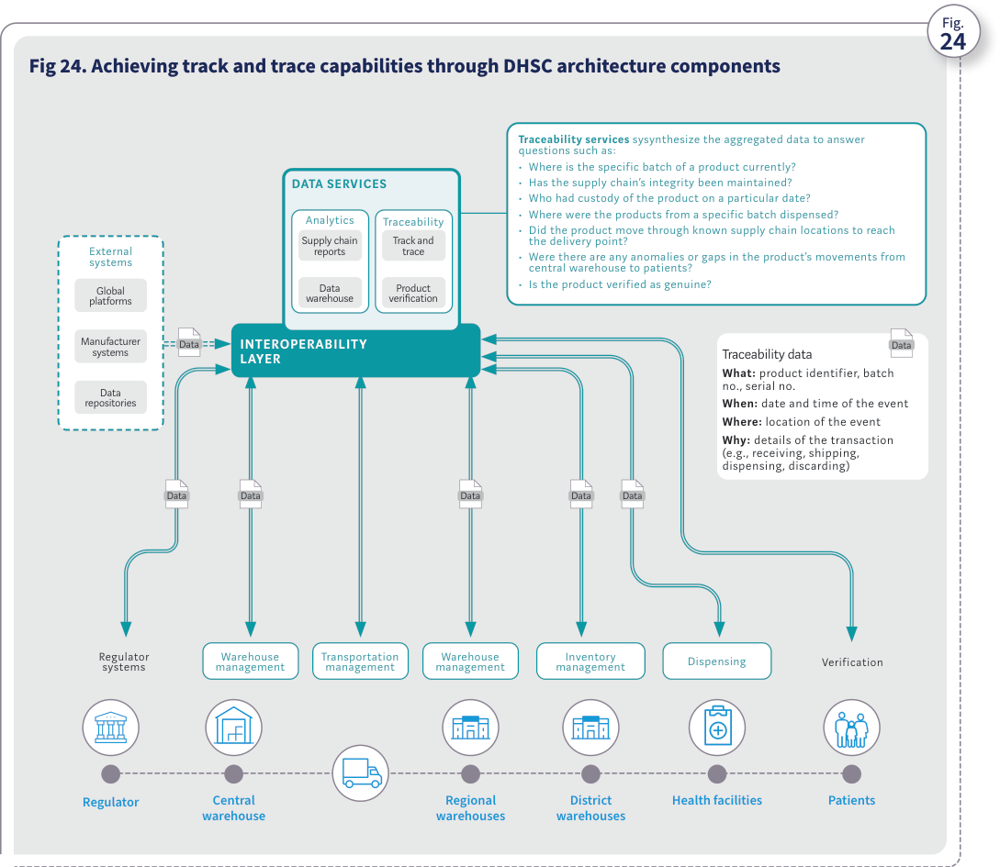</p>
<p><em>Source: WHO, Digital transformation handbook for health supply chain architecture, 2024, PDF page 55; rendered from the PDF's vector layer in the L1 entry.</em></p>
<p><em>Achieving track and trace capabilities through DHSC architecture components</em></p>
<p><a id="prose:ch04-page-056"></a><span class="block-actions" data-block="prose:ch04-page-056"><a class="ba-edit" href="https://github.com/litlfred/dth-sc/edit/main/folio/dth-sc/ch04-traceability/p-ch04-page-056.md" title="Edit this block's source on GitHub (folio/dth-sc/ch04-traceability/p-ch04-page-056.md)">✎ edit</a><a class="ba-feedback" href="https://github.com/litlfred/dth-sc/issues/new?title=Feedback+%5Bdth-sc%5D%3A+What+is+traceability%3F+Why+is+it+important%3F+Traceability+models+%E2%80%94+prose%3Ach04-page-056&amp;body=**Content%3A**+%60dth-sc%60%0A**Block%3A**+%60prose%3Ach04-page-056%60%0A**Section%3A**+What+is+traceability%3F+Why+is+it+important%3F+Traceability+models%0A**Source%3A**+https%3A%2F%2Fgithub.com%2Flitlfred%2Fdth-sc%2Fblob%2Fmain%2Ffolio%2Fdth-sc%2Fch04-traceability%2Fp-ch04-page-056.md%0A%0A**Type%3A**+general+%7C+technical+%7C+editorial%0A%0A**Comment%3A**%0A%0A%0A**Proposed+change%3A**%0A" title="Give feedback on this block (opens a GitHub issue)">📣 feedback</a></span>
The following are some factors to consider.</p>
<ul>
<li>While the institutionalization of traceability could be a drawn-out, intensive process, the use of existing technology assets where feasible can help minimize the costs of system development and implementation.</li>
<li>Designing the exchange of traceability data requires a technical understanding of applicable standards as well as a structured methodology. Traceability processes should be designed according to a structured architecture that is independent of the technology used to capture and share data. This independence is crucial to the flexibility and scalability of the system – that is, the ecosystem and the technology may evolve while the design of the traceability data content stays the same.</li>
<li>One of the most important and challenging areas related to the implementation of traceability, or any DHSC process, is the quality of the master data. In a traceability model, sharing data across all stakeholders of the supply chain creates an information flow that precedes the physical flow of the product. This creates a data chain-of-custody effect that requires each stakeholder in the process to share responsibility for maintaining data integrity and quality. It is important that the required data be limited to the master data needed for the traceability system and that it be defined in consultation with the stakeholders.</li>
<li>While the tracking and tracing of a product is predominantly conducted in country, traceability in fact commences before the product reaches that country. For example, manufacturers identify and mark the product using global standards and store traceability data in their databases, and those data are transferred to the recipient country to support local processes. Fig 25. Illustrative example of a traceability service interface Manufacturer Patients Central/regional warehouse Track and trace results for product 001001123123 Batch number: A1001234 Event Verified and received Shipped Verified and received Verified and dispensed Verified serial number 202 Event location Central warehouse Central warehouse Health facility Health facility 1°55'59.2"S 30°05'57.4"E Event date and time 11-Mar-2023 10:33:22 05-Apr-2023 14:05:00 06-Apr-2023 09:14:00 10-Apr-2023 15:43:00 10-Apr-2023 16:14:00 Health facilities Product code: 001001123123 Batch: A1001234 (serial nos. 201, 202, 203, 204) Exp. date: 240831 Data DATA SERVICES Analytics Traceability Data warehouse Product verification Supply chain reports Track and trace Warehouse management Inventory management Dispensing Event: Ship Event: Receive Event: Receive Event: Dispense Event: Ship Verify Verify Verify Traceability service interface Fig.</li>
</ul>
<p><a id="fig:25"></a><span class="block-actions" data-block="fig:25"><a class="ba-edit" href="https://github.com/litlfred/dth-sc/edit/main/folio/dth-sc/ch04-traceability/f-ch04-fig-25.md" title="Edit this block's source on GitHub (folio/dth-sc/ch04-traceability/f-ch04-fig-25.md)">✎ edit</a><a class="ba-feedback" href="https://github.com/litlfred/dth-sc/issues/new?title=Feedback+%5Bdth-sc%5D%3A+What+is+traceability%3F+Why+is+it+important%3F+Traceability+models+%E2%80%94+fig%3A25&amp;body=**Content%3A**+%60dth-sc%60%0A**Block%3A**+%60fig%3A25%60%0A**Section%3A**+What+is+traceability%3F+Why+is+it+important%3F+Traceability+models%0A**Source%3A**+https%3A%2F%2Fgithub.com%2Flitlfred%2Fdth-sc%2Fblob%2Fmain%2Ffolio%2Fdth-sc%2Fch04-traceability%2Ff-ch04-fig-25.md%0A%0A**Type%3A**+general+%7C+technical+%7C+editorial%0A%0A**Comment%3A**%0A%0A%0A**Proposed+change%3A**%0A" title="Give feedback on this block (opens a GitHub issue)">📣 feedback</a></span>
<strong>Figure 25.</strong> <a href="#fig:25" class="block-anchor" aria-label="Link to Figure 25" title="Link to Figure 25"><svg viewBox="0 0 16 16" width="14" height="14" fill="currentColor" aria-hidden="true"><use xlink:href="#svg-link"></use></svg></a></p>
<p>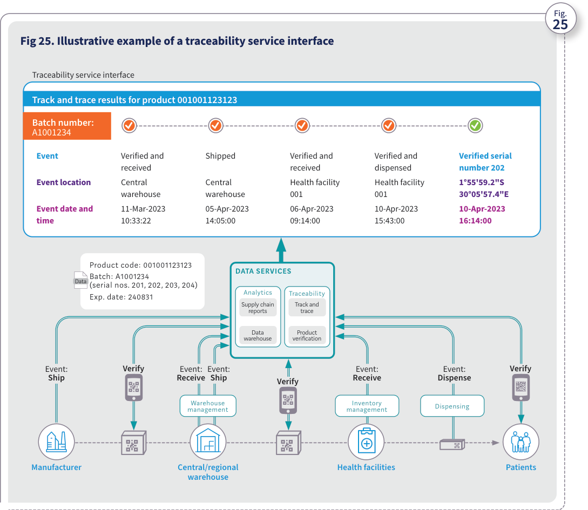</p>
<p><em>Source: WHO, Digital transformation handbook for health supply chain architecture, 2024, PDF page 56; rendered from the PDF's vector layer in the L1 entry.</em></p>
<p><em>Illustrative example of a traceability service interface</em></p>
<p><a id="pers:system-dhsc-traceability-hub"></a><span class="block-actions" data-block="pers:system-dhsc-traceability-hub"><a class="ba-edit" href="https://github.com/litlfred/dth-sc/edit/main/folio/dth-sc/ch04-traceability/pers-system-dhsc-traceability-hub.md" title="Edit this block's source on GitHub (folio/dth-sc/ch04-traceability/pers-system-dhsc-traceability-hub.md)">✎ edit</a><a class="ba-feedback" href="https://github.com/litlfred/dth-sc/issues/new?title=Feedback+%5Bdth-sc%5D%3A+What+is+traceability%3F+Why+is+it+important%3F+Traceability+models+%E2%80%94+pers%3Asystem-dhsc-traceability-hub&amp;body=**Content%3A**+%60dth-sc%60%0A**Block%3A**+%60pers%3Asystem-dhsc-traceability-hub%60%0A**Section%3A**+What+is+traceability%3F+Why+is+it+important%3F+Traceability+models%0A**Source%3A**+https%3A%2F%2Fgithub.com%2Flitlfred%2Fdth-sc%2Fblob%2Fmain%2Ffolio%2Fdth-sc%2Fch04-traceability%2Fpers-system-dhsc-traceability-hub.md%0A%0A**Type%3A**+general+%7C+technical+%7C+editorial%0A%0A**Comment%3A**%0A%0A%0A**Proposed+change%3A**%0A" title="Give feedback on this block (opens a GitHub issue)">📣 feedback</a></span>
<strong>Persona.</strong> <em>DHSC interoperability layer and traceability services hub (system)</em></p>
<p><em>System persona.</em> The shared DHSC architecture platform comprising the interoperability layer (authentication, orchestration, encryption, validation, transformation, translation), foundational registries (product, facility, supplier), central data warehouse, and traceability services (<code>Product verification</code>, <code>Track and trace</code>, <code>Supply chain reports</code>).</p>
<div class="table-wrapper"><table>
<thead>
<tr>
<th>Attribute</th>
<th>Description</th>
<th>Handbook basis</th>
</tr>
</thead>
<tbody>
<tr>
<td><strong>Role ID</strong></td>
<td><code>SC-R-16</code> (<code>pers:system-dhsc-traceability-hub</code>, <code>system</code>)</td>
<td>Ch 2 Fig. 14 (PDF p. 34), Ch 4 Figs. 24–25 (PDF pp. 55–56)</td>
</tr>
<tr>
<td><strong>Goals</strong></td>
<td>Mediate standards-based data exchange across disparate HSCISs and external/regulatory systems and synthesize master, transactional, and traceability event data (<code>what</code>, <code>when</code>, <code>where</code>, <code>why</code>) to answer verification and chain-of-custody queries.</td>
<td>Ch 2 Fig. 14 (PDF p. 34), Ch 4 Figs. 24–25 (PDF pp. 55–56)</td>
</tr>
<tr>
<td><strong>Tasks and responsibilities</strong></td>
<td>Authenticate and route messages across HSCISs; validate and transform traceability events against product and facility master data; aggregate events in the data warehouse; respond to point-of-dispense verification queries and regulatory batch/recall investigations (Ch 4 Figs. 24–25).</td>
<td>Ch 2 Fig. 14 (PDF p. 34), Ch 4 Figs. 24–25 (PDF pp. 55–56)</td>
</tr>
<tr>
<td><strong>Challenges and bottlenecks</strong></td>
<td>Requires consistent master data identifiers (GTIN/product code, GLN/facility code, batch, serial) and agreed data-exchange standards across all participating systems (Ch 1 Fig. 9, Ch 4 p. 56).</td>
<td>Ch 2 Fig. 14 (PDF p. 34), Ch 4 Figs. 24–25 (PDF pp. 55–56)</td>
</tr>
<tr>
<td><strong>BPMN lane(s)</strong></td>
<td><code>Lane_BP03_DHSCTraceabilityHub</code> (<code>bp:sc-bp-03-centralized-track-and-trace</code>)</td>
<td>Ch 2 Fig. 14 (PDF p. 34), Ch 4 Figs. 24–25 (PDF pp. 55–56)</td>
</tr>
<tr>
<td><strong>ArchiMate alignment (<code>dpi-h-ra</code> <code>0.3.0-draft.1</code>)</strong></td>
<td><code>Interoperability Layer</code> (<code>id-3398a2d96e915055bf5e7aef22f9fbf8</code>), <code>DPI-F Information Mediator</code> (<code>id-3c5d846710034c4595e206e748d65e36</code>), <code>Data Warehouse</code> (<code>id-2158ff0de2f95b2cbe005c3bf6fc9c01</code>), <code>Traceability Services</code> (<code>id-fdce32337758449aab42701096622582</code>), <code>Product Verification</code> (<code>id-975c5567001151299672c0341a733111</code>), <code>Track and Trace</code> (<code>id-bc68171ed2615dad80e6f7d8199f4057</code>), <code>Traceability Event</code> (<code>id-5dc77dae1bce5d11b288830795b31bdf</code>)</td>
<td><code>smart-ra#147</code></td>
</tr>
</tbody>
</table></div>
<p><a id="bp:sc-bp-03-centralized-track-and-trace"></a><span class="block-actions" data-block="bp:sc-bp-03-centralized-track-and-trace"><a class="ba-edit" href="https://github.com/litlfred/dth-sc/edit/main/folio/dth-sc/ch04-traceability/bp-sc-bp-03-centralized-track-and-trace.md" title="Edit this block's source on GitHub (folio/dth-sc/ch04-traceability/bp-sc-bp-03-centralized-track-and-trace.md)">✎ edit</a><a class="ba-feedback" href="https://github.com/litlfred/dth-sc/issues/new?title=Feedback+%5Bdth-sc%5D%3A+What+is+traceability%3F+Why+is+it+important%3F+Traceability+models+%E2%80%94+bp%3Asc-bp-03-centralized-track-and-trace&amp;body=**Content%3A**+%60dth-sc%60%0A**Block%3A**+%60bp%3Asc-bp-03-centralized-track-and-trace%60%0A**Section%3A**+What+is+traceability%3F+Why+is+it+important%3F+Traceability+models%0A**Source%3A**+https%3A%2F%2Fgithub.com%2Flitlfred%2Fdth-sc%2Fblob%2Fmain%2Ffolio%2Fdth-sc%2Fch04-traceability%2Fbp-sc-bp-03-centralized-track-and-trace.md%0A%0A**Type%3A**+general+%7C+technical+%7C+editorial%0A%0A**Comment%3A**%0A%0A%0A**Proposed+change%3A**%0A" title="Give feedback on this block (opens a GitHub issue)">📣 feedback</a></span>
<strong>Business-process.</strong> <em>Centralized medical product track-and-trace, verification and recall workflow (SC-BP-03)</em></p>
<p>Models end-to-end medical product serialization, traceability event capture (what: product identifier, batch, serial; when: timestamp; where: location; why: receive, ship, dispense, discard), central aggregation via the DHSC interoperability layer and data warehouse, point-of-dispense verification, and regulatory anomaly/recall investigation in the centralized traceability model (Chapter 4 Figures 24–25).</p>
<p>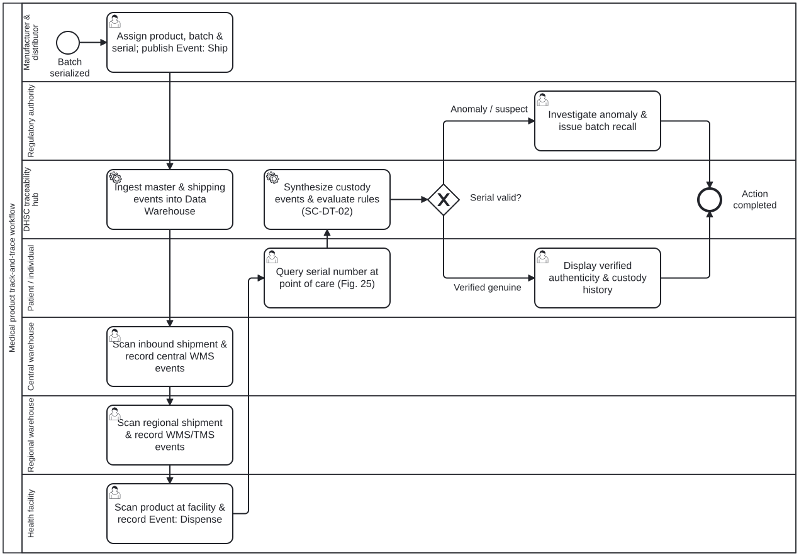</p>
<p><strong>Swimlanes (one lane per role):</strong></p>
<ul>
<li><code>Lane_BP03_Manufacturer</code> — <strong>Manufacturer and distributor</strong> (<code>pers:manufacturer-distributor</code>)</li>
<li><code>Lane_BP03_CentralWarehouse</code> — <strong>Central warehouse (central medical store)</strong> (<code>pers:central-warehouse</code>)</li>
<li><code>Lane_BP03_RegionalWarehouse</code> — <strong>Regional and district warehouse (branch warehouse)</strong> (<code>pers:regional-district-warehouse</code>)</li>
<li><code>Lane_BP03_HealthFacility</code> — <strong>Health facility (service delivery point)</strong> (<code>pers:health-facility</code>)</li>
<li><code>Lane_BP03_DHSCTraceabilityHub</code> — <strong>DHSC interoperability layer and traceability services hub (system)</strong> (<code>pers:system-dhsc-traceability-hub</code>)</li>
<li><code>Lane_BP03_Regulatory</code> — <strong>National regulatory authority</strong> (<code>pers:regulatory-authority</code>)</li>
<li><code>Lane_BP03_Individual</code> — <strong>Individual (health service user / patient)</strong> (<code>pers:health-service-user</code>)</li>
</ul>
<div class="table-wrapper"><table>
<thead>
<tr>
<th>Step ID</th>
<th>Lane (persona)</th>
<th>Activity</th>
<th>Linked blocks / decision table</th>
<th>Handbook basis</th>
</tr>
</thead>
<tbody>
<tr>
<td><code>Task_BP03_01</code></td>
<td><code>pers:manufacturer-distributor</code></td>
<td>Assign product code, batch, expiry &#x26; serial numbers; publish Event: Ship (what/when/where/why)</td>
<td><code>prose:ch04-page-056</code>, <code>fig:ch04-fig-24</code>, <code>fig:ch04-fig-25</code></td>
<td>Ch 4 'Traceability models' and Figs. 24–25 (PDF pp. 54–56)</td>
</tr>
<tr>
<td><code>Task_BP03_02</code></td>
<td><code>pers:system-dhsc-traceability-hub</code></td>
<td>Ingest manufacturer master &#x26; shipping event data via Interoperability Layer into Data Warehouse</td>
<td><code>prose:ch04-page-055</code>, <code>fig:ch04-fig-24</code>, <code>dt:sc-dt-02-traceability-model-selection</code></td>
<td>Ch 4 'Traceability models' and Figs. 24–25 (PDF pp. 54–56)</td>
</tr>
<tr>
<td><code>Task_BP03_03</code></td>
<td><code>pers:central-warehouse</code></td>
<td>Scan inbound shipment, verify serials &#x26; record Event: Receive and Event: Ship in <a href="../folio-assistant-core/glossary/instance/dth-sc/#dth-sc--dth-sc--warehouse-management-system" title="A computer application that manages and optimizes workflows and the storage of goods within a warehouse." class="fa-term">WMS</a></td>
<td><code>prose:ch04-page-055</code>, <code>fig:ch04-fig-24</code>, <code>fig:ch04-fig-25</code></td>
<td>Ch 4 'Traceability models' and Figs. 24–25 (PDF pp. 54–56)</td>
</tr>
<tr>
<td><code>Task_BP03_04</code></td>
<td><code>pers:regional-district-warehouse</code></td>
<td>Scan consignment at regional/district warehouse, verify &#x26; record Event: Receive / Ship in WMS &#x26; TMS</td>
<td><code>prose:ch04-page-055</code>, <code>fig:ch04-fig-24</code>, <code>fig:ch04-fig-25</code></td>
<td>Ch 4 'Traceability models' and Figs. 24–25 (PDF pp. 54–56)</td>
</tr>
<tr>
<td><code>Task_BP03_05</code></td>
<td><code>pers:health-facility</code></td>
<td>Scan product at health facility, verify serial &#x26; record Event: Receive and Event: Dispense</td>
<td><code>prose:ch04-page-055</code>, <code>fig:ch04-fig-24</code>, <code>fig:ch04-fig-25</code></td>
<td>Ch 4 'Traceability models' and Figs. 24–25 (PDF pp. 54–56)</td>
</tr>
<tr>
<td><code>Task_BP03_06</code></td>
<td><code>pers:health-service-user</code></td>
<td>Query product serial number via mobile/web verification interface at point of care (Fig. 25)</td>
<td><code>prose:ch04-page-055</code>, <code>fig:ch04-fig-24</code>, <code>fig:ch04-fig-25</code></td>
<td>Ch 4 'Traceability models' and Figs. 24–25 (PDF pp. 54–56)</td>
</tr>
<tr>
<td><code>Task_BP03_07</code></td>
<td><code>pers:system-dhsc-traceability-hub</code></td>
<td>Synthesize chain-of-custody events and evaluate verification &#x26; anomaly rules (Fig. 24, SC-DT-02)</td>
<td><code>prose:ch04-page-055</code>, <code>fig:ch04-fig-24</code>, <code>dt:sc-dt-02-traceability-model-selection</code></td>
<td>Ch 4 'Traceability models' and Figs. 24–25 (PDF pp. 54–56)</td>
</tr>
<tr>
<td><code>Task_BP03_08</code></td>
<td><code>pers:health-service-user</code></td>
<td>Display verified authenticity and custody history to patient and health worker (Fig. 25)</td>
<td><code>prose:ch04-page-056</code>, <code>fig:ch04-fig-25</code></td>
<td>Ch 4 'Traceability models' and Figs. 24–25 (PDF pp. 54–56)</td>
</tr>
<tr>
<td><code>Task_BP03_09</code></td>
<td><code>pers:regulatory-authority</code></td>
<td>Investigate anomaly / suspect serial and issue targeted batch quarantine or recall</td>
<td><code>prose:ch04-page-055</code>, <code>fig:ch04-fig-24</code></td>
<td>Ch 4 'Traceability models' and Figs. 24–25 (PDF pp. 54–56)</td>
</tr>
</tbody>
</table></div>
<p><a id="chap:ch05-country-examples"></a></p>
<h2 id="h-chap:ch05-country-examples">
  
  
    <a href="#h-chap:ch05-country-examples" class="anchor-heading" aria-labelledby="h-chap:ch05-country-examples"><svg viewBox="0 0 16 16" aria-hidden="true"><use xlink:href="#svg-link"></use></svg></a> Chapter 5. Country examples
  
  
</h2>
    
<p><a id="sec:ch05-chapter-overview"></a></p>
<h3 id="h-sec:ch05-chapter-overview">
  
  
    <a href="#h-sec:ch05-chapter-overview" class="anchor-heading" aria-labelledby="h-sec:ch05-chapter-overview"><svg viewBox="0 0 16 16" aria-hidden="true"><use xlink:href="#svg-link"></use></svg></a> Chapter overview
  
  
</h3>
    
<p><a id="prose:ch05-page-057"></a><span class="block-actions" data-block="prose:ch05-page-057"><a class="ba-edit" href="https://github.com/litlfred/dth-sc/edit/main/folio/dth-sc/ch05-country-examples/p-ch05-page-057.md" title="Edit this block's source on GitHub (folio/dth-sc/ch05-country-examples/p-ch05-page-057.md)">✎ edit</a><a class="ba-feedback" href="https://github.com/litlfred/dth-sc/issues/new?title=Feedback+%5Bdth-sc%5D%3A+Chapter+overview+%E2%80%94+prose%3Ach05-page-057&amp;body=**Content%3A**+%60dth-sc%60%0A**Block%3A**+%60prose%3Ach05-page-057%60%0A**Section%3A**+Chapter+overview%0A**Source%3A**+https%3A%2F%2Fgithub.com%2Flitlfred%2Fdth-sc%2Fblob%2Fmain%2Ffolio%2Fdth-sc%2Fch05-country-examples%2Fp-ch05-page-057.md%0A%0A**Type%3A**+general+%7C+technical+%7C+editorial%0A%0A**Comment%3A**%0A%0A%0A**Proposed+change%3A**%0A" title="Give feedback on this block (opens a GitHub issue)">📣 feedback</a></span>
Chapter Country examples Ethiopia Malawi Rwanda</p>
<p><a id="sec:ch05-ethiopias-dhsc-initiative"></a></p>
<h3 id="h-sec:ch05-ethiopias-dhsc-initiative">
  
  
    <a href="#h-sec:ch05-ethiopias-dhsc-initiative" class="anchor-heading" aria-labelledby="h-sec:ch05-ethiopias-dhsc-initiative"><svg viewBox="0 0 16 16" aria-hidden="true"><use xlink:href="#svg-link"></use></svg></a> Ethiopia's DHSC initiative
  
  
</h3>
    
<p><a id="prose:ch05-page-058"></a><span class="block-actions" data-block="prose:ch05-page-058"><a class="ba-edit" href="https://github.com/litlfred/dth-sc/edit/main/folio/dth-sc/ch05-country-examples/p-ch05-page-058.md" title="Edit this block's source on GitHub (folio/dth-sc/ch05-country-examples/p-ch05-page-058.md)">✎ edit</a><a class="ba-feedback" href="https://github.com/litlfred/dth-sc/issues/new?title=Feedback+%5Bdth-sc%5D%3A+Ethiopia%27s+DHSC+initiative+%E2%80%94+prose%3Ach05-page-058&amp;body=**Content%3A**+%60dth-sc%60%0A**Block%3A**+%60prose%3Ach05-page-058%60%0A**Section%3A**+Ethiopia%27s+DHSC+initiative%0A**Source%3A**+https%3A%2F%2Fgithub.com%2Flitlfred%2Fdth-sc%2Fblob%2Fmain%2Ffolio%2Fdth-sc%2Fch05-country-examples%2Fp-ch05-page-058.md%0A%0A**Type%3A**+general+%7C+technical+%7C+editorial%0A%0A**Comment%3A**%0A%0A%0A**Proposed+change%3A**%0A" title="Give feedback on this block (opens a GitHub issue)">📣 feedback</a></span>
Ethiopia’s <a href="../folio-assistant-core/glossary/instance/dth-sc/#dth-sc--dth-sc--digital-health-supply-chain" title="The knowledge and practice of adopting digital technologies to improve health supply chains and enable the delivery of quality-assured health products to individuals when and where they need them." class="fa-term">DHSC</a> initiative Status The Government of Ethiopia issued its Information Revolution Roadmap in April 2016, which recognized digital health projects as major transformational tools. Under MOH leadership, it subsequently issued an eHealth Architecture (January 2018), strategy (2020) and blueprint (August 2021). The eHealth Architecture created a foundational framework for health information systems to interact and for proper management of systems and coordination of stakeholders. Digitization of the supply chain is part of the eHealth Architecture and aligns with the Digital Ethiopia 2025 initiative, which encourages all government sectors to proactively explore and embrace appropriate technologies. Process The supply chain systems were developed with support from development partners. Initial workshops were conducted to consider various assessment results and observed gaps and envision Ethiopia’s future <a href="../folio-assistant-core/glossary/instance/dth-sc/#dth-sc--dth-sc--health-supply-chain-information-system" title="A paper-based or software tool that supports the management and/or operations of the health supply chain." class="fa-term">HSCISs</a>. TWGs were established under the leadership of top management to provide system analysis and process optimization. A change management team was established to manage changes during implementation. Current state As of March 2024, national and facility-level supply chain systems were in use in Ethiopia. (See Fig. 26.) These systems are integrated and share information, and the product directory system accounts for differences between national- level and facility-level systems. In addition, the supply chain system and Electronic Regulatory Information System (eRIS) are integrated with eCustom and eTrade systems. Future state An ERP system that is underway will unify various systems, from downstream supply chain systems to other upstream systems. (See Fig. 27.) A centralized master data management tool will ensure a single source of information and comprehensive traceability. New technologies will enable end-to-end visibility across the pharmaceuticals supply chain. Insights</p>
<ul>
<li>The MOH’s leadership of the effort, engagement of all key stakeholders in drafting the architecture, and the incorporation of every partner’s priorities and inputs will help to sustainably enhance implementation.</li>
<li>The health supply chain initiative aligns with the priorities of the national digitization agenda.</li>
<li>National TWGs and the steering committee will help ensure governance and alignment of DHSC initiatives.</li>
<li>Engagement of all key stakeholders from the beginning will ensure a collaborative and aligned effort with optimal use of resources.</li>
<li>Alignment of various national strategies and digital architectures will ensure optimal use of resources and interoperable digital ecosystems.</li>
<li>The roadmap, strategy, blueprint and architecture will ensure that all health system digitalization efforts align with a sustainable and scalable shared vision. About Ethiopia Public health supply chain structure (2023) Central warehouse 1 Functional hospitals 383 Branch warehouses 19 Functional health centres 3826 Functional health posts 17 569</li>
</ul>
<p><a id="prose:ch05-page-059"></a><span class="block-actions" data-block="prose:ch05-page-059"><a class="ba-edit" href="https://github.com/litlfred/dth-sc/edit/main/folio/dth-sc/ch05-country-examples/p-ch05-page-059.md" title="Edit this block's source on GitHub (folio/dth-sc/ch05-country-examples/p-ch05-page-059.md)">✎ edit</a><a class="ba-feedback" href="https://github.com/litlfred/dth-sc/issues/new?title=Feedback+%5Bdth-sc%5D%3A+Ethiopia%27s+DHSC+initiative+%E2%80%94+prose%3Ach05-page-059&amp;body=**Content%3A**+%60dth-sc%60%0A**Block%3A**+%60prose%3Ach05-page-059%60%0A**Section%3A**+Ethiopia%27s+DHSC+initiative%0A**Source%3A**+https%3A%2F%2Fgithub.com%2Flitlfred%2Fdth-sc%2Fblob%2Fmain%2Ffolio%2Fdth-sc%2Fch05-country-examples%2Fp-ch05-page-059.md%0A%0A**Type%3A**+general+%7C+technical+%7C+editorial%0A%0A**Comment%3A**%0A%0A%0A**Proposed+change%3A**%0A" title="Give feedback on this block (opens a GitHub issue)">📣 feedback</a></span>
Investment in new software Software under development Investment in strengthening software Future investment in new software Fully functional software Investment in scaling software LEGEND INTEROPERABILITY LAYER (OpenHIM) Current state As of Mar. 2024 Future state INTER- OPERABILITY LAYER Enabling components Authentication Orchestration Encryption Validation Transformation Translation HEALTH SUPPLY CHAIN INFORMATION SYSTEMS HEALTH SUPPLY CHAIN INFORMATION SYSTEMS National level HEALTH SUPPLY CHAIN INFORMATION SYSTEMS Facility level Forecasting and planning Forecasting and planning Procurement Procurement Inventory management Inventory management Warehouse management Order management Order management Dispensing Warehouse management Warehouse management Inventory management Transportation management Regulatory Dispensing EXTERNAL SYSTEMS EXTERNAL SYSTEMS SHARED SERVICES SHARED SERVICES Foundational components Foundational components Digital ecosystems Digital ecosystems DATA SERVICES Analytics <a href="../folio-assistant-core/glossary/instance/dth-sc/#dth-sc--dth-sc--traceability" title="The ability to trace something." class="fa-term">Traceability</a> Data warehouse Product verification NSC dashboard, ERP Track and trace Master health facility registry Health mgmt. info systems DHIS2 eTrade eLMIS, VITAS eLMIS VITAS Terminology services EMR eCustom eCustom FANOS DAGU VITAS eLMIS eAPTs eRIS National product catalog DIGITAL HEALTH SUPPLY CHAIN ENTERPRISE Master health facility registry Product directory service National product catalog Health mgmt. info systems DHIS2 EMR eAPTs OO, DAGU ERP ERP Online payment gateway ERP ERP ERP DAGU FANOS mBrana DAGU eTrade GFPVAN eCustom Manufacturers Fig. 26. Current-state supply chain systems in Ethiopia Fig. 27. Future-state supply chain systems in Ethiopia Fig. Fig. Country examples</p>
<p><a id="fig:26-27"></a><span class="block-actions" data-block="fig:26-27"><a class="ba-edit" href="https://github.com/litlfred/dth-sc/edit/main/folio/dth-sc/ch05-country-examples/f-ch05-fig-26-27.md" title="Edit this block's source on GitHub (folio/dth-sc/ch05-country-examples/f-ch05-fig-26-27.md)">✎ edit</a><a class="ba-feedback" href="https://github.com/litlfred/dth-sc/issues/new?title=Feedback+%5Bdth-sc%5D%3A+Ethiopia%27s+DHSC+initiative+%E2%80%94+fig%3A26-27&amp;body=**Content%3A**+%60dth-sc%60%0A**Block%3A**+%60fig%3A26-27%60%0A**Section%3A**+Ethiopia%27s+DHSC+initiative%0A**Source%3A**+https%3A%2F%2Fgithub.com%2Flitlfred%2Fdth-sc%2Fblob%2Fmain%2Ffolio%2Fdth-sc%2Fch05-country-examples%2Ff-ch05-fig-26-27.md%0A%0A**Type%3A**+general+%7C+technical+%7C+editorial%0A%0A**Comment%3A**%0A%0A%0A**Proposed+change%3A**%0A" title="Give feedback on this block (opens a GitHub issue)">📣 feedback</a></span>
<strong>Figure 26–27.</strong> <a href="#fig:26-27" class="block-anchor" aria-label="Link to Figure 26–27" title="Link to Figure 26–27"><svg viewBox="0 0 16 16" width="14" height="14" fill="currentColor" aria-hidden="true"><use xlink:href="#svg-link"></use></svg></a></p>
<p>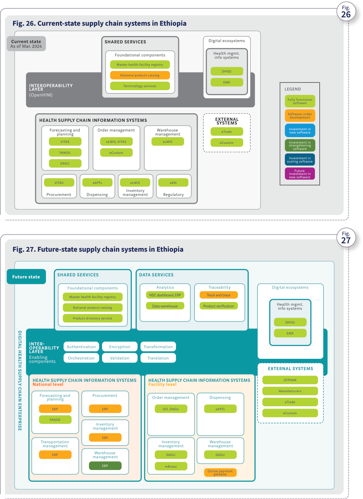</p>
<p><em>Source: WHO, Digital transformation handbook for health supply chain architecture, 2024, PDF page 59; rendered from the PDF's vector layer in the L1 entry.</em></p>
<p><em>Fig. 26. Current-state supply chain systems in Ethiopia; Fig. 27. Future-state supply chain systems in Ethiopia</em></p>
<p><a id="sec:ch05-malawis-dhsc-initiative"></a></p>
<h3 id="h-sec:ch05-malawis-dhsc-initiative">
  
  
    <a href="#h-sec:ch05-malawis-dhsc-initiative" class="anchor-heading" aria-labelledby="h-sec:ch05-malawis-dhsc-initiative"><svg viewBox="0 0 16 16" aria-hidden="true"><use xlink:href="#svg-link"></use></svg></a> Malawi's DHSC initiative
  
  
</h3>
    
<p><a id="prose:ch05-page-060"></a><span class="block-actions" data-block="prose:ch05-page-060"><a class="ba-edit" href="https://github.com/litlfred/dth-sc/edit/main/folio/dth-sc/ch05-country-examples/p-ch05-page-060.md" title="Edit this block's source on GitHub (folio/dth-sc/ch05-country-examples/p-ch05-page-060.md)">✎ edit</a><a class="ba-feedback" href="https://github.com/litlfred/dth-sc/issues/new?title=Feedback+%5Bdth-sc%5D%3A+Malawi%27s+DHSC+initiative+%E2%80%94+prose%3Ach05-page-060&amp;body=**Content%3A**+%60dth-sc%60%0A**Block%3A**+%60prose%3Ach05-page-060%60%0A**Section%3A**+Malawi%27s+DHSC+initiative%0A**Source%3A**+https%3A%2F%2Fgithub.com%2Flitlfred%2Fdth-sc%2Fblob%2Fmain%2Ffolio%2Fdth-sc%2Fch05-country-examples%2Fp-ch05-page-060.md%0A%0A**Type%3A**+general+%7C+technical+%7C+editorial%0A%0A**Comment%3A**%0A%0A%0A**Proposed+change%3A**%0A" title="Give feedback on this block (opens a GitHub issue)">📣 feedback</a></span>
Malawi’s <a href="../folio-assistant-core/glossary/instance/dth-sc/#dth-sc--dth-sc--digital-health-supply-chain" title="The knowledge and practice of adopting digital technologies to improve health supply chains and enable the delivery of quality-assured health products to individuals when and where they need them." class="fa-term">DHSC</a> initiative Status The country’s Supply Chain Systems Architecture (SCSA) was collaboratively developed in 2021 under the leadership of the Health Technical Support Services (HTSS) division of the MOH. It was approved by the deputy minister of health in September 2022. Process The SCSA was developed with support from the USAID GHSC-PSM and was informed by a SCISMM assessment and an October 2021 workshop that was held to help shape the vision, strategy and architecture for Malawi’s <a href="../folio-assistant-core/glossary/instance/dth-sc/#dth-sc--dth-sc--health-supply-chain-information-system" title="A paper-based or software tool that supports the management and/or operations of the health supply chain." class="fa-term">HSCISs</a>. The workshop included stakeholders such as the MOH, the Central Medical Stores Trust, the <a href="../folio-assistant-core/glossary/instance/dpi-h-ra/#dpi-h-ra--dpi-h-ra--digital-health" title="The systematic application of information and communications technologies, computer science, and data to support informed decision-making by individuals, the health workforce, and health systems, to strengthen resilience to disease and improve health and wellness." class="fa-term">Digital Health</a> Division, the Pharmacy and Medicines Regulatory Authority and partners such as USAID, the United Nations (UN) Development Programme, the United States Centers for Disease Control and Prevention, and the UN World Food Programme. The SCSA was updated based on feedback from subsequent reviews, and a second workshop in September 2022 at which the final version was approved. Current state As of December 2023, various HSCISs lacked clarity about their functions, sometimes resulting in overlaps, as depicted in Fig. 28. Future state The SCSA provides a comprehensive framework that defines supply chain systems and how they will function together using shared services such as the National Product Catalog (NPC). It accounts for differences between national-level and facility-level systems and aligns with the country’s Master Supply Chain Transformation Plan, as depicted in Fig. 29. Fig. 30 shows the visualization of the future-state architecture from the SCSA itself. Insights</p>
<ul>
<li>Syncing DHSC priorities with Malawi’s national agenda, as directed by its top leaders, has created momentum and ensured cohesion among all stakeholders.</li>
<li>Having HTSS and the MOH lead the effort ensured collaboration and engagement among all stakeholders. This will help sustainably advance SCSA implementations.</li>
<li>A steering committee initiated after the SCSA launch is helping to provide governance and ensure alignment of all DHSC initiatives.</li>
<li>Engaging all stakeholders from the beginning (including government organizations, supply chain partners donors and implementing partners) will help ensure a collaborative and aligned effort with optimal use of resources.</li>
<li>An overarching strategy and architecture such as SCSA ensures that the efforts of all donors and partners align and serve a common national vision.</li>
<li>Holistic assessments such as SCISMM provide insights into gaps in and opportunities for health supply chain digitalization. About Malawi Public health supply chain structure Central warehouse 1 Health facilities 720 Regional warehouses 3</li>
</ul>
<p><a id="prose:ch05-page-061"></a><span class="block-actions" data-block="prose:ch05-page-061"><a class="ba-edit" href="https://github.com/litlfred/dth-sc/edit/main/folio/dth-sc/ch05-country-examples/p-ch05-page-061.md" title="Edit this block's source on GitHub (folio/dth-sc/ch05-country-examples/p-ch05-page-061.md)">✎ edit</a><a class="ba-feedback" href="https://github.com/litlfred/dth-sc/issues/new?title=Feedback+%5Bdth-sc%5D%3A+Malawi%27s+DHSC+initiative+%E2%80%94+prose%3Ach05-page-061&amp;body=**Content%3A**+%60dth-sc%60%0A**Block%3A**+%60prose%3Ach05-page-061%60%0A**Section%3A**+Malawi%27s+DHSC+initiative%0A**Source%3A**+https%3A%2F%2Fgithub.com%2Flitlfred%2Fdth-sc%2Fblob%2Fmain%2Ffolio%2Fdth-sc%2Fch05-country-examples%2Fp-ch05-page-061.md%0A%0A**Type%3A**+general+%7C+technical+%7C+editorial%0A%0A**Comment%3A**%0A%0A%0A**Proposed+change%3A**%0A" title="Give feedback on this block (opens a GitHub issue)">📣 feedback</a></span>
Investment in new software Software under development Investment in strengthening software Future investment in new software Fully functional software Investment in scaling software LEGEND INTEROPERABILITY LAYER (OpenHIM) Current state As of Dec. 2023 Future state INTER- OPERABILITY LAYER Enabling components Authentication Orchestration Encryption Validation Transformation Translation HEALTH SUPPLY CHAIN INFORMATION SYSTEMS National level HEALTH SUPPLY CHAIN INFORMATION SYSTEMS Facility level HEALTH SUPPLY CHAIN INFORMATION SYSTEMS Forecasting and planning Forecasting &#x26; planning Procurement Procurement Supplier and contract management Inventory management Warehouse management Order management Order management Dispensing Warehouse management Inventory management Transportation management Dispensing EXTERNAL SYSTEMS EXTERNAL SYSTEMS SHARED SERVICES SHARED SERVICES Foundational components Foundational components Digital ecosystems Digital Ecosystems DATA SERVICES Analytics <a href="../folio-assistant-core/glossary/instance/dth-sc/#dth-sc--dth-sc--traceability" title="The ability to trace something." class="fa-term">Traceability</a> Data warehouse Product verification Supply chain reports Track and trace Master health facility registry Health mgmt. info systems DHIS2 Navision QAT Terminology services OpenLMIS QuanTB Navision cStock eHIN National product catalog DIGITAL HEALTH SUPPLY CHAIN ENTERPRISE Master health facility registry Supplier registry National product catalog Health mgmt. info systems DHIS2 EMR eHIN OpenLMIS QAT New system Navision E-GP E-GP OpenLMIS QuanTB cStock Manufacturers GFPVAN Parallel supply chains GFPVAN Fig. 28. Current-state supply chain systems in Malawi Fig. 29. Future-state supply chain systems in Malawi Fig. Fig. Country examples</p>
<p><a id="fig:28-29"></a><span class="block-actions" data-block="fig:28-29"><a class="ba-edit" href="https://github.com/litlfred/dth-sc/edit/main/folio/dth-sc/ch05-country-examples/f-ch05-fig-28-29.md" title="Edit this block's source on GitHub (folio/dth-sc/ch05-country-examples/f-ch05-fig-28-29.md)">✎ edit</a><a class="ba-feedback" href="https://github.com/litlfred/dth-sc/issues/new?title=Feedback+%5Bdth-sc%5D%3A+Malawi%27s+DHSC+initiative+%E2%80%94+fig%3A28-29&amp;body=**Content%3A**+%60dth-sc%60%0A**Block%3A**+%60fig%3A28-29%60%0A**Section%3A**+Malawi%27s+DHSC+initiative%0A**Source%3A**+https%3A%2F%2Fgithub.com%2Flitlfred%2Fdth-sc%2Fblob%2Fmain%2Ffolio%2Fdth-sc%2Fch05-country-examples%2Ff-ch05-fig-28-29.md%0A%0A**Type%3A**+general+%7C+technical+%7C+editorial%0A%0A**Comment%3A**%0A%0A%0A**Proposed+change%3A**%0A" title="Give feedback on this block (opens a GitHub issue)">📣 feedback</a></span>
<strong>Figure 28–29.</strong> <a href="#fig:28-29" class="block-anchor" aria-label="Link to Figure 28–29" title="Link to Figure 28–29"><svg viewBox="0 0 16 16" width="14" height="14" fill="currentColor" aria-hidden="true"><use xlink:href="#svg-link"></use></svg></a></p>
<p>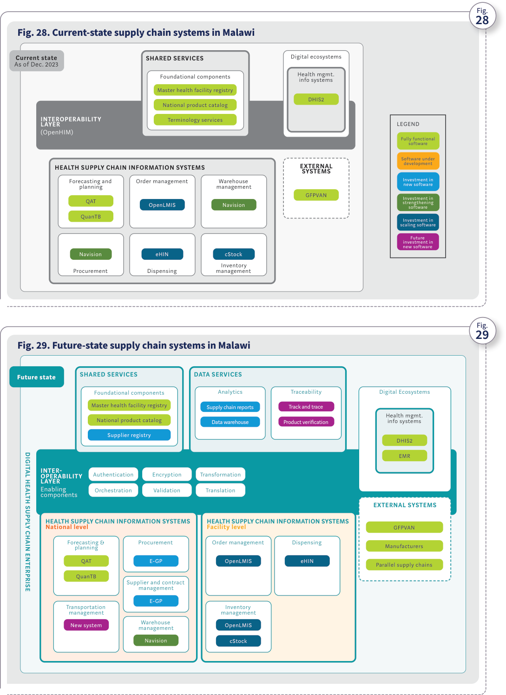</p>
<p><em>Source: WHO, Digital transformation handbook for health supply chain architecture, 2024, PDF page 61; rendered from the PDF's vector layer in the L1 entry.</em></p>
<p><em>Fig. 28. Current-state supply chain systems in Malawi; Fig. 29. Future-state supply chain systems in Malawi</em></p>
<p><a id="prose:ch05-page-062"></a><span class="block-actions" data-block="prose:ch05-page-062"><a class="ba-edit" href="https://github.com/litlfred/dth-sc/edit/main/folio/dth-sc/ch05-country-examples/p-ch05-page-062.md" title="Edit this block's source on GitHub (folio/dth-sc/ch05-country-examples/p-ch05-page-062.md)">✎ edit</a><a class="ba-feedback" href="https://github.com/litlfred/dth-sc/issues/new?title=Feedback+%5Bdth-sc%5D%3A+Malawi%27s+DHSC+initiative+%E2%80%94+prose%3Ach05-page-062&amp;body=**Content%3A**+%60dth-sc%60%0A**Block%3A**+%60prose%3Ach05-page-062%60%0A**Section%3A**+Malawi%27s+DHSC+initiative%0A**Source%3A**+https%3A%2F%2Fgithub.com%2Flitlfred%2Fdth-sc%2Fblob%2Fmain%2Ffolio%2Fdth-sc%2Fch05-country-examples%2Fp-ch05-page-062.md%0A%0A**Type%3A**+general+%7C+technical+%7C+editorial%0A%0A**Comment%3A**%0A%0A%0A**Proposed+change%3A**%0A" title="Give feedback on this block (opens a GitHub issue)">📣 feedback</a></span>
Regulatory National Supply Chain Information Systems (NSCIS) Foundational Components Analytics &#x26; Business Intelligence Data Warehouse Forecasting &#x26; Planning (QAT, QuanTB) Procurement (e-GP) Supplier &#x26; Contract Management (e-GP) Warehouse Management (Navision) Transportation Management (New) Master Health Product Registry – NPC Master Health Facility Registry (DHIS2) Supplier Registry (e-GP) Terminology Services Interoperability Layer Dashboards Reports Traceability Returns &#x26; Recalls Verification Facilities’ Supply Chain Information Systems (FSCIS) Dispensing (eHIN) <a href="../folio-assistant-core/glossary/instance/dth-sc/#dth-sc--dth-sc--order-management" title="The planning, directing, monitoring and controlling of the processes related to customer or requisition orders." class="fa-term">Order Management</a> (OpenLMIS) Inventory Management (OpenLMIS, cStock) Product Item Registration Database Interoperability Layer - Data Transformation, Data Orchestration &#x26; Data Exchange (OpenHIM) Global Manufacturers Fig. 30. Visualization of future-state architecture from Malawi’s SCSA Fig. Source: adapted from Malawi Supply Chain Systems Architecture for Commodity Tracking and Tracing (2022). Malawi Ministry of Health and Population.</p>
<p><a id="fig:30"></a><span class="block-actions" data-block="fig:30"><a class="ba-edit" href="https://github.com/litlfred/dth-sc/edit/main/folio/dth-sc/ch05-country-examples/f-ch05-fig-30.md" title="Edit this block's source on GitHub (folio/dth-sc/ch05-country-examples/f-ch05-fig-30.md)">✎ edit</a><a class="ba-feedback" href="https://github.com/litlfred/dth-sc/issues/new?title=Feedback+%5Bdth-sc%5D%3A+Malawi%27s+DHSC+initiative+%E2%80%94+fig%3A30&amp;body=**Content%3A**+%60dth-sc%60%0A**Block%3A**+%60fig%3A30%60%0A**Section%3A**+Malawi%27s+DHSC+initiative%0A**Source%3A**+https%3A%2F%2Fgithub.com%2Flitlfred%2Fdth-sc%2Fblob%2Fmain%2Ffolio%2Fdth-sc%2Fch05-country-examples%2Ff-ch05-fig-30.md%0A%0A**Type%3A**+general+%7C+technical+%7C+editorial%0A%0A**Comment%3A**%0A%0A%0A**Proposed+change%3A**%0A" title="Give feedback on this block (opens a GitHub issue)">📣 feedback</a></span>
<strong>Figure 30.</strong> <a href="#fig:30" class="block-anchor" aria-label="Link to Figure 30" title="Link to Figure 30"><svg viewBox="0 0 16 16" width="14" height="14" fill="currentColor" aria-hidden="true"><use xlink:href="#svg-link"></use></svg></a></p>
<p>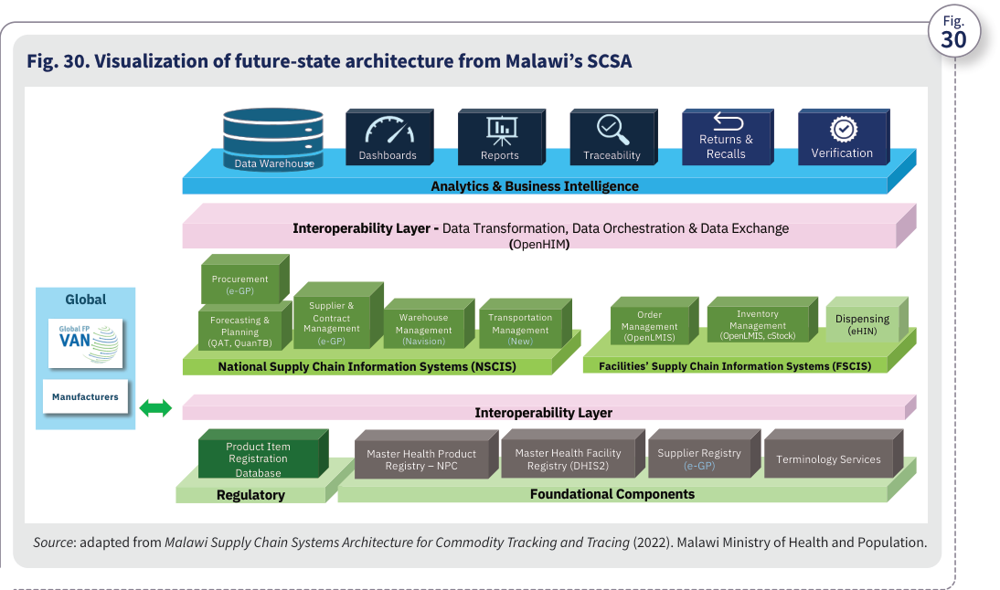</p>
<p><em>Source: WHO, Digital transformation handbook for health supply chain architecture, 2024, PDF page 62; rendered from the PDF's vector layer in the L1 entry.</em></p>
<p><em>Visualization of future-state architecture from Malawi's SCSA</em></p>
<p><a id="sec:ch05-rwandas-dhsc-initiative"></a></p>
<h3 id="h-sec:ch05-rwandas-dhsc-initiative">
  
  
    <a href="#h-sec:ch05-rwandas-dhsc-initiative" class="anchor-heading" aria-labelledby="h-sec:ch05-rwandas-dhsc-initiative"><svg viewBox="0 0 16 16" aria-hidden="true"><use xlink:href="#svg-link"></use></svg></a> Rwanda's DHSC initiative
  
  
</h3>
    
<p><a id="prose:ch05-page-063"></a><span class="block-actions" data-block="prose:ch05-page-063"><a class="ba-edit" href="https://github.com/litlfred/dth-sc/edit/main/folio/dth-sc/ch05-country-examples/p-ch05-page-063.md" title="Edit this block's source on GitHub (folio/dth-sc/ch05-country-examples/p-ch05-page-063.md)">✎ edit</a><a class="ba-feedback" href="https://github.com/litlfred/dth-sc/issues/new?title=Feedback+%5Bdth-sc%5D%3A+Rwanda%27s+DHSC+initiative+%E2%80%94+prose%3Ach05-page-063&amp;body=**Content%3A**+%60dth-sc%60%0A**Block%3A**+%60prose%3Ach05-page-063%60%0A**Section%3A**+Rwanda%27s+DHSC+initiative%0A**Source%3A**+https%3A%2F%2Fgithub.com%2Flitlfred%2Fdth-sc%2Fblob%2Fmain%2Ffolio%2Fdth-sc%2Fch05-country-examples%2Fp-ch05-page-063.md%0A%0A**Type%3A**+general+%7C+technical+%7C+editorial%0A%0A**Comment%3A**%0A%0A%0A**Proposed+change%3A**%0A" title="Give feedback on this block (opens a GitHub issue)">📣 feedback</a></span>
Rwanda’s <a href="../folio-assistant-core/glossary/instance/dth-sc/#dth-sc--dth-sc--digital-health-supply-chain" title="The knowledge and practice of adopting digital technologies to improve health supply chains and enable the delivery of quality-assured health products to individuals when and where they need them." class="fa-term">DHSC</a> initiative Status Rwanda’s Digital Supply Chain (DSC) Strategy and Architecture was collaboratively drafted in 2022 under the leadership of the MOH’s Chief Digital Office. It is currently being aligned with and incorporated into the country’s overall digital health strategy. Process The DSC Strategy and Architecture was developed with support from USAID through its GHSC-PSM project and was informed by the results of a SCISMM assessment. A collaborative workshop with all key stakeholders was conducted in February 2022 to help shape the vision, strategy and architecture for the country’s <a href="../folio-assistant-core/glossary/instance/dth-sc/#dth-sc--dth-sc--health-supply-chain-information-system" title="A paper-based or software tool that supports the management and/or operations of the health supply chain." class="fa-term">HSCISs</a>. Participants included the MOH, Rwanda Medical Supply, Rwanda Food and Drugs Authority, Rwanda Biomedical Centre, Rwanda Social Security Board, Rwanda Information Society Authority and partners including USAID and the private sector. Current state As of February 2022, the SCISMM assessment emphasized the need for standardizing product master data management and adopting a comprehensive integrated approach for implementing HSCISs. (See Fig. 31.) Future state The DSC Strategy and Architecture provides a comprehensive framework that outlines the HSCISs and how they will function together using shared services such as the NPC. It will help enable end-to-end visibility and pharmaceutical traceability. (See Fig. 32.) Insights</p>
<ul>
<li>MOH leadership of the effort and engagement of all key stakeholders ensured a comprehensive architecture that incorporated every partner’s priorities and inputs.</li>
<li>A TWG helps provide governance and ensures that all health supply chain digitalization initiatives align with the DSC Strategy and Architecture.</li>
<li>Recognition of the need to align various national strategies and architectures (such as those for digital health and for the DHSC) will help ensure that efforts lead to optimal use of resources and that digital ecosystems are interoperable.</li>
<li>The overarching strategy and architecture ensures that all DHSC implementations (such as the ongoing ERP implementation) are aligned towards a sustainable and scalable shared vision.</li>
<li>Holistic assessments such as SCISMM provide insights into gaps and opportunities in the health supply chain and help prioritize digitalization investments. About Rwanda Public health supply chain structure Central warehouse 1 Public and referral hospitals 47 Branch warehouses 30 Health centres 546 Country examples</li>
</ul>
<p><a id="prose:ch05-page-064"></a><span class="block-actions" data-block="prose:ch05-page-064"><a class="ba-edit" href="https://github.com/litlfred/dth-sc/edit/main/folio/dth-sc/ch05-country-examples/p-ch05-page-064.md" title="Edit this block's source on GitHub (folio/dth-sc/ch05-country-examples/p-ch05-page-064.md)">✎ edit</a><a class="ba-feedback" href="https://github.com/litlfred/dth-sc/issues/new?title=Feedback+%5Bdth-sc%5D%3A+Rwanda%27s+DHSC+initiative+%E2%80%94+prose%3Ach05-page-064&amp;body=**Content%3A**+%60dth-sc%60%0A**Block%3A**+%60prose%3Ach05-page-064%60%0A**Section%3A**+Rwanda%27s+DHSC+initiative%0A**Source%3A**+https%3A%2F%2Fgithub.com%2Flitlfred%2Fdth-sc%2Fblob%2Fmain%2Ffolio%2Fdth-sc%2Fch05-country-examples%2Fp-ch05-page-064.md%0A%0A**Type%3A**+general+%7C+technical+%7C+editorial%0A%0A**Comment%3A**%0A%0A%0A**Proposed+change%3A**%0A" title="Give feedback on this block (opens a GitHub issue)">📣 feedback</a></span>
Investment in new software Software under development Investment in strengthening software Future investment in new software Fully functional software Investment in scaling software LEGEND INTEROPERABILITY LAYER (OpenHIM) Current state As of Feb. 2022 Future state INTER- OPERABILITY LAYER Enabling components Authentication Orchestration Encryption Validation Transformation Translation HEALTH SUPPLY CHAIN INFORMATION SYSTEMS HEALTH SUPPLY CHAIN INFORMATION SYSTEMS Forecasting and planning Forecasting and planning Procurement Procurement Supplier and contract management Inventory management Warehouse management Order management Order management Dispensing Warehouse management Inventory management Transportation management Dispensing EXTERNAL SYSTEMS SHARED SERVICES SHARED SERVICES Foundational components Foundational components Digital ecosystems Digital ecosystems DATA SERVICES Analytics <a href="../folio-assistant-core/glossary/instance/dth-sc/#dth-sc--dth-sc--traceability" title="The ability to trace something." class="fa-term">Traceability</a> Data warehouse Product verification Supply chain reports Track and trace Master health facility registry Health mgmt. info systems DHIS2 SAGE QAT Terminology services eLMIS SAGE eLMIS EMR National product catalog DIGITAL HEALTH SUPPLY CHAIN ENTERPRISE Master health facility registry Supplier registry National product catalog Health mgmt. info systems DHIS2 EMR EMR QAT New system ERP ERP ERP ERP ERP Manufacturers GPFVAN BUFMAR and others Fig. 31. Current-state supply chain systems in Rwanda Fig. 32. Future-state supply chain systems in Rwanda Fig. Fig.</p>
<p><a id="fig:31-32"></a><span class="block-actions" data-block="fig:31-32"><a class="ba-edit" href="https://github.com/litlfred/dth-sc/edit/main/folio/dth-sc/ch05-country-examples/f-ch05-fig-31-32.md" title="Edit this block's source on GitHub (folio/dth-sc/ch05-country-examples/f-ch05-fig-31-32.md)">✎ edit</a><a class="ba-feedback" href="https://github.com/litlfred/dth-sc/issues/new?title=Feedback+%5Bdth-sc%5D%3A+Rwanda%27s+DHSC+initiative+%E2%80%94+fig%3A31-32&amp;body=**Content%3A**+%60dth-sc%60%0A**Block%3A**+%60fig%3A31-32%60%0A**Section%3A**+Rwanda%27s+DHSC+initiative%0A**Source%3A**+https%3A%2F%2Fgithub.com%2Flitlfred%2Fdth-sc%2Fblob%2Fmain%2Ffolio%2Fdth-sc%2Fch05-country-examples%2Ff-ch05-fig-31-32.md%0A%0A**Type%3A**+general+%7C+technical+%7C+editorial%0A%0A**Comment%3A**%0A%0A%0A**Proposed+change%3A**%0A" title="Give feedback on this block (opens a GitHub issue)">📣 feedback</a></span>
<strong>Figure 31–32.</strong> <a href="#fig:31-32" class="block-anchor" aria-label="Link to Figure 31–32" title="Link to Figure 31–32"><svg viewBox="0 0 16 16" width="14" height="14" fill="currentColor" aria-hidden="true"><use xlink:href="#svg-link"></use></svg></a></p>
<p>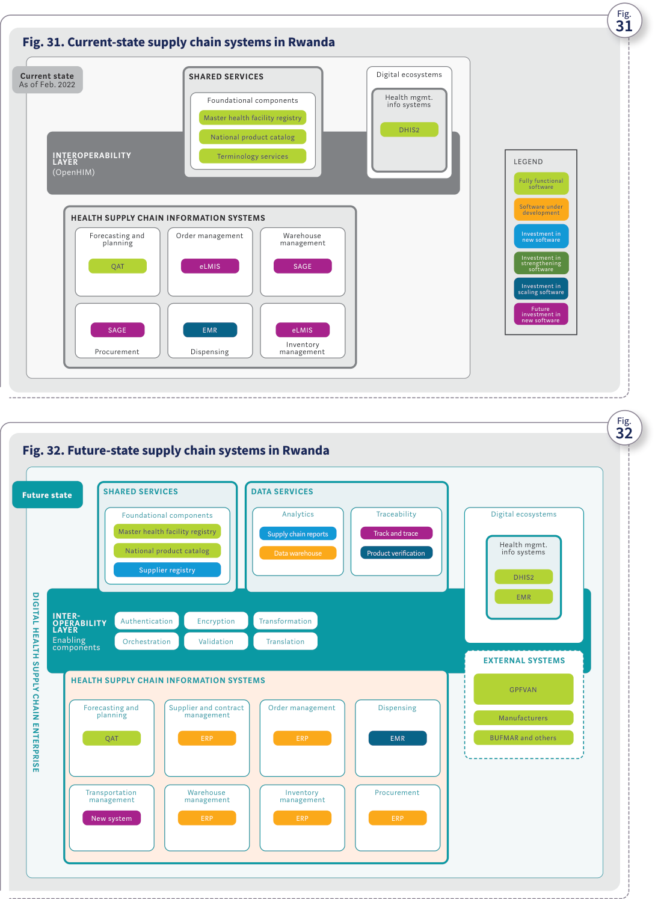</p>
<p><em>Source: WHO, Digital transformation handbook for health supply chain architecture, 2024, PDF page 64; rendered from the PDF's vector layer in the L1 entry.</em></p>
<p><em>Fig. 31. Current-state supply chain systems in Rwanda; Fig. 32. Future-state supply chain systems in Rwanda</em></p>
<p><a id="chap:references"></a></p>
<h2 id="h-chap:references">
  
  
    <a href="#h-chap:references" class="anchor-heading" aria-labelledby="h-chap:references"><svg viewBox="0 0 16 16" aria-hidden="true"><use xlink:href="#svg-link"></use></svg></a> References
  
  
</h2>
    
<p><a id="sec:references-references"></a></p>
<h3 id="h-sec:references-references">
  
  
    <a href="#h-sec:references-references" class="anchor-heading" aria-labelledby="h-sec:references-references"><svg viewBox="0 0 16 16" aria-hidden="true"><use xlink:href="#svg-link"></use></svg></a> References
  
  
</h3>
    
<p><a id="prose:references-page-065"></a><span class="block-actions" data-block="prose:references-page-065"><a class="ba-edit" href="https://github.com/litlfred/dth-sc/edit/main/folio/dth-sc/references/p-references-page-065.md" title="Edit this block's source on GitHub (folio/dth-sc/references/p-references-page-065.md)">✎ edit</a><a class="ba-feedback" href="https://github.com/litlfred/dth-sc/issues/new?title=Feedback+%5Bdth-sc%5D%3A+References+%E2%80%94+prose%3Areferences-page-065&amp;body=**Content%3A**+%60dth-sc%60%0A**Block%3A**+%60prose%3Areferences-page-065%60%0A**Section%3A**+References%0A**Source%3A**+https%3A%2F%2Fgithub.com%2Flitlfred%2Fdth-sc%2Fblob%2Fmain%2Ffolio%2Fdth-sc%2Freferences%2Fp-references-page-065.md%0A%0A**Type%3A**+general+%7C+technical+%7C+editorial%0A%0A**Comment%3A**%0A%0A%0A**Proposed+change%3A**%0A" title="Give feedback on this block (opens a GitHub issue)">📣 feedback</a></span>
2 All linked references were accessed on 15 October 2024. References 1. Digital implementation investment guide (DIIG): integrating digital interventions into health programmes. Geneva: World Health Organization; 2020 (<a href="https://iris.who.int/handle/10665/334306">https://iris.who.int/handle/10665/334306</a>). Licence: CC BY-NC-SA 3.0 IGO. 2. <a href="../folio-assistant-core/glossary/instance/dpi-h-ra/#dpi-h-ra--dpi-h-ra--digital-health" title="The systematic application of information and communications technologies, computer science, and data to support informed decision-making by individuals, the health workforce, and health systems, to strengthen resilience to disease and improve health and wellness." class="fa-term">Digital Health</a> &#x26; Interoperability Working Group [website]. Digital Square; 2024 (<a href="https://wiki.digitalsquare.io/index.php/Digital">https://wiki.digitalsquare.io/index.php/Digital</a>_ Health_%26_Interoperability_Working_Group). 3. The differences between digitization, digitalization, and digital transformation in manufacturing [website]. Yokogawa Electric Corporation; 2021 (<a href="https://www.yokogawa.com/library/resources/white-papers/the-differences-between-digitization-digitalization-">https://www.yokogawa.com/library/resources/white-papers/the-differences-between-digitization-digitalization-</a> and-digital-transformation-in-manufacturing/). 4. Digital transformation [website]. Gartner; 2024 (<a href="https://www.gartner.com/en/information-technology/glossary/digital-">https://www.gartner.com/en/information-technology/glossary/digital-</a> transformation). 5. Standards &#x26; digital transformation: good governance in a digital age, 2021. Vienna: United Nations Industrial Development Organization; 2021 (<a href="https://www.unido.org/news/standards-digital-transformation-good-governance-digital-age">https://www.unido.org/news/standards-digital-transformation-good-governance-digital-age</a>). 6. Digitalization [website]. Gartner; 2024 (<a href="https://www.gartner.com/en/information-technology/glossary/digitalization">https://www.gartner.com/en/information-technology/glossary/digitalization</a>). 7. Digitization [website]. Gartner; 2024 (<a href="https://www.gartner.com/en/information-technology/glossary/digitization">https://www.gartner.com/en/information-technology/glossary/digitization</a>). 8. Reynolds CJ, Wyatt JC. Open source, open standards, and health care information systems. J Med Internet Res. 2011;13(1):e24. (<a href="https://doi.org/10.2196/jmir.1521">https://doi.org/10.2196/jmir.1521</a>). 9. Licenses [online database]. West Hollywood: Open Source Initiative; 2024 (<a href="https://opensource.org/licenses/">https://opensource.org/licenses/</a>). 10. Definition of “<a href="../folio-assistant-core/glossary/instance/dpi-h-ra/#dpi-h-ra--full-stac--open-standards" title="Semantic and syntactic models for data representation, exchange, and processing that ensure the precise meaning of exchanged information is unambiguously interpretable by any other system, service, or user." class="fa-term">Open Standards</a>” [website]. International Telecommunication Union; 2005 (<a href="https://www.itu.int/en/ITU-T/ipr/Pages/">https://www.itu.int/en/ITU-T/ipr/Pages/</a> open.aspx). 11. Pittman PH, Atwater JB, editors. ASCM supply chain dictionary, seventeenth edition. Chicago: Association for Supply Chain Management; 2022 (<a href="https://learn.ascm.org/s/ascm-dictionary">https://learn.ascm.org/s/ascm-dictionary</a>). 12. SMART guidelines [website]. World Health Organization; 2024 (<a href="https://www.who.int/teams/digital-health-and-innovation/smart-">https://www.who.int/teams/digital-health-and-innovation/smart-</a> guidelines). 13. Mehl G, Tunçalp Ö, Ratanaprayul N, Tamrat T, Barreix M, Lowrance D et al. WHO SMART guidelines: optimising country-level use of guideline recommendations in the digital age. Lancet Digital Health. 2021;3(4):e213–e216. (<a href="https://doi.org/10.1016/S2589-">https://doi.org/10.1016/S2589-</a> 7500(21)00038-8). 14. Policy paper on traceability of medical products. Geneva: World Health Organization; 2021 (<a href="https://iris.who.int/">https://iris.who.int/</a> handle/10665/340237). Licence: CC BY-NC-SA 3.0 IGO. 15. Global strategy on digital health 2020–2025. Geneva: World Health Organization; 2021 (<a href="https://iris.who.int/handle/10665/344249">https://iris.who.int/handle/10665/344249</a>). Licence: CC BY-NC-SA 3.0 IGO. 16. Supply chain information system maturity model (SCISMM) [website]. Digital Square; 2020 (<a href="https://lib.digitalsquare.io/">https://lib.digitalsquare.io/</a> collections/8769db8b-cc77-45fa-b1ea-f4ce5d838fde). 17. OpenHIE: a framework based on real-world application [website]. OpenHIE, 2024 (<a href="https://ohie.org/framework/">https://ohie.org/framework/</a>). 18. The TOGAF® standard, tenth edition. San Francisco: The Open Group; 2022 (<a href="https://www.opengroup.org/togaf/10thedition">https://www.opengroup.org/togaf/10thedition</a>). 19. National eHealth strategy toolkit. Geneva: World Health Organization and International Telecommunication Union; 2012 (<a href="https://iris">https://iris</a>. who.int/handle/10665/75211). 20. Digital adaptation kit for antenatal care: operational requirements for implementing WHO recommendations in digital systems. Geneva: WHO; 2021 (<a href="https://iris.who.int/handle/10665/339745">https://iris.who.int/handle/10665/339745</a>). Licence: CC BY-NC-SA 3.0 IGO. 21. Promoting national medicines policies [website]. World Health Organization; 2024 (<a href="https://www.who.int/activities/promoting-">https://www.who.int/activities/promoting-</a> national-medicines-policies). 22. National supply chain assessment (NSCA) toolkit. Washington (DC): USAID Global Health Supply Chain Program; 2022 (<a href="https://www">https://www</a>. ghsupplychain.org/key-initiatives/national-supply-chain-assessment-nsca-toolkit). 23. IHE Pharmacy (PHARM) white paper: supply of products for healthcare, revision 1.1. Oak Brook (IL): Integrating the Healthcare Enterprise (IHE) International; 2020 (<a href="https://www.ihe.net/uploadedFiles/Documents/Pharmacy/IHE_Pharmacy_WP_Supply.pdf">https://www.ihe.net/uploadedFiles/Documents/Pharmacy/IHE_Pharmacy_WP_Supply.pdf</a>). 24. The MAPS toolkit: mHealth assessment and planning for scale. Geneva: World Health Organization; 2015 (<a href="https://iris.who.int/">https://iris.who.int/</a> handle/10665/185238). 25. Healthcare traceability and GS1 standards [website]. GS1; (<a href="https://www.gs1.org/industries/healthcare/traceability">https://www.gs1.org/industries/healthcare/traceability</a>). 26. Recommendations on common technical denominators for traceability systems for medicines to allow for interoperability. International Coalition of Medicines Regulatory Authorities (ICMRA); 2021 (<a href="https://www.icmra.info/drupal/sites/default/">https://www.icmra.info/drupal/sites/default/</a> files/2021-08/recommendations_on_common_technical_denominators_for_T&#x26;T_systems_to_allow_for_interoperability_final.pdf).</p>
<p><a id="chap:annexes"></a></p>
<h2 id="h-chap:annexes">
  
  
    <a href="#h-chap:annexes" class="anchor-heading" aria-labelledby="h-chap:annexes"><svg viewBox="0 0 16 16" aria-hidden="true"><use xlink:href="#svg-link"></use></svg></a> Annexes
  
  
</h2>
    
<p><a id="sec:annexes-annex-1-principles-for-digital-developme"></a></p>
<h3 id="h-sec:annexes-annex-1-principles-for-digital-developme">
  
  
    <a href="#h-sec:annexes-annex-1-principles-for-digital-developme" class="anchor-heading" aria-labelledby="h-sec:annexes-annex-1-principles-for-digital-developme"><svg viewBox="0 0 16 16" aria-hidden="true"><use xlink:href="#svg-link"></use></svg></a> Annex 1. Principles for digital development
  
  
</h3>
    
<p><a id="prose:annexes-page-066"></a><span class="block-actions" data-block="prose:annexes-page-066"><a class="ba-edit" href="https://github.com/litlfred/dth-sc/edit/main/folio/dth-sc/annexes/p-annexes-page-066.md" title="Edit this block's source on GitHub (folio/dth-sc/annexes/p-annexes-page-066.md)">✎ edit</a><a class="ba-feedback" href="https://github.com/litlfred/dth-sc/issues/new?title=Feedback+%5Bdth-sc%5D%3A+Annex+1.+Principles+for+digital+development+%E2%80%94+prose%3Aannexes-page-066&amp;body=**Content%3A**+%60dth-sc%60%0A**Block%3A**+%60prose%3Aannexes-page-066%60%0A**Section%3A**+Annex+1.+Principles+for+digital+development%0A**Source%3A**+https%3A%2F%2Fgithub.com%2Flitlfred%2Fdth-sc%2Fblob%2Fmain%2Ffolio%2Fdth-sc%2Fannexes%2Fp-annexes-page-066.md%0A%0A**Type%3A**+general+%7C+technical+%7C+editorial%0A%0A**Comment%3A**%0A%0A%0A**Proposed+change%3A**%0A" title="Give feedback on this block (opens a GitHub issue)">📣 feedback</a></span>
Annex 1. Principles for digital development Understand the existing ecosystem Trust starts with a thorough understanding of the dynamic cultural, social and economic context in which you are operating. Share, reuse, and improve Build on what works, improve what works, and share so that others can do the same. Design with people Good design starts and ends with people that will manage, use, and ideally benefit from a given digital initiative. Design for inclusion Consider the full range of human diversity to maximize impact and mitigate harm. Build for sustainability Build for the long-term by intentionally addressing financial, operational, and ecological sustainability. Establish people-first data practices People-first data practices prioritize transparency, consent, and redressal while allowing people and communities to retain control of and derive value from their own data. Create open and transparent practices Effective digital initiatives establish confidence and good governance through measures that promote open innovation and collaboration. Anticipate and mitigate harms Harm is always possible when it comes to technology. To avoid negative outcomes, plan for the worst while working to create the best outcomes. Use evidence to improve outcomes Evidence drives impact: continually gather, analyse, and use feedback. Source: adapted from Digital Impact Alliance’s Principles for Digital Development (<a href="https://digitalprinciples.org">https://digitalprinciples.org</a>).</p>
<p><a id="sec:annexes-annex-2-steering-committee-example-struc"></a></p>
<h3 id="h-sec:annexes-annex-2-steering-committee-example-struc">
  
  
    <a href="#h-sec:annexes-annex-2-steering-committee-example-struc" class="anchor-heading" aria-labelledby="h-sec:annexes-annex-2-steering-committee-example-struc"><svg viewBox="0 0 16 16" aria-hidden="true"><use xlink:href="#svg-link"></use></svg></a> Annex 2. Steering committee example structure
  
  
</h3>
    
<p><a id="prose:annexes-page-067"></a><span class="block-actions" data-block="prose:annexes-page-067"><a class="ba-edit" href="https://github.com/litlfred/dth-sc/edit/main/folio/dth-sc/annexes/p-annexes-page-067.md" title="Edit this block's source on GitHub (folio/dth-sc/annexes/p-annexes-page-067.md)">✎ edit</a><a class="ba-feedback" href="https://github.com/litlfred/dth-sc/issues/new?title=Feedback+%5Bdth-sc%5D%3A+Annex+2.+Steering+committee+example+structure+%E2%80%94+prose%3Aannexes-page-067&amp;body=**Content%3A**+%60dth-sc%60%0A**Block%3A**+%60prose%3Aannexes-page-067%60%0A**Section%3A**+Annex+2.+Steering+committee+example+structure%0A**Source%3A**+https%3A%2F%2Fgithub.com%2Flitlfred%2Fdth-sc%2Fblob%2Fmain%2Ffolio%2Fdth-sc%2Fannexes%2Fp-annexes-page-067.md%0A%0A**Type%3A**+general+%7C+technical+%7C+editorial%0A%0A**Comment%3A**%0A%0A%0A**Proposed+change%3A**%0A" title="Give feedback on this block (opens a GitHub issue)">📣 feedback</a></span>
Annex 2. Steering committee example structure The following diagram illustrates an example organizational structure of a <a href="../folio-assistant-core/glossary/instance/dth-sc/#dth-sc--dth-sc--digital-health-supply-chain" title="The knowledge and practice of adopting digital technologies to improve health supply chains and enable the delivery of quality-assured health products to individuals when and where they need them." class="fa-term">DHSC</a> steering committee.</p>
<p><a id="tbl:annex-2"></a><span class="block-actions" data-block="tbl:annex-2"><a class="ba-edit" href="https://github.com/litlfred/dth-sc/edit/main/folio/dth-sc/annexes/t-annexes-annex-2.md" title="Edit this block's source on GitHub (folio/dth-sc/annexes/t-annexes-annex-2.md)">✎ edit</a><a class="ba-feedback" href="https://github.com/litlfred/dth-sc/issues/new?title=Feedback+%5Bdth-sc%5D%3A+Annex+2.+Steering+committee+example+structure+%E2%80%94+tbl%3Aannex-2&amp;body=**Content%3A**+%60dth-sc%60%0A**Block%3A**+%60tbl%3Aannex-2%60%0A**Section%3A**+Annex+2.+Steering+committee+example+structure%0A**Source%3A**+https%3A%2F%2Fgithub.com%2Flitlfred%2Fdth-sc%2Fblob%2Fmain%2Ffolio%2Fdth-sc%2Fannexes%2Ft-annexes-annex-2.md%0A%0A**Type%3A**+general+%7C+technical+%7C+editorial%0A%0A**Comment%3A**%0A%0A%0A**Proposed+change%3A**%0A" title="Give feedback on this block (opens a GitHub issue)">📣 feedback</a></span>
<strong>Table.</strong> <a href="#tbl:annex-2" class="block-anchor" aria-label="Link to Table" title="Link to Table"><svg viewBox="0 0 16 16" width="14" height="14" fill="currentColor" aria-hidden="true"><use xlink:href="#svg-link"></use></svg></a></p>
<p><em>Annex 2. Steering committee example structure</em></p>
<div class="table-wrapper"><table>
<thead>
<tr>
<th><strong>Governance tier / topic area</strong></th>
<th><strong>Data</strong></th>
<th><strong>Process</strong></th>
<th><strong>Technology</strong></th>
<th><strong>Risk</strong></th>
</tr>
</thead>
<tbody>
<tr>
<td>Executive chairperson</td>
<td>MOH</td>
<td></td>
<td></td>
<td></td>
</tr>
<tr>
<td>Secretariat</td>
<td>Secretariat</td>
<td></td>
<td></td>
<td></td>
</tr>
<tr>
<td>Technical representatives</td>
<td>Information technology authority</td>
<td>Central warehouse</td>
<td>Others</td>
<td>Regulatory</td>
</tr>
<tr>
<td>Partner organizations</td>
<td>Funders</td>
<td>Implementing partners</td>
<td>Others (academia, etc.)</td>
<td>Private sector</td>
</tr>
<tr>
<td>Technical working group – governance topics</td>
<td>• Data needs identification<br>• Data quality reviews<br>• Data exchange policies</td>
<td>• Process formulation and reviews<br>• Regulatory compliance<br>• Process improvements</td>
<td>• Enterprise architecture reviews<br>• Digitalization policies<br>• Technology audits</td>
<td>• Risk management<br>• Risk identification and mitigation<br>• Risk monitoring and reporting</td>
</tr>
</tbody>
</table></div>
<p><em>Annex 2. Steering committee example structure</em></p>
<p><a id="sec:annexes-annex-3-template-for-prioritizing-dhsc-c"></a></p>
<h3 id="h-sec:annexes-annex-3-template-for-prioritizing-dhsc-c">
  
  
    <a href="#h-sec:annexes-annex-3-template-for-prioritizing-dhsc-c" class="anchor-heading" aria-labelledby="h-sec:annexes-annex-3-template-for-prioritizing-dhsc-c"><svg viewBox="0 0 16 16" aria-hidden="true"><use xlink:href="#svg-link"></use></svg></a> Annex 3. Template for prioritizing DHSC challenges to address
  
  
</h3>
    
<p><a id="prose:annexes-page-068"></a><span class="block-actions" data-block="prose:annexes-page-068"><a class="ba-edit" href="https://github.com/litlfred/dth-sc/edit/main/folio/dth-sc/annexes/p-annexes-page-068.md" title="Edit this block's source on GitHub (folio/dth-sc/annexes/p-annexes-page-068.md)">✎ edit</a><a class="ba-feedback" href="https://github.com/litlfred/dth-sc/issues/new?title=Feedback+%5Bdth-sc%5D%3A+Annex+3.+Template+for+prioritizing+DHSC+challenges+to+address+%E2%80%94+prose%3Aannexes-page-068&amp;body=**Content%3A**+%60dth-sc%60%0A**Block%3A**+%60prose%3Aannexes-page-068%60%0A**Section%3A**+Annex+3.+Template+for+prioritizing+DHSC+challenges+to+address%0A**Source%3A**+https%3A%2F%2Fgithub.com%2Flitlfred%2Fdth-sc%2Fblob%2Fmain%2Ffolio%2Fdth-sc%2Fannexes%2Fp-annexes-page-068.md%0A%0A**Type%3A**+general+%7C+technical+%7C+editorial%0A%0A**Comment%3A**%0A%0A%0A**Proposed+change%3A**%0A" title="Give feedback on this block (opens a GitHub issue)">📣 feedback</a></span>
Annex 3. Template for prioritizing <a href="../folio-assistant-core/glossary/instance/dth-sc/#dth-sc--dth-sc--digital-health-supply-chain" title="The knowledge and practice of adopting digital technologies to improve health supply chains and enable the delivery of quality-assured health products to individuals when and where they need them." class="fa-term">DHSC</a> challenges to address The following table offers some considerations for ranking supply chain challenges and bottlenecks. It can be useful in guiding discussion and reaching consensus among stakeholders. The table describes three hypothetical examples of bottlenecks, which receive scores of Low (1), Medium (2) or High (3) based on responses to three questions. Adding the scores yields the prioritized ranking. Source: adapted from the 2020 WHO Digital Implementation Investment Guide (1).</p>
<p><a id="tbl:annex-3"></a><span class="block-actions" data-block="tbl:annex-3"><a class="ba-edit" href="https://github.com/litlfred/dth-sc/edit/main/folio/dth-sc/annexes/t-annexes-annex-3.md" title="Edit this block's source on GitHub (folio/dth-sc/annexes/t-annexes-annex-3.md)">✎ edit</a><a class="ba-feedback" href="https://github.com/litlfred/dth-sc/issues/new?title=Feedback+%5Bdth-sc%5D%3A+Annex+3.+Template+for+prioritizing+DHSC+challenges+to+address+%E2%80%94+tbl%3Aannex-3&amp;body=**Content%3A**+%60dth-sc%60%0A**Block%3A**+%60tbl%3Aannex-3%60%0A**Section%3A**+Annex+3.+Template+for+prioritizing+DHSC+challenges+to+address%0A**Source%3A**+https%3A%2F%2Fgithub.com%2Flitlfred%2Fdth-sc%2Fblob%2Fmain%2Ffolio%2Fdth-sc%2Fannexes%2Ft-annexes-annex-3.md%0A%0A**Type%3A**+general+%7C+technical+%7C+editorial%0A%0A**Comment%3A**%0A%0A%0A**Proposed+change%3A**%0A" title="Give feedback on this block (opens a GitHub issue)">📣 feedback</a></span>
<strong>Table.</strong> <a href="#tbl:annex-3" class="block-anchor" aria-label="Link to Table" title="Link to Table"><svg viewBox="0 0 16 16" width="14" height="14" fill="currentColor" aria-hidden="true"><use xlink:href="#svg-link"></use></svg></a></p>
<p><em>Annex 3. Template for prioritizing DHSC challenges to address</em></p>
<div class="table-wrapper"><table>
<thead>
<tr>
<th><strong>Bottleneck</strong></th>
<th><strong>1. How much impact does this bottleneck have on the process? (1–3)</strong></th>
<th><strong>2. What is the likelihood of overcoming this bottleneck? (1–3)</strong></th>
<th><strong>3. Is this important to a wide range of stakeholders? (1–3)</strong></th>
<th><strong>Score</strong></th>
<th><strong>Prioritized ranking</strong></th>
</tr>
</thead>
<tbody>
<tr>
<td>Example: Unavailability of timely consumption data results in inaccurate forecasts and frequent stockouts.</td>
<td>Low (1)</td>
<td>High (3)</td>
<td>Yes (3)</td>
<td>1+3+3=7</td>
<td>HIGHEST</td>
</tr>
<tr>
<td>Example: Aggregating data from paper forms is burdensome and rarely done correctly.</td>
<td>Medium (2)</td>
<td>Medium (2)</td>
<td>Some (2)</td>
<td>2+2+2=6</td>
<td>MEDIUM</td>
</tr>
<tr>
<td>Example: Inability to track and trace health products using serial numbers.</td>
<td>Low (1)</td>
<td>Low (1)</td>
<td>Some (2)</td>
<td>1+1+2=4</td>
<td>LOW</td>
</tr>
</tbody>
</table></div>
<p><em>Annex 3. Template for prioritizing DHSC challenges to address</em></p>
<p><a id="sec:annexes-annex-4-illustrative-template-that-maps"></a></p>
<h3 id="h-sec:annexes-annex-4-illustrative-template-that-maps">
  
  
    <a href="#h-sec:annexes-annex-4-illustrative-template-that-maps" class="anchor-heading" aria-labelledby="h-sec:annexes-annex-4-illustrative-template-that-maps"><svg viewBox="0 0 16 16" aria-hidden="true"><use xlink:href="#svg-link"></use></svg></a> Annex 4. Illustrative template that maps today's challenges to future outcomes
  
  
</h3>
    
<p><a id="prose:annexes-page-069"></a><span class="block-actions" data-block="prose:annexes-page-069"><a class="ba-edit" href="https://github.com/litlfred/dth-sc/edit/main/folio/dth-sc/annexes/p-annexes-page-069.md" title="Edit this block's source on GitHub (folio/dth-sc/annexes/p-annexes-page-069.md)">✎ edit</a><a class="ba-feedback" href="https://github.com/litlfred/dth-sc/issues/new?title=Feedback+%5Bdth-sc%5D%3A+Annex+4.+Illustrative+template+that+maps+today%27s+challenges+to+future+outcomes+%E2%80%94+prose%3Aannexes-page-069&amp;body=**Content%3A**+%60dth-sc%60%0A**Block%3A**+%60prose%3Aannexes-page-069%60%0A**Section%3A**+Annex+4.+Illustrative+template+that+maps+today%27s+challenges+to+future+outcomes%0A**Source%3A**+https%3A%2F%2Fgithub.com%2Flitlfred%2Fdth-sc%2Fblob%2Fmain%2Ffolio%2Fdth-sc%2Fannexes%2Fp-annexes-page-069.md%0A%0A**Type%3A**+general+%7C+technical+%7C+editorial%0A%0A**Comment%3A**%0A%0A%0A**Proposed+change%3A**%0A" title="Give feedback on this block (opens a GitHub issue)">📣 feedback</a></span>
Annex 4. Illustrative template that maps today’s challenges to future outcomes This type of template can be used to map the transition from current critical challenges faced by supply chain partners and their processes to the future vision of a <a href="../folio-assistant-core/glossary/instance/dth-sc/#dth-sc--dth-sc--digital-health-supply-chain" title="The knowledge and practice of adopting digital technologies to improve health supply chains and enable the delivery of quality-assured health products to individuals when and where they need them." class="fa-term">DHSC</a>.</p>
<p><a id="tbl:annex-4"></a><span class="block-actions" data-block="tbl:annex-4"><a class="ba-edit" href="https://github.com/litlfred/dth-sc/edit/main/folio/dth-sc/annexes/t-annexes-annex-4.md" title="Edit this block's source on GitHub (folio/dth-sc/annexes/t-annexes-annex-4.md)">✎ edit</a><a class="ba-feedback" href="https://github.com/litlfred/dth-sc/issues/new?title=Feedback+%5Bdth-sc%5D%3A+Annex+4.+Illustrative+template+that+maps+today%27s+challenges+to+future+outcomes+%E2%80%94+tbl%3Aannex-4&amp;body=**Content%3A**+%60dth-sc%60%0A**Block%3A**+%60tbl%3Aannex-4%60%0A**Section%3A**+Annex+4.+Illustrative+template+that+maps+today%27s+challenges+to+future+outcomes%0A**Source%3A**+https%3A%2F%2Fgithub.com%2Flitlfred%2Fdth-sc%2Fblob%2Fmain%2Ffolio%2Fdth-sc%2Fannexes%2Ft-annexes-annex-4.md%0A%0A**Type%3A**+general+%7C+technical+%7C+editorial%0A%0A**Comment%3A**%0A%0A%0A**Proposed+change%3A**%0A" title="Give feedback on this block (opens a GitHub issue)">📣 feedback</a></span>
<strong>Table.</strong> <a href="#tbl:annex-4" class="block-anchor" aria-label="Link to Table" title="Link to Table"><svg viewBox="0 0 16 16" width="14" height="14" fill="currentColor" aria-hidden="true"><use xlink:href="#svg-link"></use></svg></a></p>
<p><em>Annex 4. Illustrative template that maps today's challenges to future outcomes</em></p>
<div class="table-wrapper"><table>
<thead>
<tr>
<th><strong>Supply chain partner / process</strong></th>
<th><strong>Today (challenge)</strong></th>
<th><strong>Illustrative metric</strong></th>
<th><strong>Future (outcome)</strong></th>
</tr>
</thead>
<tbody>
<tr>
<td>Forecasting and planning</td>
<td>Unavailability of consumption data affects availability of medicines to patients</td>
<td>20% Error</td>
<td>Availability of timely consumption data increases forecasting accuracy, ensuring availability of medicines</td>
</tr>
<tr>
<td>Procurement</td>
<td>High procurement processing time affects timely availability of medicines</td>
<td>3–4 weeks</td>
<td>Automated procurement workflows and integrated systems reduce lead time</td>
</tr>
<tr>
<td>Central warehouse</td>
<td>Stock expiries and wastages per month</td>
<td>15%</td>
<td>Seamless data exchange and monitoring across systems help optimize distribution and minimize wastages</td>
</tr>
<tr>
<td>Regional warehouses</td>
<td>Frequent stockouts of lifesaving medicines</td>
<td>23%</td>
<td>Availability of timely data through exchanged architecture improves supply planning and eliminates stockouts</td>
</tr>
<tr>
<td>Health facilities</td>
<td>Health care workers burdened with duplicative data entry across health and supply chain systems</td>
<td>30–50 hours</td>
<td>Interoperable health and supply chain systems with automation eliminate manual and duplicative data processes</td>
</tr>
<tr>
<td>Patients</td>
<td>Lack of trust in the medicines or vaccines administered</td>
<td></td>
<td>Aggregated supply chain data enables traceability and verification capabilities, instilling patient confidence in medicines</td>
</tr>
</tbody>
</table></div>
<p><em>Annex 4. Illustrative template that maps today's challenges to future outcomes</em></p>
<p><a id="sec:annexes-annex-5-template-for-listing-health-supp"></a></p>
<h3 id="h-sec:annexes-annex-5-template-for-listing-health-supp">
  
  
    <a href="#h-sec:annexes-annex-5-template-for-listing-health-supp" class="anchor-heading" aria-labelledby="h-sec:annexes-annex-5-template-for-listing-health-supp"><svg viewBox="0 0 16 16" aria-hidden="true"><use xlink:href="#svg-link"></use></svg></a> Annex 5. Template for listing health supply chain information systems
  
  
</h3>
    
<p><a id="prose:annexes-page-070"></a><span class="block-actions" data-block="prose:annexes-page-070"><a class="ba-edit" href="https://github.com/litlfred/dth-sc/edit/main/folio/dth-sc/annexes/p-annexes-page-070.md" title="Edit this block's source on GitHub (folio/dth-sc/annexes/p-annexes-page-070.md)">✎ edit</a><a class="ba-feedback" href="https://github.com/litlfred/dth-sc/issues/new?title=Feedback+%5Bdth-sc%5D%3A+Annex+5.+Template+for+listing+health+supply+chain+information+systems+%E2%80%94+prose%3Aannexes-page-070&amp;body=**Content%3A**+%60dth-sc%60%0A**Block%3A**+%60prose%3Aannexes-page-070%60%0A**Section%3A**+Annex+5.+Template+for+listing+health+supply+chain+information+systems%0A**Source%3A**+https%3A%2F%2Fgithub.com%2Flitlfred%2Fdth-sc%2Fblob%2Fmain%2Ffolio%2Fdth-sc%2Fannexes%2Fp-annexes-page-070.md%0A%0A**Type%3A**+general+%7C+technical+%7C+editorial%0A%0A**Comment%3A**%0A%0A%0A**Proposed+change%3A**%0A" title="Give feedback on this block (opens a GitHub issue)">📣 feedback</a></span>
Annex 5. Template for listing health supply chain information systems The following table is a template for assessing the current landscape of <a href="../folio-assistant-core/glossary/instance/dth-sc/#dth-sc--dth-sc--health-supply-chain-information-system" title="A paper-based or software tool that supports the management and/or operations of the health supply chain." class="fa-term">HSCISs</a> and identifying systems and gaps.</p>
<p><a id="tbl:annex-5"></a><span class="block-actions" data-block="tbl:annex-5"><a class="ba-edit" href="https://github.com/litlfred/dth-sc/edit/main/folio/dth-sc/annexes/t-annexes-annex-5.md" title="Edit this block's source on GitHub (folio/dth-sc/annexes/t-annexes-annex-5.md)">✎ edit</a><a class="ba-feedback" href="https://github.com/litlfred/dth-sc/issues/new?title=Feedback+%5Bdth-sc%5D%3A+Annex+5.+Template+for+listing+health+supply+chain+information+systems+%E2%80%94+tbl%3Aannex-5&amp;body=**Content%3A**+%60dth-sc%60%0A**Block%3A**+%60tbl%3Aannex-5%60%0A**Section%3A**+Annex+5.+Template+for+listing+health+supply+chain+information+systems%0A**Source%3A**+https%3A%2F%2Fgithub.com%2Flitlfred%2Fdth-sc%2Fblob%2Fmain%2Ffolio%2Fdth-sc%2Fannexes%2Ft-annexes-annex-5.md%0A%0A**Type%3A**+general+%7C+technical+%7C+editorial%0A%0A**Comment%3A**%0A%0A%0A**Proposed+change%3A**%0A" title="Give feedback on this block (opens a GitHub issue)">📣 feedback</a></span>
<strong>Table.</strong> <a href="#tbl:annex-5" class="block-anchor" aria-label="Link to Table" title="Link to Table"><svg viewBox="0 0 16 16" width="14" height="14" fill="currentColor" aria-hidden="true"><use xlink:href="#svg-link"></use></svg></a></p>
<p><em>Annex 5. Template for listing health supply chain information systems (with the handbook's illustrative entries)</em></p>
<div class="table-wrapper"><table>
<thead>
<tr>
<th></th>
<th><strong>MOH</strong></th>
<th><strong>Regulatory authority</strong></th>
<th><strong>Central warehouse</strong></th>
<th><strong>Branch warehouse</strong></th>
<th><strong>Service delivery point</strong></th>
<th><strong>Community health worker</strong></th>
<th><strong>Individuals</strong></th>
</tr>
</thead>
<tbody>
<tr>
<td>Forecasting and planning</td>
<td>Planning system</td>
<td></td>
<td></td>
<td></td>
<td></td>
<td></td>
<td></td>
</tr>
<tr>
<td>Procurement management</td>
<td></td>
<td></td>
<td></td>
<td></td>
<td></td>
<td></td>
<td></td>
</tr>
<tr>
<td>Supplier and contract management</td>
<td></td>
<td></td>
<td></td>
<td></td>
<td></td>
<td></td>
<td></td>
</tr>
<tr>
<td>Order management</td>
<td></td>
<td></td>
<td>OpenLMIS</td>
<td>OpenLMIS</td>
<td>OpenLMIS</td>
<td></td>
<td></td>
</tr>
<tr>
<td>Warehouse management</td>
<td></td>
<td></td>
<td>ERP</td>
<td></td>
<td></td>
<td>RapidSMS</td>
<td></td>
</tr>
<tr>
<td>Transportation management</td>
<td></td>
<td></td>
<td></td>
<td></td>
<td></td>
<td></td>
<td></td>
</tr>
<tr>
<td>Dispensing</td>
<td></td>
<td></td>
<td></td>
<td></td>
<td>OpenClinic</td>
<td></td>
<td></td>
</tr>
<tr>
<td>Analytics</td>
<td>Health analytics platform</td>
<td></td>
<td></td>
<td></td>
<td></td>
<td></td>
<td></td>
</tr>
<tr>
<td>Track and trace</td>
<td></td>
<td></td>
<td></td>
<td></td>
<td></td>
<td></td>
<td>NPC mobile app</td>
</tr>
<tr>
<td>Cold chain management</td>
<td></td>
<td></td>
<td></td>
<td></td>
<td></td>
<td></td>
<td></td>
</tr>
<tr>
<td>Foundational components</td>
<td>NPC</td>
<td></td>
<td></td>
<td></td>
<td></td>
<td></td>
<td></td>
</tr>
<tr>
<td>Regulatory</td>
<td></td>
<td>Registration system<br>NPC mobile app</td>
<td></td>
<td></td>
<td></td>
<td></td>
<td></td>
</tr>
</tbody>
</table></div>
<p><em>Annex 5. Template for listing health supply chain information systems (with the handbook's illustrative entries)</em></p>
<p><a id="sec:annexes-annex-6-risk-register-template"></a></p>
<h3 id="h-sec:annexes-annex-6-risk-register-template">
  
  
    <a href="#h-sec:annexes-annex-6-risk-register-template" class="anchor-heading" aria-labelledby="h-sec:annexes-annex-6-risk-register-template"><svg viewBox="0 0 16 16" aria-hidden="true"><use xlink:href="#svg-link"></use></svg></a> Annex 6. Risk register template
  
  
</h3>
    
<p><a id="prose:annexes-page-071"></a><span class="block-actions" data-block="prose:annexes-page-071"><a class="ba-edit" href="https://github.com/litlfred/dth-sc/edit/main/folio/dth-sc/annexes/p-annexes-page-071.md" title="Edit this block's source on GitHub (folio/dth-sc/annexes/p-annexes-page-071.md)">✎ edit</a><a class="ba-feedback" href="https://github.com/litlfred/dth-sc/issues/new?title=Feedback+%5Bdth-sc%5D%3A+Annex+6.+Risk+register+template+%E2%80%94+prose%3Aannexes-page-071&amp;body=**Content%3A**+%60dth-sc%60%0A**Block%3A**+%60prose%3Aannexes-page-071%60%0A**Section%3A**+Annex+6.+Risk+register+template%0A**Source%3A**+https%3A%2F%2Fgithub.com%2Flitlfred%2Fdth-sc%2Fblob%2Fmain%2Ffolio%2Fdth-sc%2Fannexes%2Fp-annexes-page-071.md%0A%0A**Type%3A**+general+%7C+technical+%7C+editorial%0A%0A**Comment%3A**%0A%0A%0A**Proposed+change%3A**%0A" title="Give feedback on this block (opens a GitHub issue)">📣 feedback</a></span>
Annex 6. Risk register template The following table is a template for ranking risks and identifying mitigation steps.</p>
<p><a id="tbl:annex-6"></a><span class="block-actions" data-block="tbl:annex-6"><a class="ba-edit" href="https://github.com/litlfred/dth-sc/edit/main/folio/dth-sc/annexes/t-annexes-annex-6.md" title="Edit this block's source on GitHub (folio/dth-sc/annexes/t-annexes-annex-6.md)">✎ edit</a><a class="ba-feedback" href="https://github.com/litlfred/dth-sc/issues/new?title=Feedback+%5Bdth-sc%5D%3A+Annex+6.+Risk+register+template+%E2%80%94+tbl%3Aannex-6&amp;body=**Content%3A**+%60dth-sc%60%0A**Block%3A**+%60tbl%3Aannex-6%60%0A**Section%3A**+Annex+6.+Risk+register+template%0A**Source%3A**+https%3A%2F%2Fgithub.com%2Flitlfred%2Fdth-sc%2Fblob%2Fmain%2Ffolio%2Fdth-sc%2Fannexes%2Ft-annexes-annex-6.md%0A%0A**Type%3A**+general+%7C+technical+%7C+editorial%0A%0A**Comment%3A**%0A%0A%0A**Proposed+change%3A**%0A" title="Give feedback on this block (opens a GitHub issue)">📣 feedback</a></span>
<strong>Table.</strong> <a href="#tbl:annex-6" class="block-anchor" aria-label="Link to Table" title="Link to Table"><svg viewBox="0 0 16 16" width="14" height="14" fill="currentColor" aria-hidden="true"><use xlink:href="#svg-link"></use></svg></a></p>
<p><em>Annex 6. Risk register template</em></p>
<div class="table-wrapper"><table>
<thead>
<tr>
<th><strong>#</strong></th>
<th><strong>Risk title</strong></th>
<th><strong>Description</strong></th>
<th><strong>Priority</strong></th>
<th><strong>Impact</strong></th>
<th><strong>Probability</strong></th>
<th><strong>Status</strong></th>
<th><strong>Mitigation steps</strong></th>
<th><strong>Owner</strong></th>
<th><strong>Raised</strong></th>
<th><strong>Reviewed</strong></th>
<th><strong>Closed</strong></th>
</tr>
</thead>
<tbody>
<tr>
<td>001</td>
<td>Inadequate training</td>
<td>IF system training is not delivered with appropriate content for the audience, THEN the adoption and use of the system may fail.</td>
<td>Low</td>
<td>Major</td>
<td>Medium</td>
<td>Mitigate</td>
<td>• Perform a skills assessment for each user before completing the training plan.<br>• Complete a training needs assessment before conducting training.<br>• Target and adapt training to meet the needs of the training audience.</td>
<td></td>
<td>2018-01-28</td>
<td>2019-08-16</td>
<td></td>
</tr>
</tbody>
</table></div>
<p><em>Annex 6. Risk register template</em></p>
<p><a id="sec:annexes-annex-7-resource-matrix-for-dhsc-impleme"></a></p>
<h3 id="h-sec:annexes-annex-7-resource-matrix-for-dhsc-impleme">
  
  
    <a href="#h-sec:annexes-annex-7-resource-matrix-for-dhsc-impleme" class="anchor-heading" aria-labelledby="h-sec:annexes-annex-7-resource-matrix-for-dhsc-impleme"><svg viewBox="0 0 16 16" aria-hidden="true"><use xlink:href="#svg-link"></use></svg></a> Annex 7. Resource matrix for DHSC implementation
  
  
</h3>
    
<p><a id="prose:annexes-page-072"></a><span class="block-actions" data-block="prose:annexes-page-072"><a class="ba-edit" href="https://github.com/litlfred/dth-sc/edit/main/folio/dth-sc/annexes/p-annexes-page-072.md" title="Edit this block's source on GitHub (folio/dth-sc/annexes/p-annexes-page-072.md)">✎ edit</a><a class="ba-feedback" href="https://github.com/litlfred/dth-sc/issues/new?title=Feedback+%5Bdth-sc%5D%3A+Annex+7.+Resource+matrix+for+DHSC+implementation+%E2%80%94+prose%3Aannexes-page-072&amp;body=**Content%3A**+%60dth-sc%60%0A**Block%3A**+%60prose%3Aannexes-page-072%60%0A**Section%3A**+Annex+7.+Resource+matrix+for+DHSC+implementation%0A**Source%3A**+https%3A%2F%2Fgithub.com%2Flitlfred%2Fdth-sc%2Fblob%2Fmain%2Ffolio%2Fdth-sc%2Fannexes%2Fp-annexes-page-072.md%0A%0A**Type%3A**+general+%7C+technical+%7C+editorial%0A%0A**Comment%3A**%0A%0A%0A**Proposed+change%3A**%0A" title="Give feedback on this block (opens a GitHub issue)">📣 feedback</a></span>
Annex 7. Resource matrix for <a href="../folio-assistant-core/glossary/instance/dth-sc/#dth-sc--dth-sc--digital-health-supply-chain" title="The knowledge and practice of adopting digital technologies to improve health supply chains and enable the delivery of quality-assured health products to individuals when and where they need them." class="fa-term">DHSC</a> implementation The table below illustrates the technical roles needed for DHSC implementation. The following resources on human resource planning for health supply chain digital transformation can also be helpful:</p>
<ul>
<li>People that Deliver (PtD): Building human resources for supply chain management theory of change (1)</li>
<li>People that Deliver: Supply chain management professionalisation framework (2) and</li>
<li>People that Deliver: PtD outsourcing toolkit (3).</li>
</ul>
<p><a id="tbl:annex-7"></a><span class="block-actions" data-block="tbl:annex-7"><a class="ba-edit" href="https://github.com/litlfred/dth-sc/edit/main/folio/dth-sc/annexes/t-annexes-annex-7.md" title="Edit this block's source on GitHub (folio/dth-sc/annexes/t-annexes-annex-7.md)">✎ edit</a><a class="ba-feedback" href="https://github.com/litlfred/dth-sc/issues/new?title=Feedback+%5Bdth-sc%5D%3A+Annex+7.+Resource+matrix+for+DHSC+implementation+%E2%80%94+tbl%3Aannex-7&amp;body=**Content%3A**+%60dth-sc%60%0A**Block%3A**+%60tbl%3Aannex-7%60%0A**Section%3A**+Annex+7.+Resource+matrix+for+DHSC+implementation%0A**Source%3A**+https%3A%2F%2Fgithub.com%2Flitlfred%2Fdth-sc%2Fblob%2Fmain%2Ffolio%2Fdth-sc%2Fannexes%2Ft-annexes-annex-7.md%0A%0A**Type%3A**+general+%7C+technical+%7C+editorial%0A%0A**Comment%3A**%0A%0A%0A**Proposed+change%3A**%0A" title="Give feedback on this block (opens a GitHub issue)">📣 feedback</a></span>
<strong>Table.</strong> <a href="#tbl:annex-7" class="block-anchor" aria-label="Link to Table" title="Link to Table"><svg viewBox="0 0 16 16" width="14" height="14" fill="currentColor" aria-hidden="true"><use xlink:href="#svg-link"></use></svg></a></p>
<p><em>Annex 7. Resource matrix for DHSC implementation</em></p>
<div class="table-wrapper"><table>
<thead>
<tr>
<th><strong>Role category</strong></th>
<th><strong>Role</strong></th>
<th><strong>Needed in deployment</strong></th>
<th><strong>Needed in operation</strong></th>
<th><strong>Position type</strong></th>
<th><strong>Skill sets</strong></th>
<th><strong>Responsibilities</strong></th>
</tr>
</thead>
<tbody>
<tr>
<td>Leadership</td>
<td>Chief technology officer / chief information officer / chief digital officer</td>
<td>✓</td>
<td>✓</td>
<td>Permanent</td>
<td>• Leadership skills: ability to manage multiple IT teams and provide guidance on digital initiatives<br>• Strategy skills: ability to perform strategic planning for IT initiatives and provide oversight to ensure that strategic objectives are met<br>• Technology skills: knowledge of the latest technologies and trends, understanding of enterprise architecture and data management<br>• Interpersonal skills: communication and presentation skills, relationship and team development skills</td>
<td>• Liaise with senior technical leadership across different organizations to facilitate IT work planning and budgeting<br>• Facilitate approvals of workplans, budgets and funding requests<br>• Develop and implement IT policies and standards<br>• Manage multiple IT teams, including implementation teams, infrastructure personnel and IT manager<br>• Oversee key IT initiatives and ensure successful deployments in line with strategic objectives<br>• Lead vendor management</td>
</tr>
<tr>
<td>Leadership Technical</td>
<td>IT manager</td>
<td>✓</td>
<td>✓</td>
<td>Permanent</td>
<td>• Leadership skills: ability to manage technical teams<br>• Strategy skills: ability to support strategic planning for IT initiatives<br>• Technology skills: knowledge of existing technologies used in country and latest trends, understanding of data management and application support needs<br>• Interpersonal skills: communication and presentation skills, relationship and team development skills</td>
<td>• Liaise with senior leadership to facilitate IT work planning and budgeting<br>• Implement IT policies and standards<br>• Manage IT personnel<br>• Oversee day-to-day operations of IT tools<br>• Identify IT improvement opportunities<br>• Liaise with IT vendors when required to facilitate troubleshooting or enhancements</td>
</tr>
<tr>
<td>Leadership</td>
<td>Project manager</td>
<td>✓</td>
<td></td>
<td>Contracted/ temporary</td>
<td>• Understanding of business requirements and high-level IT architectures/solutions<br>• Project management skills such as planning, budgeting, risk management, team management and time management<br>• Experience in various project management methodologies such as agile, waterfall and software development lifecycle<br>• Ability to coordinate with and manage multiple stakeholders<br>• Interpersonal skills such as communication, presentation and team development</td>
<td>• Set project objectives and charter<br>• Develop project plan to manage resources and timeline within the allotted budget<br>• Provide regular status updates to team and senior leadership<br>• Identify and assess risks and develop mitigation strategies<br>• Coordinate efforts of all team members to meet project objectives<br>• Monitor and manage project performance and progress</td>
</tr>
<tr>
<td>Leadership Technical</td>
<td>Solution architect</td>
<td>✓</td>
<td></td>
<td>Contracted/ temporary</td>
<td>• Knowledge of various technology options and trends, such as cloud services, software as a service and open source<br>• Experience in software design and architecture<br>• Knowledge of IT infrastructure<br>• Technical leadership skills such as providing technical guidance and vision<br>• Ability to understand business requirements and map them to technology solutions<br>• Understanding of best practices in software development, architecture and IT deployments<br>• Analytical and problem-solving skills</td>
<td>• Gather business requirements to define scope and develop technology solutions and architecture to satisfy requirements<br>• Prepare technology specifications to implement, using best-practices<br>• Analyse existing systems and identify improvements and integration requirements<br>• Guide technical team members in implementing technology solutions<br>• Coordinate with various technical teams such as integration specialists, infrastructure specialists and quality assurance (QA) personnel to guide them in various aspects of IT implementation<br>• Coordinate with senior leadership to communicate about technology options, cost impact and budget needs</td>
</tr>
<tr>
<td>Technical</td>
<td>Business analyst</td>
<td>✓</td>
<td></td>
<td>Contracted/ temporary</td>
<td>• Analytical and problem-solving skills<br>• Writing and communication skills<br>• Ability to understand and gather business requirements<br>• Knowledge of supply chain processes<br>• Interpersonal skills such as coordination across various teams and stakeholders</td>
<td>• Gather and analyse business requirements and map business processes<br>• Collaborate with technical teams to translate business needs into technical requirements<br>• Develop use cases or user stories to convey business needs to technical teams<br>• Coordinate with QA team to ensure that test cases for validating technical solutions are developed according to business needs<br>• Collaborate with multiple technical and business teams<br>• Collaborate with QA and training teams to prepare test cases and training material</td>
</tr>
<tr>
<td>Technical</td>
<td>Developer/ programmer</td>
<td>✓</td>
<td></td>
<td>Contracted/ temporary</td>
<td>• Knowledge of and experience with programming languages such as Java, Python and C++<br>• Knowledge of and experience with technology options such as relational databases, web frameworks and object-oriented development<br>• Ability to understand business requirements and develop programs to meet those requirements<br>• Interpersonal skills such as ability to coordinate various technical and process teams<br>• Analytical and problem-solving skills<br>• Experience in developing software solutions using open-source tools</td>
<td>• Design and develop software programs that meet business requirements<br>• Deploy the developed software across multiple environments, such as test, staging and production<br>• Troubleshoot and fix bugs in software programs<br>• Collaborate with QA and training teams to prepare test cases and training material</td>
</tr>
<tr>
<td>Technical</td>
<td>Integration specialist</td>
<td>✓</td>
<td></td>
<td>Contracted/ temporary</td>
<td>• Knowledge of and experience with ETL (Extract, Transform and Load) tools<br>• Knowledge of and experience with SQL<br>• Knowledge of and experience with service-oriented architecture<br>• Knowledge of and experience with various data transfer protocols, schemas and formats<br>• Knowledge of available data transformation and interoperability tools and experience with at least two tools</td>
<td>• Design integration solutions to use interoperability features across multiple systems<br>• Develop integration standards and protocols<br>• Coordinate with implementation team members such as architects and programmers to develop application integrations<br>• Maintain the developed integrations and troubleshoot issues</td>
</tr>
<tr>
<td>Technical</td>
<td>Database administrator</td>
<td>✓</td>
<td>✓</td>
<td>Permanent</td>
<td>• Knowledge of various database tools<br>• Data modelling<br>• Database management, including performance monitoring, optimizing and tuning<br>• Database backup and recovery<br>• Data security</td>
<td>• Advise on relevant database tools to use<br>• Support database activities such as data modelling, performance monitoring, data cleansing and tuning<br>• Monitor databases to ensure timely backup and recovery when required<br>• Ensure security of databases and administer relevant access to appropriate users<br>• Coordinate with teams deploying various IT tools to support database activities</td>
</tr>
<tr>
<td>Technical</td>
<td>Infrastructure specialist</td>
<td>✓</td>
<td>✓</td>
<td>Permanent</td>
<td>• Proficiency with network protocols such as TCP/IP, DNS, DHCP and VPN<br>• Knowledge of firewalls, intrusion detection/prevention systems and VPNs for secure data transmission<br>• Proficiency with Linux, Unix and Windows Server environments for installation, configuration and maintenance<br>• Experience with virtualization platforms such as VMware, Hyper-V and KVM<br>• Familiarity with scripting (e.g., PowerShell, Bash) to automate system tasks<br>• Experience with cloud infrastructure services<br>• Ability to design, implement and manage cloud-based solutions<br>• Experience with SAN, NAS and other storage solutions<br>• Understanding of best practices in securing systems and networks, including patch management, malware protection and secure access controls<br>• Familiarity with regulations such as those ensuring that infrastructure complies with legal and regulatory requirements</td>
<td>• Identify, analyse and solve complex hardware and software issues across the infrastructure<br>• Manage network configurations, routers, switches, firewalls and load balancers and perform troubleshooting<br>• Define backup strategies and disaster recovery plans and ensure business continuity<br>• Optimize systems and networks for high availability and efficiency</td>
</tr>
<tr>
<td>Leadership Technical</td>
<td>QA/test manager</td>
<td>✓</td>
<td></td>
<td>Contracted/ temporary</td>
<td>• Knowledge of software implementation methodologies, including agile and waterfall<br>• Knowledge of and experience with automated testing tools<br>• Experience with testing large-scale IT tools, managing test teams and troubleshooting test scenarios and technical issues<br>• Experience with testing phases such as system testing, performance testing, user acceptance testing and integration testing<br>• Experience with test case development, test results reporting and stakeholder management<br>• Experience with and knowledge of defect tracking tools such as JIRA</td>
<td>• Manage testing teams to perform test scenarios such as system testing and user acceptance testing<br>• Develop and guide the team in developing test cases and scripts based on business requirements<br>• Develop test management plans that include resource plan, risk management, timeline and scope<br>• Coordinate across multiple teams such as development team and infrastructure team to manage testing of IT tools at different intervals of the implementation<br>• Monitor testing progress and provide status reports to senior leadership</td>
</tr>
<tr>
<td>Technical</td>
<td>Test analyst</td>
<td>✓</td>
<td></td>
<td>Contracted/ temporary</td>
<td>• Knowledge of software implementation methodologies, including agile and waterfall<br>• Knowledge of and experience with various automated testing tools<br>• Experience with testing large-scale IT tools and troubleshooting test scenarios and technical issues<br>• Experience with testing phases such as system testing, performance testing, user acceptance testing and integration testing<br>• Experience with test case development and test scripting<br>• Experience with and knowledge of defect tracking tools such as JIRA</td>
<td>• Develop test cases and scripts based on business requirements<br>• Conduct testing across different phases such as system testing, performance testing and user acceptance testing, and capture test results<br>• Coordinate across teams such as the development team and infrastructure team to manage testing of IT tools at different intervals of the implementation</td>
</tr>
<tr>
<td>Technical</td>
<td>System administrator</td>
<td></td>
<td>✓</td>
<td>Permanent</td>
<td>• Experience with the system, network and database administration of IT tools<br>• Knowledge of, experience with and certifications in various operating systems<br>• Experience with system administrative tools such as virtualization and VMware<br>• Experience with networking (WAN/ LAN), hardware and scripting tools (e.g., Python and Perl)<br>• Experience with and knowledge of IT helpdesk activities such as data security and user management<br>• Troubleshooting skills</td>
<td>• Support installation of IT tools/ software and hardware (e.g., servers)<br>• Monitor performance of systems and ensure uptime<br>• Manage various servers, networks and other technology tools to maintain operations of IT applications<br>• Monitor for technical issues and troubleshoot<br>• Ensure data security by adding/ modifying/deleting user accounts and providing users with appropriate access to data<br>• Apply version updates, hot fixes and any other software/ hardware revisions required for all the applicable tools</td>
</tr>
<tr>
<td>Technical</td>
<td>Support engineer</td>
<td></td>
<td>✓</td>
<td>Permanent or contracted/ temporary</td>
<td>• Knowledge of and experience with supply chain software<br>• Knowledge of networking and hardware setup<br>• Experience with software support activities such as troubleshooting, coordinating with users and vendors, and applying fixes<br>• Proficiency in remote setup or virtual tools to troubleshoot technical issues<br>• Knowledge of defect tracking tools such as JIRA</td>
<td>• Provide day-to-day support to users of software tools to troubleshoot any issues<br>• Monitor performance of software tools and ensure uptime<br>• Provide regular maintenance of software tools and applying version updates, hot fixes, etc.<br>• Capture technical issues and resolutions for status reporting</td>
</tr>
<tr>
<td>Technical</td>
<td>Superuser/ trainer</td>
<td>✓</td>
<td>✓</td>
<td>Permanent</td>
<td>• Knowledge of supply chain processes and features of relevant software tools<br>• Experience using two or more supply chain software tools<br>• Experience training end users</td>
<td>• Train end users on various functionalities and features in supply chain software tools<br>• Help users with system administrative activities that can be managed by end users (e.g., password change).<br>• Perform simple and basic configuration of systems, where applicable, to enhance or add features to software tools</td>
</tr>
</tbody>
</table></div>
<p><em>Annex 7. Resource matrix for DHSC implementation</em></p>
<p><a id="pers:steering-committee-sponsor"></a><span class="block-actions" data-block="pers:steering-committee-sponsor"><a class="ba-edit" href="https://github.com/litlfred/dth-sc/edit/main/folio/dth-sc/annexes/pers-steering-committee-sponsor.md" title="Edit this block's source on GitHub (folio/dth-sc/annexes/pers-steering-committee-sponsor.md)">✎ edit</a><a class="ba-feedback" href="https://github.com/litlfred/dth-sc/issues/new?title=Feedback+%5Bdth-sc%5D%3A+Annex+7.+Resource+matrix+for+DHSC+implementation+%E2%80%94+pers%3Asteering-committee-sponsor&amp;body=**Content%3A**+%60dth-sc%60%0A**Block%3A**+%60pers%3Asteering-committee-sponsor%60%0A**Section%3A**+Annex+7.+Resource+matrix+for+DHSC+implementation%0A**Source%3A**+https%3A%2F%2Fgithub.com%2Flitlfred%2Fdth-sc%2Fblob%2Fmain%2Ffolio%2Fdth-sc%2Fannexes%2Fpers-steering-committee-sponsor.md%0A%0A**Type%3A**+general+%7C+technical+%7C+editorial%0A%0A**Comment%3A**%0A%0A%0A**Proposed+change%3A**%0A" title="Give feedback on this block (opens a GitHub issue)">📣 feedback</a></span>
<strong>Persona.</strong> <em>DHSC steering committee, chief digital officer and project sponsor</em></p>
<p><em>Leadership and governance role.</em> Senior executive leadership (CTO/CIO/CDO, project sponsor, and multi-stakeholder DHSC steering committee with Data, Process, Technology, and Risk TWG tracks) providing mandate, policy direction, and oversight across strategy, architecture, and implementation (Table 1, Annex 2, Annex 7).</p>
<div class="table-wrapper"><table>
<thead>
<tr>
<th>Attribute</th>
<th>Description</th>
<th>Handbook basis</th>
</tr>
</thead>
<tbody>
<tr>
<td><strong>Role ID</strong></td>
<td><code>SC-R-11</code> (<code>pers:steering-committee-sponsor</code>, <code>person</code>)</td>
<td>Table 1 (PDF p. 18), Ch 1 Steps 1 &#x26; 3 (PDF pp. 22, 24), Ch 3 Step 1 (PDF p. 47), Annex 2 (PDF p. 67), Annex 7 CTO/CIO/CDO (PDF p. 72)</td>
</tr>
<tr>
<td><strong>Goals</strong></td>
<td>Ensure all digital supply chain investments align with national health priorities, the endorsed DHSC strategy, and the target enterprise architecture.</td>
<td>Table 1 (PDF p. 18), Ch 1 Steps 1 &#x26; 3 (PDF pp. 22, 24), Ch 3 Step 1 (PDF p. 47), Annex 2 (PDF p. 67), Annex 7 CTO/CIO/CDO (PDF p. 72)</td>
</tr>
<tr>
<td><strong>Tasks and responsibilities</strong></td>
<td>Convene stakeholders and govern Data, Process, Technology, and Risk working groups (Annex 2); define the DHSC vision, strategic goals, and prioritized bottlenecks (Ch 1 Steps 1 &#x26; 3, Annex 3); charter interventions and mobilize multi-year funding (Ch 3 Steps 1 &#x26; 3, Annex 7 CTO/CIO/CDO).</td>
<td>Table 1 (PDF p. 18), Ch 1 Steps 1 &#x26; 3 (PDF pp. 22, 24), Ch 3 Step 1 (PDF p. 47), Annex 2 (PDF p. 67), Annex 7 CTO/CIO/CDO (PDF p. 72)</td>
</tr>
<tr>
<td><strong>Challenges and bottlenecks</strong></td>
<td>Uncoordinated donor-driven pilot projects, lack of sustainable operational funding, and weak enforcement of data-sharing and architecture standards (Ch 1 p. 20, Table 2).</td>
<td>Table 1 (PDF p. 18), Ch 1 Steps 1 &#x26; 3 (PDF pp. 22, 24), Ch 3 Step 1 (PDF p. 47), Annex 2 (PDF p. 67), Annex 7 CTO/CIO/CDO (PDF p. 72)</td>
</tr>
<tr>
<td><strong>BPMN lane(s)</strong></td>
<td><code>Lane_BP01_SteeringSponsor</code> (<code>bp:sc-bp-01-stepwise-dhsc-transformation</code>)</td>
<td>Table 1 (PDF p. 18), Ch 1 Steps 1 &#x26; 3 (PDF pp. 22, 24), Ch 3 Step 1 (PDF p. 47), Annex 2 (PDF p. 67), Annex 7 CTO/CIO/CDO (PDF p. 72)</td>
</tr>
<tr>
<td><strong>ArchiMate alignment (<code>dpi-h-ra</code> <code>0.3.0-draft.1</code>)</strong></td>
<td><code>Ministry of Health</code> (<code>id-1c5c0bc9234e4282b654dbc71b9da706</code>), <code>Governance, Policy, and Legislation</code> (<code>id-88a90dfa38904fba930a49add401e660</code>), <code>Digital Health Supply Chain Enterprise</code> (<code>id-f507cb05d32a54028579c6437517150f</code>)</td>
<td><code>smart-ra#147</code></td>
</tr>
</tbody>
</table></div>
<p><a id="pers:solution-architect"></a><span class="block-actions" data-block="pers:solution-architect"><a class="ba-edit" href="https://github.com/litlfred/dth-sc/edit/main/folio/dth-sc/annexes/pers-solution-architect.md" title="Edit this block's source on GitHub (folio/dth-sc/annexes/pers-solution-architect.md)">✎ edit</a><a class="ba-feedback" href="https://github.com/litlfred/dth-sc/issues/new?title=Feedback+%5Bdth-sc%5D%3A+Annex+7.+Resource+matrix+for+DHSC+implementation+%E2%80%94+pers%3Asolution-architect&amp;body=**Content%3A**+%60dth-sc%60%0A**Block%3A**+%60pers%3Asolution-architect%60%0A**Section%3A**+Annex+7.+Resource+matrix+for+DHSC+implementation%0A**Source%3A**+https%3A%2F%2Fgithub.com%2Flitlfred%2Fdth-sc%2Fblob%2Fmain%2Ffolio%2Fdth-sc%2Fannexes%2Fpers-solution-architect.md%0A%0A**Type%3A**+general+%7C+technical+%7C+editorial%0A%0A**Comment%3A**%0A%0A%0A**Proposed+change%3A**%0A" title="Give feedback on this block (opens a GitHub issue)">📣 feedback</a></span>
<strong>Persona.</strong> <em>Enterprise and solution architect</em></p>
<p><em>Leadership / technical role.</em> Technical, system, enterprise, or solution architect responsible for assessing current <a href="../folio-assistant-core/glossary/instance/dth-sc/#dth-sc--dth-sc--health-supply-chain-information-system" title="A paper-based or software tool that supports the management and/or operations of the health supply chain." class="fa-term">HSCIS</a> maturity, designing the target DHSC architecture and interoperability blueprint, and aligning software solutions to standards (Table 1, Ch 2, Annex 7).</p>
<div class="table-wrapper"><table>
<thead>
<tr>
<th>Attribute</th>
<th>Description</th>
<th>Handbook basis</th>
</tr>
</thead>
<tbody>
<tr>
<td><strong>Role ID</strong></td>
<td><code>SC-R-12</code> (<code>pers:solution-architect</code>, <code>person</code>)</td>
<td>Table 1 (PDF p. 18), Ch 2 Steps 1–3 (PDF pp. 30–43), Annex 7 Solution architect (PDF p. 72)</td>
</tr>
<tr>
<td><strong>Goals</strong></td>
<td>Establish a modular, standards-based, interoperable DHSC architecture that eliminates data silos and supports end-to-end supply chain visibility and traceability.</td>
<td>Table 1 (PDF p. 18), Ch 2 Steps 1–3 (PDF pp. 30–43), Annex 7 Solution architect (PDF p. 72)</td>
</tr>
<tr>
<td><strong>Tasks and responsibilities</strong></td>
<td>Assess current HSCIS landscape (Annex 5) and SCISMM maturity level (Ch 2 Step 1, <code>dt:sc-dt-01-scismm-architecture-selection</code>); design the target DHSC architecture and select the governance/maturity variant (Ch 2 Step 2, Figs. 14–19); map implementation activities to strategic goals (Ch 2 Step 3) and oversee technical design (Annex 7 Solution architect).</td>
<td>Table 1 (PDF p. 18), Ch 2 Steps 1–3 (PDF pp. 30–43), Annex 7 Solution architect (PDF p. 72)</td>
</tr>
<tr>
<td><strong>Challenges and bottlenecks</strong></td>
<td>Point-to-point custom integrations, lack of shared foundational registries (Product, Facility, Supplier), and legacy systems that do not support open standards such as HL7 <a href="../folio-assistant-core/glossary/instance/dpi-h-ra/#dpi-h-ra--dpi-h-ra--fast-healthcare-interoperability-resources" title="FHIR is a standard for healthcare data exchange, published by HL7®" class="fa-term">FHIR</a> or GS1 (Ch 1 Fig. 9, Ch 2 p. 28).</td>
<td>Table 1 (PDF p. 18), Ch 2 Steps 1–3 (PDF pp. 30–43), Annex 7 Solution architect (PDF p. 72)</td>
</tr>
<tr>
<td><strong>BPMN lane(s)</strong></td>
<td><code>Lane_BP01_Architect</code> (<code>bp:sc-bp-01-stepwise-dhsc-transformation</code>)</td>
<td>Table 1 (PDF p. 18), Ch 2 Steps 1–3 (PDF pp. 30–43), Annex 7 Solution architect (PDF p. 72)</td>
</tr>
<tr>
<td><strong>ArchiMate alignment (<code>dpi-h-ra</code> <code>0.3.0-draft.1</code>)</strong></td>
<td><code>Interoperability Layer</code> (<code>id-3398a2d96e915055bf5e7aef22f9fbf8</code>), <code>Health Supply Chain Information Systems</code> (<code>id-ef2ed03c5fd958cbae67247b253bcba0</code>), <code>Foundational Components</code> (<code>id-dada45a5bc1c59a186fc4acd813ab7b8</code>), <code>Data Services</code> (<code>id-a461611e13595520aa843143ef10622b</code>)</td>
<td><code>smart-ra#147</code></td>
</tr>
</tbody>
</table></div>
<p><a id="pers:project-manager-ba"></a><span class="block-actions" data-block="pers:project-manager-ba"><a class="ba-edit" href="https://github.com/litlfred/dth-sc/edit/main/folio/dth-sc/annexes/pers-project-manager-ba.md" title="Edit this block's source on GitHub (folio/dth-sc/annexes/pers-project-manager-ba.md)">✎ edit</a><a class="ba-feedback" href="https://github.com/litlfred/dth-sc/issues/new?title=Feedback+%5Bdth-sc%5D%3A+Annex+7.+Resource+matrix+for+DHSC+implementation+%E2%80%94+pers%3Aproject-manager-ba&amp;body=**Content%3A**+%60dth-sc%60%0A**Block%3A**+%60pers%3Aproject-manager-ba%60%0A**Section%3A**+Annex+7.+Resource+matrix+for+DHSC+implementation%0A**Source%3A**+https%3A%2F%2Fgithub.com%2Flitlfred%2Fdth-sc%2Fblob%2Fmain%2Ffolio%2Fdth-sc%2Fannexes%2Fpers-project-manager-ba.md%0A%0A**Type%3A**+general+%7C+technical+%7C+editorial%0A%0A**Comment%3A**%0A%0A%0A**Proposed+change%3A**%0A" title="Give feedback on this block (opens a GitHub issue)">📣 feedback</a></span>
<strong>Persona.</strong> <em>Project manager, IT manager and business analyst</em></p>
<p><em>Management and business analysis role.</em> IT manager, project manager, and business analyst who translate supply chain business processes into functional/nonfunctional requirements, develop the implementation charter, operational plan, risk register, and TCO budget, and manage project execution (Ch 3 Steps 1–3, Annex 7).</p>
<div class="table-wrapper"><table>
<thead>
<tr>
<th>Attribute</th>
<th>Description</th>
<th>Handbook basis</th>
</tr>
</thead>
<tbody>
<tr>
<td><strong>Role ID</strong></td>
<td><code>SC-R-13</code> (<code>pers:project-manager-ba</code>, <code>person</code>)</td>
<td>Table 1 (PDF p. 18), Ch 1 Step 4 (PDF p. 25), Ch 3 Steps 1–3 (PDF pp. 47–50), Table 3 (PDF p. 50), Annex 6 (PDF p. 71), Annex 7 IT manager, Project manager &#x26; Business analyst (PDF pp. 72–73)</td>
</tr>
<tr>
<td><strong>Goals</strong></td>
<td>Deliver DHSC interventions on scope, schedule, and budget with sustainable total cost of ownership (TCO) and clear operational handoff.</td>
<td>Table 1 (PDF p. 18), Ch 1 Step 4 (PDF p. 25), Ch 3 Steps 1–3 (PDF pp. 47–50), Table 3 (PDF p. 50), Annex 6 (PDF p. 71), Annex 7 IT manager, Project manager &#x26; Business analyst (PDF pp. 72–73)</td>
</tr>
<tr>
<td><strong>Tasks and responsibilities</strong></td>
<td>Define the strategic roadmap and KPIs (Ch 1 Step 4); develop the project charter and workplan (Ch 3 Step 1); elicit and document user stories, process workflows, and requirements (Annex 7 Business analyst); develop the operational plan and risk register (Ch 3 Step 2, Annex 6); estimate TCO across ongoing, upfront, scaling, and operations costs (Ch 3 Step 3, Table 3).</td>
<td>Table 1 (PDF p. 18), Ch 1 Step 4 (PDF p. 25), Ch 3 Steps 1–3 (PDF pp. 47–50), Table 3 (PDF p. 50), Annex 6 (PDF p. 71), Annex 7 IT manager, Project manager &#x26; Business analyst (PDF pp. 72–73)</td>
</tr>
<tr>
<td><strong>Challenges and bottlenecks</strong></td>
<td>Underestimating ongoing operations, maintenance, and training costs (Fig. 23, Table 3); scope creep and inadequate change management or user training (Annex 6).</td>
<td>Table 1 (PDF p. 18), Ch 1 Step 4 (PDF p. 25), Ch 3 Steps 1–3 (PDF pp. 47–50), Table 3 (PDF p. 50), Annex 6 (PDF p. 71), Annex 7 IT manager, Project manager &#x26; Business analyst (PDF pp. 72–73)</td>
</tr>
<tr>
<td><strong>BPMN lane(s)</strong></td>
<td><code>Lane_BP01_ProjectManagerBA</code> (<code>bp:sc-bp-01-stepwise-dhsc-transformation</code>)</td>
<td>Table 1 (PDF p. 18), Ch 1 Step 4 (PDF p. 25), Ch 3 Steps 1–3 (PDF pp. 47–50), Table 3 (PDF p. 50), Annex 6 (PDF p. 71), Annex 7 IT manager, Project manager &#x26; Business analyst (PDF pp. 72–73)</td>
</tr>
<tr>
<td><strong>ArchiMate alignment (<code>dpi-h-ra</code> <code>0.3.0-draft.1</code>)</strong></td>
<td><code>Health Supply Chain Processes</code> (<code>id-13c797002a665825a4b5714349580da7</code>), <code>Health Supply Chain Information Systems</code> (<code>id-ef2ed03c5fd958cbae67247b253bcba0</code>), <code>Governance, Policy, and Legislation</code> (<code>id-88a90dfa38904fba930a49add401e660</code>)</td>
<td><code>smart-ra#147</code></td>
</tr>
</tbody>
</table></div>
<p><a id="pers:developer-integrator"></a><span class="block-actions" data-block="pers:developer-integrator"><a class="ba-edit" href="https://github.com/litlfred/dth-sc/edit/main/folio/dth-sc/annexes/pers-developer-integrator.md" title="Edit this block's source on GitHub (folio/dth-sc/annexes/pers-developer-integrator.md)">✎ edit</a><a class="ba-feedback" href="https://github.com/litlfred/dth-sc/issues/new?title=Feedback+%5Bdth-sc%5D%3A+Annex+7.+Resource+matrix+for+DHSC+implementation+%E2%80%94+pers%3Adeveloper-integrator&amp;body=**Content%3A**+%60dth-sc%60%0A**Block%3A**+%60pers%3Adeveloper-integrator%60%0A**Section%3A**+Annex+7.+Resource+matrix+for+DHSC+implementation%0A**Source%3A**+https%3A%2F%2Fgithub.com%2Flitlfred%2Fdth-sc%2Fblob%2Fmain%2Ffolio%2Fdth-sc%2Fannexes%2Fpers-developer-integrator.md%0A%0A**Type%3A**+general+%7C+technical+%7C+editorial%0A%0A**Comment%3A**%0A%0A%0A**Proposed+change%3A**%0A" title="Give feedback on this block (opens a GitHub issue)">📣 feedback</a></span>
<strong>Persona.</strong> <em>Developer, integration specialist and QA/test team</em></p>
<p><em>Technical implementation role.</em> Software developer/programmer, integration specialist, QA/test manager, and test analyst responsible for configuring and customizing HSCISs, building standards-based integrations through the interoperability layer, and executing system, integration, performance, and user acceptance testing (Ch 3 Step 4, Annex 7).</p>
<div class="table-wrapper"><table>
<thead>
<tr>
<th>Attribute</th>
<th>Description</th>
<th>Handbook basis</th>
</tr>
</thead>
<tbody>
<tr>
<td><strong>Role ID</strong></td>
<td><code>SC-R-14</code> (<code>pers:developer-integrator</code>, <code>person</code>)</td>
<td>Ch 3 Step 4 (PDF pp. 51–52), Annex 7 Developer/programmer, Integration specialist, QA/test manager &#x26; Test analyst (PDF pp. 73–75)</td>
</tr>
<tr>
<td><strong>Goals</strong></td>
<td>Deliver reliable, secure, standards-compliant HSCIS configurations and integrations that pass functional, performance, and interoperability testing.</td>
<td>Ch 3 Step 4 (PDF pp. 51–52), Annex 7 Developer/programmer, Integration specialist, QA/test manager &#x26; Test analyst (PDF pp. 73–75)</td>
</tr>
<tr>
<td><strong>Tasks and responsibilities</strong></td>
<td>Configure or customize HSCIS modules (<code>Developer/programmer</code>); implement APIs, data mappings, and mediation workflows across the interoperability layer (<code>Integration specialist</code>); develop test plans and automated/manual test scripts and run system, integration, performance, and user acceptance testing (<code>QA/test manager</code>, <code>Test analyst</code>).</td>
<td>Ch 3 Step 4 (PDF pp. 51–52), Annex 7 Developer/programmer, Integration specialist, QA/test manager &#x26; Test analyst (PDF pp. 73–75)</td>
</tr>
<tr>
<td><strong>Challenges and bottlenecks</strong></td>
<td>Inconsistent data formats across legacy systems, incomplete master data registries, and defects discovered late during multi-system integration testing.</td>
<td>Ch 3 Step 4 (PDF pp. 51–52), Annex 7 Developer/programmer, Integration specialist, QA/test manager &#x26; Test analyst (PDF pp. 73–75)</td>
</tr>
<tr>
<td><strong>BPMN lane(s)</strong></td>
<td><code>Lane_BP01_DevIntegrator</code> (<code>bp:sc-bp-01-stepwise-dhsc-transformation</code>)</td>
<td>Ch 3 Step 4 (PDF pp. 51–52), Annex 7 Developer/programmer, Integration specialist, QA/test manager &#x26; Test analyst (PDF pp. 73–75)</td>
</tr>
<tr>
<td><strong>ArchiMate alignment (<code>dpi-h-ra</code> <code>0.3.0-draft.1</code>)</strong></td>
<td><code>Interoperability Layer</code> (<code>id-3398a2d96e915055bf5e7aef22f9fbf8</code>), <code>DPI-F Information Mediator</code> (<code>id-3c5d846710034c4595e206e748d65e36</code>), <code>Health Supply Chain Information Systems</code> (<code>id-ef2ed03c5fd958cbae67247b253bcba0</code>)</td>
<td><code>smart-ra#147</code></td>
</tr>
</tbody>
</table></div>
<p><a id="pers:system-administrator-support"></a><span class="block-actions" data-block="pers:system-administrator-support"><a class="ba-edit" href="https://github.com/litlfred/dth-sc/edit/main/folio/dth-sc/annexes/pers-system-administrator-support.md" title="Edit this block's source on GitHub (folio/dth-sc/annexes/pers-system-administrator-support.md)">✎ edit</a><a class="ba-feedback" href="https://github.com/litlfred/dth-sc/issues/new?title=Feedback+%5Bdth-sc%5D%3A+Annex+7.+Resource+matrix+for+DHSC+implementation+%E2%80%94+pers%3Asystem-administrator-support&amp;body=**Content%3A**+%60dth-sc%60%0A**Block%3A**+%60pers%3Asystem-administrator-support%60%0A**Section%3A**+Annex+7.+Resource+matrix+for+DHSC+implementation%0A**Source%3A**+https%3A%2F%2Fgithub.com%2Flitlfred%2Fdth-sc%2Fblob%2Fmain%2Ffolio%2Fdth-sc%2Fannexes%2Fpers-system-administrator-support.md%0A%0A**Type%3A**+general+%7C+technical+%7C+editorial%0A%0A**Comment%3A**%0A%0A%0A**Proposed+change%3A**%0A" title="Give feedback on this block (opens a GitHub issue)">📣 feedback</a></span>
<strong>Persona.</strong> <em>System administrator, database/infrastructure specialist, support engineer and trainer</em></p>
<p><em>Technical operations and support role.</em> Permanent operational staff—database administrator, infrastructure specialist, system administrator, support engineer, and superuser/trainer—responsible for hosting, security, backups, user management, helpdesk support, and ongoing end-user training (Ch 3 Steps 2 &#x26; 4, Annex 7).</p>
<div class="table-wrapper"><table>
<thead>
<tr>
<th>Attribute</th>
<th>Description</th>
<th>Handbook basis</th>
</tr>
</thead>
<tbody>
<tr>
<td><strong>Role ID</strong></td>
<td><code>SC-R-15</code> (<code>pers:system-administrator-support</code>, <code>person</code>)</td>
<td>Ch 3 Steps 2 &#x26; 4 (PDF pp. 48, 51–52), Table 2 (PDF p. 46), Table 3 (PDF p. 50), Annex 7 Database administrator, Infrastructure specialist, System administrator, Support engineer &#x26; Superuser/trainer (PDF pp. 74–76)</td>
</tr>
<tr>
<td><strong>Goals</strong></td>
<td>Sustain high system uptime, data security, backup recovery, and end-user proficiency across all deployed DHSC systems.</td>
<td>Ch 3 Steps 2 &#x26; 4 (PDF pp. 48, 51–52), Table 2 (PDF p. 46), Table 3 (PDF p. 50), Annex 7 Database administrator, Infrastructure specialist, System administrator, Support engineer &#x26; Superuser/trainer (PDF pp. 74–76)</td>
</tr>
<tr>
<td><strong>Tasks and responsibilities</strong></td>
<td>Provision and maintain servers, networks, and databases (<code>Infrastructure specialist</code>, <code>Database administrator</code>); manage user accounts, access controls, and patches (<code>System administrator</code>); resolve helpdesk incidents (<code>Support engineer</code>); train end users and perform basic local configurations (<code>Superuser/trainer</code>).</td>
<td>Ch 3 Steps 2 &#x26; 4 (PDF pp. 48, 51–52), Table 2 (PDF p. 46), Table 3 (PDF p. 50), Annex 7 Database administrator, Infrastructure specialist, System administrator, Support engineer &#x26; Superuser/trainer (PDF pp. 74–76)</td>
</tr>
<tr>
<td><strong>Challenges and bottlenecks</strong></td>
<td>High staff turnover requiring continuous training (Table 3, Annex 6); hardware and connectivity failures at remote sites (Table 2).</td>
<td>Ch 3 Steps 2 &#x26; 4 (PDF pp. 48, 51–52), Table 2 (PDF p. 46), Table 3 (PDF p. 50), Annex 7 Database administrator, Infrastructure specialist, System administrator, Support engineer &#x26; Superuser/trainer (PDF pp. 74–76)</td>
</tr>
<tr>
<td><strong>BPMN lane(s)</strong></td>
<td><code>Lane_BP01_SysAdminSupport</code> (<code>bp:sc-bp-01-stepwise-dhsc-transformation</code>)</td>
<td>Ch 3 Steps 2 &#x26; 4 (PDF pp. 48, 51–52), Table 2 (PDF p. 46), Table 3 (PDF p. 50), Annex 7 Database administrator, Infrastructure specialist, System administrator, Support engineer &#x26; Superuser/trainer (PDF pp. 74–76)</td>
</tr>
<tr>
<td><strong>ArchiMate alignment (<code>dpi-h-ra</code> <code>0.3.0-draft.1</code>)</strong></td>
<td><code>Health Supply Chain Information Systems</code> (<code>id-ef2ed03c5fd958cbae67247b253bcba0</code>), <code>Data Warehouse</code> (<code>id-2158ff0de2f95b2cbe005c3bf6fc9c01</code>), <code>Analytics &#x26; Reporting Platform</code> (<code>id-3fd92d497ca040c8a436f355c0b68770</code>)</td>
<td><code>smart-ra#147</code></td>
</tr>
</tbody>
</table></div>
<p><a id="prose:annexes-page-076"></a><span class="block-actions" data-block="prose:annexes-page-076"><a class="ba-edit" href="https://github.com/litlfred/dth-sc/edit/main/folio/dth-sc/annexes/p-annexes-page-076.md" title="Edit this block's source on GitHub (folio/dth-sc/annexes/p-annexes-page-076.md)">✎ edit</a><a class="ba-feedback" href="https://github.com/litlfred/dth-sc/issues/new?title=Feedback+%5Bdth-sc%5D%3A+Annex+7.+Resource+matrix+for+DHSC+implementation+%E2%80%94+prose%3Aannexes-page-076&amp;body=**Content%3A**+%60dth-sc%60%0A**Block%3A**+%60prose%3Aannexes-page-076%60%0A**Section%3A**+Annex+7.+Resource+matrix+for+DHSC+implementation%0A**Source%3A**+https%3A%2F%2Fgithub.com%2Flitlfred%2Fdth-sc%2Fblob%2Fmain%2Ffolio%2Fdth-sc%2Fannexes%2Fp-annexes-page-076.md%0A%0A**Type%3A**+general+%7C+technical+%7C+editorial%0A%0A**Comment%3A**%0A%0A%0A**Proposed+change%3A**%0A" title="Give feedback on this block (opens a GitHub issue)">📣 feedback</a></span>
References 1. Building human resources for supply chain management theory of change [website]. People that Deliver; 2024 (<a href="https://peoplethatdeliver">https://peoplethatdeliver</a>. org/building-human-resources-supply-chain-management-theory-change). 2. Supply chain management professionalisation framework [website]. People that Deliver; 2024 (<a href="https://peoplethatdeliver.org/supply-">https://peoplethatdeliver.org/supply-</a> chain-management-professionalisation-framework). 3. PtD outsourcing toolkit [website]. People that Deliver; 2024 (<a href="https://peoplethatdeliver.org/ptd-outsourcing-toolkit">https://peoplethatdeliver.org/ptd-outsourcing-toolkit</a>).</p>

</div>
<script type="application/json" id="fa-edit-cfg">{"repo":"litlfred/dth-sc","branch":"main","content":"dth-sc","values":"../../values.jsonld","graph":"../../dth-sc/graph.jsonld","page":"en/dth-sc/index.html"}</script>
<script>
(() => {
  if (window.faEditLinks) return;
  function faBlockUrls(c, b) {
  var enc = encodeURIComponent;
  var path = b.source.split("/").map(enc).join("/");
  var branch = c.branch || "main";
  var repo = b.repo || c.repo;
  var src = "https://github.com/" + repo + "/blob/" + branch + "/" + path + (b.line ? "#L" + b.line : "");
  var url = c.siteUrl && b.page ? c.siteUrl.replace(/\/$/, "") + "/" + b.page + "#" + enc(b.label) : (b.pageUrl || "");
  var values = { block: b.label, section: b.section || "", source: b.source, page: b.page || "", url: url, content: c.content || "" };
  var q = new URLSearchParams();
  q.set("title", "Feedback" + (c.content ? " [" + c.content + "]" : "") + ": " + (b.section ? b.section + " — " : "") + b.label);
  if (c.labels && c.labels.length) q.set("labels", c.labels.join(","));
  if (c.template) {
    q.set("template", c.template);
    (c.templateFields || []).forEach(function (f) { if (values[f]) q.set(f, values[f]); });
  } else {
    var facts = c.content ? ["**Content:** \u0060" + c.content + "\u0060"] : [];
    facts.push("**Block:** \u0060" + b.label + "\u0060");
    if (b.section) facts.push("**Section:** " + b.section);
    facts.push("**Source:** " + src);
    if (url) facts.push("**On the site:** " + url);
    q.set("body", facts.concat(["", "**Type:** general | technical | editorial", "", "**Comment:**", "", "", "**Proposed change:**", ""]).join("\n"));
  }
  return { edit: "https://github.com/" + repo + "/edit/" + branch + "/" + path, suggest: "https://github.com/" + repo + "/edit/" + branch + "/" + path, source: src, feedback: "https://github.com/" + c.repo + "/issues/new?" + q };
}
  function faSuggestTokens(contributed) {
  var re = function (s) { if (s instanceof RegExp) return s; var i = s.lastIndexOf("/"); return new RegExp(s.slice(1, i), s.slice(i + 1)); };
  var withG = function (r) { return r.flags.indexOf("g") >= 0 ? r : new RegExp(r.source, r.flags + "g"); };
  var own = [
    { id: "liquid", shield: /\{\{[\s\S]*?\}\}|\{%[\s\S]*?%\}/, find: /\{\{[\s\S]*?(?:\}\}|$)|\{%[\s\S]*?(?:%\}|$)/g,
      valid: /^\{\{\s*[A-Za-z_][\w-]*(?:\.[\w-]+|\[\d+\])*\s*(?:\|\s*[A-Za-z_]\w*(?:\s*:\s*[^|{}]+?)?\s*)*\}\}$|^\{%\s*[A-Za-z_]\w*[^%]*%\}$/ },
    { id: "directive", shield: /:{1,2}[A-Za-z][\w-]*\[[^\]\n]*\](?:\{[^}\n]*\})?/, find: /:{1,2}[A-Za-z][\w-]*\[[^\n]*?(?:\](?:\{[^\n]*?\})?|$)/gm,
      valid: /^:{1,2}[A-Za-z][\w-]*\[[^\]\n]*\](?:\{[^{}\n]*\})?$/ },
  ];
  var theirs = (contributed || []).filter(function (t) { return t && typeof t.id === "string"; }).map(function (t) {
    return { id: t.id, shield: t.shield && re(t.shield), find: t.find && re(t.find), valid: t.valid && re(t.valid), trim: t.trim && re(t.trim) };
  });
  var shieldOf = function (rules) {
    return new RegExp(rules.filter(function (r) { return r.shield; }).map(function (r) { return "(?:" + r.shield.source + ")"; }).join("|"), "g");
  };
  var both = own.concat(theirs), ownShield = shieldOf(own), allShield = shieldOf(both);
  return {
    wrap: function (md, ownOnly) { return md.replace(ownOnly ? ownShield : allShield, function (m) { return "\u27e6" + m + "\u27e7"; }); },
    errors: function (md, ownOnly) {
      var bad = [];
      (ownOnly ? own : both).forEach(function (r) {
        if (!r.find || !r.valid) return;
        for (const m of md.matchAll(withG(r.find))) if (!r.valid.test(r.trim ? m[0].replace(r.trim, "") : m[0])) bad.push(m[0]);
      });
      return bad;
    },
  };
}
  let cfg = null;
  const config = () => {
    if (cfg) return cfg;
    const el = document.getElementById("fa-edit-cfg");
    if (el) cfg = JSON.parse(el.textContent);
    else {
      const meta = (n) => { const m = document.querySelector('meta[name="' + n + '"]'); return m ? m.content : undefined; };
      cfg = { repo: meta("fa-repo"), branch: meta("fa-branch") || "main" };
    }
    return cfg;
  };
  // A link that names a GitHub file but carries no facts (a generator wrote
  // its href from data, e.g. sourceLinks) gives them up from its own URL.
  const GH = /^https:\/\/github\.com\/([^/]+\/[^/]+)\/(?:blob|edit)\/([^/]+)\/([^#?]+)(?:#L(\d+))?$/;
  const adopt = (a) => {
    const m = GH.exec(a.getAttribute("href") || "");
    if (!m) return false;
    a.dataset.repo = m[1]; a.dataset.branch = m[2];
    a.dataset.src = m[3].split("/").map(decodeURIComponent).join("/");
    if (m[4]) a.dataset.line = m[4];
    return true;
  };
  const ready = (host) => {
    if (host.dataset.ready) return;
    if (!host.dataset.src && !(host.matches("a[data-fa-link]") && adopt(host))) return;
    const c0 = config();
    const c = host.dataset.branch ? Object.assign({}, c0, { branch: host.dataset.branch }) : c0;
    if (!c.repo && !host.dataset.repo) return;
    host.dataset.ready = "1";
    const label = host.dataset.block || host.dataset.src;
    const u = faBlockUrls(c, { label: label, source: host.dataset.src, section: host.dataset.sec,
      line: host.dataset.line ? Number(host.dataset.line) : undefined, repo: host.dataset.repo, page: host.dataset.page || c.page,
      pageUrl: location.href.split("#")[0] + "#" + encodeURIComponent(label) });
    const links = host.matches("a[data-fa-link]") ? [host] : host.querySelectorAll("a[data-fa-link]");
    // Only this host's own links: a nested host (a Lean link inside a block's row) fills itself.
    for (const a of links) if ((a === host || a.closest("[data-src]") === host) && u[a.dataset.faLink]) a.href = u[a.dataset.faLink];
  };
  const fill = (root) => { addSuggest(root); for (const h of (root || document).querySelectorAll("[data-src], a[data-fa-link]")) ready(h); };
  // A page that learns its repository later (the folio site reads it from its outline) says so here.
  const configure = (c) => { cfg = c; };
  // ── ✍ suggest: a block's Markdown in a WYSIWYG editor, the change as a prefilled issue ──
  //
  // Beside every ✎ edit link whose source is Markdown, on any page of any
  // harness. The editor (Milkdown Crepe, MIT) is imported only on first use.
  // The text is read through the block's KG node (<block>.jsonld, its text)
  // from the repository itself, and the change leaves as a GitHub issue the
  // reader submits: no OAuth, no token, no server. Variables, directives and
  // any syntax a content profile declares are the reader's to change, add or
  // delete; what is checked is that each is well-formed (faSuggestTokens), and
  // the panel under the editor shows each variable's current value from the
  // site's values.jsonld. Nothing read is written as HTML.
  const unwrap = (md) => md.replace(/\u27e6([^\u27e6\u27e7]*)\u27e7/g, (m, inner) => inner.replace(/\\([!-\/:-@\[-\u0060{-~])/g, "$1"));
  // Variable names and, when the site published them, their current values.
  const variablesIn = (md) => Array.from(md.matchAll(/\{\{\s*([A-Za-z_][\w.\-\[\]]*)/g), (m) => m[1]);
  const lineDiff = (a, b) => {
    const x = a.split("\n"), y = b.split("\n"), n = x.length, m = y.length;
    const L = Array.from({ length: n + 1 }, () => new Array(m + 1).fill(0));
    for (let i = n - 1; i >= 0; i--) for (let j = m - 1; j >= 0; j--) L[i][j] = x[i] === y[j] ? L[i + 1][j + 1] + 1 : Math.max(L[i + 1][j], L[i][j + 1]);
    const out = [];
    let i = 0, j = 0;
    while (i < n || j < m) {
      if (i < n && j < m && x[i] === y[j]) { out.push(" " + x[i]); i++; j++; }
      else if (j < m && (i === n || L[i][j + 1] > L[i + 1][j])) out.push("+" + y[j++]);
      else out.push("-" + x[i++]);
    }
    // Two lines of context around each change.
    const keep = out.map((l, k) => out.slice(Math.max(0, k - 2), k + 3).some((c) => c[0] !== " "));
    const hunks = [];
    out.forEach((l, k) => { if (keep[k]) hunks.push(l); else if (hunks.length && hunks[hunks.length - 1] !== "@@") hunks.push("@@"); });
    if (hunks[hunks.length - 1] === "@@") hunks.pop();
    return hunks.join("\n");
  };
  const raw = (repo, branch, path) => "https://raw.githubusercontent.com/" + repo + "/" + branch + "/" + path.split("/").map(encodeURIComponent).join("/");
  const sourceOf = (a) => {
    // From the link's parent: ready() gives a link with no facts of its own
    // (the ✍ link beside ✎ edit) a data-src adopted from its href, and the
    // block's label is the host's, not the link's.
    const h = a.parentElement && a.parentElement.closest("[data-src]");
    if (h && h.dataset.src) return { src: h.dataset.src, label: h.dataset.block || h.dataset.src, repo: h.dataset.repo, branch: h.dataset.branch, mode: h.dataset.suggestMode, text: h.dataset.suggestText };
    if (a.dataset.src || adopt(a)) return { src: a.dataset.src, label: a.dataset.block || a.dataset.src, repo: a.dataset.repo, branch: a.dataset.branch, mode: a.dataset.suggestMode, text: a.dataset.suggestText };
    return null;
  };
  const el = (tag, props, kids) => { const e = Object.assign(document.createElement(tag), props || {}); for (const k of kids || []) e.append(k); return e; };
  // A block's YAML front matter is not the reader's to edit: Crepe would turn
  // it into a thematic break and a setext heading. It is kept aside, unchanged.
  const FRONT_MATTER = /^---\n[\s\S]*?\n---\n/;
  // The site root, from any same-origin URL under /assets/ the page already
  // loads (a page is served at several depths, and the runtime is often
  // inlined, so it cannot use its own script's URL); the editor bundle is under it.
  // The page's own site root: the longest root of a same-origin /assets/ URL
  // the page loads that also contains this page (a page can load another
  // site's chrome from the same origin, /folio-assistant/assets/…).
  const vendorBase = () => {
    let best = null;
    for (const e of document.querySelectorAll("script[src], link[href]")) {
      let u;
      try { u = new URL(e.getAttribute("src") || e.getAttribute("href"), location.href); } catch { continue; }
      const i = u.pathname.indexOf("/assets/");
      if (u.origin !== location.origin || i < 0) continue;
      const root = u.pathname.slice(0, i + 1);
      if (location.pathname.indexOf(root) === 0 && (!best || root.length > best.length)) best = root;
    }
    return best === null ? null : location.origin + best + "assets/vendor/crepe/";
  };
  // The site's editor bundle (suggest-editor.ts), fetched once: on the first
  // hover or focus of a ✍ suggest link, so it is usually ready by the click.
  // A failed fetch is forgotten, so the next open tries again.
  let bundle = null;
  const editorBundle = () => {
    const sc = config().suggest || {};
    const vb = vendorBase();
    const moduleUrl = sc.module || (vb && vb + "crepe.js");
    if (!moduleUrl) return Promise.reject(new Error("this site has no editor bundle (assets/vendor/crepe/)"));
    const cssUrl = sc.css || (vb && !sc.module ? vb + "crepe.css" : null);
    if (cssUrl && !document.querySelector('link[href="' + cssUrl + '"]')) document.head.append(el("link", { rel: "stylesheet", href: cssUrl }));
    if (!bundle) bundle = import(moduleUrl).catch((e) => { bundle = null; throw e; });
    return bundle;
  };
  // How long the visual editor may take to open before the dialog falls back
  // to the raw Markdown: a slow link or a stalled import must not leave the
  // reader looking at an empty editor (smart-ra, 2026-10-26).
  const VISUAL_WAIT_MS = 20000;
  // The KG labels and bibliography keys a profile's checker warns against, read once from the page's graph.
  let kgRefs;
  const kgReferences = async (c) => {
    if (kgRefs !== undefined) return kgRefs;
    kgRefs = null;
    const g = c.graph ? await fetch(c.graph).then((r) => (r.ok ? r.json() : null)).catch(() => null) : null;
    const nodes = g && (g["@graph"] || g);
    if (!Array.isArray(nodes)) return kgRefs;
    const labels = [], keys = [];
    for (const n of nodes) {
      if (n && typeof n.label === "string" && n.label) labels.push(n.label);
      const m = n && typeof n["@id"] === "string" ? /(?:^|\/)references\/([^/#?]+)$/.exec(n["@id"]) : null;
      if (m) keys.push(decodeURIComponent(m[1]));
    }
    // A graph with no reference nodes says nothing about citations: that check is skipped, not failed.
    kgRefs = keys.length ? { labels: labels, citeKeys: keys } : { labels: labels };
    return kgRefs;
  };
  // A profile (an editor-checker node a content layer declares, bundled by the
  // site) for the block's kind: its checker, its tokens, and its Crepe settings.
  // Or a mode: a profile whose module opens its own editor (a Questionnaire
  // form builder, in the page or in another window) over a file it declares by
  // extension. A host names one with data-suggest-mode.
  const profilesOf = (c) => ((c.suggest && c.suggest.profiles) || []).filter((p) => p && p.module);
  const fileOk = (p, src) => (p.extensions && p.extensions.length ? p.extensions.some((x) => src.endsWith(x)) : /\.md$/.test(src));
  // A host that names its mode is served by that profile whatever its file is
  // (a Questionnaire written in FSH); otherwise by file type.
  const suggestable = (c, s) => (s.mode ? profilesOf(c).some((p) => p.id === s.mode) : /\.md$/.test(s.src) || profilesOf(c).some((p) => fileOk(p, s.src)));
  const profileFor = (c, kind, s) => s.mode
    ? profilesOf(c).find((p) => p.id === s.mode)
    : profilesOf(c).find((p) => fileOk(p, s.src) && (!p.kinds || p.kinds.indexOf(kind) >= 0));
  // The issue: prefilled by URL, or, past GitHub's URL limit, carried on the clipboard.
  const openIssue = async (repo, title, body, template, status) => {
    const q = { title: title, body: body };
    if (template) q.template = template;
    let url = "https://github.com/" + repo + "/issues/new?" + new URLSearchParams(q);
    if (url.length > 7000) {
      try { await navigator.clipboard.writeText(body); } catch { status.textContent = "Too long for a link, and the clipboard is blocked."; return false; }
      url = "https://github.com/" + repo + "/issues/new?" + new URLSearchParams({ title: title, body: "The suggested change is on the clipboard: paste it here." });
    }
    window.open(url, "_blank", "noopener");
    return true;
  };
  const findingItem = (f) => el("li", { className: f.severity === "error" ? "bad" : "warn", textContent: (f.severity === "error" ? "Error" : "Warning") + (f.line ? " (line " + f.line + ")" : "") + ": " + f.message });
  // \u2500\u2500 The dialog: wireframe candidate A (cat-harness docs/wireframes/suggest-editor,
  // owner's choice 2026-10-14): one screen, a toolbar always shown, changes
  // marked as you type (new text green and underlined, removed text red and
  // struck through), a Why field that becomes the issue's reason, and a size
  // the reader chooses. Underline is not offered: Markdown has none, and
  // underlined means added.
  const SUGGEST_CSS = [
    "dialog.fa-suggest{width:min(60rem,95vw);height:min(44rem,90vh);max-width:100vw;max-height:100vh;padding:0;border:2px solid #1b1b1b;display:flex;flex-direction:column;overflow:hidden}",
    "dialog.fa-suggest:not([open]){display:none}",
    "dialog.fa-suggest.fa-sg-large{width:min(80rem,98vw);height:94vh}",
    "dialog.fa-suggest.fa-sg-full{width:100vw;height:100vh;margin:0}",
    ".fa-sg-hd{display:flex;align-items:center;gap:.5rem;padding:.5rem .75rem;border-bottom:1px solid #d6dde2}",
    ".fa-sg-hd h2{font-size:1.05rem;margin:0;flex:1;overflow-wrap:anywhere}",
    "dialog.fa-suggest button{min-height:44px;min-width:44px;padding:0 .7rem;border:1px solid #1b1b1b;background:#fff;color:#1b1b1b;font:inherit;cursor:pointer;border-radius:4px}",
    "dialog.fa-suggest button[aria-pressed=true]{background:#e8e8e8;font-weight:700}",
    "dialog.fa-suggest button:focus-visible{outline:3px solid #0b57d0;outline-offset:2px}",
    ".fa-sg-tb{display:flex;flex-wrap:wrap;gap:.25rem;align-items:center;padding:.4rem .75rem;border-bottom:1px solid #d6dde2}",
    ".fa-sg-tb .fa-sg-sep{width:1px;align-self:stretch;background:#d6dde2;margin:0 .2rem}",
    ".fa-sg-tb .fa-sg-note{font-size:.8rem;color:#5b6770;margin:0 .4rem}",
    ".fa-sg-tb .fa-sg-mode{margin-left:auto;display:inline-flex;gap:.25rem}",
    ".fa-suggest-status{color:#5b6770;font-size:.9rem;margin:.25rem .75rem}",
    ".fa-suggest-status:empty{display:none}",
    ".fa-suggest-editor{flex:1;min-height:8rem;overflow:auto;margin:0}",
    ".fa-suggest-editor textarea{width:100%;height:100%;min-height:12rem;box-sizing:border-box;font-family:ui-monospace,monospace;font-size:.9rem;border:0;padding:.75rem;resize:none}",
    "dialog.fa-suggest .milkdown .ProseMirror{padding:.75rem 1rem}",
    "dialog.fa-suggest .ProseMirror a{text-decoration-style:dotted}",
    "ins.fa-sg-ins,.fa-sg-ins-block{color:#0b6b2a;background:#e6f4ea;text-decoration:underline 3px;text-underline-offset:3px}",
    "del.fa-sg-del{color:#b3261e;text-decoration:line-through 2px;margin-right:.2em;user-select:none}",
    "ins.fa-sg-ins::before,del.fa-sg-del::before{position:absolute;clip-path:inset(50%);width:1px;height:1px;overflow:hidden}",
    "ins.fa-sg-ins::before{content:' [added: '}del.fa-sg-del::before{content:' [removed: '}",
    ".fa-suggest-vars{font-size:.85rem;color:#5b6770;margin:.25rem .75rem;padding-left:1.2rem;max-height:6rem;overflow:auto}",
    ".fa-suggest-vars .bad{color:#b3261e}.fa-suggest-vars .warn{color:#8a5a00}",
    ".fa-sg-why{padding:.25rem .75rem}.fa-sg-why label{font-weight:700;display:block}",
    ".fa-sg-why textarea{width:100%;box-sizing:border-box;min-height:4rem;font:inherit;padding:.4rem;border:1px solid #1b1b1b;border-radius:4px}",
    ".fa-sg-ft{display:flex;gap:.5rem;align-items:center;padding:.5rem .75rem;border-top:1px solid #d6dde2}",
    ".fa-sg-ft .fa-sg-help{flex:1;font-size:.85rem;color:#5b6770}",
    ".fa-sg-ft button.fa-sg-send{font-weight:700}",
    "@media (max-width:700px){dialog.fa-suggest,dialog.fa-suggest.fa-sg-large{width:100vw;height:100vh;margin:0;border:0}.fa-sg-size{display:none}.fa-sg-tb .fa-sg-note{flex-basis:100%;order:9}.fa-sg-tb .fa-sg-mode{margin-left:0}.fa-sg-ft{flex-wrap:wrap}.fa-sg-ft .fa-sg-help{flex-basis:100%}.fa-sg-ft button{flex:1}}",
  ].join("");
  // A block's text as tokens (words, spaces, and a separator between paragraphs),
  // each with the document position it starts at: what the change marks diff.
  const tokensOf = (node, at0) => {
    const start = at0 + 1;
    const out = [];
    let word = null;
    const flush = () => { if (word) { out.push(word); word = null; } };
    node.descendants((child, pos) => {
      if (child.isTextblock && out.length + (word ? 1 : 0)) { flush(); out.push({ t: "\n", pos: start + pos }); }
      if (child.isText) {
        const at = start + pos;
        for (let k = 0; k < child.text.length; k++) {
          const ch = child.text[k], sp = /\s/.test(ch);
          if (word && word.sp === sp) word.t += ch;
          else { flush(); word = { t: ch, pos: at + k, sp: sp }; }
        }
      } else if (child.isLeaf && !child.isText) { flush(); out.push({ t: "\ufffc" + child.type.name, pos: start + pos, size: child.nodeSize }); }
      return true;
    });
    flush();
    return out;
  };
  // Longest common subsequence of two arrays by key: the pairs that did not change.
  const lcs = (a, b, key) => {
    const n = a.length, m = b.length;
    if (n * m > 4e6) return [];
    const L = Array.from({ length: n + 1 }, () => new Int32Array(m + 1));
    for (let i = n - 1; i >= 0; i--) for (let j = m - 1; j >= 0; j--) L[i][j] = key(a[i]) === key(b[j]) ? L[i + 1][j + 1] + 1 : Math.max(L[i + 1][j], L[i][j + 1]);
    const pairs = [];
    let i = 0, j = 0;
    while (i < n && j < m) {
      if (key(a[i]) === key(b[j])) { pairs.push([i, j]); i++; j++; }
      else if (L[i + 1][j] >= L[i][j + 1]) i++;
      else j++;
    }
    return pairs;
  };
  // The change marks: what differs between the source as the editor first
  // showed it and the document now, as ProseMirror decorations. Removed text is
  // a widget (it is not in the document); added text an inline <ins>.
  const changeMarks = (lib, baseOf) => {
    let count = 0;
    const key = new lib.PluginKey("fa-suggest-changes");
    const decorate = (doc) => {
      const base = baseOf();
      count = 0;
      if (!base) return lib.DecorationSet.empty;
      const blocks = [];
      doc.forEach((node, offset) => blocks.push({ node: node, pos: offset, text: node.type.name + ":" + node.textContent }));
      const decos = [];
      const del = (pos, text) => {
        if (!text.trim()) return;
        decos.push(lib.Decoration.widget(pos, () => { const d = document.createElement("del"); d.className = "fa-sg-del"; d.textContent = text; return d; }, { side: -1, key: "del" + pos + ":" + text }));
      };
      const tokenDiff = (was, now, blockEnd) => {
        const pairs = lcs(was, now, (x) => x.t);
        let wi = 0, ni = 0;
        const step = (toW, toN) => {
          const gone = was.slice(wi, toW).map((x) => (x.t === "\n" ? " " : x.t.charAt(0) === "\ufffc" ? "" : x.t)).join("");
          const added = now.slice(ni, toN).filter((x) => x.t !== "\n");
          const hasAdd = added.length && added.some((x) => !/^\s+$/.test(x.t));
          if (hasAdd || gone.trim()) count++;
          if (hasAdd) {
            const last = added[added.length - 1];
            decos.push(lib.Decoration.inline(added[0].pos, last.pos + (last.size || last.t.length), { nodeName: "ins", class: "fa-sg-ins" }));
          }
          const at = toN < now.length ? now[toN].pos : blockEnd;
          if (gone) del(added.length ? added[0].pos : at, gone);
          wi = toW; ni = toN;
        };
        // A shared space between two changed words does not split one replacement into two.
        for (const [w, n] of pairs) { if (/^\s+$/.test(was[w].t)) continue; if (w > wi || n > ni) step(w, n); wi = w + 1; ni = n + 1; }
        if (wi < was.length || ni < now.length) step(was.length, now.length);
      };
      const pairs = lcs(base, blocks, (x) => x.text);
      let bi = 0, di = 0;
      const gap = (toB, toD) => {
        const goneB = base.slice(bi, toB), newB = blocks.slice(di, toD);
        const k = Math.min(goneB.length, newB.length);
        for (let x = 0; x < k; x++) tokenDiff(goneB[x].tokens, tokensOf(newB[x].node, newB[x].pos), newB[x].pos + newB[x].node.nodeSize - 1);
        for (let x = k; x < newB.length; x++) { count++; decos.push(lib.Decoration.node(newB[x].pos, newB[x].pos + newB[x].node.nodeSize, { class: "fa-sg-ins-block" })); }
        const at = toD < blocks.length ? blocks[toD].pos : doc.content.size;
        for (let x = k; x < goneB.length; x++) { count++; del(at, goneB[x].node.textContent); }
        bi = toB; di = toD;
      };
      for (const [b, d] of pairs) { if (b > bi || d > di) gap(b, d); bi = b + 1; di = d + 1; }
      if (bi < base.length || di < blocks.length) gap(base.length, blocks.length);
      return lib.DecorationSet.create(doc, decos);
    };
    const plugin = new lib.Plugin({
      key: key,
      state: { init: (_, state) => decorate(state.doc), apply: (tr, old, _, state) => (tr.docChanged || tr.getMeta(key) ? decorate(state.doc) : old) },
      props: { decorations: (state) => key.getState(state) },
    });
    return { plugin: plugin, key: key, count: () => count };
  };
  // The base blocks, with their tokens, from the document the editor first showed.
  const baseBlocksOf = (doc) => {
    const out = [];
    doc.forEach((node, offset) => out.push({ node: node, pos: offset, text: node.type.name + ":" + node.textContent, tokens: tokensOf(node, offset) }));
    return out;
  };
  // Markdown around the raw pane's selection, typed so the browser's own undo keeps it.
  const rawWrap = (ta, before, after, linePrefix) => {
    ta.focus();
    const a = ta.selectionStart, b = ta.selectionEnd, sel = ta.value.slice(a, b);
    let text;
    if (linePrefix) {
      const ls = ta.value.lastIndexOf("\n", a - 1) + 1;
      ta.setSelectionRange(ls, b);
      text = ta.value.slice(ls, b).split("\n").map((l) => linePrefix + l).join("\n");
    } else text = before + (sel || "text") + after;
    if (!document.execCommand("insertText", false, text)) ta.setRangeText(text, ta.selectionStart, ta.selectionEnd, "end");
  };
  const suggest = async (a) => {
    const s = sourceOf(a), c = config();
    if (!s || !suggestable(c, s)) return;
    const repo = s.repo || c.repo, branch = s.branch || c.branch || "main";
    const btn = (label, title, extra) => { const b = el("button", Object.assign({ type: "button", textContent: label, title: title }, extra || {})); b.setAttribute("aria-label", title); return b; };
    const titleId = "fa-sg-title-" + Date.now();
    const status = el("p", { className: "fa-suggest-status", textContent: "Loading " + s.src + " …" });
    status.setAttribute("role", "status");
    const host = el("div", { className: "fa-suggest-editor" });
    const send = btn("Submit as an issue", "Submit as an issue", { className: "fa-sg-send", disabled: true });
    const close = btn("Cancel", "Cancel");
    const larger = btn("Larger", "Make the editor larger", { className: "fa-sg-size" });
    const full = btn("Full screen", "Fill the screen", { className: "fa-sg-size" });
    const x = btn("\u2715", "Close");
    larger.setAttribute("aria-pressed", "false");
    full.setAttribute("aria-pressed", "false");
    const toolbar = el("div", { className: "fa-sg-tb" });
    toolbar.setAttribute("role", "toolbar");
    toolbar.setAttribute("aria-label", "Formatting");
    const visualBtn = btn("Visual", "Edit visually"), rawBtn = btn("Raw", "Edit the raw Markdown");
    const mode = el("span", { className: "fa-sg-mode" }, [visualBtn, rawBtn]);
    const vars = el("ul", { className: "fa-suggest-vars" });
    vars.setAttribute("aria-live", "polite");
    const why = el("textarea", { id: titleId + "-why", rows: 3, placeholder: "What should change, and why? This becomes the issue's reason." });
    const whyBox = el("div", { className: "fa-sg-why" }, [el("label", { htmlFor: why.id, textContent: "Why?" }), why]);
    const h2 = el("h2", { id: titleId, textContent: "Suggest a change: " + s.label });
    const dlg = el("dialog", { className: "fa-suggest" }, [
      el("div", { className: "fa-sg-hd" }, [h2, larger, full, x]),
      status, toolbar, host, vars, whyBox,
      el("div", { className: "fa-sg-ft" }, [el("span", { className: "fa-sg-help", textContent: "Opens a GitHub issue with your change and your reason." }), send, close]),
    ]);
    dlg.setAttribute("aria-labelledby", titleId);
    let surface = null, timer = null;
    const cleanup = () => { if (timer) clearInterval(timer); if (surface) surface.destroy(); surface = null; if (dlg.isConnected) dlg.remove(); };
    close.onclick = x.onclick = () => { if (dlg.open) dlg.close(); cleanup(); };
    // Esc closes it, as a modal dialog does; focus stays inside while it is open.
    dlg.addEventListener("close", cleanup);
    larger.onclick = () => { const on = dlg.classList.toggle("fa-sg-large"); larger.setAttribute("aria-pressed", String(on)); };
    full.onclick = () => { const on = dlg.classList.toggle("fa-sg-full"); full.setAttribute("aria-pressed", String(on)); };
    if (!document.getElementById("fa-suggest-css")) document.head.append(el("style", { id: "fa-suggest-css", textContent: SUGGEST_CSS }));
    document.body.append(dlg);
    dlg.showModal();
    let path = s.src, original, kind = String(s.label).split(":")[0];
    try {
      // The KG node names the block's text and its kind; a page without one falls back to the source.
      const node = await fetch(raw(repo, branch, s.src.replace(/\.md$/, ".jsonld"))).then((r) => (r.ok ? r.json() : null)).catch(() => null);
      if (node && typeof node.text === "string") path = s.src.replace(/[^/]*$/, "") + node.text;
      if (node && typeof node.kind === "string") kind = node.kind;
      const r = await fetch(raw(repo, branch, path));
      if (!r.ok) throw new Error(r.status + " reading " + path);
      original = await r.text();
    } catch (e) { status.textContent = "Could not load the block: " + e.message; return; }
    status.textContent = "Loaded " + path + ". Opening the editor …";
    const fm = FRONT_MATTER.exec(original);
    const head = fm ? fm[0] : "", body = original.slice(head.length);
    // The site's variable values, as KG nodes (values.jsonld), when it publishes them.
    const values = c.values ? await fetch(c.values).then((r) => (r.ok ? r.json() : null)).catch(() => null) : null;
    const valueOf = (key) => {
      const nodes = values && (values["@graph"] || values);
      const n = Array.isArray(nodes) ? nodes.find((x) => x.key === key) : null;
      return n ? String(n.formatted !== undefined ? n.formatted : n.value) : undefined;
    };
    // The block's profile, when the site declares one for its kind. A profile
    // that fails to load leaves the generic editor and its generic checks.
    const prof = profileFor(c, kind, s);
    let mod = null;
    const notes = [];
    if (prof) {
      try { mod = await import(new URL(prof.module, location.href).href); }
      catch (e) { notes.push("The " + (prof.id || "profile") + " checks did not load (" + e.message + ")."); }
    }
    const facts = ["**Block:** \u0060" + s.label + "\u0060", "**Source:** https://github.com/" + repo + "/blob/" + branch + "/" + path, "**On the site:** " + location.href.split("#")[0] + "#" + encodeURIComponent(s.label)];
    const reason = () => (why.value.trim() ? why.value.trim() : "");
    // A mode: its own editor, the same issue flow over the text it hands back.
    // get() may be async (an editor in another window answers by postMessage);
    // it is read on submit, not polled.
    if (mod && typeof mod.open === "function") {
      toolbar.hidden = true;
      // The mode's text: the block's source, or, when the host names one
      // (data-suggest-text), what the site BUILT from it, e.g. a Questionnaire
      // compiled from FSH. The source stays the issue's subject either way.
      let text = original;
      if (s.text) {
        try {
          const r = await fetch(new URL(s.text, location.href).href);
          if (!r.ok) throw new Error(r.status + " reading " + s.text);
          text = await r.text();
        } catch (e) { status.textContent = "Could not load the built text: " + e.message; return; }
      }
      // ctx.why is live: the reader's reason as it stands when the mode reads it.
      const ctx = { text: text, sourceText: original, sourcePath: path, src: s.src, path: path, label: s.label, kind: kind, repo: repo, branch: branch, config: c, status: (m) => { status.textContent = String(m); }, get why() { return reason(); } };
      const formBox = el("div"), srcBox = el("div", { hidden: true });
      host.replaceChildren(formBox, srcBox);
      let handle;
      try { handle = await mod.open(formBox, ctx); }
      catch (e) { status.textContent = "The " + (prof.id || "editor") + " did not open: " + e.message; return; }
      surface = { name: "mode", get: () => handle.get(), base: text, destroy: () => { try { if (handle && handle.dispose) handle.dispose(); } catch {} } };
      // Both editors when the mode edits a built text (owner, 2026-10-14: "Both"):
      // the mode's own, and the source itself, raw. The issue carries whichever
      // the reader used; the mode stays open, so switching back loses nothing.
      let onSource = false, srcArea = null;
      if (s.text) {
        const ext = (path.match(/\.([A-Za-z0-9]+)$/) || [])[1];
        const formBtn = btn("Form", "Edit in the form"), srcBtn = btn(ext ? ext.toUpperCase() : "Source", "Edit the source text");
        const sw = el("div", { className: "fa-sg-tb" }, [el("span", { className: "fa-sg-mode" }, [formBtn, srcBtn])]);
        sw.setAttribute("role", "group");
        sw.setAttribute("aria-label", "Editor");
        host.before(sw);
        const show = () => {
          formBtn.setAttribute("aria-pressed", String(!onSource));
          srcBtn.setAttribute("aria-pressed", String(onSource));
          formBox.hidden = onSource;
          srcBox.hidden = !onSource;
        };
        formBtn.onclick = () => { onSource = false; show(); };
        srcBtn.onclick = () => {
          if (!srcArea) { srcArea = el("textarea", { value: original }); srcArea.setAttribute("aria-label", "The source: " + path); srcBox.append(srcArea); }
          onSource = true; show(); srcArea.focus();
        };
        show();
      }
      status.textContent = notes.join(" ");
      const sourceIssue = async () => {
        const now = srcArea.value;
        if (now === original) { status.textContent = "Nothing has changed yet."; return; }
        const body = facts.concat(["", "**Suggested change**, made in the source (" + path + "):", "", "\u0060\u0060\u0060diff", lineDiff(original, now), "\u0060\u0060\u0060", "", "**Why:**", reason(), ""]).join("\n");
        if (await openIssue(c.repo || repo, "Suggested edit: " + s.label, body, undefined, status)) close.onclick();
      };
      send.disabled = false;
      send.onclick = async () => {
        if (onSource) return sourceIssue();
        let now;
        try { now = await surface.get(); } catch (e) { status.textContent = "Could not read the edit: " + e.message; return; }
        if (typeof now !== "string" || now === text) { status.textContent = "Nothing has changed yet."; return; }
        let found = [];
        if (typeof mod.check === "function") {
          try { found = (await mod.check(text, now, { kg: (await kgReferences(c)) || undefined })) || []; }
          catch (e) { found = [{ severity: "warning", message: "the checker failed: " + e.message }]; }
        }
        vars.replaceChildren(...found.map(findingItem));
        const errs = found.filter((f) => f.severity === "error");
        if (errs.length) { status.textContent = "Fix first: " + errs.map((f) => String(f.message).slice(0, 60)).join(" \u00b7 "); return; }
        let custom = null;
        if (typeof mod.issue === "function") { try { custom = await mod.issue(text, now, ctx); } catch { custom = null; } }
        const title = (custom && custom.title) || "Suggested edit: " + s.label;
        // A mode's own body keeps the reader's reason: appended when the body does not already carry it.
        const why = reason();
        const own = custom && custom.body ? (why && custom.body.indexOf(why) < 0 ? custom.body + "\n\n**Why:**\n" + why + "\n" : custom.body) : null;
        const issueBody = own || facts.concat(["", "**Suggested change**, made in the " + (prof.id || "profile") + " editor:", "", "\u0060\u0060\u0060diff", lineDiff(text, now), "\u0060\u0060\u0060", "", "**Why:**", reason(), ""]).join("\n");
        if (await openIssue(c.repo || repo, title, issueBody, custom && custom.template, status)) close.onclick();
      };
      return;
    }
    const km = (c.suggest && c.suggest.katexMacros) || {};
    const macros = mod && typeof mod.macros === "function" ? mod.macros(km) : undefined;
    const kg = mod && typeof mod.check === "function" ? await kgReferences(c) : null;
    // The harness's tokens and the profile's. A profile whose module keeps its
    // own syntax verbatim (remarkFirst) must not have it wrapped in \u27e6 \u27e7
    // as well, and one whose module loaded checks its own syntax: its tokens
    // are shielded and checked here only when its module is not.
    const tokens = faSuggestTokens(prof && prof.tokens);
    const shield = (t) => tokens.wrap(t, !!(mod && mod.remarkFirst));
    const syntaxErrors = (t) => tokens.errors(t, !!mod);
    const wrapped = shield(body);
    let katex = null, lib = null, visualBase = null;
    // Each surface choice takes a ticket; a visual editor still opening when
    // a newer choice (a timeout, Raw, closing the dialog) is made is dropped.
    let ticket = 0;
    const abandoned = () => new Error("abandoned");
    // The visual surface: Crepe, with the profile's feature settings, node views
    // and first remark transformer, the toolbar's commands and the change
    // marks. Its base is Crepe's round-trip of the SOURCE, kept across a
    // switch to raw and back, so escapes Crepe adds are not counted as the
    // reader's change and the marks always compare with the source.
    const visual = async (text) => {
      // The site's own bundle (suggest-editor.ts): Crepe and KaTeX from one
      // copy of ProseMirror, its stylesheet with every import resolved.
      const sc = c.suggest || {};
      const mine = ++ticket;
      const live = () => mine === ticket && dlg.isConnected;
      lib = lib || (await editorBundle());
      const Crepe = lib.Crepe;
      if (mod && mod.nodeViews && !katex) katex = sc.katex ? (await import(sc.katex)).default : lib.default;
      if (!live()) throw abandoned();
      const box = el("div");
      host.replaceChildren(box);
      // The dialog's own toolbar replaces Crepe's selection toolbar, and
      // Crepe's block handle (the wide left gutter) is not used here.
      const opts = { root: box, defaultValue: text, features: { [Crepe.Feature.Toolbar]: false, [Crepe.Feature.BlockEdit]: false } };
      if (mod && typeof mod.featureConfigs === "function") opts.featureConfigs = mod.featureConfigs(Crepe.Feature, km);
      const crepe = new Crepe(opts);
      let baseBlocks = null;
      const marks = lib.Plugin && lib.DecorationSet ? changeMarks(lib, () => baseBlocks) : null;
      // Milkdown's own InitReady timer, found in the schema's wait list so no
      // second copy of @milkdown/core is imported: after it, before the schema
      // builds the parser, is when a remark plugin can still go first, and
      // before the editor state is made a ProseMirror plugin can still join.
      crepe.editor.use((ctx) => {
        const init = (ctx.get("schemaTimer") || []).find((t) => t && t.name === "InitReady");
        return async () => {
          if (init) await ctx.wait(init);
          if (mod && typeof mod.remarkFirst === "function") ctx.update("remarkPlugins", mod.remarkFirst(macros));
          if (mod && mod.nodeViews && katex) ctx.update("nodeView", (v) => v.concat(Object.keys(mod.nodeViews).map((n) => [n, mod.nodeViews[n](katex, km)])));
          if (marks) ctx.update("prosePlugins", (p) => p.concat([marks.plugin]));
        };
      });
      await crepe.create();
      if (!live()) { try { crepe.destroy(); } catch {} throw abandoned(); }
      const view = crepe.editor.action((ctx) => ctx.get("editorView"));
      const run = (cmd, payload) => { view.focus(); crepe.editor.action(lib.callCommand(cmd.key, payload)); };
      const get = () => unwrap(crepe.getMarkdown());
      // The base, and the marks, are the SOURCE as Crepe shows it: this
      // editor's first document when it opened on the source, else a probe
      // editor's (it opened on text carried over from the raw pane).
      if (text === wrapped) {
        if (visualBase === null) visualBase = get();
        if (marks) baseBlocks = baseBlocksOf(view.state.doc);
      } else if (marks || visualBase === null) {
        const probe = new Crepe({ root: el("div"), defaultValue: wrapped, features: { [Crepe.Feature.Toolbar]: false, [Crepe.Feature.BlockEdit]: false } });
        probe.editor.use((ctx) => { const init = (ctx.get("schemaTimer") || []).find((t) => t && t.name === "InitReady"); return async () => { if (init) await ctx.wait(init); if (mod && typeof mod.remarkFirst === "function") ctx.update("remarkPlugins", mod.remarkFirst(macros)); }; });
        await probe.create();
        if (visualBase === null) visualBase = unwrap(probe.getMarkdown());
        if (marks) baseBlocks = baseBlocksOf(probe.editor.action((ctx) => ctx.get("editorView")).state.doc);
        probe.destroy();
        if (!live()) { try { crepe.destroy(); } catch {} throw abandoned(); }
      }
      if (marks) view.dispatch(view.state.tr.setMeta(marks.key, true));
      return {
        name: "visual", get: get, base: visualBase, changes: () => (marks ? marks.count() : null),
        destroy: () => { try { crepe.destroy(); } catch {} },
        bold: () => run(lib.toggleStrongCommand), italic: () => run(lib.toggleEmphasisCommand), strike: () => run(lib.toggleStrikethroughCommand),
        heading: () => run(lib.wrapInHeadingCommand, 3), bullets: () => run(lib.wrapInBulletListCommand), numbers: () => run(lib.wrapInOrderedListCommand),
        code: () => run(lib.toggleInlineCodeCommand), undo: () => run(lib.undoCommand), redo: () => run(lib.redoCommand),
        link: () => { const href = window.prompt("Link address"); if (href) run(lib.toggleLinkCommand, { href: href }); },
      };
    };
    // The raw surface: the block's Markdown exactly as it is; the toolbar types Markdown.
    const rawSurface = (text) => {
      ticket++;
      const ta = el("textarea", { value: text });
      ta.setAttribute("aria-label", "The block's Markdown");
      host.replaceChildren(ta);
      const ex = (c2) => () => { ta.focus(); document.execCommand(c2); };
      return {
        name: "raw", get: () => ta.value, base: body, changes: () => null, destroy: () => {},
        bold: () => rawWrap(ta, "**", "**"), italic: () => rawWrap(ta, "_", "_"), strike: () => rawWrap(ta, "~~", "~~"),
        heading: () => rawWrap(ta, "", "", "### "), bullets: () => rawWrap(ta, "", "", "- "), numbers: () => rawWrap(ta, "", "", "1. "),
        code: () => rawWrap(ta, "\u0060", "\u0060"), undo: ex("undo"), redo: ex("redo"),
        link: () => { const href = window.prompt("Link address"); if (href) rawWrap(ta, "[", "](" + href + ")"); },
      };
    };
    // The toolbar: the same buttons on both surfaces.
    const tools = [["B", "Bold", "bold"], ["I", "Italic", "italic"], ["S", "Strikethrough", "strike"], null, ["H", "Heading", "heading"], ["\u2022", "Bulleted list", "bullets"], ["1.", "Numbered list", "numbers"], null, ["\ud83d\udd17", "Link", "link"], ["</>", "Code", "code"], null, ["\u21b6", "Undo", "undo"], ["\u21b7", "Redo", "redo"]];
    for (const t of tools) {
      if (!t) { toolbar.append(el("span", { className: "fa-sg-sep" })); continue; }
      const b = btn(t[0], t[1]);
      if (t[2] === "bold") b.style.fontWeight = "700";
      if (t[2] === "italic") b.style.fontStyle = "italic";
      if (t[2] === "strike") b.style.textDecoration = "line-through";
      b.onmousedown = (e) => e.preventDefault();
      b.onclick = () => { if (surface && surface[t[2]]) surface[t[2]](); };
      toolbar.append(b);
    }
    toolbar.append(el("span", { className: "fa-sg-note", textContent: "No underline: underlined text means added." }), mode);
    const rawFirst = !!(prof && prof.rawFirstFor && prof.rawFirstFor.indexOf(kind) >= 0);
    const show = () => {
      visualBtn.setAttribute("aria-pressed", String(surface.name === "visual"));
      rawBtn.setAttribute("aria-pressed", String(surface.name === "raw"));
    };
    // The visual editor, unless it does not open in time: then the raw pane.
    const visualInTime = (text) => new Promise((resolve, reject) => {
      const t = setTimeout(() => reject(new Error("it did not open within " + VISUAL_WAIT_MS / 1000 + " seconds; press Visual to try again")), VISUAL_WAIT_MS);
      visual(text).then((v) => { clearTimeout(t); resolve(v); }, (e) => { clearTimeout(t); reject(e); });
    });
    try {
      surface = rawFirst ? rawSurface(body) : await visualInTime(wrapped);
    } catch (e) {
      // No editor bundle, or it failed: the same flow over plain Markdown.
      surface = rawSurface(body);
      notes.push("The visual editor did not load (" + e.message + "); editing the Markdown directly.");
    }
    show();
    const describe = () => (surface.name === "raw" ? "Editing the raw Markdown." : wrapped === body ? "" : "Variables, glossary terms and references are shown in \u27e6 \u27e7: change, add or delete them freely; their syntax is checked when you submit.");
    status.textContent = notes.concat([describe()]).filter(Boolean).join(" ");
    const switchTo = async (next) => {
      if (surface.name === next) return;
      const text = surface.get();
      surface.destroy();
      status.textContent = next === "raw" ? "" : "Opening the visual editor …";
      try { surface = next === "raw" ? rawSurface(text) : await visualInTime(shield(text)); }
      catch (e) { surface = rawSurface(text); notes.push("The visual editor did not load (" + e.message + ")."); }
      show();
      status.textContent = notes.concat([describe()]).filter(Boolean).join(" ");
    };
    visualBtn.onclick = () => switchTo("visual");
    rawBtn.onclick = () => switchTo("raw");
    // What the profile's checker says the edit introduces: errors block, warnings do not.
    const findings = (text) => {
      if (!mod || typeof mod.check !== "function" || text === surface.base) return [];
      try { return mod.check(surface.base, text, { macros: macros, kg: kg || undefined }) || []; }
      catch (e) { return [{ severity: "warning", message: "the checker failed: " + e.message, line: 0 }]; }
    };
    // Live: how many changes, each variable and its current value, any item
    // whose syntax is broken, and the profile's findings.
    const refresh = () => {
      if (!dlg.isConnected || !surface) return clearInterval(timer);
      const text = surface.get();
      const n = surface.changes();
      const items = [];
      if (n !== null) {
        const li = el("li", {}, [n ? n + (n === 1 ? " change: " : " changes: ") : "No changes yet. ", ...(n ? [Object.assign(document.createElement("ins"), { className: "fa-sg-ins", textContent: "added" }), " ", Object.assign(document.createElement("del"), { className: "fa-sg-del", textContent: "removed" })] : [])]);
        items.push(li);
      } else if (text !== surface.base) items.push(el("li", { textContent: "Changed. Switch to Visual to see the changes marked." }));
      for (const k of variablesIn(text)) { const v = valueOf(k); items.push(el("li", { textContent: k + (v === undefined ? (values ? " \u2014 not a published variable" : " \u2014 value not published") : " = " + v) })); }
      for (const b of syntaxErrors(text)) items.push(el("li", { className: "bad", textContent: "Not well-formed: " + b.slice(0, 80) }));
      for (const f of findings(text)) items.push(findingItem(f));
      vars.replaceChildren(...items);
    };
    timer = setInterval(refresh, 800);
    refresh();
    send.disabled = false;
    send.onclick = async () => {
      const now = surface.get();
      if (now === surface.base) { status.textContent = "Nothing has changed yet."; return; }
      const errs = syntaxErrors(now).concat(findings(now).filter((f) => f.severity === "error").map((f) => f.message));
      if (errs.length) { status.textContent = "Fix the syntax first: " + errs.map((e) => e.slice(0, 60)).join(" \u00b7 "); return; }
      const how = surface.name === "raw" ? "in the raw editor" : "in the visual editor (the diff is against the editor's rendering of the source)";
      const issue = facts.concat(["", "**Suggested change**, made " + how + ":", "", "\u0060\u0060\u0060diff", lineDiff(surface.base, now), "\u0060\u0060\u0060", "", "**Why:**", reason(), ""]).join("\n");
      if (await openIssue(c.repo || repo, "Suggested edit: " + s.label, issue, undefined, status)) close.onclick();
    };
  };
  const SUGGEST_TITLE = "Suggest a change in a visual editor (opens a GitHub issue)";
  const addSuggest = (root) => {
    // Only over a real DOM: the runtime is also evaluated against stubs (a
    // viewer's own tests), where there is nothing to add a link to.
    const r = root || document;
    if (!r || typeof r.querySelectorAll !== "function") return;
    for (const a of r.querySelectorAll('a[data-fa-link="edit"], a.ba-edit')) {
      if (a.nextElementSibling && a.nextElementSibling.dataset.faLink === "suggest") continue;
      const s = sourceOf(a);
      if (!s || !suggestable(config(), s)) continue;
      const b = el("a", { className: "ba-suggest", href: a.getAttribute("href") || "#", title: SUGGEST_TITLE, textContent: "✍ suggest", tabIndex: 0 });
      b.dataset.faLink = "suggest";
      a.after(b);
    }
  };
  document.addEventListener("click", (e) => {
    const a = e.target.closest && e.target.closest('a[data-fa-link="suggest"]');
    if (!a || e.ctrlKey || e.metaKey || e.shiftKey) return;
    e.preventDefault();
    suggest(a);
  });
  if (document.readyState === "loading") document.addEventListener("DOMContentLoaded", () => addSuggest());
  else addSuggest();
  window.faEditLinks = { urls: faBlockUrls, fill: fill, configure: configure };
  // Both the link reached and the host it sits in: a pointer that lands
  // straight on a compact host's link (no gap crossed) or keyboard focus on it
  // matches the bare link first, which carries no facts of its own.
  for (const ev of ["pointerover", "focusin", "touchstart"])
    document.addEventListener(ev, (e) => {
      if (!e.target.closest) return;
      const a = e.target.closest("a[data-fa-link]"), h = e.target.closest("[data-src]");
      if (a) ready(a);
      if (h && h !== a) ready(h);
      if (a && a.dataset.faLink === "suggest") editorBundle().catch(() => {});
    }, { passive: true });
})();
</script>
<!-- fa-doc:end -->


          

          
            
          
        </main>
        
<hr>
<footer>
  

  <p class="text-small mb-0">Digital Transformation Handbook for Health Supply Chain Architecture — built with <a href="https://litlfred.github.io/folio-assistant/">folio-assistant</a>.</p><p class="text-small mb-0 fa-build-stamp">
  deployed
  <a href="https://github.com/litlfred/folio-assistant/actions"><code>dev</code></a></p>


  
</footer>

      </div>
    </div>
    
      

<div class="search-overlay"></div>

    
  </div>

  
    
  
</body>
</html>
